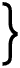

[1]
[2]
De Komedianten [3]
[5]
De stortregen stroomde reeds den geheelen dag. Langs de goten van de Suburra golfde het water als met twee klotsende rivieren, links en rechts, snel vlietend, de nauwe, hellende, kronkelende straat over, haar groot, gebarsten plaveisel overstroomende, mede voerende allerlei afval, tot juichend pleizier der straatjongens, die naar welbehagen beenderen en graten en groente-overblijfselen er uit op vischten en er elkander meê om de ooren kletsten. De straatjongens, zij hadden dien regendag geheerscht in de Suburra, om die overstrooming der goten, gescholden door hunne moeders, die hen van uit de donkere deuren der kleine winkeltjes en kroegen terug wenkten en allerlei vervloekingen der goden riepen over de hoofden harer onbetrouwbare boefjes. De deerne Gymnazium—zoo bijgenaamd, omdat zij in jeugdiger dagen een leerschool geweest was voor jonge athleten en gladiatoren—had een blik naar buiten gewaagd, een paar woorden toe schreeuwende aan haar slavin, de kapster, die zij over haar huisje in haar kapwinkeltje had geïnstalleerd, als tonstrix, om zoo meer profijt van haar te trekken, en zich daarna op haar breede rustbank gevlijd, genietende den zwoelen Aprildag van regendoorruischte rust. Vreemdelingen, om rond te leiden, dien middag, zouden de Suburra met dàt weêr immers niet door trekken.
De avond viel, vroeg reeds en somber. De ondoordringbare, grauwe, smalle hemelreep boven de lage en hoogere huizen, duisterde. Het regende door. De straatjongens waren verdwenen en voor het lange, lage huis van den leno, Taurus met den stierennek, keken de gekapte meiden even uit maar zetten zich niet op hare gewone plaatsen langs den muur—naam, prijs, opschrift [6]boven zich—te kijk en te huur, voor een nacht. Het was te gek met dien regen daar te gaan zitten. Wel bleven zij, door den grimmigen leno gedrild, dringen in de deur maar er ging niemand voorbij om tegen te lonken.
Het regende, het regende door. De taveerne van Nilus, den Egyptenaar—zoo bijgenaamd, omdat hij toch van den Nijl kwam,—over het huis van Taurus, was vol. De wijde, lage ruimte was, in het weifelend licht der walmende oliepitten, overvuld van een saâm gedrongene, roezemoezende menigte, eters en drinkers. De lage, gepleisterde, smookgrauwe pilaren droegen de houten zoldering, zwart; aan iederen pilaar walmde in een ijzeren nap een oliepit. De lucht was onadembaar voor wie binnen kwam, om zoo veel walm van olie, smook van pitten, wazem uit ademen en wadem, die uit de keuken drong, om dien damp uit natte kleêren, om dat zweet van zoo veel zwoele, samen klompende lijven, maar eenmaal binnen, voelde wie at of dronk het welbehagen hem door gloeien. Geene taveerne toch was er beter dan die van Nilus, in de Suburra; hier at men goed en voor weinig en was het Nomentanum-wijntje waarlijk nooit vervalscht. Hier was het maar lekker en prettig, onder de blikken van de godin Isis, wier beeldje, daar, boven de lange, breede schenkbank, in de wolk van walm, neêr blikte over de gasten, de kuische, goede godin, nooit geschandalizeerd door alles wat zij beneden zich hoorde en zag en duldde.
Achter de schenkbank drilde de pezige, bezige Egyptenaar zijn keukenslaven. Uit de keuken brachten zij op grof, bruin aardewerk de porties boonen en linzen, de sneden ham en ganzenlever, kampernoeljes en tal van in melk gedoopte broodjes van Picenum, heerlijk opgezwollen als sponzen en Nilus keek vlug elk bord na en de drie binnenslaven brachten de spijzen rond en het geld er voor dadelijk terug, dat Nilus’ moeder, dikboezemige Alexandrijnsche, na telde, weg borg en met balletjes verrekende in een rekenbord vol vierkante waardevakjes. Nilus zelve, bij zijn [7]abacus, waarin de puntige, aarden amforen, gevuld met zijn beroemd, goedkoop Nomentanertje, slank en sierlijkjes stonden, boog steeds de smalle, lange vaten en schonk de kruikjes in, half of heelemaal, zoo als de gasten dat verlangden.
Nilus was trotsch op zijn zaak. Hij was een man van orde, al was hij maar houder van een taveerne in de Suburra. Hij was te gelijker tijd opgenomen in de broederschap der priesters van Isis en de gasten vonden Nilus een ondoorgrondelijk mensch. Nilus minachtte echter zijn gasten. Hij gaf ze goed eten en drinken en zette ze niet af maar minachtte ze. Het was me dan ook een troepje, dat daar zat en lag, over den grond, over de smalle bedden, op de lage banken en stoelen. Het waren dieven en moordenaars, met hunne meiden; matrozen van Ostia, weggeloopen slaven, beulen en Christenen—dat vee!—en dan, dan waren het heden avond daar, in dien hoek, die smerige Gallen! O, die smerige Gallen! Hij had ze eerst toegang geweigerd, die vuile, rond trekkende bedelpriesters van Rheia Kubele, de Groote Godin, wier groote feest der Megalezia naderde—geweigerd, toen ze in de Suburra waren verschenen met hun juichenden, dansenden, dwazen troep, tamboerijnen rinkelend, rondom hun ezel, waarop, in een kastje, sluierbedekt, zij hunne godin, Moeder der Goden, mede voerden. Hij had ze eerst geweigerd; zij waren wel zeven van die verwijfde kerels om hun reus van een Archigal heen, maar zij hadden honger, hadden zij hem gezegd, en dorst, na een heelen dag door den regen loopen over de landwegen buiten Rome en dan, ze hadden geen geld opgehaald en ze wisten niet waar te overnachten en nu, waarachtig, had hij ze toe gestaan, dat zij daar, in dien hoek, zich opschoten; ze vraten en zopen—zouden hem later betalen, zeiden zij!—en zij hadden hun ezel gestald in de schuur, bij zijn eigen lastdier en wagengedoe en zouden daar nu, in dien hoek, de geheele nacht mogen blijven, in het zaagsel, op de vochtige steenen, over hunne mantels gelegerd als een pak boeven, die gemeene [8]troep! Hun kastje met de godin hadden zij op een plank tegen den muur geplaatst, den sluier er over heen, en daar lagen zij nu, galmende, gillende of, weêr opgestaan, dansten zij als gekken, altijd obsceen, als de gemeenste jongens in de Suburra niet waren. Onwaardige dienaars van de Groote Godin en hij had ze geherbergd, dacht hij nu toch, uit een godsdienstig gevoel: hij kon priesters, zelfs onwaardige, toch niet laten omkomen van ellende en honger.
—Hoûen jullie je bek, daar in dien hoek?? donderde hij hun toe, boos. Anders gaan jullie allemaal de deur uit!
Zij waren dronken, zij smeekten hem grotesk, sloegen hun kleêren open en op, toonden, lonkende, naaktheden en de andere gasten lachten, bulkten, brulden. Ook Nilus lachte wel even, goedsmoeds, bedenkende, dat hij ze toch niet kòn de deur uit zetten, ter wille van de godin Rheia Kubele, die zij mede voerden. Ja, de goden hadden veel te verduren van hun onwaardige schepsels, van die gemeene Gallen en dan van die schijnheilige Christenen, die strakke smoelen, zoo als er daár en daár zaten en altijd smoesden met elkaâr en die nu noòit eens vroolijk waren!
Buiten regende het in éenen door. En steeds ging de deur open en verscheen er een nieuwe gast, verschenen er twee nieuwe gasten, twee, drie vrouwen en drongen zich door de volte, den smook en het geschreeuw en veroverden eindelijk een plaatsje op een der lange, houten banken tegen den muur en vroegen een worstje en een Picenum-broodje en een kroes vol Nomentaner. Tot plotseling Nilus tegen zijn moeder uit riep:
—Daar heb je ze waarachtig al weêr!
Wie hij zoo aanduidde, waren twee vrouwen, binnen gedrongen en de aandacht trekkende van al dat volk, hoewel zij zich niet schenen aan te trekken de nieuwsgierigheid, die zij verwekten. Vermomd, waren zij toch dadelijk te herkennen als patricische vrouwen en zij schenen die herkenning niet te betreuren want [9]lachten er om tegen elkaâr. Zij waren tusschen de matrozen uit Ostia en hun luidruchtige meiden een plekje meester geworden en bestelden niet anders dan zij om zich heen zagen bestellen: een paar worstjes, maar vet, Picenum-broodjes en Nomentaner. Intusschen gingen aller oogen naar haar uit. De eene ….
—Dat is Nigrina …. fluisterde een weggeloopen slaaf tot een dief, in zijn mantel gedoken.
…. was een groote, zware, jonge vrouw; heur zwarte haar was als de helm van een mirmillo breed uitgekapt en doorstoken met een drietand, in den vorm van het wapen der retiariï; heur zware borst, den hals ontbloot, was, als hare bovenarmen, omgeven in een koperen maliënnet, dat spande en een zwarte rok viel tot de knieën neêr geplooid als een gladiatorentuniek terwijl hare gespierde beenen in breede riemen, met koperen spijkers beslagen, waren omsnoerd. Hare bewegingen waren forsch en mannelijk: wijdbeens gezeten, de borst bombeerend, de zware armen van het lichaam af, zoog zij hare worstjes met een aanstellerij van manieren des volks, kwakte de schilletjes op haar aarden bord en slurpte zuigende aan haar kroes. Zij was de vrouw van een senator, zelve geboortig uit een beroemde Romeinsche gens, maar zij trad op in de arena als gladiator, tegen andere mannelijke, vrouwelijke zwaardvechters. En om zich heen weidden brutaal hare zwarte, drieste manwijfoogen over de in smook verdoezelde menigte, tot zij de Gallen in den hoek in het oog kregen, die maar dansten met obscene openspreidingen hunner priestergewaden, nu ten gerieve der beide patricische vrouwen.
En hard, luid lachte Nigrina, minachtend wijzende, hare gezellin opmerkzaam makend:
—Fabulla! Fabulla! Kijk eens die kerels daar, die geen kerels zijn!
….—Ja, Fabulla, stemde de weggeloopen slaaf toe, tot den dief; een nicht van de keizerin Domitia. [10]
—Bij Herkles, vloekte de dief binnensmonds en gluurde nieuwsgierig naar de patricische.
Zij schaterlachte op dit oogenblik, haar blik volgende Nigrina’s wijzing. Zij had zich vermomd met een blonde pruik, de pruik der courtizanen, opzettelijk van vlas en grof, zoo dat het kapsel als een hoed meer dan als een haardos heur rond, wit gelaat omgaf en twee grove, groote, valsche bloemen met glasjuweel bevestigd, waren bonte plekken aan hare slapen. Zij droeg een verkleurde, opzettelijk gescheurde, korte, gazen tuniek en voor den regen had zij een donkeren mantel omgeslagen, die nu was afgevallen. Zij was jonger, fijner, vrouwelijker dan Nigrina; zij bleef zelfs in haar gewilde meidekleedij bijna jonkvrouwelijk en van een lieflijkheid, die nòg patriciesch was in deze omgeving: het was of zij moeilijker dan Nigrina gemeen-weg hare worstjes zoog, haar wijn uitslurpte maar nu keek zij toch ook naar de gemeene Gallen en zij lachte, zich behaagziek leunende tegen Nigrina aan en giechelend fluisterende met haar vriendin, die teederlijk over haar boog. Maar het luide woord van Nigrina scheen onvoorzichtig te zijn geweest, want de Gallen, aangehitst, riepen met schelle stemmen:
—Zoo als jij geen vrouw bent, manwijf van de arena, vechtbazin, mirmillo zonder dìt maar met dàt ….
En zij gebaarden, obsceen, wat Nigrina als man ontbrak en als vrouw te zwaar had en rondom hen allen bulderden en bulkten de gasten en joelden en juichten en gebaarden van dìt en van dàt als gebaarden de Gallen. Maar Nigrina en Fabulla schaterden ook: de vrouw-gladiator was niet beleedigd.
Want zij riep:
—Jij, Archigal, bedelpriester! Kom hier!!
Zij wees, gebiedend. Zij wees als een patricische wijst. En de reuzige Archigal, instinctmatig gehoorzamend het bevel der hooge vrouw, baande weg tusschen de banken en tafels, de gasten. Genaderd vroeg hij, nederig, toch spotziek, met zijn bassige stem: [11]
—Wat behaagt u, Amazone, wie nooit Herkules den gordel ontrooven zoû?
—Zijn jullie van Rome? vroeg Nigrina.
—Van Neapolis, Hippolyte, schertste de Archigal. Wij zijn gekomen voor de feesten van onze Godin.
—Neapolis! smachtte Fabulla. Herinner je je, Nigrina, toen wij samen in Neapolis waren tijdens de Floralia en wij dansten er, naàkt, over de pleinen ….
—Hièr! riep Nigrina en smeet den Archigal een geldstuk toe. Toon ons de godin en gauw!
—Volgaarne, volgaarne, edele vrouw, haastte zich de Archigal en hij wenkte de Gallen, dat zij de godin zouden brengen.
Twee Gallen reikten naar het kastje op de plank maar door hun dronken gebaar stieten zij een luik open boven de plank, dat neêr viel binnen den muur. En op het zelfde oogenblik stak een ezelskop uit het luik te voorschijn—de kop van hun ezel, die gestald was in de schuur der taveerne—en riep, hongerig:
—Hi-ha ….
De gasten bulderden en bulkten en de Gallen duwden den ezelskop weg en rukten het luik weêr op. En zij brachten, de twee, het kastje. Er hing een vuile, nog van den regen druipnatte, belooverde sluier over, met eenmaal zilverglinsterende franje, bezoedeld en gescheurd en dien zij op hieven, voorzichtig, als iets heiligs. En openend de deurtjes van het eenmaal vergulde tabernakeltje toonden zij de Moeder der Goden: een kunsteloos beeld van Rheia met het stedekroontje op het ruw gesneden gelaat.
—Als gij, edele vrouw, baste diep de Archigal, die, reuzig, torende voor de twee vrouwen; dit heilige beeld, dat gesneden is naar het oerheilige Beeld van Pessinus, gekust hebt, zult ge onkwetsbaar zijn in de arena.
—Werkelijk? vroeg Nigrina, maar even bijgeloovig. [12]
En de Gallen, die het opene kastje in de handen hielden en de godin vertoonden, zongen met hun hooge, schelle falsetten:
—Heilig de Moeder der Goden!
Uit Pessinus kwam zij naar Rome!
En haar bark bleef steken bij Ostia
In de verzanding van den Tiber!
Heilig de Moeder der Goden!
De Groote Godin!
Claudia, de Vestale,
Van ontucht beschuldigd,
Deed blijken heur onschuld ….
Heilig de Moeder der Goden!
Toen zij aan haren sluier de bark
Sleepte den Tiber op!
Heilig de Groote Godin!
Daar ginds, in hun hoek, waren de andere Gallen opgestaan en zij bewogen de heupen op den rhythmischen dans, waarbij hunne voeten niet weken van hunne plaats en zij riepen, rhythmiesch en schel, tusschen de hymne door:
—Attis! Attis!
aanroepende den geliefde van der Goden Moeder en zij rinkelden met hun tamboerijnen en alle de drinkers in de taveerne klapten de handen en zongen:
—Attis! Attis!
—Hi-ha! balkte op eens weêr de ezelskop, te voorschijn doemende uit het luik, dat hij van uit zijn stal nu open stiet en omdat in den doezeligen smook daar ginds, zoo onverwachts, als een verschrikking, de balkende bek met de groote tanden en de gespalkte neusgaten gaapte, bulderden weêr de gasten van schaterlachen en deden zij na:
—Hi-ha! Hi-ha!! [13]
—Attis! Attis!! krijschten hooger de bedelpriesters en kletterden met hunne rinkelbommen en de twee Gallen, met het kastje, snerpten:
—Heilig de Groote Godin!
Nigrina boog naar het kastje toe en de Archigal hield den vuilen sluier boven haar hoofd. Onder den sluier kuste Nigrina het beeld met een langen zoen of zij in zoog de beschermende heiligheid er van. Toen sloten de Gallen het kastje, dat zij steeds zoó gehouden hadden, dat de matrozen en de meiden, die ook—en voor niets—kijken wilden, het beeldje niet hadden kunnen zien. De Archigal hing den sluier weêr over het kastje, want Fabulla was vies van het beeldje en wilde het liever niet kussen: het behoedde voor alle ongeval.
—Hoeveel? vroeg Nigrina.
—Drie denariï, bassigde de Archigal en voegde er aan toe, tot Fabulla:
—Wilt ge dàn niet een heilig naveltje koopen, schoone Blonde, een heilig naveltje uit goudsteen gesneden: een mooi steentje om aan ketting of gordel te hangen?
Hij wenkte; een andere Gal bracht een laadje waarin de amuletten en toonde ze:
—Gesneden naar den heiligen Navel der Moeder der Goden, uit den hemel gevallen en die, met juweel versierd, bewaard wordt in haar tempel?
—Hoeveel? vroegen de beide vrouwen, nu wel begeerig, elk een naveltje kiezende.
—Vijf denariï het stuk, prees de Archigal niet te duur in deze taveerne, al waren de koopsters patricische vrouwen, zijn prullen van glas.
De vrouwen kochten de amuletten. Nigrina wilde betalen, voelende naar haar beurs in haar boezem. Daar ginds bleven de [14]Gallen zingend met de tamboerijnen rinkelen en klinkelen met de rinkelbommen. Zichtbaar dreef de dikke walm over de hoofden der gasten. Het was als een bewegende waas, waarin aan de pilaren flakkerden de ros- en geelachtige vlammetjes der druipvette lampenapjes. Ommelijnen waren verdoezeld; lichamen verklompten in de drijvende onduidelijkheid te samen tot lijnlooze, kleurlooze liefkoozingen, die, om de volte, de veelte, de vaalte van het vage geheel niet op vielen en konden geduld worden door Nilus, bezig steeds aan zijn schenkbank. Zijn moeder had, onbewogen, geen anderen blik dan voor haar vingerend tellen der rekenballetjes in de bakjes van haar rekenbord, waarin die als knikkertjes kletterden.
—Het is vòl! riep Nilus naar de deur, die weêr opende: in het regengeruisch, dat binnen vochtigde, drongen zware mannen, drie, vier binnen. Het is vòl: er is geen plaats meer voor kerels als jullie!
Maar zij stoorden zich niet, de nieuw aangekomenen. Allen herkenden hen als gladiatoren van het Colosseum.
—Dametje, je wàpenbroeders! gilden schel in hun hoek de Gallen, dronken, en zij zonden den gladiatoren kushanden toe.
De mannen waren gehuld in vuile, bruine, kletsnatte abollæ, uit wier plooien de stralen als uit goten stroomden. Zij gebaarden en drongen, woest, sterk en ruw door de tafels en banken heen; de drinkers vloekten, zij vloekten terug.
—Kom, maak eens plaats, wapenzuster! riep een van hen en Nigrina, jovialerig, maakte plaats en, hoe ook, de gladiatoren klompten met de vrouwen samen en sloegen met de breede vuisten op tafel om wijn. En de Gallen, daar ginds riepen spottend:
—Thraciërs, Threxen of wat jullie mogen zijn, vechtbazen met net en drietand, handen thuis, hoor en àf van Fabulla want anders wordt Nigrina jaloèrsch!!
—Hi-ha! bevestigde de ezelskop plots maar het luik werd hem op zijn balkenden bek toe gesmeten.
Allen lachten, allen dronken; zij smeten elkaâr met afval van [15]worstevelletjes, uien, afgeknabbelde artisjokken, uitgezogen asperges. Nilus begreep, dat aan de orde niet veel meer te doen was maar het was een schànde, onder de oogen van Isis, daar boven, zoo als ze lagen en lachten en pakten.
—We maken goede zaken, van avond, zoon, zei de dikke Alexandrijnsche, vergoêlijkend de schouders optrekkende en met de vette vingers steeds maar knikkende aan de rekenballetjes.
Maar ginds, bij Nigrina en Fabulla en de nieuw aangekomene gladiatoren scheen reeds oneenigheid te heerschen, want Nigrina, met haar opzettelijk diepe altstem, brulde, opgestaan, tegen een der mannen; een heel jonge zwaardvechter, dien zijne makkers Colosseros noemden. Hij had een gezicht als van een baardeloozen, blonden knaap, de oogen blauw en onschuldig groot, de trekken regelmatig en recht, de brauwen en de neus zuiver geteekend als van een Griekschen kop van beeldhouwwerk en die mooie, zachte, blonde knapekop stond op een Herkuliesch maar volmaakt gespierlijnd lichaam, zoo als het half slechts te voorschijn blondde uit de bruin lederen tuniek, die zijn vierkante knieën en omsnoerde spierkuiten bloot liet, nu de natte, wijde abolla was afgevallen. In zijn armen, waarvan de spierballen speelden bij iedere beweging, had hij dadelijk Fabulla gegrepen—zij, lachende, had nauwelijks afgeweerd—en haar toen in één ruk op zijn knie getrokken; daarom was het, dat Nigrina, verontwaardigd en volstrekt niet vervaard voor haar wapenbroeders, opgestaan, uitvaarde en hem beval haar vriendin los te laten.
—Weet jij, waar Fabulla woont? vroeg de dief dof den weggeloopen slaaf.
—Fabulla zelve woont op het Palatium, lichtte de slaaf in; maar Nigrina’s woning is in de Carinæ ….
—En daar zoû een slag te slaan zijn ….?
De beide mannen smoesden, de gezichten dicht bij elkaâr; naast hen zongen, met halve stem, de Christenen een vroom gezang, [16]dat zich verloor in het schreeuwen en schelden en het gillen en galmen der Gallen en het ironiesch ezelbalken, achter het luik ….
Intusschen meende Fabulla, luchtig, hare vriendin te moeten bedaren en toen Nigrina zelfs handgemeen werd met twee der Threxen, die schertsende de booze wapenzuster beworstelden, zoo dat de kruiken en kroezen van de tafel rolden en braken en Nilus, verontwaardigd, riep en de slaven aanliepen—de twee mannen niet gehéel minachtend deze sterke vrouw—liet Fabulla zich door Colosseros omhelzen, dicht tegen hem aan.
—Hoe oud ben je? fluistervroeg als een meid de nicht van de Keizerin Domitia, op de knieën van den grooten knaap.
—Twintig jaren, bij Juno Lucina, die mijn moeder genadig was bij mijn geboorte en haar een flinken jongen tot zoon gaf.
—Kom morgen, fluisterde Fabulla; des avonds tegen zonsondergang, onder bij het Septizonium ….
Colosseros beloofde en Fabulla riep tot Nigrina, niet meer woedend want lachend bedwongen maar toch geëerbiedigd door de Threxen, die nieuwen wijn bestelden, op hare rekening:
—Nigrina, ik kàn niet anders zitten dan op zijn schoot: er is geen plaats ….
—Er is geen plaats, viel bevestigend Colosseros in en nestelde Fabulla vaster.
—Neen, neen, neen, neen! herhaalde, buiten zichzelven, Nilus naar de deur; er is geen plaats, er is geen plaats meer en ik heb nièts meer: geen stoel, geen bank, geen wijn, geen brood ….
Want de deur, daar ginds, was geopend geworden en, in het regengeruisch, dat stroomde, was een man verschenen met breeden reishoed op en langen mantel om, een man van zeker gezag; achter hem, verlangend, drongen tal van andere gezichten. De man met den hoed, beleefd maar toch besloten, drong nog eens aan om gastvrijheid; hij wenschte met wie hem vergezelden, te avondmalen.
—Neen, neen, neen, néen! herhaalde Nilus beslist en keek om [17]zich rond en wees wanhopig rondom, dat het onmogelijk was en de gladiatoren en matrozen riepen:
—„Het zal niet gaan!!”
—Zeker zal het niet gaan, waarde heer! ging Nilus tot den vreemdeling voort. Ge ziet, dat het niet gaat! En met jullie hoevelen zijn jullie nog?! Neen, neen, neen, neen: het gáat niet. Het ga je wel, het ga je wel: goede nacht!!
En hij wuifde ze met zijn hand de deur uit …. Maar de man met den hoed deed een pas nader. Hij nam den breedgerande, waarvan stroomde het water, hoffelijk af en zeide, beleefd:
—Heer caupo, ik ben Lavinius Gabinius, de dominus-gregis, die met zijn grex heden avond in Rome is aangekomen op hoogst vereerend verzoek van den prætor en de heeren ædilen, om tooneelvoorstellingen te geven tijdens de Megalezia en hoewel ik met mijn komedianten wel onderkomen gevonden heb, zoû het mij toch ten zeerste aangenaam zijn wat te eten en te drinken te krijgen, want wij zijn uitgeput van honger en dorst. Zoudt gij waarlijk niets voor ons hebben, heer caupo? Ik betaal u met deugdelijk geld. Want de heeren ædilen hebben mij genadiglijk voorschot gegund ….?
En hoffelijk bleef Lavinius Gabinius staan, den breedgerande in de hand ….
—De komedianten! De komedianten! ruischte het belangstellend door het stemgedruisch der drinkers in de taveerne van Nilus. De komedianten, die spelen komen tijdens de feesten der Groote Godin!!
Er was een algemeene nieuwsgierigheid. Aller oogen gingen naar de steeds opene deur, waar meer en meer gezichten zich verdrongen, in de regen-overstroomde straat. Ook Nilus, eerst buiten zichzelven om zoo ongewone drukte, was dadelijk verteederd en riep:
—Maar kom dan toch ook binnen, Lavinius Gabinius, kom binnen met uw caterva, met den heèlen troep; kom toch binnen, dominus-gregis; plaats is er nog wel! [18]
—Wij zijn zes-en-twintig, lichtte, kijkende als een veldheer, de dominus in.
—Komt toch alle zes-en-twintig binnen! Er is nog wel een broodje, een worstje, een ui; er is zelfs nog saucijs van Lucanië, er zijn jonge kooltjes in laserpicium gestoofd, er is versche kaas van Trebula, er is honig van den Hybla, er zijn vijgen van de Campania en wijn is er altijd!!
En Nilus, de heerlijkheden op sommende, wenkte dominus en caterva binnen en zij kwamen, zij kwamen nader, de een na den ander kwam binnen.
—Wij zijn zes-en-twintig, herhaalde de dominus en overzag zijn komedianten, naar mate zij nader kwamen, de bezette banken en stoeltjes tusschen door en langs de van Nomentaner rood vloeiende tafeltjes.
Nilus was hem te gemoet gegaan.
—En waar hebt gij huisvesting gevonden, Lavinius Gabinius? vroeg hij, vol interest.
—In vijf, zes kleine vertrekjes, heél boven op de vijfde verdieping in een heél hoog huis, achter de Suburra, in de nieuwe wijk, heer caupo, antwoordde de dominus; maar vergunt ge mij nu mijn slaven te tellen; je weet nooit of er niet eén weg slipt…. Zes-en-twintig moet ik er hebben ….
—Heu, lieve gasten, kunt ge ook plaats maken? riep Nilus de zaal door. Want Lavinius Gabinius komt met zijn caterva komedianten en het zijn er niet minder dan zès-en-twintig!
—Zès-en-twintig! roezemoesden de stemmen door den walm en wasem heen. Zes-en-twintig!! Wat een groote troep!
Onderwijl telde de dominus zijn komedianten, die zijn slaven waren.
—Twee „grijsaards”, somde Lavinius op, en tot Nilus:
—Maar die eéne is vrijgelaten …. Gaan jullie zitten; twee adulescentes; komt binnen, komt binnen …. Zijn Cecilius [19]en Cecilianus weêr achter ….? Waar blijven zij toch? Twee „parazieten”…. Ja, heer caupo, ik heb een heel volledigen troep; twee matrona-jongens; toe, nu wat opschieten, hè? Zijn Cecilius en Cecilianus er weêr niet ….?
En de dominus, met autoritairen vinger, telde of zijn zes-en-twintig hongerige en dorstige komedianten wel binnen kwamen. Zij kwamen, volgens een zekere hierarchie: de eerste-rollen eerst: na de „grijsaards” en „jongelingen”, „parazieten” en matrona-jongens—waar toch Cecilius en Cecilianus bleven?—kwamen de twee groote „slave”-rollen en twee kleinere „slave”-rollen, twee leno-rollen, twee lena-rollen, vier kleinere rollen, zoowel mannen als jongens; dan de mimus-rollen; dansers, zangers, fluitspelers; dan de machinisten en knechten ….
—Zij zijn er! riep Lavinius uit. Alleen Cecilius en Cecilianus, mijn tweelingen, die de eerste vrouwerollen spelen?! Bij Apollo en Bacchus, waar zijn die nu toch!
—Ze zijn zeker voor goed aan de haal, dominus, treiterde de eerste senex nijdig: hij was, al speelde hij „grijsaards”, een jonge man maar zijn stem was alleen geschikt voor de senex-rollen en met die zelfde senex-stem kòn hij niet anders dan ook in zijn dagelijksche leven spreken; je mooie, onvergelijkelijke vrouwekereltjes zijn aan de haal.
—Neen, dominus, spotte de eerste „paraziet”, die ook in het leven zich had aangewend geestig te zijn; wees maar niet bang: gestolen voor een tweede maal zullen de mooie tweelingetjes niet worden!
De geheele caterva lachte om de grap, den dominus plagende, dat hij zeker wel, jaren her, de „mooie tweelingetjes” kon gestolen hebben. Maar Lavinius haalde minachtend de schouders op: de tweelingen waren hem immers als kleine jochies door hun moeder in optima forma afgestaan ….
Intusschen hadden vier-en-twintig komedianten de reeds volle [20]zaal vervuld. Maar overal ruimden de gasten hun plaatsjes in, o zoo nauwe, kleine plaatsjes, op een bank, op een bed, op een stoel, aan de punt van een tafeltje en Nilus zelve hielp de binnenslaven en de binnenslaven hielpen de keukenslaven en, werkelijk, de nieuwe porties werden voor gezet, rijkelijk, dampende, juist van de versch gevoede vuren af, die op nieuw snorden, beneden in de keuken: Picenum-broodjes ….
—Als spònzen! prezen in koor de hongerige komedianten. ….de vette saucijsjes van Lucanië en de lekkere kooltjes in laserpicium gestoofd ….
—Ze hebben me niets te veel van je keuken verteld, heer caupo! waardeerde hoffelijk Lavinius.
Nilus, glimmende, glimlachte, in beide armen een puntige amfoor omhelzende, die hij boog over de aarden kroezen heen, zonder zich de moeite te geven de kruikjes te vullen: de wijn spilde over de tafelen.
—Ik kan zoo niet rekenen, zoon! riep de Alexandrijnsche, met dolle oogen, hijgenden boezem, over haar rekenbord heen, waar zich hare vingers verwarden aan de te verknikkeren balletjes.
Nilus wenkte haar, dat het er niet op aan kwam, kom, zóo nauwkeurig te rekenen, als de heele caterva kwam avondmalen en natuurlijk terug zoû komen alle de dagen, dat zij spelen zouden en de Megalezia duurden.
—Heer caupo! riep de „paraziet”, fijntjes; schenk den wijn liever mijn mond in dan in mijn schoot!
Rondom schaterlachten de gasten:
—Hij blijft in zijn rol! Hij blijft in zijn rol! Hij zuipt liever dan hij verdrinkt!
—Eerst in regen, nu in wijn!
En de „paraziet” glimlachte, omdat hij gewaardeerd was geworden en nipte aan zijn kroes, want hij was heel matig.
De Gallen draaiden om de nieuwe gasten rond. [21]
—Willen jullie geen naveltjes koopen, goudsteenen naveltjes van de Groote Godin? Dan heb je succes, als je die koopt? Moeten jullie de Groote Godin niet kussen, onder haar sluier, in haar kastje? Dàn vergeet je nooit een woord van je rol en wordt je dus nooit gegeeseld en dàn zeg je je diverbium altijd zuiver, lieve schatten, op de maat van de fluitmuziek! Fluitspeler, geef toch een kus aan de Godin, koòp toch een naveltje; dan speel je zoo zuiver als of de Muzen je hadden geleerd!
Maar de Gallen haalden met hun Groote Godin niets op bij de komedianten. Die waren te sceptiesch geworden door dat filozofiesch makende leven van, meestal allen, slaven-die-kunstenaars-waren, om te hechten aan amuletten, om te gelooven in de godin van een vuilen troep bedelpriesters, minstens even geminacht door de betere burgers als zijzelve, die histriones waren. Neen, zij waren te veel zich bewust van hun onwaarde als menschen, van hunne minderwaardigheid als levend schepsel en de onvermijdelijkheid van hun noodlot om een enkele as nog te wagen aan de betwijfelbare gunsten eener godin, die in een kastje, onder een vuilen sluier, neêr gezet werd op een plankje in een taveerne, vlak bij het stalluik, waar door telkens een balkende ezelskop drong. En zij schertsten tegen de Gallen, ironiesch, satyriesch, bijna een beetje rhetoriesch, met herinneringen aan zinnen uit hunne palliatæ, uit hunne in Grieksche kleedij vertoonde blijspelen van Plautus en Terentius, met een vreemde mengeling van slaafsche onderworpenheid aan hun dominus-gregis, aan maatschappij en noodlot èn een zekeren, stillen trots kunstenaar te zijn, litterair ontwikkeld, te weten de fijnere onderscheiding in hunne spelen, in dier verzen, in de metriek er van, in de geheimenissen van mimiek—saltatio—en voordracht, gesprongen, gezongen, in àl de nuancen hunner kunst, die zij geleerd hadden durende jaren, den stok steeds dreigende boven hun slavenruggen. Hadden sommigen hunner dan een sommetje verzameld om zich los te [22]koopen van den dominus en „vrijgelaten” te zijn, hun belang bracht toch mede, dat zij den dominus nièt verlieten: als „vrijgelatenen” hadden zij een zekeren voorrang boven de slaven-artiesten, speelden zij, ook om hun betere kunst, die hen veroorloofd had zich vrij te koopen, de eerste rollen, verdienden zij iets meer geld, dan des dominus’ fooitje bedroeg aan de anderen. Voor de maatschappij der burgers bleven zij, slaaf of vrijgelaten, de geminachte histriones, zonder burgerrechten, de bespotte vermakers der menigte, de verachte paljassen van het toch steeds om hen te zien en te hooren toestroomende publiek, op straat en forum uitgejouwd, gegooid met vuil, mizerabelen, die immers een „veracht bedrijf” uitoefenden, en meer nog „veracht” dan de winkelier hoewel niet zoo veracht als de beul. Nauwelijks dorsten zij zich vertoonen buiten hun ambt, af van de planken, waarop zij zich gaven en dulden moesten de grillen van hun publiek maar in zich gevoelden de besten hunner iets als een geheimzinnigen trots van toch kunstenaar te zijn, uitbeelder der eeuwen-oude komediën van Plautus en Terentius.
In de taveerne van Nilus waren zij nièt geminacht, werden zij broederlijk ontvangen, welkom geheeten. En waarom ook niet! Was Nilus zelve niet maar een vreemdeling èn een caupo, dus ook een „veracht” bedrijf-uitoefenaar; was onder deze zuipers wel éen „geachte” Romeinsche burger te vinden; waren dit niet allen „verachte” schepselen: deze gladiatoren, deze matrozen, dit naamlooze volk van Suburra-bezoekers, déze dieven, weggeloopen slaven, deze Christenen? Dat sinistere troepje daar ginds: een beul tusschen zijn twee geeselslaven en de lijkedragers, die zich bij hen hadden gevoegd—somber keken zij over hunne kroezen, meestal stilzwijgend, nu en dan met een enkel donker woord gefluisterd tusschen hunne barre, barsche, stoppelgebaarde smoelen van ruwe mannen, hun verweerde koppen ruig donker doemende uit den walm van vette keuken- of lampenolie en stoom uit druipnatte [23]kleêren—hadden zij en hunne gelijken wel het rècht komedianten te minachten? Neen, zij gevoelden zich gemeenzaam met hen; zij schikten hun plaatsjes in; zij stonden hun hunne kroezen af, nu Nilus er te kort kwam en de komedianten, om hun alleen intellectueelen trots, verbroederden dadelijk, gevoelden zich dadelijk thuis met de gemakkelijkheid van overal door heen rollende zwervers, sloegen blijmoedig kwinkslagen, joligden, zèlfs met de Gallen, die de anderen meestal noóit anders dan met een snauw van zich af duwden. Want de Gallen, dàt waren lastige, opdrìngerige bedelpriesters, maar de komedianten, dàt was gezellig volkje en ze kwamen daarbij toch ook spelen geven om al dit volk, dat hen van af de hoogste theateromgangen zien zoû, te vermaken.
—Is het erg hoogdravend, adulescens, wat jullie geven zullen? vroeg een der matrozen uit Ostia aan den eersten „jonge-rol”, die tegen Fabulla, over den blonden, kogelronden schouder van Colosseros heen, lonkte.
Want de adulescens, ijdel op zijn jonge-rolgezicht, dat hij maar zelden achter een masker verborg, ging prat op de gunst der vrouwen en maakte er bijverdienste uit, in de hoop zich los te koopen.
—Neen, zei de adulescens goedig, ijdel lonkende tot Fabulla, wie het lonken wel vermaakte, maar wier arm bleef om den kolom-nek van den jongen reus. Het zal vermoedelijk Plautus zijn: de Menæechmi of misschien wel de Bacchides en—voegde hij er neêrbuigend aan toe—dat begrijpen jullie wel; de Prologus vertelt je immers dadelijk alles ….
—Nou ja, riepen de matrozenmeiden door elkaâr; dan is het ook gemàkkelijker!
—…. Ik kan niet alles zoo volgen ….
—…. Ik hoû het meest van wat ná komt: dan dansen ze en springen ze! [24]
—Jawèl, zei de adulescens zelfgenoegzaam, hoogmoedig, zich in eens „intellectueel” gevoelende: zoo een mimus, zoo een exodium-spel is altijd wel àardig, om al de mooie vertooningen ….
En hoewel hij begreep, dat zijn wijze woord te loor ging tegen die dellen, kon hij niet na laten er goedigjes hoog bij te voegen, te gelijker tijd lonkend naar Fabulla:
—Maar ònze kunst, onze kunst van zèggend, zingend reciteeren, spélen, onze tooneelspeelkunst, in éen woord, staat natuurlijk hóoger dan alleen maar wat dansen en buitelen en grapjes maken, zoo als ze doen in het exodium-spel ….
—Leer jij zoo een heele rol van buiten? vroeg de matroos, met een angstig gezicht.
—Natuurlijk, zei de adulescens; en je krijgt slaag, als je je rol niet kent en hakkelen of steken blijft, terwijl zoo een mimus-speler—minachtend werd zijn stem—die dànst of springt zich er wel altijd door heen ….
De voornaamste mimus-speler overluisterde hem terwijl de adulescens, Fabulla vergetende, hongerig zijn jeugdige-minnaars-kop verborg in een bruine kom vol warme linzensoep, die hij gretig uit slurpte. Maar de mimus-speler, zijn beide handen en mond aan een dikke saucijs, waaraan hij zoog en trok, heftigde terug, zijn baardelooze wangen vet van de saus:
—Net of wij niet springen en dansen op de maat van de muziek van de fluiten en niet met de riemen worden gestriemd als we er even uit zijn …. Terwijl het publiek òns dan meer uitjouwt dan jullie omdat ze beter ons dansen volgen kunnen dan al die duizende woorden, die jij uitbraakt en die onhoorbaar zijn, als je geen masker met een breeden muil voor doet, jou ijdeltuit van een adulescens!
—Ze verstaan mij altijd heel goed! schreeuwde nijdig de adulescens, zijn vingers nog om de nu leêge kom; het is een kwestie van articuleeren! [25]
—Onzin! riep de mimus. Ze verstaan altijd beter als je een masker om hebt omdat de maskermond het geluid uitzendt!
—Als jij als adulescens een fatsoenlijk gezicht hebt, riep de „minnaar”; hoèf je geen masker voor!
—Wàt heb jij een „fatsoenlijk” gezicht! wreekte zich, grinnikend nog steeds, de mimus; jij hebt een zuigelingensnoet op de planken, van zoò ver, voor de verste toeschouwers!
—Dat is een kwestie van grime, bij Pollux, snerpte de adulescens terug.
—Ik heb dan maar liever mijn mimus-masker voor, ik ben dan maar liever personatus dan mijn eigen gezicht te besmeeren met zwart om mijn oogen en rood om mijn mond, zoo als jij doet ….
—Hi-ha! bevestigde de ezel.
—…. tot je er tòch als een masker uit ziet!
—Zoo! Ik maak anders altijd een heel goeden kop; dàt zegt de dominus zelf!
—Masker is masker, hield de mimus vol; wij zijn ten minste onherkenbaar achter òns masker en niet prijs gegeven aan het publiek als jullie, die altijd herkenbaar blijven, wat je ook op je gezicht smeert!
—Wij blijven veel menschelijker als wij geen houten maskerkop op zetten!
—Jullie zijn mèiden met je blanketsel, bij Pollux!
—Ik heb, bij Herkles, nooit een meid gezien, die er uit ziet als een comœdus, want wij blankètten ons niet maar grimeeren ons: ik spaar niet de verf op mijn gezicht!
—Hi-ha! meende de ezel.
—Een masker is noodzakelijk! viel nijdig de jonge senex in: hij moèst altijd met een masker spelen.
—Jullie zijn cinædi! schold de mimus, dwars door het lawaai. [26]
—Neen, jullie juist zijn cinædi, schold razend de adulescens terug. Jullie wringen je heupen en doen als obscene jongentjes, als die Gallen daar doen, maar wij blijven altijd kunstenaars, kunstenaars-van-het-woord; wij blijven altijd hoog-komiek! Wij loopen niet met Priapus te koop, als jullie doen! Wij werken niet op de lage lusten van het publiek als jullie met je bokkensprongen! En ik ten minste ben alleen voor mooie vrouwen bereid, terwijl jij voor iedereen klaar staat!
En hij lachte verleidelijk naar Fabulla.
—Niet twisten, jongens, kwam Nilus aan; eten jullie liever je buiken vol!
En hij zette zoo wel mimus als adulescens een schotel voor met petaso: varkenshaas met prei en eiersaus er om heen.
—Bij den grooten Jupiter, juichte de adulescens uit; heer caupo, jij bent waard, dat we den heelen Plautus voor je spelen! En Terentius na!
De mimus zeide niets: hij kreunde van gulzigheidswellust en sloeg voor over met zijn mond in den schotel en lebberde de saus.
—Wat is Terentius? vroeg een der matrozenmeiden.
—Wie Terentius is?? vroeg de adulescens met open mond en bléef opensmonds, omdat iemand—zelfs een deerne uit Ostia, die een dagje uit was met matrozen uit een daar binnengeloopen schip, vol koren, dat van Egypte kwam om Rome te voeden—zóo onwetend kon zijn. Wie Terentius is?? Maar hoe is het mogelijk!
—Nou, ze is maar een eenvoudige meid, zei de matroos, die zoo bang was voor van-buiten-leeren; wat weet onze Sila nou van al die geleerdheid. Zeg nou maar eens, jij knappe adulescens, wat …. ik bedoel, wiè is Terentius.
—Terentius is een beroemde blijspeldichter, lichtte de adulescens in; die drie-en-een halve eeuw geleden geleefd heeft en hij komt even na Plautus en is niet zoo een groot genie ….
—Zóo? draaide zich langzaam, minachtend, de fijne „eerste [27]paraziet” om, lange, blauwe asperge nog in zijne vingers. Vindt jij Terentius minder geniaal dan Plautus! Bij Herkles, dat is de eerste keer, dat ik dàt hoor!! Terentius, die zoo zijn Grieksch kende, die zóo fijn geestig was ….
—Bij Pollux, Plautus heeft ook de Grieksche voorbeelden nagevolgd, bitste de adulescens terug.
—Terentius, die zoo elegant van taal en rhythme is!
—Plautus is veel frisscher èn van taal èn van rhythme en veel minder systematiesch van opbouw in zijn spelen. Terentius is al decadent!
—Terentius, verbeeldt je, wiens titels alleen al poëemen zijn, effectvol om uit te spreken! Wanneer vond Plautus titels als: Andria ….! Hecyra ….! En vooral ….
De „paraziet” spitste de lippen en gebaarde met duim en wijsvinger tegen elkaâr:
—Heautontimorùmenos!! Is zoo een titel alleen al niet Aeoliesch geluid?!
En de „paraziet” zong, declameerde, mimeerde het lange, Grieksche woord sylbe na sylbe: de rijk klinkende titel van het spel des „Straffers van Zichzelven”….
En bedankte toen, matig in het leven, al was hij veelvraat op de planken, voor de tweede portie vleesch en boonen, die Nilus hem bood.
—Wat worden ze nou geleerd, zei Sila tot haar Egyptischen korenschipmatroos. Het lijken wel filozofen!
—Ze praten Grieksch, zei de matroos, die, uit Alexandrië, veeltalig geworden was en den titel van „Heautontimorùmenos” bijna verstaan had, hoewel niet begrepen; maar je hebt gelijk: het zijn, bij Herkles, wel knappe kerels!
Intusschen kijfden zelfbewuste adulescens en fijne „paraziet” voort over de voortreffelijkheden van Plautus en Terentius en de Christenen murmelden tegen elkaâr: [28]
—O, die zònde van het tooneel, mijn broeders!
—Ja, die onzedelijke vertooningen, steeds van echtbreuk ….
—En hun meesters bedriegende slaven! En van lichtekooien!
—Bij Plautus èn bij Terentius!
—Nooit zielverheffend, altijd terugtrekkend, in de modder der laagheid!
—Broeders, moeten wij niet gaan? Is het uur niet geslagen….?
—Dat onze Bisschop, de heilige Clemens ….?
—Ja, ja, ons verschijnen zal in de Catacomben, ter prediking?
—Gaan wij, gaan wij ….
Zij stonden op. Allen zagen nu, dat zij Christenen waren. Zij hadden toch niets bizonders. Het was om hunne gezichten, om hunne strakke oogen, hun toegeknepen mond. Nauwlijks iets donkerder waren hunne grove tunieken dan van wie hen omringden en heidenen waren.
Zij gingen, na gekeken; toen, bij de deur, na gejouwd.
—Kleine-kindertjes-slachters! lastergilden de Gallen.
De laatste Christen keerde zich om, stond even stil. Om zijn genepen mond ontbloeide plots een glimlach van stralend medelijden.
—Nigrina! riep Fabulla, steeds op de bloote knieën van Colosseros; wat werd die Christen móoi, toen hij zoo lachte!
….—Ik ben erg ongerust, heer caupo; tobde de dominus. Ik begin èrg ongerust te worden, om Cecilius en Cecilianus, mijn twee „eerste-vrouwerollen.” Het zijn heel kostbare ventjes en ik ben altijd bang ze te verliezen. Het zijn tweelingen, heer caupo; zestien jaar, denk ik: ik heb ze …. ja, ik heb ze gekòcht in Syracuze, toen ze nauwelijks drie jaar waren. Ja, ik heb ze zeker al sedert dertien jaar …. Ze zijn op de pædagogia geweest; o, ik heb zoo veel geld voor ze uitgegeven …. Ze hebben les in àlles gehad, in rhetorica, in alle vrije kunsten, in muziek, in dans …. Ze zeggen dan ook hun rollen als niemand! Ze hebben veel talent: [29]dat heeft zich in hen ontwikkeld. Ik heb ze nooit laten geeselen; ik was bang hun mooie lichamen te bederven …. Ik, ik heb ze bedorven en ze weten zoo, dat ze een potje breken kunnen. Dan loopen ze maar weg, uren blijven ze dan weg …. Zoo als van avond …. Verbeeldt je nu toch, vriend caupo, als ze voor goed wèg geloopen waren! Of geschaakt …. Jongens van dien leeftijd, die zóo mooi zijn, worden wel eens geschaakt, hier in Rome …. Het is hier zoo groot; wat verdwijnt, vindt je hier niet meer terug …. Ik word er koùd van te denken, dat ze misschien …. Het zoû een verlies zijn ….!!
—Wanneer zag je ze dan het laatst, vriend dominus? vroeg Nilus.
De dominus, op een schabel, was door Nilus geïnstalleerd geworden vlak bij de schenkbank. Op zijn knieën hield hij zijn diepe bord, eerst rijkelijk gevuld met soep, toen met vleesch, groente, brood en nu at hij den eenen honigkoek na den anderen. Zijn telkens volle kroes stond op de schenkbank zelve.
—Wel, zoo even nog …. Ik meen, toen we onze kamertjes gehuurd hadden in het hooge huis, daar achter …. Toen moest ik toe zien op de berging van onze kisten en koffers, die zijn vol requizieten en maskers en manuscripten en die staan opgesloten beneden in huis, bij den slavenkoopman. Ach, vriend caupo, je weet niet half wat er te doen is om zoo een grooten grex van Neapolis naar Rome te krijgen. Op mij komt alles neêr: de correspondentie met den prætor en de ædilen, op te letten, dat àlles in de contracten vermeld wordt wat er vermeld moet worden—de contracten zijn nù geteekend—; gèld heb ik uitgegeven om onze maskers en tooneelschoenen weêr op te frisschen vóor ik zeker was van de zaak; de ædilen dingen dan en het is zóo ver van Rome naar Neapolis en voor je weêr antwoord hebt, verloopen er dagen, weken, al is de Keizerlijke Post nog zoo geregeld onder onzen genadigen Keizer Domitianus …. [30]
—Hm ….m! bromde Nilus, veelbeteekenend, met een grijns—als van een tooneelmasker, meende de dominus.
—Stt! fluisterde verschrikt Lavinius Gabinius; niet brommen en grijnzen, vriend caupo! en uit angst dronk hij zijn pas ingeschonken Nomentaner in eenen uit. Bedenk, ik, die met de officieele autoriteiten te doen heb, zeg altijd: onze genádige Keizer Domitianus en alles wat „keizerlijk” is, ook de Post, is pràchtig geregeld, hoor, pràchtig! Bedenk toch, als ik wat anders zei, zouden de verklikkers ….
—Hièr zijn er geen! pochte Nilus.
—Niet te hard op dat zeggen, vriend caupo!
—Van dit volkje hier valt niets bij den Keizer te klikken ….
—Misschien zijn zelfs die voorname dames, die zich vermommen als een gladiator en een meid, wel verklikkers ….
—Ze komen hier al weken lang: het zijn niet meer dan emotie-zoeksters, weet je.
—O, emotie-zoeksters, vriend caupo? Is dat modern Romeinsch?
—Wie weet! Ze zijn niet moderner dan Messalina was, ze zijn moê van voornaamheid en stellen zich aan. Ze zoeken minnaars en …. minnaressen onder het volk als ze moê zijn van hare gelijken …. Ze moesten eens aan de kaak worden gesteld door een modernen tooneelspelschrijver, ja, dàt moesten ze, vriend dominus. En dan moest jij die satyre doen spelen!
—Ach modèrn, vriend caupo, modern is er nièts, dat van echte kunst getuigt. Neen, wij moeten niets van moderne schrijvers hebben. Die hèbben niet zoo veel talent, genie meen ik, als Plautus en Terentius hadden, al leefden zij drie eeuwen en langer geleden En zelfs voor onze mimus-stukken zoek ik liefst de antiekste, die van Livius Andronicus, uit …. Maar waar blijven nu toch Cecilius en Cecilianus! Vriend caupo, ik word zóo ongerust! Sedert ik toe zag op de berging van onze koffers en kisten, heb ik ze niet [31]meer gezien …. Zijn ze weg geslipt …. Zijn ze er van door gegaan …. Wat doen ze nu, in die groote, onbekende stad …. We hebben wel eens meer gespeeld in Rome, drie jaar geleden ….
—O, drie jaar geleden, vriend dominus? Toen was ik nog in Alexandrië ….
—Maar toen speelden zullie nog niet de „eerste-vrouwe”-rollen. Toen traden ze alleen nog maar nu en dan in een mimus op: ze dànsen ook fijn. Maar ik meen: ze kennen Rome toch niet en nu dwalen ze rond in die groote, donkere stad …. Waar zouden ze zijn op dit oogenblik?
—Naar huis misschien, vriend dominus?
—Naar huis? Ja, het zijn lieve jongens om zoo vroeg en rustigjes naar huis te gaan! En zonder avondeten, tenzij dat een uitnoodiging hun in het oor is gefluisterd! Vriend caupo, als ze niet terugkomen, ben ik verloren …. Over driè dagen moet ik spelen en als ik ze niet hèb …. Gelùkkig!!
Die laatste kreet van den dominus was er een van verluchting, weelde, zaligheid. De voordeur daar ginds was geopend. Het regende niet meer. De opene deur gaf uitzicht op de nauwe Suburra-straat, waarboven de uitgeregende lucht zich donkerblauw verdiepte, een reep van nacht in de deur omlijst. Er tintelden zelfs twee, drie starren op. De lage huizen brokkelden en braken hun grauwe daken- en murengewarrel donker groezelig onder die nachtereep of glommen met lange weêrschijnen van druipende vocht in rossigen glans van de lantaren voor het huis van Taurus. Hoewel reeds laat in de nacht, zaten—zichtbaar van uit de taveerne—er drie, vier vrouwen voor, op hooge gestoelten; naam, prijs, iets van hoedanigheid was ruw geschreven, obsceen geschilderd boven hare zitplaats. Zij keken verlangend de taveerne in, achter de ruggen langs der twee knapen, die juist de deur hadden geopend …. Of er niemand uit kwam, te gelijk dat er binnen gingen die twee blonde jongens, in éen wijde abolla gehuld. De mantel [32]omgaf hun beider ondeugende tweelinggezichten. De zittende meiden, daar ginds, riepen de taveerne in. Riepen zelfs naar de blonde ventjes. Maar deze hielden hunne ruggen, in dien éenen mantel, gekeerd naar de meiden, terwijl hunne oogen schalks de taveerne in keken. In de schaduw van den mantel over hunne hoofden gluurden schuin, ondeugend, hunne vier donkere, lang gespleten kijkers den smook en walm der volle zaal zoekende binnen. Blank, jong, frisch, in den gloor van hun stouten glimlach van bedorven-jongens. En hielden zij elkaâr, in de mantelplooien, arm om schouder, terwijl zij op den drempel toefden.
—Eindelijk dan! riep de dominus en de heele troep, juichend, ironiesch, plagend hun meester, dien zij ongerust wisten te zijn geweest, herhaalde:
—Eindelijk, eindelijk dan, Cecilius en Cecilianus!
…. Zoo dat allen, de matrozen, de meiden, de gladiatoren, de Gallen, al die opeengepakte gasten riepen, als hadden zij de nieuw aangekomenen ook al sedert lange verwacht:
—Eindelijk, eindelijk dan, Cecilius en Cecilianus!
—Zijn jullie daar dan eindelijk, Cecilius en Cecilianus? riep de dominus opstaande, met zijn stem van ontevreden veldheer. En wáar zijn jullie dan toch geweest?
Cecilius en Cecilianus waren binnen gekomen; de deur kwakte dicht op het perspectief van de straat en der zittende, afwachtende meiden van Taurus. De knapen lieten zich niet dadelijk uit waar zij waren geweest, antwoordden met, in het geroep, onverstaanbaren scherts en sloegen hun wijden mantel af. Aller oogen gingen naar hen toe. Iedereen wist, dat zij de „eerste-vrouwe”-rollen speelden. Zij waren beiden even groot, niet klein, zeer slank, toch kinderlijk en tevens met iets over zich, dat dadelijk herkenbaar was als dat van den jongen „histrio”: een ironie, een gemak, een ondeugendheid, iets brutaals, al waren zij „veracht” en slaaf. Niets verlegens was aan deze kinderen-der-planken: thuis schenen [33]zij overal zich dadelijk te voelen, deze stoute zwervertjes van het „verachte beroep”, die al zoo veel gezworven hadden. Of het nu was Canope bij Alexandrië, of Baiæ bij Neapolis of de Suburra in Rome, het was voor hen alles het zelfde. Rijke villa’s, grootsche terrassen of Nilus’ taveerne, niets zoû hun meer veel indruk kunnen maken. Zij schertsten dadelijk met Nilus of zij hem jaren hadden gekend. Zij doopten, als ondeugende kinderen, hun vingers in de sausen om die te proeven ….
—Hi-ha! kwam de ezel balken en de jongens balkten terug en schaterlachten. Toen zij zich ontdaan van hun mantel hadden, trof het hun medespelers—voor zoo ver iets van deze knapen de anderen treffen kon—dat zij niet als alle anderen in hun bezoedelde, vuile, bruine, natte reistunieken waren. Zij droegen beiden lichtgele tunieken van fijn lijnwaad, borduursel om mouwen en rand en hun lichtgele schoenen, geriemd tot de knieën, waren nauwlijks van de straat vochtig geworden. Waar waren zij geweest? Hoe hadden zij occazie gehad zich te verkleeden? Waarom waren die mooie schoentjes zoo ongerept? Hadden zij misschien in Rome dadelijk een draagstoel te hunner beschikking? Die vragen uit mond van senex, adulescens, „paraziet”, „slave”-rol en wie zij meer waren, overstelpten hen, de kwâjongens. Zij schertsten die vragen van zich weg, zoo als zij vliegen hadden weg getikt.
Hadden zij een bad genomen, dat zij zoo frisch waren? Zij lieten zich er niet over uit. Hi-ha! balkten zij met den ezel meê; zij dansten zelfs even met de Gallen meê; Cecilianus, de „jongste”—want hij was „de jongste” tweeling—sloeg met de vlakke hand onder het laadje met naveltjes, dat de Archigal hem aanprijzend toonde en de naveltjes vlogen op, vielen her en der neêr en allen lachten en de Archigal vloekte en Fabulla en Nigrina wenkten belangstellend de knapen en het was een geroes van stemmen en een dol geroezemoes om hen heen. [34]
—Van waar kom je? vroeg Nigrina, wijdbeens en breedarms, haar mannevuist gesteund op de tafel.
—Van het paleis van den Keizer, edele vechtster! blufte Cecilius, waarop de dominus, dadelijk opgestaan, verschrikt hem fluisterde in het oor:
—Pas toch op: die patricische dáár komt werkelijk uit het paleis van den Keizer!!
—Ecastor! vloekte fijntjes Cecilius, die het fijner vond te vloeken bij Castor dan bij Pollux of, zoo gròf, bij Herkules.
Fabulla, nicht van de Keizerin Domitia en steeds op Colosseros’ knie, zag Cecilius nieuwsgierig aan ….
Allerlei denkbeelden en eerzuchten joegen haar door het hoofd, onder haar grove, blonde meidepruik. Denkbeelden, eerzuchten, die zij reeds zoo dikwijls zich bewust was geweest, sedert Nigrina zwaardvechtster geworden was. En dat mèt vergunning van den Keizer, haar neef, Domitianus …. Het leven was duf, zonder aandoeningen. Het leven in het Palatium was somber, sedert Domitia, de Keizerin en Domitianus, elkander steeds vijandig, nu elkander haàtten …. Er waren geen vroolijke feesten meer ….
Er hing steeds die atmosfeer van somberheid, vol dreiging, als de Keizer, plots, zich vertoonde, als hij dagen afwezig bleef en zich bezig hield met vliegen aan een lange naald te rijgen. Fabulla, jong, smachtend naar leven, in die sombere dreiging, verveelde zich. De Keizer, na een gril, die geen twee nachten geduurd had, zag niet naar haar om, sprak zelfs niet tegen haar meer …. Domitia behandelde haar soms als een slavin …. Domitilla, ’s Keizers zusterkind, eveneens …. Als zij Nigrina niet had gehad en de nieuwe emotie der vriendinne-passie, had zij nièts gehad van levensbelang in dat duffe, doffe bestaan, met die dreiging steeds boven aller hoofden van des Keizers plotse ongenade …. De Suburra, de kroegen, de bordeelen, Nilus’ taveerne, dat alles had Nigrina haar geopenbaard. Het leven van het volk, het minste, [35]van nabij te zien en zich, in het openbaar, te laten omhelzen door een jongen gladiator, omdat het zoo nauw was, dat Nigrina wel dulden moest, dat ze zat op Colosseros’ knie, dat deed haar vergeten dien altijd durenden angst op eenmaal, onverwachts, gegrepen te kunnen worden door Domitianus’ beulen …. Zonder reden …. Omdat zij gelachen of niet gelachen had …. Ja, hier vergat zij …. Hier zag zij de histriones, vlak bij, hun soep eten …. Zij vond dat belangwekkend …. En dan de eerzuchten, die voor een patricische uit het huis Flavius zoo vreemd ontzenuwde verlangens maar die belang aan het leven gaven …. Als Nigrina zwaardvechtster was, waarom kon zij, Fabulla, niet optreden als tooneelspeelster? In een stuk van Terentius, van Plautus? Zij zong, zij reciteerde; zij deed tòch al die dingen, die een patricische nooit deed …. Die alleen dure slavinnen deden …. Zùlke dingen gaven nieuw belang, wekten vreemde eerzuchten bij haar op …. Te worden toegejuicht door de menigte in een theater, zèlfs te worden uitgejouwd door een menigte, zij, de nicht van Domitia ….
—Speel jij, zeide Fabulla tot Cecilius; de „eerste-vrouwe”-rollen, ventje?
—Om je te dienen, kluchtigde Cecilius. Ik, met mijn broêrtje zijn op de planken even zoo mooie meretrices als jij er een bent met je doorzichtige jurk aan ….
—Om niet te reppen van wat ze zijn als ze van de planken àf zijn, riep de senex, die, om meer dan een reden, de beide jongens niet uit kon staan.
—Vertel eens …. zeide Fabulla.
—Wat, zusje-lief? schertste Cecilius, brutaal en toch kinderlijk.
—Kom eens dichter ….
—Het is zoo vol …. Ik kàn niet dichter ….
—Kom hier maar, op mijn àndere knie, bood Colosseros aan.
Cecilius drong door, zette zich op Colosseros’ andere knie: de [36]jonge gladiator liet, als kinderen, vrouw en jongen dansen op zijn knieën.
—Sedert hoe lang speel jij die rollen al?
—Met mijn broêrtje, twee-en-een-half jaar!
—Het eerste jaar, dat je in Rome optreedt?
—Ja. Maar we zijn opgetreden in Alexandrië, in Klein-Azië; overal zijn theaters en zelfs grootere dan hier in Rome!
—Lastig, zoo van buiten leeren?
—Voor je rug, als je steken blijft ….
Zij wipten om beurten hoog op Colosseros’ knieën.
—Ach wat! riep de senex. Dat ventje heeft een veel te lief ruggetje om óoit geranseld te worden!
—En jij bent oud voor je tijd! riep Cecilius om den senex te ergeren, die, jong, nooit adulescens had mogen zijn.
—Heb je lang moeten leeren? vroeg Fabulla vol belangstelling.
—Nou, of we lang moeten leeren, zusje. Eerst dansen, muziek ….
—Dat kan ik ook ….
—Ecastor! Ben je op de slavinnen-school geweest, daar ginds, in het paleis, lief zusje? plaagde Cecilius de patricische uit het huis Flavius.
—Wat leer je nog meer?
—Metriek! Wat senarius is en wat septenarius en hòe je senarius zegt en hoe septenarius. Hoe je een „stillen zin” moet mimeeren en zeggen en hoe een „bewogen zin”. En dan o nog een heele boel meer. Dank je, caupo, ik heb geen honger voor soep en vleesch, maar ik wil wèl van die honigkoeken ….
En hij bedankte, nuffigjes, voor de gerechten, die Nilus hem zelve bracht als of hij reeds, geheimzinnigjes, ergens en fijner had geavondmaald, maar hij knabbelde lekkerbeks de honigkoeken, éen [37]in iedere hand en hossende op Colosseros’ knie, Fabulla hossende over hem.
—Dominus! wenkte plotseling Fabulla Lavinius Gabinius. Nigrina was met de Threxen verdiept in de methode hoe het zwaard te werpen van rechter- naar linkerhand om den òpsteek te geven, als de rechterarm het schild op ving.
Lavinius Gabinius drong nader.
—Is het volstrekt noodig, dat altijd jòngens de vrouwerollen spelen? vroeg Fabulla.
Lavinius stond verstomd. Dàt was nu zoo een gewichtige vraag, en die nu even hier, tusschen dit onwetend publiek, te behandelen met die „emotie-zoekster”, die hoste op de knie van een gladiator, terwijl Cecilius over haar hoste!
—Domina…. verontschuldigde hij zich.
Ik ben geen domina, bitste Fabulla terug. Jij bent dominus, maar ik niet domina. Ik ben maar een gewone meid, hoor, wat ze je ook van me hebben verteld. Ik word wel eens ontboden op het paleis, ik ben cliënte van een der vrouwen der Keizerin. Dat is alles. De rest zijn praatjes, begrijp je.
—O ….! zeide de dominus, begrijpende, dat de nicht van de Keizerin Domitia hier het aldùs wenschte te verstaan en niet anders. Natuurlijk, natuurlijk, ik begrijp wel ….
—Zeg me dus eens: is het volstrekt noodig, dat altijd jòngens de vrouwerollen spelen?
—Wàt vraagt ze? vroeg Cecilianus, die, na gedanst met de Gallen te hebben, achter Cecilius’ rug drong, tegen Colosseros’ knie.
—Jij ook hossen? vroeg Colosseros en duwde broêrtje op broêrtjes schoot en de drie belanghebbenden in de kwestie hosten over elkaâr op en neêr. Maar zij waren te veel belanghebbend om het gehos anders dan werktuiglijk te dulden.
—Het is een héel gewichtige vraag, Fabulla, zeide de dominus, nu gemeenzaam; die je me doet. Een héel gewichtige vraag…. [38]Er is om die vraag al sedert honderd jaren in het tooneelleven veel te doen geweest.
—Maar natúurlijk!! riepen Cecilius en Cecilianus, als addertjes hun fijne koppen op stekende, snel radende van mededinging. Natuurlijk is dat volstrekt noodig! Natúurlijk is dat volstrekt noodig!
—En waarom kunnen vrouwen de vrouwerollen niet spelen?
De dominus, bezadigd, wilde spreken, maar Cecilius en Cecilianus riepen door elkaâr:
—Jullie meiden hebben geen stèmmen, die doorklinken in ònze theaterruimten! Neen, jullie meiden hebben geen stemmen! jullie zijn veel te klein ook, voor de klassieke komedie! In éen woord, jullie meiden kùnnen niet! Op de planken kunnen jullie alléen fluit-spelen of dansen, zoo als Thymele doet!
Zij waren beiden heel boos en hosten, als onbewust, op de onvermoeibare knieën van neuriënden Colosseros. Ze merkten niet, dat zij hosten, alle drie, als kleine kindertjes, in de armen van dien „Eros”, die een kolos was. Alle drie, twee tegen een, de twee jongens tegen de vrouw, vervijandigden in eens, Cecilianus echter lekkerbekkig genoeg, om broertjes honigkoek uit diens hand af te breken en die zelve op te knabbelen. En, hartstochtelijk, als wilden zij de „gewichtige kwestie” daar, al hossende, op dat moment uitvechten, sloeg hun verwarde twist op. Fabulla beweerde, dat zij in zich voelde talent om vrouwerollen te spelen, dat zij stèm had, genoeg om de verste en hoogste toehoorders senarische en zelfs septenarische verzen te doen hooren; de jongens beweerden, dat het ongehoord zoû zijn, ongezien, in Griekenland nóoit geweest, tegen alle traditie, zonder welke het tooneel een onding zoû worden …. Traditie was toch àlles, in de klassieke komedie! Openmonds bogen de matrozenmeiden zich dichter, niet begrijpende waar over zij het hadden. Die patricische meid sprak ook al als een filozoof! [39]
—In alle geval, schreeuwde schril Fabulla, dwars door de bewijsredenen der al jaloersche, beduchte, overtuigen willende, gekrenkte, minachtende tweelingen door; zoû jij, dominus, het niet eens met mij willen probeeren? Ik zoû je er geld voor geven…. want ik bèn de cliënte van een der paleisvrouwen der Keizerin ….
Er was geen houden meer aan. Alle drie, de twee jongens, de jonge vrouw, waren opgestaan en stonden over elkaâr, in een razernij van elkaâr toegeworpen woorden, niet meer verstaanbaar. Alle de andere komedianten zagen belangstellend toe. Het was immers, als de kwestie der maskers, oók een kwestie, of vrouwerollen wel door vrouwen gespeeld konden worden. Er waren er, die voór, er waren er die tegen waren. De adulescens, bij voorbeeld, en de „paraziet” waren vóor jongens, omdat echte vrouwen te veel af leidden van de kunst. De senex was bepaald tégen jongens en gaf de voorkeur aan echt vrouwespel; trouwens, hij was het in alles tegen diè jongens vooral, tegen die bluffertjes, die, slaven, het in alles eigenlijk veel beter hadden, dan hij, die nog wel vrijgelatene was. Hij had reeds, de senex, van heél jongen slaaf af, die senex-rollen moeten vervullen: hij had nooit vrouwerollen en nooit rollen van adulescens mogen spelen en dat alleen om zijn diepe, brommerige stem, die altijd brommerig en diep was geweest. Omdat hij een goede senex was, had zijn dominus hem altijd beloond, had hij zich eindelijk vrij kunnen koopen, maar hij behield in zich een bitterheid, hem ingegeven door het van jongs af aan moeten vervullen van „grijsaards”. Het grijnzend masker, dat onding, meer een saterkop dan een oude-mannegezicht, waar achter hij zweette en treurig werd, had niet zijn hoofd alleen maar zijn heele leven gedrukt, had hem jaloersch, nijdig, bitter gemaakt; hij haatte zijn masker en wist, dat hij er zich nooit van bevrijden zoû. In de maskerkwestie was hij daarom, uit nijdigheid, voór maskers, zijn eigenlijke meening verbergend en innig hopende, dat eenmaal iedere tooneelspeler zoo een zwaren, [40]ellendigen maskerkop zoû moeten dragen, ook adulescens, en „vrouwerol”. En wat de mimus inderdaad meende uit zijn artistiek oogpunt, zei de bittere, melancholische, nijdige senex te meenen uit bitterheid, melancholie, nijdigheid.
Maar de vrouwenkwestie: zeker, hij was vóor vrouwen, voor gemàskerde vrouwelijke tooneelspeelsters; en niet voor die bedorven, mooie, blonde jongentjes, die nooit slaag hadden gekregen, die precies deden waar in zij pleizier hadden, die weg liepen en avontuurtjes zochten, en die zich nooit behoefden te maskeren.
En tusschen de meeningen, die op klonken, smeet hij ook de zijne, meêdoogenloos, neêr.
—Zéker, Fabulla! riep hij. Jij, hoor, jij zoû, maar mèt een masker, veel beter mijn dochter spelen of de meid, die, ik, altijd oude kerel, mijn zoon ontsteel in een stuk van Plautus, dan die jongens met hun geverfde bakkessen doen!
De tweelingen schreeuwden heftig terug. Het was vreemd, maar deze vermoedelijk zoo half en half patriciër geboren jongens, die echter reeds van hun kinderleven in het komediantenvak waren opgegroeid, vóelden voor hunne kunst. Zij voelden er zoo voor, dat zij, eigenlijk nog niet anders dan instinctmatig, vreesden, dat er eenmaal zoû komen een tijd, dat ventjes als zij de vrouwerollen niet meer spelen zouden …. Zij verdedigden hun terrein. Zij balden zelfs hun kleine vuisten, hun fijne meisjesgezichten rood van boosheid. Rondom hen bewonderden glimlachend de gladiatoren hen om hun moed, en in de verwarring wist Nigrina Fabulla van Colosseros weg te trekken.
Plotseling, buiten, op straat, was een rumoer, een gegil, een geschreeuw. De taveerne-deur dadelijk door de matrozen van Ostia nieuwsgierig geopend, galmde het schreeuwen, gillen, rumoeren naar binnen. Het was voor het huis van den leno. Het was Taurus, met den stierennek. Hij stond, breed, kort, stevig in het midden van zijn tierende vrouwen, zijn slaven-uitsmijters en drie [41]bezoekers, die dronken waren. De drie bezoekers schenen geen geld meer bij zich te hebben na hun vooruit betaald herdersuurtje met Flacca, Matta en Prisca …. De drie meiden raasden, omdat zij geen drinkpenning hadden ontvangen na moeizaam werk, beweerden zij, met die dronken kerels …. De slaven-uitsmijters trokken de kerels op straat, smeten ze de goot in, over Nilus’ drempel, omdat de straat zoo nauw was. De meiden schreeuwden om recht en dreigden, dat zij naar de ædilen zouden gaan voor haar fooi! De gasten van Nilus, nieuwsgierig, keken naar buiten, wipten over de kerels, die in de goot, over den drempel lagen, sloegen kwinkslagen, lachten van pleizier om het standje. De meiden krijschten, honden liepen toe en blaften; andere honden, uit de verte, antwoordden nijdig. In den stal balkten de beide ezels, de altijd hongerige der Gallen en die zich tot nog toe had onbetuigd gelaten, die van den Egyptischen waard ….
Nilus schopte een der kerels, die over zijn drempel lag, verder de goot in. Bij haar rekenbord zat de Alexandrijnsche haastig te tellen. De gasten verliepen, de een na den ander, om te kijken.
—Ik sluit, Lavinius Gabinius, zei Nilus; de stedewacht is wel niet te zien, als er in de Suburra een oploop is, maar het uur is toch al lang voorbij en ik sluit: boete is ondankbaar geld.
—Daar weet ik van meê te praten, Nilus, zei de dominus; eens heb ik boete moeten betalen omdat ik met mijn grex te laat in Antiochië kwam: groote goden, hoèveel boete moest ik niet betalen! En het wàs niet mijn schuld, maar ik kòn geen postbuffels krijgen!
—Gij gaat zeker rusten, Lavinius.
—Zekerlijk, zekerlijk, Nilus, ik ga rusten en rusten moet de grex. Morgen moet ik naar de ædilen. En over drie dagen, de eerste dag der Megalezia ….
—De eerste opvoering ….! En er is nog zóo veel te doen!!
—Tot ziens dan, Lavinius, en goede nacht …. Neen, neen, [42]niet meer binnen! Gallen, naar binnen jullie, als je slapen wilt in je hoek. We zullen eerst nog dien onverzadigbaren ezel van jullie wat hooi geven, opdat hij de Suburra in den vroegen morgen niet wakker balkt. Andere vrienden, allemaal de deur uit! Tot morgenavond, tot morgenavond en dànk allemaal ….
Op den drempel duwde hij de drinkers weg. De Suburra, tusschen bordeel en taveerne, was vol, vol van gedrang, geschreeuw, geblaf, gekrijsch, gebulder, gegil. Maar Nilus’ deur, plots, kwakte toe. Twee Gallen, buiten gesloten, smeekten, bonsden op de deur, werden nog even binnen gelaten. Toen, meêdoogenloos, schoven de grendels voor. De slaven ruimden het vaatwerk af van de tafels. De Alexandrijnsche verdween, met haar geldkistje tegen den boezem ….
Nilus vermaande, streng, de Gallen. Of zij nu eindelijk hun bek zouden houden, of iedereen nu slapen zoû gaan.
Met een laatste, verre kèf-kèf-kèf-kèf, buiten, van een hond, die niet uit wilde scheiden, verstierf het lawaai. Binnen, in de taveerne, was blijven hangen de damp, de walm, de wadem en verijlde, in den vagen schijn van een enkele oliepit, die de slaven hadden laten branden. De verwarring der smalle bedden langs den muur, der lange banken, der tafels en schabellen in die gelige weifeling van licht door grauwigen dwalm heen, die op trok, schemerde vet, oversausd en met roode plassen als overbloed …. Over den steenen vloer slingerde de afval der worstevellen en weg geworpen groente tusschen de scherven van kruiken en kroezen in groote plassen wijn. De lage zaal doezelde weg naar den donkersten hoek: daar lagen, op de bedden, de banken, den vloer de Gallen en snorkten, doodmoê, dronken, dadelijk in diepsten slaap.
Onder den sluier in haar kastje bleef de Groote Godin der bedelpriesters, eene bedelende als zij, eene onwaardig gediende, een arme vervallene, onzichtbaar. Maar boven de schenkbank, over den abacus, vol leêge, ronde gaten, waaruit Nilus’ slaven de [43]amforen hadden genomen en naar den kelder gebracht, blikte de godin Isis neêr. Zij had haar zelfden welwillenden, goedmoedigen, moederlijken godinneglimlach, neêr glanzende in den geel doorlichten, verijlenden walm over de, nu alleen door die vuile bedelpriesters doorsnorkte, bezoedelde en verder verlatene taveerne-zaal van haar priester, Nilus, die de boorden van den Nijl had moeten verlaten om in de Suburra geld te verdienen ….
Laat was men des morgens in de Suburra. Was men in het keizerlijke Rome van Domitianus vroeg op het Forum en in de Bazilieken, waar de zaken begonnen, waar de processen voorbereid werden, vroeg ook in het Velabrum, waar de drukke markten waren, laat was men in de Suburra. De huizen en winkeltjes openden niet dan na het vijfde uur van den morgen de luiken en puien en deuren en geen voorbijganger deed er de zolen kraken over het gebarsten plaveisel van groote, vlakke steen.
Schoon was dit dezen morgen geregend en de goten, links en rechts, liepen murmelend als beekjes af of watervielen met kleine valletjes langs de hindernissen van afval, die waren blijven steken. Nu en dan blafte reeds een hond, uit een deur, zag dan den afval en snuffelde. Verder op antwoordde een tweede hond, een derde…. De straatkinderen doken te voorschijn, ongewasschen, klein geboefte, speelden morra, met de vingers of om geld, éen of twee as, op de, midden over de nauwe straat, in de steenen, gegrifte vakken, vierkantjes van snijdende lijnen, damspel of bikkelden.
Over het groezelige, grauwe verschiet der hoogere en lagere huizen—de straat daalde nauw en steeg, zich verwijdende—langs de verweerde muren, de ontverfde luiken en deuren, over de goten en afval en om de slordige kinderkopjes, dreef, na de nacht [44]van regen, het reine, glanzige, dunne, fijne morgenlicht van de lente. De reep hemel, gezigzagd tusschen de elkaâr toe neigende dakenlijnen, telkens gebroken, blauwde in klare diepte. Een kristallijnen teêrheid van licht gleed de Aprillucht uit, de straat in. Zonneschijn overgloorde als met dun gouden glansen het grauwe steen en rossigde het. Door ontslotene deurtjes schenen binnenverschietjes van vale, wazige kleur, plotseling doorschoten van zongestraal, doorpoeïerd van zongepoeïer. Er teekende soms zich in af de vierkante lijn van een bank, een tafel, een bruine kruik, die glom als met goudsteen doortinteld. Een zich openend groentenwinkeltje ontlook plotseling met een fèlte van kleur, om de gestapelde scharlaken tomaten en broodvruchten, donker paars ….
Ook Nilus’ taveerne, met een geknars van grendels, opende. Nilus was daar en drilde de slaven. Zij ontsloten alle de luiken en haalden uit een put ter zijde van de schuur, in een omheinden hof, emmers vol water op. Zij verschenen met groote bezems, wierpen in het lokaal hun emmers uit en veegden schoon het lokaal, over den drempel heen den afval uitbezemend op de straat. Met dien afval, scheen het wel, dat zij de nog slaapdronken Gallen weg veegden. De bedelpriesters, den bezem soms in hun rug, verschenen op wankele beenen, zich rekkende, de geschoren koppen schuin, de stoppelbaardige, ongeschoren gezichten verwrongen van nadronkenschap …. Nilus, bij de open schuurdeur, beval hen hun ezel te halen, eindelijk weg nu te gaan. De laatste, de Archigal, kwam met het kastje, waarin de godin.
De slaven kletsten met de emmers water en bezemden, bezemden, trokken de banken en tafels over den drempel, wreven ze schoon…. Nilus zadelde zijn eigen ezel en de beide ezels balkten. Toen zij balkten, blaften de honden. En Nilus steeg op en reed weg, twee enorme leêge manden ter zijde van zijn zadel hangende. Twee zijner slaven volgden hem, op hun slavendrafje. Hij ging naar het Velabrum, naar de Groote Markt, om inkoopen te doen, minachtend [45]de winkeltjes in de buurt, hoewel even belangstellend loenschend naar den stapel scharlaken tomaten ….
De Gallen, ondankbaar, brommende, nagejouwd door de bezemende slaven, die riepen van luizen, liepen den hoogeren heuvel op, waar zich de Suburra verwijdde. Op den ezel hadden zij het kastje gesnoerd. Onwillig verwijderden zij zich, scholden achter zich naar de slaven terug. De honden blaften hen aan …. Het huis van den leno opende op zijn beurt. Taurus verscheen een oogenblik, zag naar den hemel, knikte bemoedigd tegen de lucht: na dien regen een mooie dag en zeker een mooie avond: een mooie avond moèst je hebben om je meiden te laten troonen: met een mooien avond dwarrelde de Suburra vol wandelaars en pleizierzoekers en scholen ze niet allen bij Nilus. Van het Toeval, van de godin der Toevallige Fortuin, Fors Fortuna, moest je het hebben als leno…. Gisteren had ze hem nauwelijks toe gelachen.
Hij riep naar binnen. De meiden, slaperig, kwamen. Zij waren ongekapt: doeken om de schouders, begonnen zij den dag, onwillig als de Gallen, die daar ginds, om hun ezel, loom verdwenen in het zon-doorpoeïerde stijgend verschiet van de straat. En Taurus schold haar, in hare ruggen, dat zij zich reppen zouden. Zij gingen, acht moede, slepende meiden. Zij liepen de Suburra af, tusschen de straatjongens, die vloekten omdat zij dwars door hun spel moesten gaan en die gemeene woorden riepen; zij riepen achter zich gemeene woorden terug.
Zij gingen, de acht, naar de tonstrix, van Gymnazium, die woonde het dichtst. Maar toen zij aankwamen, zagen zij, dat de meiden van het huis van Pampus er reeds waren vóor haar. Gymnazium, op haar drempel op een schabel gezeten, zag toe, hand voor oogen, dik blank het vettige, reeds geblankette gelaat; gekapt reeds, zij, door de tonstrix, hield zij een oogje op haar kapzaakje over de deur. Haar slavin kapte al de meiden uit de buurt. Die van Pampus waren van daag het eerst. Die van Taurus [46]moesten wachten. En waarachtig, daar kwamen die van Galla, die van het oude wijf op den hoek, beneden! Die van Galla zouden het langste wachten.
De tonstrix, handig, vlug, liefjes, kapte de eene meid na de andere in haar heel klein, open winkeltje. Er waren daar niets dan een tafel en een schabel, waarop de meid zat. Een gladde metalen spiegel. Een koperen pot vol gloeiende kolen op den drempel, waarin de ijzers staken. De aarden potjes en pannetjes, de vaatjes en vaasjes op de tafel en de tonstrix achter het te kappen hoofd, altijd bezig, den heelen morgen. Altijd op haar beenen. Altijd met een aardig woordje tegen de meid. De tonstrix van Gymnazium bracht iedere meid, des morgens, in goed humeur. Het haar werd dan ook geborsteld, gekamd, geglansd; dan werd het gebrand, gekruifd, dan werd het opgewrongen, hoog, breed, met vele spelden bevestigd, met glanzige spangen versierd, met gemaakte bloemen soms aan de slapen; het gezicht werd overtogen met gestampte gerst-in-eiwit, den blos aangegeven door schuim van roode nitrium, de oogen omblauwd, de brauwen verzwart met blauw en zwart antimonium, de lippen gepurperd met goedkoope papaverpommade.
De tonstrix deed het alles als werktuiglijk zoo vlug, zoo handig, een beetje grof met dit grove blanketsel, dat wel eens herhaald moest worden als het met de bezigheden van den dag zoo uitkwam voor de meid, maar zij deed het liefjes, glimlachende en met smaak en de meid, er na, trok, zich schikkende, behaagziek, haar palliolum om hare schouders, schudde haar franjes uit, betaalde Gymnazium en ging terug naar het huis, om, als de waard het wenschte, voor zich te zetten op het hooge gestoelte, waarboven naam, prijs, hoedanigheid.
Lavinius Gabinius kwam aan en Taurus’ meiden, wachtende, zittende op straat tegen den muur aan, wezen hem dadelijk Gymnazium en de anderen. [47]
—Dat is de dominus van den grex, die komt spelen: hij was gisteren avond met de heele caterva bij Nilus ….
Gymnazium keek nieuwsgierig uit. De dominus kwam nader en hij groette en sprak beleefd, maar als een man van beteekenis, Gymnazium aan.
—Ik ben bij Gymnazium, niet waar?
—Ja, beaâmde de dikke voormalige, met vetten glimlach, beleefd terug. En gij zijt de dominus?
—Die ben ik. Ik heb uw hulp noodig, Gymnazium …. Ik heb bij mijn troep op dit oogenblik geen kapper. Kunt gij mij helpen met de kapsels voor mijn komedianten, die geen masker dragen? Over drie dagen is de eerste voorstelling in het Theater van Pompeïus ….
—Als gij mijn tonstrix kunt aanwijzen hoe de kapsels moeten zijn ….
—Ik heb de pruiken en de Grieksche afbeeldingen, Gymnazium. Dat zal gemakkelijk gaan, voor zoo een knappe tonstrix als de uwe. Kom dan, zoo ge kunt, dezen middag, tegen het negende uur, in het Theater. Ik moet nu naar de ædilen.
—Dat is een heele weg, dominus.
—Vooral voor wie te voet moet gaan: een draagstoel, helaas, is niet voor een dominus-gregis, Gymnazium: zelfs niet een carpentum op twee vlugge wieletjes en een paardje er voor….
—Een ezeltje dan, dominus….
—Ik zal maar loopen, Gymnazium; dàt houdt lenig en jong voor wie zóo veel te doen heeft. Mag ik dan rekenen op u? Mèt de tonstrix? Tegen het negende? En in het Theater?
—Bij Pollux, ik zal niet u doen wachten, dominus.
De dominus, na groet, ging verder. Hij was dien morgen het eerst opgestaan, in zijn kamertje, hoog in het hooge, vijf verdiepingen hooge huis, achter de Suburra, niet ver van de Thermen van Titus, waar hij zijn bad had genomen. [48]
Hij had zijn troep achter gelaten onder de hoede van den senex, den eenigen vrijgelatene onder de komedianten, en hem geld gegeven om hen allen te doen baden, te doen eten: vlak bij de Thermen was daar gelegenheid voor. En in de stijgende Aprilzon ging hij verder, naar het Forum, naar de ædilen, die hem boodschap hadden gezonden, dat zij hem wachtten ….
Maar boven, in het groote huis, sliepen nog de meeste komedianten. Zij sliepen, luier dan hun dominus, gerijd naast elkaâr op dunne, vuile matrasjes, hun arm vaak hun eenige kussen, hun mantel hun eenige dek. Als kooien stapelden in die nieuwe-wijk-huizen de kamertjes boven en over elkaâr. Het was een speculatiebouw, sedert de Thermen van Titus bijna waren voltooid, om woning te bezorgen aan duizenden minder-burgers en vrijgelatenen, wier levensbestaan van de Nieuwe Baden afhing: metselaars, timmerlui, loodgieters, brandstofkooplui, mozaïek-leggers, schilders, masseurs en geurwerkers; terwijl ook etenswinkeltjes en kleine herbergjes voor al dat volkje waren geïnstalleerd tusschen de prachtige Thermen, den immensen boogbouw van het Colosseum en de fontein van de Meta Sudans, het armoedige, armzalige, op elkaâr gepakte getier en gewirrewar in de schaduw dier moderne, massale, reusachtige architecturen zich bergende in die vlug in elkaâr getimmerde of hooger gebouwde, meer houten dan steenen huizen, die reeds dadelijk na hunne voltooiïng, vreemde, wankele, schotsscheeve lijnen aannamen …. Als de karren vol zware steenblokken in de richting van Thermen en Colosseum, beiden ingewijd, in gebruik, maar niet voleindigd, rammelende aanstommelden over den, van den regen moerassigen, zandweg, scheen geheel het huis, waar de komedianten huisvesting hadden gevonden, te schudden op zijn betwijfelbare grondvesten en rilde het als op een durende aardbeving ….
Maar de komedianten, zij sliepen en ook de senex draaide zich om. Zij hadden gisteren avond goed bij Nilus gegeten, zij [49]waren moê van de reis, zij hadden geen zorgen voor dien dag; des avonds alleen misschien repetitie…. Maar nòch de palliatæ, nòch de mimus-spelen waren voor de vertooning vast gesteld. Alleen in het kamertje, dat zij deelden met den dominus en de „eerste-slave”-rol, waren Cecilius en Cecilianus ontwaakt. Zij ontwaakten te gelijker tijd, daar zij tegen elkaâr hadden geslapen, in elkanders rug, onder éen mantel, hun blonde hoofden op éen bundel als kussen. Te gelijker tijd richtten zij zich op en wreven zij zich de oogen uit; de April-zonnestraal prikte hunne vakerigheid. Maar de „eerste-slaaf” sliep nog steeds ….
—Dominus is weg, zeide Cecilianus. Hij, de jongste, was in alles iets kleiner, iets fijner dan het broêrtje, maar anders geleken de tweelingen elkander volkomen. Zij zeiden meestal elkanders woorden dadelijk na, zoo zij ze niet te gelijker tijd zeiden.
—Dominus is weg, zeide Cecilius, nog vóor Cecilianus had uitgesproken.
Zij zagen elkander aan.
—Hij is naar de ædilen toe, zeiden zij samen.
—Met de contracten ….
—…. de contracten.
—Syrus slaapt nog ….
—…. als een os ….
—Laat hem maar ….
—…. maar slapen.
—Ben je nog moê ….?
—…. Jij moê?
—Neen ….
—…. Neen ….
Zij glimlachten elkander toe, ondeugend. Zij omhelsden elkaâr, als iederen morgen. Toen wipte Cecilius op, zocht in een hoekje, onder wat kleêren …. [50]
—…. Pas op! waarschuwde Cecilianus, schuin ziende naar slapenden Syrus.
Maar Cecilius, rug wendend, telde zijn geld.
—Niet veel meer, zeide hij.
—Niet veel meer? vroeg Cecilianus. En de dominus…. Hij grabbelde onder diens verlaten matras.
—Heeft alles meê genomen ….
—Alles meê genomen, beaâmde Cecilius.
—De senex zal geld hebben …. zei Cecilianus.
—Abah, minachtte Cecilius. Ik wil niets van den senex. Sta op, wij zullen gaan baden: ik heb genoeg ….
—En dan zullen wij zien ….
—…. Zullen wij zien ….
Zij slipten het kamertje uit, ieder met een bundeltje in de hand.
In de andere kamertjes, de deur open, zagen zij de andere komedianten nog slapen, ronkende in elkaârs ruggen. De beide jongens tuimelden de smalle, wankele, houten trappen af. Zij gingen langs een kopersmid, die reeds hamerde in zijn werkplaats aan vaatwerk en hel doorklonk de klatere klank het huis, de holle, houten trappen langs …. Op de onderste verdieping was de ruimte rechts ingenomen door een voller: de voller was met zijn knechten reeds aan den arbeid en nieuwsgierig bleven de jongens kijken ….
—Wat moeten jullie? riep de vollersbaas.
De jongens, glimlachend, gluurden. Zij zagen in de langwerpige kuipen knechten dansen en springen, zingende, op de maat, over de uitgespreide, gewasschen toga’s, die gevold moesten worden. Zij zagen de werksters de gewasschen en met de voeten schoon gedanste, ontvlekte toga’s dompelen en drenken in de kuipen vol krijtverzadigde vloeistof. Zij zagen weêr andere knechten over stokken in rekken uit hangen de gevolde toga’s. Die hingen daar aan het einde der werkplaats als smettelooze halfcirkels van blankheid, plooiloos uit getrokken, vast gehecht aan de punten en zij [51]vingen, krijtwit, sneeuwblank een bijna blauwigen weêrglans op van het teedere lentelicht, dat door hooge, opene ramen onbelemmerd neêr viel en dat de toga’s weêrkaatsten, zoo dat het blauw-blank werd door heel de werkplaats. En het blauwe blank liep over de harige armen der slaven, over hunne dansende voeten, over der slavinnen krijt-wit overdoopte armen, over hare krijt-wit besproete gezichten, over haar ronde hoofden, in witte doeken omwonden; het blauwe blank liep over de blank gekalkte muren: het was éen groote, azurig geschemerde, blanke reinheid, van, in wit licht strak gehangene, toga’s, waar tegen de vollers dansten, de volsters wieschen, terwijl het vuile water door een gat weg liep in de overvolle goot buiten op straat.
—Kijk Cecilius, wees Cecilianus.
—…. Hoe de vollers dansen: éen, twee-drie-vier, vijf; éen, twee, drie ….
—Eén, twee-drie-vier, vijf; éen, twee, drie, klapte Cecilianus in de handen.
—Het is net dansen als bij mimus-saltatio….
—Neen, niet heelemaal: wij dansten: éen, twee-drie-vier; één, twée: lang, kort-kort-kort, lang, lang ….
—Komedianten! scholden de vollers.
—Mannetjes-meisjes! schimpten de volsters.
—Lekkere bekkies! scholden de vollers.
—„Hàdt je me maar!” riepen de jongens.
En de volsters wierpen hen met handenvol krijtvolle vloeistof.
De jongens staken de tongen uit en weken …. Maar uit de ruimte over des vollers werkplaats trad een slavenkoopman met zijne slaven: hij bracht ze naar de markt. Er waren drie zwarte Nubiërs bij en een zeker zeer kostbare slavin: zij was geheel gesluierd.
—Roetkoppen! lachten de jongens de negers uit. Laat je wit vollen bij den voller hier!! [52]
En de volsters wierpen met krijtwater en de jongens spuugden terug. De slavenkoopman schold, omdat het krijtwater even spette over de fijne sluiers van de kostbare slavin. En de volsters lachten. De koopman, met de slavin tusschen de drie negers, vertrok; de „kostbare” lichtte hare sluiers hoog toen zij de overvol stroomende goot overstak.
De jongens stonden op straat.
—Baden? vroeg Cecilianus.
—Ja, baden, beaâmde Cecilius.
Hun oogen glinsterden bij dat vizioen van water. Maar zij dwaalden eerst rond, nieuwsgierig. Zij waren Rome vergeten, sedert zij, kleine jochies, gedanst hadden in de mimus-spelen. Sedert hadden zij gereisd met den troep, sedert hadden zij geleerd van den dominus voor de komedie; sedert „schoeiden” zij den soccus, als zij het een beetje hoogdravend noemden: den lagen komedie-schoen, in tegenstelling van den hoog gehakten en gezoolden tragischen cothurnus. Hoe hadden zij niet zich moeten oefenen: hun stem en hun gebaar met arm en hand en voet, hun houding en het sierlijk bewegen uit plooien van mantel en kleed.
—Drie jaren is dat al geleden? vroeg Cecilianus, hoewel hij het wist.
—Drie jaren, beaâmde Cecilius.
—Toen dansten we maar de satertjes of de cupido’s in het mimus-spel ….
—En nu spelen we de „eerste-vrouwe”-rollen….
Zij glimlachten elkander toe, vol trots.
—Cecilius, zei Cecilianus; spelen we nu de Bacchides, denk je?
—Of de Menæchmi?
—Ik wil liever de Bacchides spelen ….
—Ik ook. Dan spelen wij de tweelingzusters, de twee Bacchides, de meretrices.
—En anders? Speel ik …. [53]
—Speel jij Erotium, en ik niet, of de matrona, de vrouw van Menæchmus.
—Neen, speel jij maar Erotium, en ik de matrona, de vrouw van Menæchmus.
—De matrona is eigenlijk een rol voor Clarus, minachtte Cecilius.
Zij zagen elkander twijfelend aan. Zij hielden veel van elkaâr; zij gunden elkander de rol van Erotium, die aardige rol van de deerne, maar zij hadden het geen van beiden voorzien op de vervelende rol van de matrona….
—Dominus zal wel beslissen.
—…. Ja, zal wel beslissen, schikte zich Cecilianus. Kijk, hoe mooi het hier is!
Zij zagen beiden om zich rond.
—Toch wèl grooter, grootscher, dan in Antiochië ….
—In Damascus ….
—In Alexandrië …. zelfs.
Zij stonden om zich rond te kijken. Voor hen, reusachtige, ronde bouw, verhief zich, immense ellips, het Colosseum met zijn drie ommegangen op eerst Dorische, hooger Ionische, het hoogst Corinthische zuilenrijen. Het schitterde in de zon, van het goud-grijze travertijn en tufsteen. Ontzagwekkend dat Flavische Amfitheater, cyclopische moderne bouw, door Vespazianus begonnen, des huidigen Keizers vader, door Titus, „de zaligheid des menschelijken geslachts”, ingewijd. Nu door Vespazianus’ zoon, Titus’ broeder, Keizer Domitianus, bijna voltooid: de karren met marmer- en steenblokken daverden in lange rijen nog aan: de architecten en hun duizenden slaven wriemelden tusschen de bogen, en toch zouden over vier dagen er de Circensische Spelen plaats hebben. En ontelbare marmeren beelden bekroonden den hoogsten ommegang, tegen de lucht, met schitterwit verstard en versteend gebaar, tegen het zich verdiepend azuur. [54]
—Dat is wel mooi ….
—En wel groot, hè?
Zij keken op en staarden naar de vele beelden; de karrevoerders schreeuwden en vloekten: overreden werden ze bijna.
—Kijk, de nieuwe fontein! wees Cecilius de Meta-Sudans, die Domitianus had opgericht; de ronde waterstralen parelden als een parasol uit de bronzen bal, die de fontein bekroonde.
—En kijk, daar, de Boog van Titus ….
—De Boog van Titus ….
En zij zagen naar den Titus-boog, door Senaat en Volk van Rome gewijd den „goddelijken Titus”, Triomfator in het Joodsche Land ….
En verder dan den Titus-boog zuilde het Forum, schitterde in een vergezicht van zuilen, altijd zuilen, van tempels en bazilieken ….
—Willen we gaan zien? noodde Cecilianus.
—Willen we niet eerst baden?
Zij vroegen waar de Thermen van Titus waren. Want het was hier àlles nieuw; zij kenden die pleinen en straten niet; de nieuwe, hooge huizen rezen verbijsterend om hen rond, versch ruikende naar kalk, hout, verf. Maar op een vingerwijzing herkenden zij de Thermen, dadelijk: vierkante muren, waarin nissen met beelden; poorten, tuinen er voor.
—Héel groot alles ….
—Mooi ….!!
Zij liepen beïndrukt de Thermen toe. Het liep er vol; het drong er binnen. Zij drongen ook langs de ostiariï, de portiers; zij betaalden hunne tesseræ en vonden de entrée duur, meesmuilden tegen elkaâr.
—Naar het tepidarium? vroeg Cecilianus.
—Zal duur zijn, aarzelde Cecilius bedachtzaam. Alleen maar naar het frigidarium. [55]
Cecilianus, als altijd liefjes, schikte zich naar zijn broêr. Koud water dan maar alleen. Zij gaven hun bundeltjes in bewaring, wierpen hun grauwe tuniekjes af, stonden naakt, sprongen in het water.
Het frigidarium was vol van zwemmers; boven, op een ommegang, zaten wie gebaad hadden, te kijken, te lezen. Boven het frigidarium, door een vlechtwerk, wingerden zich klimrozen, bloeiden in snellen lente-bloei, lieten de bloembladeren vallen op den minsten bries, die door woei. Het water, in het nog teedere Aprilmorgenlicht, blauwde, met zilveren verglanzingen, tusschen het witte steen van het vierkante, wijde bassin, kabbelde de schaduwen weg der rozeranken, -bladeren, -bloembladeren en de baders, schrale of dikbuikige, rumoerden, roezemoesden, plasten en grappigden. De beide jongens zwommen, hadden bekijks, omdat zij zoo mooi waren en elkaâr geleken. Naast elkander, genietend het water, als in éen zelfden glimlach van welbehagen, zwommen zij, heen en terug; doken onder, speelden speelsch met elkaâr. Oude kerels riepen hun toe, begeerig van oogen. Zij riepen terug, nooit om een woord verlegen. Scherts sloeg op scherts, kwinkslag op kwinkslag, water plaste in zonnegezeef tusschen kwinkslag en scherts. Telkens hoorden zij zich in het oor fluisteren door andere baders …. waren daaraan gewend …. wierpen een woord terug, soms smerig, of zij spuugden, ten teeken van minachting voor wie hen noodde. En zij waren zwemmende naast elkaâr, de elkaâr gelijkende knapen, treffend, omdat zij zo mooi waren tusschen de dikbuiken en de schralen, zoo blond langlokkig tusschen de kalen, zoo rozig blank tusschen de gallig geligen en de valen. Hun uit het water gehevene hoofden, met de nattige krullen, zoo rond, hun schouders en borst, teêr van vleesch en toch breed, hun armen zoo rond en toch sterk, hun handen breed en toch fijn, hun ruggen zuiver jong en toch krachtig welvend den onderrug, hun beenen slank en toch hard van jeugd. En bij het zwemmen bloeiden telkens [56]hun voeten op, met de zolen rozigend in het zonnegezeef tusschen de neêr zwevende rozebladeren. En glimlachten zij en glansden van welbehagen hun lang gespletene, donkere oogen.
—Vreemdelingen? vroegen de baders de capsariï, die hielpen met uitkleeden en bewaren van kleeding.
—Wie weet ….
—Patriciërs? Jonge patriciërs ….?
—Neen …. wezen de capsariï op het nisje met vuilvale, grauwe tuniekjes en bundeltjes.
—Wie dan? Wat dan?
De tweelingen waren gezeten nu op den rand van het bassin, met de voeten in het water bengelend.
—Wrijf mij, Cecilianus, zei Cecilius; hier aan mijn hals, voor mijn stem. Dan zal ik jou wrijven ….
En zij wreven elkaâr, om beurten, met kleine tusschenpoozen, de halsspieren, voor hunne stemmen. Dat hadden zij zoo geleerd: zoo te wrijven versterkte de stem. Zij wreven elkaâr ook de ruggen, om beurten liggende op den buik, onder de schaduw der rozen, wrijvende de een, speelsch, den ander.
—Wie zijn jullie? vroegen baders, nieuwsgierig.
—Wie? deed Cecilius dom.
—Jij ….
—Hij? wees Cecilius Cecilianus.
—En jij?
—Wie wij zijn?
—Ja, ja ….
—Wie wij beiden zijn??
—Bij Herkles, ja, wie jullie beiden zijn?
—O, wie ik ben?
—Néen, zei Cecilianus; wie ik ben!
—Ik ben hij, zei Cecilius.
—En hij is ik, zei Cecilianus; en samen zijn we wij. [57]
—Zijn jullie tweelingen? vroegen de baders: er waren oude kerels bij.
—Of ik een tweeling ben? vroeg, dom doende, Cecilius.
—Of jùllie tweelingen zijn ….
—O, of ik een tweeling ben? hield Cecilianus voor den mal.
—Zeg nu eens goed, plaagde Cecilius; wil je weten wie van ons de tweeling is van den ander?
—Hij, wees Cecilianus naar zijn broêrtje; is mijn tweeling.
—En ik ben de zijne, wees Cecilius naar zijn broêr.
En zij proestten het uit en rolden over elkaâr in het water.
—Wat doen jullie? vroegen de baders. Zij begrepen, dat deze grappenmakers, zoo jong, zonder pædagoog of geleide, géen patriciërs waren.
—Wie, ik? vroeg Cecilius.
—Vraag je wat ik doe? viel Cecilianus in.
—Ik ben Præfekt van Antiochië, blufte Cecilius.
—En ik de Keizer van Alexandrië, blufte Cecilianus.
En zij rolden over elkaâr van het lachen.
Maar de baders begrepen ….
—Jullie zijn kunstemakers, die voor de Megalezia gekomen zijn, zeiden de baders. Wat doen jullie? Koorddansen?
—Pff! minachtten de beide jongens. Verbéeldt je! Wij!!
—Wat dan? Dansen toch? vroegen de baders.
—Nou ja, dansen ….
—Zingen ….?
—Nou ja, zingen ….
—Nou, wat dan nog meer?
—Zingen èn dansen èn reciteeren ….
—Senarische èn septenarische verzen ….
—O, zijn jullie …. histriones?
—Komedianten …. Ja, maar comœdi…. [58]
—O, komedianten?
—Natuurlijk, stomme ezels!
—…. Het zijn komedianten, lichtten de baders elkaâr in. Het zijn komedianten uit den grex, die is aangekomen.
—Het zijn natuurlijk de „jonge-vrouwe-rollen”….
Cecilius en Cecilianus trokken grimassen:
—En jullie natuurlijk de oude-wijve-rollen!
Maar de baders duldden de brutaliteiten van de jongens, omdat ze zoo mooi en tweelingen waren. Intusschen hadden de jongens hun bundeltjes gevraagd. Zij namen er uit hun gele, geborduurde tuniekjes en hun gele schoenen met lange kuitlinten.
—Bij Herkles! spotten de baders; de jongens kamden elkanders blonde haar, pakten de grijze tuniekjes in den bundel, vroegen den capsarius dat wel te willen bewaren.
—Bij Póllux! Wat zijn ze nù mooi! spotten de baders. Goed succes, hoor; moge Fors Fortuna je helpen! Mogen je de avontuurtjes bekomen! Kijk me die blonde fatjes aan! Kom je niet meê, voor een grapje? Leer je me niet hoe je senarische verzen reciteeren moet? Of septenarische, als je dat liever wilt?
Maar de jongens waren niet op hun mondje gevallen. Zij schertsten terug, brutaal en smerig, als het pas gaf en wipten de Thermen uit.
—Die baders, dat zijn geen voornàme, op dit uur van den dag, minachtte Cecilius.
—Neen, op dit uur van den dag! Hoorde je, dat ze ons patriciërs ….??
—…. Dachten. Ja ….
—Misschien zijn we ….
—…. Wel patriciërs? Wie weet? We zijn vondelingen of gestolen kinderen.
—In Syracuze verkocht …. [59]
—Ja, we zijn gestolen patricische kinderen. Wie weet, onze moeder is misschien de Keizerin!!
—En onze vader ….
—Een komediant. De Keizerin heeft Pâris, den mimus, tot minnaar ….
—…. Ja, tot minnaar gehàd. De Keizer heeft hem laten kruisigen.
—Ja, kruisigen. Wij zijn misschien ….
—Wie weet ….
Zij staken, bij die veronderstellingen, den neus in den wind, liepen terug langs Colosseum en Meta-Sudans. Bij de fontein stond aan een stalletje een koopman met oliebollen.
—Ik heb honger, zei Cecilianus.
—Ik ook ….
Zij kochten de oliebollen en aten ze. De voorbijgangers zagen hen aan, zoo als zij oliebollen aten, gedost in hun gele tunieken, geborduurd en met de lokken zoo blond en lang. En de voorbijgangers riepen. Het waren werklui, kleine kooplui. De jongens staken hun tongen uit. Toen gingen zij verder, den Boog van Titus door en zagen naar de bas-reliëfs binnen den Boog.
—De Joodsche Kandelaar …. grinnikte Cecilius.
—Gek ding, die Kandelaar, beaâmde Cecilianus en zij liepen den weg af.
—Kijk, wees Cecilius. De Palatinus!
—Mooi! bewonderde Cecilianus.
Het Flavische Paleis schitterde tegen de blauwe lucht. De zware zuilen verluchtigden glinstergreinig in het reeds van lentezoelte trillende licht, daar boven op den paleisheuvel. De geveldriehoek, vol beeldhouwwerk, teekende zich monumentaal meetkunstig af: een epiesch gedicht, in marmer, allegorie vol trotsende majesteit. De bronzen pannen schitterden als gulden kronkels en een vlucht van trappen geleidde naar boven, naar de Area Palatina, het plein, [60]waar de zon gloeide over de helmen der Prætoriaansche wachten, die er stonden, geleund op hun lange speren. Rood-omrande toga’s, kleurige mantels bewogen daar, dalende ….
—Daar woont de Keizer! zei Cecilianus.
—Ja …. Domitianus ….
Zwarte slaven schreeuwden om plaats te maken. Zij cirkelden met zweepen; draagstoelen drongen achter hen aan en carpenta met éen paard of twee paarden. Voetgangers weken voor de voertuigen. Cecilius en Cecilianus werden opgedrongen, op de nauwe vluchtrichels van de Sacra Via. De trappen af kwamen de Senatoren, Consulaire-personen, Aanzienlijken: zij waren ter morgen-salutatio bij den Keizer geweest: hunne gelaten stonden bleek en strak: niemand wist ooit ….
De jongens voelden, dat dit grootsteedsch was …. Zij hielden zich tegen elkaâr aan, maar werden gedrongen, opgedrongen, weggedrongen ….
—Komedianten! scholden verontwaardigd de Aanzienlijken, die hun draagstoelen onder aan de paleistrappen-vlucht bereiken wilden. Jaàgt ze weg, die komedianten!
De slaven cirkelden met de zweepen.
—Gemeene negers! vloekte Cecilius. Vuile roetkoppen! Zal je niet slaan? Zal je mijn broêrtje niet slaan?!
—Uit den weg!!
—Komedianten! schold het volk, nu de Aanzienlijken hadden gescholden. Kijk ze, met hun lange haren en hun gele meidejassen! Kijk ze met hun dansschoenen loopen over de Sacra Via! Schamen ze zich niet!? Koordedansers! Komedianten! Schàndejongens! Wat doen ze hier, op de trappen van het Paleis! Jaagt ze weg! Dat minne spullevolk! Wat doet dat op het Forum! Jaagt ze wèg!
Cecilianus werd bang. Hij drukte zich tegen Cecilius, die hem omhelsde. En Cecilius werd woedend en speelde op:
—Ellendige vlegels jullie! Als we spelen, komen jullie wèl [61]aanloopen, hè? Dring je je doòd, op de bovenste rangen, om òns te zien, om òns te zien! Moet je ons schelden, als we niet spelen? Moet je ons douwen, stomme volk! Jij mij douwen, jou leelijke neger! Roetkop! Roetkop!!
—Theateruitvaagsel, jullie! Schreeuwleeliken van de planken! Mombakkesen! Verbergen jullie je achter je maskers! Komedianten!
Cecilianus begon te huilen tegen zijn broêr aan: het volk begon met vuil te werpen, maar de Aanzienlijken schreeuwden hooger nièt te werpen; zij stegen boos, verontwaardigd, in hunne draagstoelen; er was een hevig gedrang, een geklikklak van zweepen; wie getroffen werd, schold de zweepslaven.
—En of ze nu komedianten zijn, bromde kalm een rauwe, barsche stem. Wat zoû dat dàn nog! Gaan jullie je weegs hè, of ik schrijf een epigram op de Romeinsche ploerten en gapers onder aan het paleis van onzen goddelijken Jupiter-Domitianus en rànsel jullie er meê om de ooren!
De omstanders lachten, ontwapend.
—Wie? vroegen er.
—Wel, weet je niet? Martialis, de Spanjaard ….
—Neen, Romein …. Al zoo lang.
—Nou ja, de dichter. Hij dicht epigrammen ….
—En gemeene, hoor. Speldeprikken ….
—Maar waar je aan dood gaat ….
De omstanders gaapten toe, bekoord lachende, hunne stemming gewaaid met dien wind. De slaven klikklakten met de zweepen. De eene draagstoel na den andere vertrok, in voorname wiegeling….
—Zijn jullie komedianten? vroeg Martialis.
—Ja, heer, bekende Cecilius, een arm om Cecilianus, die, bang nog, huilde tegen hem aan. En tot Cecilianus:
—Huil toch niet.
—Spelen jullie ….? [62]
—Tijdens de Megalezia, heer. In het Theater van Pompeïus.
—Bij Pollux, jullie zijn een paar aardige komediantjes dan. Slaven?
—Ja, heer, van onzen dominus-gregis; u weet wel, Lavinius Gabinius: zijn troep is heel beroemd ….
—Lavinius Gabinius, zeer zeker!
—Juist ….!
Cecilius glimlachte vertrouwelijk. Dit was ten minste een ontwikkeld man, deze meneer in zijn niet lange, wel even gevlakte, niet zoo heel blank gevolde toga …. deze Martialis, die „epigrammen” scheen te schrijven, waar je aan dood ging …. Zeker een bekènde dichter in Rome …. En Cecilius, hoewel hij nooit van Martialis gehoord had, waagde:
—Ik ken u ook.
—Zoo? zei Martialis glimlachende.
—Natuurlijk! Wie kent Martialis niet, den epigrammen-dichter. Nou, u schrijft er venijnige ….
—Las jij ze dan ….?
—Of ik ze las! loog Cecilius, bang, dat Martialis hem er een vragen zoû te reciteeren ….
Maar Martialis tastte in den plooi van zijn gordel:
—Hier heb je dan de laatste, die je nog niet gelezen hebt en die je dan niet bij de boekhandelaars in het Argiletum hoeft te koopen.
En Martialis gaf Cecilius een dun, zeer klein, perkamenten boekje, in dien vorm, waarin kleine, luchtige litteratuur verscheen, in onderscheid met de lange rollen, van meer gewicht en pretentie.
—Ik dank u, heer, zei Cecilius blij, en schoof het boekje weg tusschen zijn gordel.
Maar een rustige stem, op de trappen, riep:
—Martialis ….
Martialis, haastig, wendde zich. Het volk zag wel toe maar [63]schreeuwde en schold niet meer. De draagstoelen, de een na den ander, vertrokken; in sommige stegen matronen.
—Stel je voor, fluisterde Cecilius, om Cecilianus te laten lachen; dat onze moeder misschien zit in een van die draagstoelen!
—Wij zitten er zeker niet in, bromde Cecilianus, nog tusschen zijn tranen door en dicht tegen zijn broêr.
—Edele Plinius! begroette haastig Martialis wie hem geroepen had en de trappen af daalde: een nog jonge man, treffend aanzienlijk, fijn van trekken, voornaam, beminnelijk, aristocratiesch van stem en gebaar, dat zich even met rechterhand beeldde uit zijn breede, blanke toga. Wees gegroet! Als gij ziet, ben ik, gehoorzaam aan uw wensch, u hier wachtende tot gij van onzen goddelijken Flaviër terug zoudt keeren ….
—En gaat ge dus meê naar Laurentum, om aan te liggen, met de andere vrienden ….?
—Gaarne, beminnelijke vriend en beschermer; de middag zal er een zijn, goden waardig ….
—Maar met wie zijt ge ….? Wie zijn deze jonge knapen, die er uit zien ….?
—Als komedianten, dat ze ook zijn. Ik beschermde ze even voor die ploerten daar en dat gepeupel, dat ze natuurlijk uit schold.
—Ge hebt wel gedaan, volgens uw hart, even goed als uw epigram soms vinnig kan zijn. Zijn zij komedianten dus ….?
—Even zeker als zij er als komedianten uit zien, beminde vriend. Van den grex, die met de Megalezia komt spelen, van Lavinius Gabinius ….
—Maar dàn …. Ik bedenk mij, Martialis …. Ik heb niemand, geen mimen, geen danseressen voor van middag om ons maal wat op te vroolijken, als wij even van eigene kout willen rusten …. Ik ben een schandelijke gastheer, daar niet eerder aan gedacht te hebben en mijn vrijgelatene, Hermes, verdient ook een berisping mij er niet aan te hebben herinnerd …. En met de aanstaande [64]Megalezia gaat het niet gemakkelijk goede kunstenaars te vinden, nu zij in voorbereiding zijn van hun spel en dans en mimus. Wat dunkt u, zouden deze knapen ons niet kunnen dienen? Zij zien er verstandig uit en beschaafd.
—Ik twijfel niet, beste vriend.
—Hoe heet je? vroeg Plinius aan Cecilius; trots zijn jeugd, even dertig jaar, had Plinius een kalme waardigheid over zich, dat van den vroegeren Romein; iets deftigs, dat toch beminnelijk bleef, omdat het zoo geheel natuurlijk ademde uit zijn voorname uiterlijk, klonk in zijn kalme, wat hooge stem.
—Cecilius, alleredelste heer, antwoordde Cecilius.
Martialis lachte.
—Bij Herkles! Dàt is vermakelijk! Als gij zelve dus, vriend! Want Cecilius, onze hooge beschermer heet Caïus Cecilius Plinius Secundus ….
—Ik heet alléén maar Cecilius, edele Martialis, zei Cecilius, zich verontschuldigend; en mijn tweelingbroêrtje Cecilianus ….
—Cecilius dan en Cecilianus, hernam Plinius—de Jongere, als hij in onderscheid van zijn overleden oom, den grooten natuurkenner—genoemd werd; kunnen jullie, lieve knapen, meê komen naar onze villa bij Laurentum, om ons gastmaal met zang, dans en voordracht op te vroolijken?
Cecilius en Cecilianus, zeer verrast, raadpleegden elkander, hooge kleur, stralende oogen. Zij begrepen elkander met éen blik….
—Alleredelste heer, zei Cecilius; mijn broertje meent als ik, dat, zeer zeker, het ons hooge eer en groot voordeel zoû zijn …. zoo wij niet vreesden, dat onze dominus…. indien wij zoo lang weg blijven ….
—Ongerust zal worden, voltooide Cecilianus schuchter, omdat Cecilius, plotseling verlegen, steken bleef.
—Wij kunnen hem boodschap zenden, stelde Plinius gerust.
—O, dàn, heer …. [65]
Plinius wenkte achter zich éen zijner cliënten, die in dicht gevolg daar marden, over de trappen van het Flavische Paleis. Cecilius gaf het adres.
—De dominus zal in het Theater zijn, als hij van de ædilen terug komt ….,
—Hij moest naar Gymnazium, voor de kapsels, dorst Cecilianus in het midden brengen.
—Naar wiè? vroeg Plinius.
—Gymnazium!! schaterlachte Martialis. Ik kèn haar, met haar kapster! Ja, edele vriend, in de Suburra zijn antieke gewoonten èn antieke bijnamen behouden gebleven ….
—Of, zei bedenkend Cecilius; hij eet misschien bij Nilus, den Egyptenaar ….
De cliënt nam van alles notitie, ging reeds.
—Wij wonen …. riep Cecilianus hem achterna.
—…. Ja, riep Cecilius zijn broêr in de rede; achter de Suburra, in het huis met de vijf verdiepingen, waar de voller …., rechts ….
—En links de slavenkoopman!! riep Cecilianus achter zijn hand den cliënt na, die zich weg haastte ….
—Kunnen jullie dàn meê, knapen? vroeg Plinius, de Jongere.
—Wij zijn tot uw allerédelsten dienst, heer, zei Cecilius, plichtplegerig. Hij rook goed gewin, lekker eten, pleizier en knipoogde tegen zijn broêrtje.
Plinius wenkte. Een ruim heptaforum, getorst door zes zeer sterke Nubische slaven, maakte zich baan: zes andere telkens hen afwisselende Nubiërs volgden: twee voorloopers klapten met zweepen. De draagstoel, de weinige kleedij der slaven was rijk, smaakvol, eenvoudig.
—Stijg in, Martialis, noodde Plinius.
Martialis, na plichtpleging, steeg. Hij zette zich, half liggend, de [66]arme epigrammendichter glimlachend genietend het mollige kussen. Plinius volgde hem.
—Komt binnen, knapen, noodde Plinius met de hand.
—Wij, heer? aarzelde Cecilius en Cecilianus wees op zich, vragend.
—Komt binnen ….
De jongens waren aan alles, vooràl verrassingen, gewend. Zij stegen in, met plichtpleging. Zij zetten zich over dien voornàmen Plinius en dien aardigen Martialis. Plinius wuifde de hand tegen de cliënten—wat had hij er een boel!—die bogen. En de beide jongens, omdat het plebs en de ploerten stonden te gapen van verbazing, trokken de neuzen op, zagen minachtend over de koppen heen.
—Niemand durft meer schelden, fluisterde Cecilianus zijn broêrtje in.
—En jij, fluisterde Cecilius; zit in een draagstoel, net als je moeder ….
—Hoe was de salutatio? vroeg, met zachte stem, Martialis.
Plinius fluisterde terug. De Keizer had de ontbodene Senatoren, Consulairen, Aanzienlijken lang laten wachten. Toen was hij, somber, verschenen, had weinig gezegd, was weêr verdwenen, met zijn achterdochtigen blik achter zich om.
—Ik geef hem maar hònig in epigrammen, fluisterde Martialis. Gisteren nacht werd ik ontboden. De Keizer heeft, even, om me gelachen. Ik vergelijk hem maar bij Jupiter …. Vergeef me, edele Plinius, maar ik kan niet anders …. Heusch, het is beter, dat ik den schurk bij Jupiter blijf vergelijken ….
—Het is je vergeven, fluisterde Plinius; als je het altijd doet in zulk kunstvol gecizeleerd Latijn. Dàn is je alles vergeven …. Maar laten wij oppassen: die jongens ….
—Néen, zijn geen verklikkers!! Ze denken nu alleen aan den [67]draagstoel …. Kijk, ze voelen beiden over de ebbenhouten armleuningen; ze streelen over het ivoor en ze nestelen zich in de kussens …. Neen, die jongens denken aan héél andere dingen ….
Plinius glimlachte, vergoêlijkend. Hij begreep, alles verontschuldigend, omdàt hij begreep. Hij zuchtte diep, meende, dat hij, op nieuw, ditmaal, onbevreesd kon zijn, dat Domitianus …. En toch, wie wist …. Een gril van den Keizer, die reeds zoo dikwijls onschuldigen …. Hij zette de zorgen van zich, verlangde naar zijn villa, naar zijn vrienden, naar het maal, waaraan hij ze genoodigd had.
—En waarmeê zullen onze blonde komediantjes ons dienen? vroeg hij den knapen.
Cecilius en Cecilianus raadpleegden, gewiegeld in de weeke kussens, elkaâr met de oogen. Zij begrepen elkaâr. Zij begrepen, dat deze heer een héel voorname, heel beminnelijke, heel milde heer was en die nièts anders wenschte dan voordracht en zang en dans …. En zij begrepen ook, met dien eenen blik, van elkaâr wat zij dachten te zullen zingen, dansen, mimeeren ….
—„Hero en Leandros”, heer, zei Cecilius. Uit het Grieksch. Het is heel mooi …. Maar hoe met de muziek ….?
—Zozimus, misschien, mijn vrijgelatene ….?
—Bespeelt hij de fluit, heer?
—En goed!
—Dàn ….
Cecilius glimlachte, om te zeggen, dat het dàn wel gaan zoû ….
Plinius had pleizier in de beide aardige komediantjes.
—Sedert hoe lang spelen jullie reeds, knapen?
Cecilius vertelde het hem en hij hoorde vriendelijk toe, van nature, niettegenstaande zijn voorname hoogheid, beminnelijk tegen minderen, de minsten. Cecilius vertelde hem, dat zij beiden òf vondelingen òf gestolen kinderen waren en op prillen leeftijd [68]reeds in bezit van Lavinius Gabinius, die zéer goed voor hen was geweest, net een vader.
—De dominus heeft ons al dadelijk een goede opvoeding gegeven, edele heer; hij heeft ons bij een grammaticus, op de school in Syracuze, laten leeren, grammatica en spellen en zuivere uitspraak van klinkers en medeklinkers, wanneer men aspireeren moet, wanneer niet en te gelijk met de grammatica leerden wij muziek, fluitspelen en ons bewegen en àlles wat met rhythme te zamen hangt en een knappe rhetor, heer, leerde ons toen in Syracuze zèggen, vertellen, een kort verhaal doen, het hem na vertellen, als hij het verteld had, bij voorbeeld uit de Metamorfozen van Ovidius, heer. Wij hebben Cicero moeten lezen, heer en te gelijker tijd leerden wij dansen. En toen wij dansen konden en mimeeren, leerde Lavinius Gabinius ons van het komediespel en leerden wij Plautus en Terentius spelen en Menander in het Grieksch. Hij leerde ons alle rollen spelen, heer, ook den senex en den milesgloriosus en den „gierigaard”, maar hij bracht ons toch op voor de „eerste-vrouwe”-rollen, heer en hij ontwikkelde onze stemmen, zoo dat wij niet bang zijn in groote theaters te spelen. En als ik het zeggen mag, heer, als gij het vergunt mij te zeggen, heer, dan zijn wij, met uw verlof, comœdi, goede tooneelspelers en niet histriones zoo als dat onwetende volk tegenwoordig maar alles noemt!
En Cecilius trok een wijs mondje, een beetje gewichtig en Plinius glimlachte. Achter in zijn kussens, zag hij met zijn welwillenden glimlach de beide knapen aan en had schik in ze. Ze waren beiden zoo fijn en aardig; ja, hunne opvoeding van intellectualiteit had hun iets verfijnds gegeven, dat, gevoegd bij hun treffende, blonde schoonheid, hen onderscheidde van zoo veel andere „kunstemakers”; met welk een gemak en toch bescheidenheid, met welk een tact—fluisterde Plinius tot Martialis,—zaten zij daar tegenover hen; niet te lui liggende, eerbiedig een beetje recht op, toch [69]rustig en op hun gemak en wat spraken zij niet keurig hun Latijn uit, nu zij het keurig spreken wilden, dat niet hoefde in de taveerne of de Thermen—een beetje met kleine, geknepen mondjes, een beetje met de keurige overdrijving van den comœdus van het hoogere blijspel, maar zònder een fout en met een bevallige zinswending, waarlijk met een litterairen draai ….
Martialis, glimlachend, knikkende, gaf het toe. De jongens, belangstellende, zagen uit langs de gordijnen van den draagstoel. De zon was in gloed door gebroken en zomerde. De Porta Capena door, liepen de Nubische dragers den weg naar Ostia toe. De bergen in de verte, ten Oosten, blauwden met zacht opalen ommelijnen tusschen de turkoois-blauwe lucht; de schermpijnen staken tegen die teêrte van tinten hun donkere parasols krachtig af; de aquaducten van de Aqua Claudia, liepen met hun eerst breede, dan zich in verschiet versmallende bogen, als met eerst wijde, dan nauwe passen, daar ginds, met de Via Appia mede; de grafgesteenten blankten er als schelle vlakjes; de villa’s verder op, in hare tuinen, bleekten er met, over de hellingen gezaaide, bleekere, blanke vlakken en de grazige heuvelen, ter zijde des wegs, groenden in welige weilanden den horizon toe: de kudden der schapen wolligden er over, weidende, in de weelde der lange, wuivende halmen: een herdersfluit klonk ….
—Ze loopen goed, prees Martialis de dragers; het is een lànge weg naar Laurentum.
—De weg is modderig, na den regen van gisteren, zei Plinius; dat is aangenamer voor hen en voor ons, dan het mulle zand. Te paard is het altijd het aangenaamst, maar als ik bij den Keizer ontboden ben, moet ik wel in den draagstoel ….
En hij plooide zijn breede toga open, omdat die hem hinderde en herademde in zijn, met gouden palmtakken geborduurde, gala-tuniek. Eenigen tijd, slaapwekkend die wiegeling der dragers, hoe de dragers ook poogden, elkander afwisselend, twee aan twee, den [70]draagstoel in evenwicht op hun schouder te houden, zwegen Plinius en Martialis. De beide jongens echter sliepen niet, vonden dit heerlijk: deze weelderige wiegeling op de telkens wisselende slavenschouders. Zij keken steeds uit: de zweetende slaven glommen als gepolijst brons, als koper glommen zij soms in den zonneschijn. Er liepen gouden glansen over de zweet druipende zwartheid hunner spierige armen, er blauwden de schaduwspelingen over hun harige borst. En als Cecilius of Cecilianus keken, keken zij ook, glimlachende, omdat die komediantjes slaven waren, zoo goed als zij en de jongens, genietende, glimlachten, schuinoogig, terug.
Hoe meer zij de stad achter zich lieten, hoe weliger de heuvelen groenden. Onder de effene, blauwe, al zomerdiepe lucht, waar in hier en daar een groot, blank wolkgevaarte, gestapeld, verdreef—wemelde het lentelicht over het wijde landschap der wijder en wijder wèg verschietende heuvelen …. Wemelde het jonge groen, wemelde gehéel de lente, starrelden de weiden van duizende madelieven, stippelden zij goud van duizende boterbloemen …. De wijd-uit gehoornde buffelen glansden met hun glimzwarte, -bruine flanken, waar over het licht zich uit goot; zij doorloeiden de zwoele atmosfeer; hunne roepende herders, te paard, reden om hen rond, hen telkens te zamen drijvende. Ter zijde, links, vloeide traag de Tiber Ostia te gemoet, breed, geelblond zijn wateren, waar in diep de blank weêrspiegelde weêrschijn der lucht. En een geur van thijm, gras, bloemen, water, licht en lucht bleef met het gegons der hommels steeds drijven om den gelijkmatigen en nu snel voort wiegelenden draagstoel.
—Hè? fluistervroeg waardeerend Cecilianus zijn broêrtje. Dàt is wat ons past: zóo gedragen te worden!
—Ken jij nog „Hero”? vroeg Cecilius. Ik zal „Leandros” dan spelen. [71]
—Ja, jij Leandros …. Maar de muziek ….? twijfelde, fluisterzacht, Cecilianus.
—…. De muziek ….? We zullen wel zien ….
Plots viel Cecilianus’ hoofd op zijn broeders schouder en sliep hij. Ook de beide vrienden dommelden, knikkebolden. Cecilius berekende, dat die voorname Plinius schatrijk moest zijn. Maar die aardige Martialis, met zijn rare, korte toga-tje, geen as moest hebben. En hij keek weêr uit, omdat de dragers af sloegen, links bij de vijftiende mijlpaal. Wat hadden zij vlug en gelijkmatig gedraafd! De helft reeds van den weg meende hij goed te berekenen, zich herinnerend wat hij had opgevangen uit Plinius’ en Martialis’ woorden, toen zij gesproken hadden van den afstand der villa bij Laurentum. Dichte bosschen van laurier en pijn groenden ter weêrszijden en het gònsde maar steeds in de lucht, als van duizenden insecten. Wat rook het toch lekker, zoo naar buiten! En terwijl hij den lentegeur op snoof, heugde hij zich—vreemd—het eigenaardige komediantenluchtje, zoodra zij speelden, geur van kosmetieken en pruiken, in zijn herinnering vereend met het rhythme van senarische, septenarische verzen en zonder het te betreuren, dat hij den edelen Plinius gevolgd had, bedacht hij tòch, dat de dominus nu zeker in het Theater van Pompeïus was, en dat de cliënt hem er zoû zoeken en werd hij in éens nieuwsgierig hoè het Theater zoû zijn, dat hij immers nog niet kende en waar hij over enkele dagen zoû spelen.
Plotseling woei ziltere bries. Cecilius, zijn broêrtje steeds tegen zich aan, keek om, keek uit. En werkelijk, hij zag ginds blauwen, o zoo diep, de Tyrrheensche. Wat was het blaùw, de zee, de lucht, de heel verre heuvelen van Latium, daar ginds. Donker de zee en dieper; lichter de lucht en hooger; het lichtst de heuvelen en verder, maar àlles blauw en dan het zwartere groen van de bosschen en het gelere van het gras en dan al die boterbloemen, madelieven …. [72]Maar de dominus zag nù alles in het Theater na …. en het was jammer, dat zij niet ….
De zweepen der voorloopers klàkten …. Wat was er?
Cecilius keek uit. En hij zag, dat zij de villa bereikt hadden. Tusschen twee poortzuilen een wijde voorhof, groen van streng in stijl gesneden busboompjes …. Een half cirkelige porticus, als een D, van zuilen, waartusschen slaven aanliepen ….
—Wij zijn er, zeide Plinius en hij opende de oogen; Martialis ook; en Cecilius schudde Cecilianus wakker ….
In de villa van Laurentum wachtten zijne gasten Plinius af. Zij waren reeds een uur daar; hun gastheer had hen genood te komen wanneer het hun schikte, zich verontschuldigend, dat hij niet wist hoe laat hij uit het Palatium, na de salutatio, zoû keeren om met hen aan te liggen aan het middagmaal. Zijn Grieksche vrijgelatene, Hermes, had de gasten ontvangen in zijns meesters plaats, toen zij samen te paard waren verschenen. Afgestegen, de paarden weg geleid, volgden de gasten den vrijgelatene den half ronden porticus door.
—Mijn meesteres laat zich verontschuldigen, edele heeren: zij toeft met haar grootvader in onze Toskaansche villa, lichtte Hermes in.
Hij noodde met de hand de gasten voorwaarts.
—De villa, die onze gastheer in Toskane bezit, meende Quintilianus; is zeker van omvang grooter dan deze en met groote bosschen en wijd jachtterrein er om heen, maar schoonere woning dan dit vorstelijke landhuis bij de zee zoû ik niet weten te noemen.
—Er zweeft hier een antieke atmosfeer rond, zeide de oude Verginius Rufus; en die werkelijk aan Hellas herinneren doet. [73]
Hermes geleidde de gasten een vierkant atrium binnen, overdekt, maar het licht viel van boven uit een vierkante opening op het kleine nymfæum in het midden en rondom waren in de rood-op-zwarte fresco-muren vierkante ramen, waarin, tusschen rood marmeren pilasters, vensters van blaadjes doorschijnende spiegelsteen, die weg geschoven konden worden. Ook de dakopening kon met zulk een ruit van spiegelsteen worden gesloten.
—Voor het slechte weêr, als de Tyrrheensche stormt, glimlachte Hermes; wèl een geriefelijk verblijf.
Er stonden enkele beelden rondom, tusschen myrteplanten: bronzen koppen op voetstukken van porfier; roode rozen van Pæstum bloeiden om het ovalen vijvertje; zwart marmeren dolfijnen bliezen waterstralen; het gemurmel was als een rhythme ….
—Rijk, maar toch eenvoudig en sierlijk, prees de jonge Suetonius.
—De schoonheid, die goedheid is, antwoordde hem Tacitus met zijn diepe, donkere stem.
Zij gingen den binnenhof door, staken een galerij in de breedte over. Een triclinium breidde zich uit, verrassend wijd, zeer hoog en tusschen de zuilen zagen de gasten de zee, die kabbelde tot aan de treden der breede trappen, nu de Zuidenwind speelsch de lichte golfjes stuwde.
—Dit is altijd wondermooi, zei de proconsul Frontinus en Juvenalis beaâmde het: het trof hen hòe dikwijls zij dit reeds zagen.
Aan de drie zijden, tusschen dubbele deuren, verhieven zich groote ramen, met spiegelsteenen vensters. Uit het triclinium zag men dus aan drie zijden de zee en zich ronden den horizon onder de lentelucht: azuur- boven turkooiskleurige wijdte. Omziende, bespeurden de gasten door binnenhof en porticus den weg, de bosschen, de verre bergen …. Ter beide zijden van het, tot de zee uitstekende, triclinium openden zich verdere vertrekken. In den hoek, dien de eetzaal met een der kleinere vertrekken [74]maakte, was, buiten op het strand, als een stadium.
—De speelplaats der slaven, lichtte Hermes in; zij worstelen hier, hard-loopen of werpen de schijf en onze heer ziet toe, uit dit vertrek ….
Steeds verder noodde hij, hoffelijk, met de hand. De gasten traden in een rotonde, als een koepel van kristal tusschen marmer: van alle zijden was de zee, waren de bergen, de bosschen te zien. Langs den oever, verder-weg, lagen andere landhuizen, plekten blank tusschen het groen, tegen het turkoois en het azuur.
—Een Olympiesch verblijf, niet waar? glimlachte Quintilianus tot den jongen Suetonius, die voor het eerst de villa bij Laurentum zag.
—Ik zag ten minste nooit volmaaktere woning, antwoordde de jonge man in bewondering.
Hermes schoof, in den muur, citroenhouten paneelen weg.
—De Bibliotheek, glimlachte hij; geleerden heeren als gij allen, ten gerieve …. En hier volgen de slaapkamers van mijn meester….
De gasten verontschuldigden zich, uit bescheidenheid. Maar zij wierpen, buiten, een blik op de lange rij cellen, voor de vele vrijgelatenen en slaven; alle die cellen zagen uit op de zee, het rotsige strand tusschen beiden.
—Ik heb dikwijls minder gewoond, bekende Quintilianus; dan de slaven van onzen vriend het gewend zijn.
De gasten wandelden hier en daar. Er dreef uit de tuinen een rozenlucht, die zich mengde met het zilte aroom der aankronkelende golfjes. De gasten dwaalden het strand verder af; een intiemere vleugel rondde zich daar met een kleinere eetzaal, met verschillende kleinere zaaltjes, om een open binnenhof. De baden gingen zij binnen: er was een zwembad met zoet water; zij zagen het immense hypocaustum, ter verwarming; de kabinetjes met de albasten zalf- en oliekruikjes, in nissen ….
Het was alles ruim, rijk en sober, van verfijnd eenvoudigen [75]smaak. Opeenvolging van vertrekken tusschen zuilen, pilasters. Maar zee, lucht, bosch waren altijd, overal te zien.
—Ook aan de andere zijde, glimlachte Hermes, steeds noodend. Zij gingen terug, door het triclinium, den anderen vleugel van het landhuis bezichtigen. De vertrekken vervolgden het een in het andere; gordijnen trok Hermes open; hij toonde de meest geliefkoosde kamer zijns meesters, door een leêgte afgescheiden van tuin en huis en zoo geheel geluideloos gehouden, slechts beruischt door de zee, die bijna aan de ramen klotste.
—Ik zoû verdwalen, zei Suetonius, zoekende zijn weg: Hermes haastte hem zich voor, geleidde de gasten door een overdekte zuilengang dadelijk terug naar den glazen binnenhof, om ’s gastheers komst af te wachten.
Zij zetten zich in de ruime cathedræ, om het nymfæum.
—De beminnelijkste man van onzen tijd, prees de oude Verginius Rufus, die Plinius’ voogd geweest was. Een antieke geest, bijna een Helleensche geest en toch een Romein en toch een modern mensch. Vrienden, laat ons het eerlijk zeggen: dat in ònzen tijd kan bestaan een man als onze Plinius, is een genade der goden, als we een oogenblik aan de goden gelooven mogen. In onzen vreeslijken tijd, waarin altijd als een donker noodlot hangt boven ieders hoofd, een tijdgenoot te bezitten als Plinius, is bijna een ongelooflijk geluk en een troost. Wie is zoo goed, die tevens zoo rijk is, zoo rustig edel van ziel in deze dagen van krankzinnige overspanning, dat zelfs niet Domitianus durft ….
—Stt …. edele Verginius! schrikte Quintilianus. Vergeef mij, dat ik, uw jongere, u in de rede val. Maar laat ons den naam van den Keizer niet noemen! Bijgelooviger misschien ben ik, dan gij denkt. Als onze vriend in het Palatium verschijnen moet, vrees ik altijd ….
—Het is een tijd! barstte Juvenalis uit. Het is een tijd van àfschuw! O, zoo wij spreken dorsten! Maar Quintilianus heeft [76]gelijk. Wij zwijgen, wij zwijgen steeds, gesnoerd onzen mond, te bijgeloovig en te bang …. Ik ben drie-en-vijftig jaar: ik heb nog niet luid uit durven spreken …. Zal ik het eenmaal durven? O, als met zweepen rondom te slaan, met een niets verschoonende satyre te geeselen dezen afschuwelijken tijd! Maar wat deert het, als bij het eerste woord het eeuwige zwijgen wordt opgelegd!
—Wat durf ik? vroeg Tacitus somber; een wolk van melancholie trok over zijn vroeg-oud gelaat. Ik ben ook niet meer jong, hoewel negen jaar jonger dan gij, maar wàt ik voel in mijn geest: de geschiedenis van deze vreeslijke tijden te boeken, waarin alleen even ons verademing is gebracht door Vespazianus, door Titus …. ik heb het nog nièt gewaagd, al teeken ik op, al verzamel ik stof …. al wacht ik mijn oogenblik af.
—Ja …. knikte somber de oude Verginius Rufus; en toch, toen hij jong was, Domitianus, was hij een goede Flaviër, als zijn vader en broeder waren …. Herinner ik hem mij niet met den Triomf, na den Palestijnschen veldtocht, na den val van Jeruzalem, op zijn witte paard, achter Titus en Vespazianus …. Hij was toen zedig, beminnelijk; niets voorspelde toen, dàt …. Maar laat mij zwijgen over hem, zoo als Quintilianus verzocht ….
Het was of sombere gedachten over allen trokken. Er was niets meer dan het murmelend rhythme der waterstralen in het nymfæum. De rozen van Pæstum geurden; door de hier en daar weg geschoven spiegelsteenen ruitjes ademde de zoele wind; rondom was die rustige, smaakvolle weelde van wit, zwart, rood marmer, rood porfier, zwart brons, louter edele lijn, schoone vorm. Het mozaïek van den vloer, de fresco’s der wanden, het stuc van de zoldering noodden niet anders dan tot rust en vrede in zoo kunstvol rijken eenvoud; de dag was die van Latijnschen vroeg-zomer; de gastheer, die weldra zoû komen, was de beminnelijkste Romein, die dezer dagen leefde, en de sombere stemming was onafweerbaar over de wachtende gasten. Zij proefden ter nauwer [77]nood de, in sneeuw der Alpen gekoelde, ververschingen, ooft en sorbet, die Hermes voor liet dienen. Zij dachten allen die zelfde gedachte: Plinius is ter salutatio…. bij den Keizer …. Wat heeft hem de Keizer gezegd ….? Zàl hij straks komen ….? Want zij wisten allen, dat de Keizer hem haatte, omdat hij beminnelijk, edel en rein van ziel was als niemand ….
En Quintilianus, zijn leermeester, even oud de beroemde rhetor, uit Hispanië geboortig, als Juvenalis zich zoo even geroemd had, strak ernstig het gegroefde, glad geschoren gezicht met den grooten, rechten neus en de dunne lippen, het kort geknipte haar grijs-zwart borstelig boven het hooge voorhoofd, zat stil, kijkende voor zich uit in der dolfijnen waterstralen, de groote, ge-aârde handen liggende over de zwarte leuning van de cathedra, zijn gesnoerde voeten roerloos op de voetbank. De plooien van zijn tuniek vielen beweegloos om zijne bewegingloosheid, die bijna ademloos scheen. Hij was de leermeester geweest van allen, die hem jonger waren, nadat hij, als jongeling van nauwlijks twintig jaar, Galba als secretaris en tolk naar Hispanië had vergezeld. Nu had hij sedert twintig jaren zijn druk bezochte school; Domitianus had hem zelfs de opvoeding vertrouwd van zijn achterneven; hij was Consul geweest. Er was niets dan eere en waardeering rondom zijn persoon, de persoon des schrijvers van De Institutione Oratoria, het sierlijk geschreven Handboek der Welsprekendheid aller jeugdige redenaars, en toch, op dit oogenblik, Plinius afwachtende, voelde hij, zich heugend eigen huiselijke ramp en verdriet, dat alles wat het leven bieden kan, bros is als zeepbel na zeepbel. Naast hem zat de sombere, verbitterde Juvenalis; hij schreef reeds zijne satyren, maar, voorzichtig, gaf ze niet uit, las er nauwlijks enkele van voor in dezen intiemen vriendenkring: die over de Vrouwen, de zenuw-overspannene van zijn tijd, onder wie de patricische, die als gladiator optraden in de arena, onder de goedkeurende oogen des [78]Keizers; die van den monstergrooten Tarbot, den Keizer door zijn Egyptischen gunsteling Crispinus vereerd en voor welker bereiding de Senaat was bij een geroepen …. En naast hem, somber ook, maar die somberte met de wolk van melancholie overwaasd, zat Tacitus: hij was de veertig voorbij, maar zijne Historiën en Annalen zoû hij eerst later schrijven en niets in zijn weemoed om zijn tijd kondigde nog aan, dat hij, hoe begaafd ook, de groote geschiedschrijver eenmaal zoû worden. Van ridderlijke familie, welsprekend als advokaat voor de rechtbank, gehuwd met Agricola’s dochter, Consul weldra onder Nerva, zoû zijn geest door een menschenhaat worden aangetast, die hem de dingen van zijn tijd nog somberder zoû doen zien dan zij reeds waren en het duisterde ook in hem, dezen klaren Aprildag; de druk was niet van de zielen der menschen, die wisten geëerd, minstens bekend te zijn. Die druk was ook niet van de eenvoudiger ziel van Frontinus, den proconsul, die onder Agricola in Britannië de Romeinsche legioenen geleid had en die, vleiende, in zijn Boek der Krijgslisten Domitianus een groot veldheer genoemd had, een overwinnaar van Galliërs en Germanen …. Nu, van alle eerzucht bevrijd, rustig meenende te leven in Rome zijn rijperen leeftijd van krijgsman, die reeds den ouderdom naderen voelde, boog hij ook onder den druk, om zich, om zijne vrienden, om Plinius, die laat was …. Tusschen hen allen, zeer geëerd, zéer bekend door heel Rome, zat, berustigd misschien omdat hij zoo oud reeds was, Verginius Rufus, wien het gewicht aller eervolste ambten op de schouders gedrukt had, die, na Vitellius, ter eere der Flaviërs—Vespazianus en de zijnen—of wellicht uit wijsgeerigen afkeer het hem aangeboden keizerlijk purper geweigerd had en die nu wachtte, wachtte, zoo als een grijsaard, met de zacht toestemmende knikking zijns ouden hoofds, wachten kan …. En alleen niet dien druk, die wachting, die sombere melancholie gevoelde de jonge Suetonius, Caïus Suetonius Tranquillus, rustig onbewogen zijn [79]gemoed als zijn derde naam, zoon van een tribuun, rechtsgeleerde, leerling, als iedereen-van-studie in dien tijd, van Quintilianus; beginnend letterkundige, die geschreven had over Spelen en Zeden en Gewoonten van Rome en Hellas, nog niet de latere, beroemde geschiedschrijver, maar wel reeds de ietwat droge, sobere, fantazie-looze ziel, die alleen gevoelde, dat zijn eigen toekomst nog doemen zoû ….
Maar plotseling verbrak Hermes, de Grieksche vrijgelatene, deze stemming van sombere wachting. Hij verscheen en zeide, wijzende naar buiten:
—Onze heer ….
Allen stonden op en repten zich door den porticus naar buiten. En zij zagen den draagstoel aanwiegelen, neêr gezet door de dragers worden: zij zagen Martialis uitstappen, toen Plinius zelve en toen twee jonge slaven met blonde haren, koordedansers of kunstenmakers ….
Wie bracht hun gastheer daar met zich mede, hij, die zoo streng van zeden was!
De gasten verwonderden zich niet lang. Zij liepen Plinius en Martialis te gemoet en hartelijk was de begroeting. Het was of ieder vrijer ademde. De oude Verginius Rufus omhelsde Plinius als een vader zijn zoon, ontroerd. De anderen drukten hem met blijdschap de handen, toch vragende met de oogen ….? Neen, er was niets …. De Keizer, somber, had zich ter nauwer nood éen oogenblik onderhouden met de Senatoren, de Consulairen …. Had zich dadelijk terug getrokken.
Rondom Plinius gingen de gasten binnen.
—Edele Frontinus, begroette Martialis den proconsul; het is mij een vrèugde u weêr te zien! Herinnert ge u hoe wij beiden verleden zomer over poëzie spraken, in uw villa te Baïæ en samen lazen, bij Anxur ….? Weet ge, ik heb er een epigram op gemaakt, zoo als ik op alles epigrammen maak …. Ge begrijpt, een beminnelijk [80]epigram …. Het is opgenomen in mijn laatste bundeltje ….
Hij greep in zijn gordel, zocht ….
—Bij Herkles, waar heb ik het gelaten …. Waar heb ik mijn laatste bundeltje, versch uit de handen der copiïsten, gelaten ….! Ik heb het toch bij me gestoken ….
—Met uw vergunning, Martialis, zei Cecilius met zijn hoog stemmetje, en bood Martialis het bundeltje; ge hadt het reeds mij vereerd …. Hier is het …. Krijg ik het terug??
—Waarachtig, het is waar …. Ik had het vergeten ….! Ja, ja, je krijgt het, mijn jongen, terug …. Maar—en hij bladerde—; zie, Frontinus, hier is het, hier is het, hier heb ik het al:
Anxuris æquorei placidos, Frontine, recessus,
Et proprius Baïas ….
…. Hier is het en ge zult er uit leeren, hoe ik het drukke leven in Rome de schuld geef, dat wij elkander zoo weinig zagen! Want, niet waar, lieve vrienden, Rome is druk en wij zien elkander niet iederen dag, en toch zijn wij àllen zonen der Muzen en ook deze dappere krijgsman, deze schrijver van het zoo zakelijk krijgskundige Boek der Krijgslisten, is, zoo als gij allen weet, lang niet een ongevoelige voor poëzie ….
—Vergunt gij, vrienden, vroeg Plinius; dat ik mij in luchtiger gewaad steke?
En hij verwijderde zich, door Hermes vooraf gegaan, die klapte in de handen om den lijfslaaf te verwittigen, terwijl Martialis zijn klein, oud, raar toga-tje afsloeg.
De anderen verzamelden, in het atrium, rondom Martialis. Het was of zijne opgewektheid hunne laatste somberheden verjoeg. Zij glimlachten reeds, allen, nu zij rondom hem stonden en hij, levendig, vertelde. Ja zeker, een nieuw boekje epigrammen, bij Tryfo, den boekhandelaar te verkrijgen. Maar hij zoû het zijn vrienden zenden, hoor …. Zij verdedigden zich, zeiden het zeker [81]te zullen koopen …. Hij lachte, verzekerde, dat dàt niet hoefde. Dat hij toch wel schatrijk zoû worden door zijn epigrammen, al gaf hij wat bundeltjes cadeau …. Ja, epigrammen, die schreef hij steeds door …. Dat was bijna als een dagboek, niet waar …. Hatelijke epigrammen, beminnelijke, venijnige, vleierige ….
—Op onzen Jupiter …. lachte hij, den Keizer meenende. …. Kom, Domitianus wàs toch de Keizer …. Wat hielp het altijd boos te kijken …. Met hònig moest je hem smeren …. Het eenige middel om niet ….
Hij knipoogde. Zelfs Juvenalis en Tacitus, beiden zoo veel ernstiger, zoo veel somberder, gewetensvoller dan deze luchtige genieter des levens, met zijn Silenus-kop, glimlachten vergoêlijkend. Hij mocht, tusschen hun dieperen ernst, zijn als een groot, stout kind: zij verontschuldigden hem altijd. Zij verontschuldigden zijn Domitianus-vereering, die hem van wege den Keizer nu en dan eens een aardig sommetje op bracht; zij verontschuldigden zijn smerige versjes, omdat ze in zulk allerelegantst Latijn waren gezegd, bijna gezongen; hij mocht eigenlijk doen wat hij wilde. Meestal zonder geld op zak, woonde hij even buiten Rome …. bij Nomentum, of in het stadshuisje, dat Domitianus hem had geschonken, maar waar hij ver van de waterleiding was …. Zij hadden hem allen wel eens geld gegeven, geleend; hij kwam bij hen allen geregeld middagmalen maar hij had niets van een paraziet, o neen; hij vroeg hen allen weêrom in zijn huisje zijn gast te zijn, aan eenvoudige, gezellige maaltijden, met een goedkoop wijntje, maar bij kout, die schitterde van geest en vernuft; o neen, hij was te veel de Hispaniër gebleven, hij te Bilbilis geboren, om niet zoo gastvrij terug te zijn, als hij kon, mild met zijn enkele duiten, een ham voor zettende, die al een paar maal was voor gezet, en dat in eenvoudig aarden vaatwerk van Aretium, maar met zoo veel gratie en levensblijheid, dat zij er de kostbaarste banketten om hadden in den steek gelaten. [82]
—Cecilius, zei Cecilianus—de beide knapen, achter-af, keken om zich rond—; het is hier heusch nog al móoi ….
—Ja, zei Cecilius. Het is wel mooi …. Maar dèftig, weet je, Cecilianus …. Voornaam; dat zie je dadelijk …. Begrijp je, héel anders dan,—fluisterde hij—; waar we gisteren avond zijn geweest ….
—Vóor we in de taveerne bij Nilus kwamen? fluisterde Cecilianus; ja, héel anders …. Het was me daar zoo meer als in Alexandrië …. Weet je wèl?
—Bij den neef van den Legaat, ja …. En in Antiochië ….
—Bij dien rijken Pers, die altijd dronken was …. Het is hier voornáam ….
—Heel voornaam …. Niet te vrij zijn, broêrtje ….
—Vrij? Heelemaal niet vrij zijn, hier …. Maar ik krijg honger ….
—We mógen nog niet eten, broêrtje, zelfs al krijgen we wat …. We mogen niet eten, als we nog mimeeren moeten en zingen en dansen ….
—Neen, maar ik krijg toch wel vreeslijken honger ….
—…. En, zeide Quintilianus tot Martialis; zeg mij nu toch, beste vriend: wie zijn die blonde knaapjes, die in uw gevolg zijn meê gekomen ….?
—Wie zouden zij nu ànders zijn dan zij schijnen, mijn hooggeleerde, schertste Martialis. Wees in alle gevallen overtuigd, dat uw ingetogen vriend Martialis geen schuld, niet de minste, heeft, aan de medekomst van zulke wuft uitziende blonde knaapjes, die aan Hylas en Ganymedes doen denken, maar ons géen wijn zullen inschenken; o wees daar zeker van. Neen, het is onze Plinius zèlve, die ze mede noodde, om na het maal ons te verstrooien met voordracht, zang en dans. Het zijn twee komediantjes uit den grex, die komt Plautus opvoeren tijdens de Megalezia ….
—Plautus ….? vroeg Quintilianus, even verbaasd. [83]
—Zoo als de kereltjes me zelve verteld hebben.
—Dus toch weêr klassieke komedie, bij de Scenische Spelen? vroeg Juvenalis. Wij waren haar bijna vergeten ….
—De mimus-spelen hebben haar verdrongen, bracht de jonge Suetonius bescheiden in het midden; maar eigenlijk duikt tusschen den mimus de klassieke komedie toch altijd weêr op.
Quintilianus haalde de schouders op.
—Zij is nooit oorspronkelijk geweest bij ons. Plautus is levendig, vroolijk, luchtig maar zonder diepere wijsheid en schrijft altijd naar Grieksch model. Terentius, zóo kuisch, dat zijn hetæren als matronen zijn, is nòg Griekscher, hing nog inniger zijn modellen aan en stierf, niet waar, van smart, toen hij in een schipbreuk al die Grieksche stukken verloor, die hij wilde navolgen ….
De beide jongens hoorden aandachtig toe ….
—Ik dacht, fluisterde Cecilianus tot Cecilius; dat het juist goèd was van Plautus en Terentius, dat ze de Grieken na deden …. Moet je oorspronkelijk zijn??
—Sst! legde Cecilius het zwijgen op; hoû jij toch je snater dicht …. Hoor nou eens wat die geleerde heeren zeggen! Het zijn de geleerdste, die er in Rome zijn, en die allemaal bij elkaâr: dàt heb ik al dadelijk in de gaten ….
—In alle geval, zei Tacitus; zal het belangwekkend zijn eens hunne opvoeringen bij te wonen …. En welk stuk zullen zij vertoonen?
—Wat vertoonen jullie? riep Martialis naar de knapen.
—Ik denk, heer, de Bacchides, zei Cecilius.
—Ja heer, beaâmde Cecilianus: de Bacchides, zéker. Dat is zoo een aardig stuk voor òns; wij spelen dan de twee Bacchides ….
—Je zièt ze, zei Martialis; in rollen van mooie, lichte meisjes ….
—Terwijl, ging opgewonden Cecilianus voort; de „paraziet” volstrekt de Menæchmi wil spelen, omdat hij daar een mooiere [84]rol in heeft. En de senex wil dat uit nijdigheid ook. Maar de dominus….
—Hoû je toch kalm, bedaarde hem Cecilius. Jij mag niet zoo veel praten, als die heeren niets vragen.
—Laat hem praten, bemoedigde Verginius Rufus met zijn beminnelijke hoogheid van voornamen grijsaard.
En Cecilianus, nooit verlegen, vertelde hartstochtelijk door. Ja, het waren altijd die senex en die „paraziet”, die geen stukken wilden spelen als zij niet hoofdrollen er in hadden en ze hadden toch niet zoo een opvoeding gekregen als zij van den dominus hadden gekregen ….
—Waar? vroeg Quintilianus.
—In Syracuze, heer, zei Cecilius bezadigder en hield zijn hand op broêrtjes mond. Wij hebben zelfs Grieksch geleerd, bij een Griekschen rhetor en in Klein-Azië speelden wij Menander ….
—Bij Herkles, als je in Rome hadt geleerd, zoû de dominus je Quintilianus’ lessen hebben doen volgen! schertste Martialis.
—Wie is Quintilianus, heer? vroeg Cecilius, altijd weetgierig.
—Dat is deze heer, wees Martialis; en de leeraar van de knapste heeren in Rome.
—Dan moet de edele Quintilianus zelve wel héel knap zijn, waardeerde Cecilius; want ik heb het wel dadelijk gezien, dat gij alle knappe heeren zijt ….
—Stt! zei Cecilianus op zijn beurt, en legde zijn hand op Cecilius’ mond, uit wraak; jij moet niet zoo vrij zijn als die heeren niets vragen.
—Hoû jij toch je ….
—Dus hebben jullie grammatica geleerd? interesseerde zich Quintilianus, in wien de pædagoog wakker werd.
—Zeker, heer en een beetje rhetorica ….
—Vertel mij eens, examineerde Quintilianus, ietwat schoolmeesterachtig, en de anderen luisterden glimlachend toe en vermaakt; [85]spelen jullie komedie tijdens de Megalezia of tijdens de Ludi Megalesia?
—Heer, zeide Cecilius vlugjes; tijdens beide, want men kan beide zeggen: Ludi Megalesia….
—Schijnt een solœcismus, viel Cecilianus in de rede.
—Ach, riep Cecilius; laat mij toch spreken …. Schijnt een solœcismus, herhaalde, rood, want boos op zijn broêrtje, Cecilius; maar is het niet geheel en al, want die schijnbare stapelvorm van Megalezia-spelen was, ofschoon in Megalezia „feesten” is inbegrepen, toch al in gebruik bij de oude Romeinen en wij mogen ….
—Ja, wij mogen beide zeggen, viel Cecilianus in de rede. Alleen ….
—Alleen is Ludi Megalesia minder spreektaal en meer ….
—Dichterlijk, had snel Cecilianus het laatste woord.
Allen lachten, vermaakt.
—En wat is nu een solœcismus? examineerde Quintilianus.
—Een fout tegen de grammatica, heer ….
—Zoo als de bewoners van Soli ….
—In Cilicië ….
—In Cilicië ….
—Er maakten ….
—Er dagelijks maakten.
De jongens riepen het door elkaâr. Om hen schaterlachten allen. Plinius kwam aan, gehuld in luchtige synthesis en soleæ aan de voeten.
—En nu, vrienden, aan tafel, noodde hij hen.
—…. Je laat me ook nooit uitspreken, verweet Cecilius, boos.
—Broêrtje—en Cecilianus vlijde zich tegen hem aan; niet boos zijn: ik heb al zoo een honger ….!
In het triclinium, tegen over de zee, waren de aanligbedden bij een geschoven, ruim, breed; er waren er drie voor deze acht [86]tafelgenooten; er was dus voor twaalf gasten plaats. De slaven brachten de kleine, ronde tafels aan, die zij tusschen de bedden plaatsten. Ter beide zijden van deze middengroepen waren langere tafels, waar enkele cliënten en vrijgelatenen, zittende, zouden plaats nemen.
—Neem de komediantjes naast je, Hermes, beval Plinius den Griek.
—Heer, zeide Hermes; ik noodde ze reeds, maar ze willen niet eten.
—Waarom niet?
—Ze zeggen, dat ze nooit eten als ze nog zingen en dansen en voordragen moeten ….
—Knapen! riep Plinius. Willen jullie niets eten?
Zij verontschuldigden, op een afstand, beleefd, bedankten.
—Wandelt de tuinen dan rond, niet waar, zei Plinius vriendelijk. Of langs de zee.
De beide jongens bogen, gingen de trappen af. Zij dwaalden langs het strand en kwamen langs de keukens; de damp steeg van de pannen, die stonden op de verschillende, kleine, steenen oventjes.
—Cecilius, kreunde Cecilianus met zijn hand aan zijn mond; ik krijg zoo een verschrikkelijken honger ….!
—Straks misschien, krijg je wat, troostte Cecilius en beiden snoven de geuren op.
—Wie zijn jullie? riepen, zeer bezig, de keukenslaven, verbaasd.
—Wij zingen straks en spelen ….
—Komediantjes? vroegen de keukenslaven. Histriones?
—Zeg ze toch niet, dat wij comœdi zijn, zei Cecilianus zijn broêr, die boos werd. Ze begrijpen immers het onderscheid niet. Ja, we zijn histriones, hoor!
—Zing en speel dan eens wat voor ons! [87]
—Vraag je meester of je ons mag komen zien, in het Pompeïus-theater, over twee dagen! En applaudisseer ons dan!
—Dat zullen we doen, hoor …. Wil je vast snoepen?….
—Neen, neen! kreet Cecilianus wanhopig, toen een schotel hem toe gestoken werd.
—We mogen niet eten als we spelen moeten, lichtte Cecilius in en trok zijn broêrtje weg van de verleiding.
De jongens dwaalden langs het strand.
—Hoe is het ook weêr, als Hero klaagt van den toren af? vroeg Cecilianus.
Zij repeteerden, aan den zoom van de zee. Hunne hooge stemmen klonken op, in recitatief, half zingende …. Zij zagen een jongen, bleeken man naar hen toe komen en zwegen.
—Ik ben Zozimus, zeide de jonge man. Ik ben vrijgelatene van mijn heer en hij verzocht mij jullie te zoeken. Ik draag voor en ik bespeel lier en fluit. Ook lees ik mijn meester dikwijls voor, geschiedenis en poëzie ….
Hij hoestte en vervolgde:
—Zingen mag ik niet meer sedert ik bloed op geef, maar mijn gezondheid is veel beter sedert mijn heer mij zond naar Foruli, bij zijn vriend Paulinus. Berglucht heeft mij goed gedaan.
—Je heer, de edele Plinius, is wel een goèd meester? vroeg Cecilius.
—Hij is inderdaad onze pater familias, zei Zozimus; vader van heel zijn gezin van vrijgelatenen en slaven. Hij beschouwt ons, met allen eerbied gezegd, als kinderen, zoo goed is hij voor ons, die zelf geen kinderen heeft. Hij heeft mij gezegd jullie spel te begeleiden met lier of fluit.
—Wij repeteerden juist, zei Cecilius.
—Ja, wij repeteerden, herhaalde Cecilianus.
—Als je mij op de hoogte brengen wilt van het verloop van het kleine mimus-spel …. Terwijl dan de heeren eten …. [88]
—Ja, zeide Cecilius. Wij moeten ook een paar pallia hebben.
—Om ons te drapeeren, zei Cecilianus.
Intusschen werd in het triclinium den gasten het voorgerecht opgedischt. Plinius hield van geen overdaad: een dergelijke samenkomst met letterkundige vrienden was meer een voorwendsel tot kout dan tot het verorberen van tallooze spijzen. Maar verzorgd, met kunst toebereid waren toch de, zoogenaamd, landelijke spijzen. Iedere gast, op de hem voorgezette schaal, kreeg drie in sneeuw gekoelde slakken, met latuwe omringd en twee harde eieren; op een anderen schotel, olijven, komkommers en gefarceerde uitjes en dit was een eenvoudiger begin dan oesters en biggetepeltjes geweest zoû zijn. En de wijn, die geschonken werd, was de zelfde, die aan de tafel der cliënten en vrijgelatenen werd geschonken: geurige maar lichte landwijn van Plinius’ landgoed te Toskane.
—Wij, redenaars, zeide Quintilianus; wij, die in het publiek vaak het woord voeren, het zij als advokaat in een proces, het zij in louter letterkundige oratie of voordracht onzer werken, kunnen van de tooneelspelers wel het een en ander leeren, als wij zorgen niet te theatraal te worden. Onze stèm, bij voorbeeld, kunnen wij zeer zeker scholen naar de methode, waarnaar de tooneelspelers de hunne scholen ….
—Maar hoe jòng, zeide Verginius Rufus; zijn die knaapjes, die Plinius en Martialis ons mede brachten! Moeten zij reeds, op hun leeftijd, nauwlijks zestien, dunkt mij, groote vrouwerollen spelen en zèggen in een immens theater als dat van Pompeïus is. In mijn jongen tijd speelden oudere tooneelspelers die rollen …. Worden hunne stemmen, zoo jong, niet gebroken!?
—Ik meen, zeide Martialis, die met smaak zijn voorgerecht at; dat hun dominus hen ook om hun mooie smoeltjes die groote rollen laat spelen.
—En de vrouwerollen van de klassieke komedie, zei Plinius; zijn niet zoo heel lang en zwaar. Zij moeten goed gezegd worden [89]en die knapen spreken zuiver. De kluchtige mimus-rollen zijn eigenlijk veel zwaarder, vermoeiender; dat zijn dan ook akrobaten, die die spelen ….
—Decimus, vroeg Martialis den slaaf achter zich; schenk mij gekoeld water in ….
De slaaf schonk hem een gecizeleerden, kristallen beker vol met gekoeld water.
—Een epigram, Martialis? vroeg Frontinus.
—Een epigram? zei Martialis. Volgaarne; hoor dan!
En hij improvizeerde, den beslagen beker vol sneeuwkoud water omhoog:
—Bewonder ’t genie des Egyptenaars, want hoe vaak brak de kunstenaar,
Wenschende meerdere kelken te scheppen, zijn brooze schaal.
De gasten klapten de handen, juichende.
—Na zoo sierlijk epigram op den vorm, Martialis, vraag ik er een op den inhoud! vroeg Suetonius.
—Op den inhoud? bedacht zich Martialis. Hoor toe, o jonge vriend!
En, steeds den beker hoog, zegde hij:
—Sneeuw niet te drinken maar water, door sneeuw slechts gekoeld,
Is verfijning te prijzen van vernuftigsten dorst.
Zij juichten; zij klapten de handen.
—Gasten, meende Plinius; eischt niet méer van onzen goedgeefschen vriend: onbescheiden zouden wij worden ….
Maar Martialis ging door, toen Decimus hem enkele droppelen zéer geurigen Massilianer in zijn schaal wilde schenken:
—Meng niet, o schenker, in mijn omsneeuwde water,
Geur van Massilia; water blijve witter dan wijn ….
Juvenalis zei tot Tacitus, fluisterend:
—Zie hem daar liggen, een oude Silenus al, maar nièt oud. [90]Een man van ondeugden, vriend, als geen onder ons. Maar een dichter, fijn als geen onder ons ook ….
—Hij drinkt water, zei Tacitus; omdat hij weet, dat Plinius matig is ….
—Hij is matig uit vleierij ….
—Hij vleit, maar in epigrammen.
—In Latijn, fijner gecizeleerd dan zijn Egyptische drinkschaal.
—In disticha, sierlijk als vóor hem niemand ooit schreef ….
—Het is niets wat hij zegt ….
—Maar als hij het zegt, wordt het iets ….
—En men weet nauwlijks waarom het bekoort ….
—Maar het bekoort ….
Zij glimlachten Martialis toe, die iets van hun woorden had opgevangen.
—Ge oordeelt beiden uw vriend Martialis, dreigde hij met den vinger. Ik hoorde u wel ….
—Dan zult ge gehoord hebben, dat ik u prees, zei Juvenalis.
—En ik je benijdde, zei Tacitus. Blijf jong, steeds levenslustig …. luchtig ….
—Als wìj niet zijn, voltooide Juvenalis.
En hun aller vergoêlijkende glimlach ging naar den dichter toe, met den toedronk hunner uitgestokene bekers.
Maar een groote, lange steur werd rond gediend, weelde tòch, na den eenvoud der voorgerechten.
—Steur!! riep verrukt Martialis uit. Edele gastheer, wat keizerlijke weelde!:
—Zend dezen steur, gastheer, ter Palatijnsche taaflen;
Zoo zeldzame spijs siere ambrozischen disch!
—Hij is onverbeterlijk! lachte Plinius.
—…. Maar eten wij hem éerst zelf op! vervolgde Martialis in proza. [91]
Zij aten den steur en zonden hem niet naar Domitianus, als diens Egyptische gunsteling de beroemde Tarbot gedaan had, die Juvenalis in stilte reeds had bezongen.
Jong-evergebraad volgde ….
Martialis, op dreef, riep dadelijk:
—’t Borsteldragende dier gelijk, dat Meleagros
Velt met Ætolische spies ….
En terwijl zij aten, vertelde de gastheer, dat hij een brief van Plutarchos had, uit Athene …. En dat hun aller vriend, de dichter Statius, steeds ziek was ….
—Wat dunkt u, gasten? vroeg Plinius. Zullen wij, in afwachting van naspijs, onze komediantjes hooren?
De gasten beaâmden. Plinius klapte in de handen, drie malen. Hermes stond van der vrijgelatenen tafel op en naderde:
—Heer ….?
—Kunnen de komediantjes nu iets ten beste geven?
—Ja, heer, zeide Hermes.
—Hebben zij wat zij noodig hebben?
—Zij hebben met Zozimus hun spel voorbereid en Plautilla heeft hun twee stukken lijnwaad gegeven, die zij noodig hadden.
—Is dat alles, wat zij behoeven?
—Ja, heer ….
—Zeg hun dan te beginnen.
—Heer, zij vragen verlof te spelen tusschen de zuilen, tegen de zee aan.
—Wij zullen ons dan allen een weinig wenden. Wenden wij ons allen, lieve gasten, om de komediantjes te zien.
Zij schikten zich op de bedden zoo dat zij allen naar de zee toe zagen. Die trok zich zomerblauw en Zuidelijk recht tusschen de zuilen. Zozimus, met zijn dubbelfluit, zette zich bij de trap, op een marmeren zuilvoetstuk. Hij preludeerde …. [92]
—Geef Zozimus een kussen, beval Plinius, in zorg voor zijn vrijgelatene, wiens gezondheid zwak was ….
Zozimus speelde: aan éen mondstuk klonken de twee fluiten van zijn instrument ongelijk; de rechter- was de hooge, de linker- was de basfluit en hij improvizeerde zijn melodie rechts en begeleidde haar links. Het was een teeder, weemoedig ingezet voorspel. Maar spoedig, op een hooge schabel, die een slaaf gezet had op de bovenste traptrede, even achter een zuil, verscheen Cecilianus. Met weinig middelen had de knaap zich vervrouwelijkt tot Hero, de priesteres van Afrodite. Enkele witte haarbanden, die de huishoudster, Plautilla, hem had verschaft, omgaven zijn breed uit gekamde blonde krullen en met een rooskleurig stuk lijnwaad had hij zich sierlijk omwikkeld en het vast gesnoerd om zijn middel. Het viel tot zijn voeten; zijn armen waren vrij, rond en blank als van een meisje. En toen hij op de schabel verschenen was, achter de zuil te voorschijn, tegen de blauwte der zee, zeide Hero’s hooge stem van de kalmte dier zee en dat zij verwachtte wie iedere nacht den Hellespont overzwom, als zij haar lamp als lichtbaken op dezen toren geplaatst had. En Cecilianus, half zeggende, gesteund op het fluitspel van Zozimus, die weêr volgde het recitatief van den knaap, scheen verlangend te roepen van liefde, den Hellespont over, naar Leandros, die toefde.
En Plinius’ gasten verwonderden zich om zijn stem, die hoog, hel, zuiver geschoold, uit galmde de verliefde smachting ….
Ter zijde van het triclinium, schuchter, op het strand, kwamen de keukenslaven kijken en hooren. De gebaren van Cecilianus, zijne zich strekkende armen waren eene melodie van lijning, bijna onbewust mede vloeiende met de melodie van de rechterfluit, die telkens terug en terug kwam, meer en meer klagelijk om te vergeefsche wachting. Want de zee scheen te donkeren, te dreigen in woester aanrollende golven en Hero zegde, galmende, uìt haar angst en zij wròng de armen en zonk, aanroepend [93]de godin, in een …. Er was een vreemde hartstocht in de accenten van den jongen knaap, iets niet van zijn leeftijd en sekse: een openbaring van zijn jonge kunstenaarsziel: Plinius en zijn gasten hoorden, elkander toeknikkende, toe, ontroerd ….
Maar ter andere zijde, bij een andere zuil, was Leandros zichtbaar geworden. Zozimus herhaalde zijn smachtend verlangen-motief, minder hoog, mannelijker: de basfluit domineerde telkens. Cecilius, die Leandros speelde, zegde zijne liefde, zijne smachting naar Hero. Hij wenkte toen onmerkbaar tot Zozimus, en de fluitspeler, plotseling, gaf met zijn diepste bastonen der linkerfluit weêr de zee, die opstormde, den razenden, stormenden golvenslag. En Leandros—Cecilius—mimeerde, dat hij zich zoû werpen in zee. Hij wierp den mantel af, die hem omplooide, stond naakt. Het blond-blanke knapenlichaam lijnde zich verwonderlijk schoon uit tegen het marmer der zuil, tegen het blauw van lucht en zee ….
—Die jongens mimeeren héel goed! bewonderde Tacitus.
—Zij zeggen bizonder zuiver! zei Quintilianus.
—Alleen de zee speelt haar rol nièt goed, zei Martialis.
In der daad, de zee bleef zalig blauw en lentemiddagkalm zich daar strekken tusschen de zuilen …. Maar in het kleine mimus-spel stòrmde de zee en Leandros had zich in de golven geworpen. En toen hij, aan de onderste trappetreden, mimeerde zijn zwem-inspanning, zijne hijging, de krachten, die hem begaven, lette Martialis niet meer op, dat de zee slecht speelde haar rol. Er was in het spel van Cecilius, die zijn stem en gebaar vermannelijkte, de strijd van de menschekracht en het overmachtige element. Er was in zijn kreet de wanhoop van te sterven vèr van zijn liefde …. Weêr verscheen Hero op den hoogen toren: Cecilianus op zijn schabel. Het scheen, dat hij in den donkeren storm onderscheidde den geliefde, die vocht met de baren. En Hero beurde haar lamp op, Hero wuifde met haar sluier, om moed, wie haar toe zwom, te geven, en de beide stemmen, hooger die van Cecilianus, iets lager [94]die van Cecilius, riepen te zamen elkander hun wanhoop, hun angsten, hun smarten toe. Alle de slaven nu, links en rechts, waren toegeloopen …. De beide knapen, op Zozimus’ bassigen golfslag, herhaald en telkens herhaald op de linkerfluit, met de arabesk des verlangens, die scheen te verwarren in smartvaag en windvlaag, op de krijschende rechterfluit, klaagden hoog hunne stijging van ontroeringen uit. Toen verdween Leandros; hij verdronk, zijn hand wuifde nog het vaarwel. En Cecilianus riep tot den hemel en Afrodite Hero’s verwijtende smart en stortte zich omlaag ….
Het fluitspel vervloeide als een zich verzwakkende golfslag ….
—De zee speelde, onverschillig, niet meê, beâamde Plinius tot Martialis; maar de beide jongens zijn kùnstenaars …. Neen, ik heb, waarde Frontinus, geen vaste narren, vaste fluitspelers, dwergen of andere kunstenaars-kunstenmakers onder mijn familia. Ge weet, wat dit voor volkje is. Zoo zij obsceen waren tegen over mijn gasten, zoû mij dit niet verwonderen, want zij meenen, dat zij het moeten zijn om ons te vermaken, maar hunne obsceniteiten zouden mij toch nooit kunnen behagen. „Prodigia”, monsters noemen wij ze dikwijls, niet waar. Aan den anderen kant ben ik toegevend voor anderer smaak en wil ik mij niet verontwaardigen als anderen in hen genoegen nemen. Knapen, zijn jullie moê of draag je ons nog een andere mimus-tweespraak voor?
De jongens waren bereid.
—Wat dunkt u, edele heer, zei Cecilius; van „Adonis en Afrodite?”
Maar Hermes, verschrikt, naderde Plinius.
—Heer, zeide hij.
—Wat is er?
—Er is een boodschapper van het Palatium ….
Allen schrikten. Over dit oogenblik van vredig samenzijn dier bezadigde mannen van verstand en smaak, over de bekoring van [95]dit nog niet afgeloopen maal,—de zon daalde ginds rossiger, de kalme zee purperde—over dit ènkele uur van onbezorgdheid tusschen wijn en kout, waarbij de knapen hun gratievolle kunst hadden gevoegd, viel de druk, de altijd weêr terug keerende druk …. Viel plots de sombere melancholie, de stille vrees, de onzekerheid der vreeslijke tijden. Zij waren allen op gestaan, om Plinius heen; zij waren bezorgd voor hun vriend …. Want zij voelden allen de onzekerheid en de vrees, de melancholische somberheid en wie deze nièt voelden, dat waren alleen de beide knapen …. Zij stonden verwonderd, nog denkende van „Adonis en Afrodite,” omdat de edele Plinius een tweede mimus-tweespraak wenschte en zij begrepen den druk niet: voor hen was alléen de onbezorgdheid, de luchtige uitoefening van hun „veracht bedrijf,” de benijdenswaardige onbekendheid; wiè waren zij, om vrees te koesteren, hoe vreeslijk de tijden ook waren ….! Boodschap van Domitianus zoû hen niet deeren: hij wist niet van hen af ….
—Wat wenscht de Keizer? vroeg Plinius bleek: de ongenade kon ièder oogenblik treffen.
—De Augustus wenscht, dat Marcus Valerius Martialis op het Palatium kome ….
Er was een verademing. Martialis lachte ….
—Hij vraagt maar om mij …. Waarde vrienden, vreest niet om mij …. Ik ben maar zijn nar en zijn honigsmeerder. Neen, mij zal niets overkomen. Ik zeg hem mijn zoetste epigrammen en hij slikt ze, hij slikt ze en lacht …. O, waarde vrienden, ik ben het maar, om wien een keizerlijke boodschapper, te dravende paard, naar Laurentum kwam, na mij eerst in Nomentum te vergeefs te hebben gezocht. Ik ben het maar, Martialis, zonder eenigen last van eervolheid op de schouders, nauwlijks behoorende tot onzen kleinen ridderstand—behoor ik er eigenlijk toe?—zelden met meer dan eenige as op zak, die woont in een klein huisje, dat de Keizer hem schonk maar zònder waterleiding, en die [96]nog zoo heel gelukkig is éen aardig slaafje—éentje maar—te bezitten, dat hem zijn water haalt; Martialis, mijn vrienden, die Hermes nu om zijn oud, klein toga-tje vraagt, om ten Hove, op avondbezoek te gaan! Vrienden, vrienden, zit toch weêr in Horatiaansche zielerust neêr en laat mij gaan: werkelijk, mij zal niets gebeuren, dan dat ik van daag te veel eten zal, als Domitianus mij voor het avondmaal noodt. En vreest dan nòg niet o vrienden, want ik haal dat morgen dadelijk in: ik eet morgen dan maar nièt, o vrienden!
De gasten lachten, verademd. Hermes kwam met de kleine toga.
—Martialis, zeide Plinius. Een draagstoel, natuurlijk, is te uwer beschikking.
—Dank, voorzienende vriend ….
—Alleen …. Wilt gij de komediantjes meê nemen naar Rome ….
—Ik wil het, zoo gij ze „des draagstoels recht” geeft ….
De gasten lachten ….
—Knapen, zeide Plinius. Wij kunnen „Adonis en Afrodite”, helaas, niet meer hooren. Je moet meê, met Martialis. Verkleedt je en gauw; de Keizer wacht ….
De beide jongens haastten zich weg, om hun tuniekjes aan te doen.
—Hermes, beval Plinius. Bereid een mand voor die jongens. Doe er drank in en spijs. Breng mij de citroenhouten kist, die in mijn werkkamer staat. En het zilveren kistje, uit het schatkamertje.
Er was een zenuwige ontroering tusschen gasten en slaven, nu de naam van den Keizer geklonken had. De knapen kwamen, gekleed, terug …. Voor den porticus bereidden de Nubiërs een draagstoel, een kleineren, dan die in statie Plinius ter salutatio vervoerd had. Hermes kwam met het zilveren kistje en de citroenhouten kist.
—Knapen, zei Plinius, kistje en kist ontsluitend. Je hebt ons [97]mooie kunst gegeven. Jong, zijn jullie reeds kunstenaars …. Hier is voor ieder een vergoeding ….
Hij gaf ze ieder een goudstuk.
—Hier is een vergoeding voor den dominus: vergeet niet hem die te geven.
Hij gaf hun een derde goudstuk.
—En hier, zeide hij, openend de citroenhouten kist; is nog iets, dat je pleizier zal doen. Hier zijn, tusschen andere Grieksche herinneringen van mijn reis in Hellas, twee Grieksche tooneelmaskers, vrouwerol-maskers …. Zij zijn niet geschikt om te gebruiken als jullie spelen …. Maar ze zullen je misschien van nut zijn, niet waar, en bij mij sluimeren ze maar in deze kist!
—O, heer! kreet Cecilius uit. Het zijn pràchtige Grieksche personæ!! Het zijn maskers, die men zelden meer vindt! O, heer, dank: wij zullen, als wij de Bacchides spelen, onze gezichten schilderen naar déze maskers!
—We zullen allen je dan komen zien, maar nu wèg, wèg!! De Keizer wacht Martialis ….
Allen begeleidden Martialis, die zijn toga-tje met zwier had omgeslagen of het een senatoren-laticlavia geweest ware. De knapen volgden hem, met hun mand en de maskers.
Zij stegen in, de gasten wuifden. De zwarte slaven dráafden weg.
—Martialis …. begon Cecilius, wenschend zijn indruk van dien middag mede te deelen.
—Jongens, zei Martialis. Hoû je stil. Dit is een héel gewichtig oogenblik. Ik moet mìnstens vijf nieuwe epigrammen voor den Keizer verzinnen. Laat mij peinzen en dichten in stilte.
—Ja, Martialis, zei Cecilius, eerbiedig, onder den indruk, dat Martialis bij Domitianus ontboden was.
—Cecilius, klaagde Cecilianus; nu sterf ik hèusch van den honger!! Wàt zit er in die mand ….?
En hij greep er naar en opende …. [98]
Achter de pijnbosschen van Laurentum rossigde de ondergaande zon. De wijde zee baadde zich in een bad van purper. De villa verschimmigde met hare wijkende zuilen. De dragers draafden ….
Cecilianus, gretig, gulzig, grabbelde in de mand. Hij vond er de, in latuwe omhulde, slakken, de harde eieren, sneden evergebraad en honigkoeken, veel fijner en geùriger dan die van Nilus. Hij vond er een kruik vol wijn ….
En de jongens, in de schemering, die viel over den weg, aten gulzig, zwijgend, gewiegeld op het rhythme der dravende dragers.
Terwijl Martialis, over hen, ernstig in de kussens, achter in den draagstoel, zwijgend ook, zijn vijf epigrammen dichtte ….
Het was donker van vallende nacht, toen de draagstoel door de Porta Ostiensis en langs de Zuidzijde van den Circus Maximus Rome bereikt had: de dragers, hijgende, repten zich langs het Pædagogium der keizerlijke slaven en hielden stil bij een kleine achterpoort, waarbij een wachthuis van Prætorianen; de soldaten, op een bank schrijlings gezeten, dobbelden, om een kruik wijn bij het licht der walmende muurlamp.
Martialis wekte op uit zijne peinzing.
—Jongens, zeide hij. Hier stap ik uit. Dit is de poort, waardoor ik den Keizer bereik. Waar gaan jullie heen?
—Heer, zeide Cecilius. Wij moeten den dominus zoeken ….
—…. dominus zoeken, herhaalde Cecilianus.
—Hij zal vermoedelijk in het Theater zijn ….
—…. in het Theater zijn van Pompeïus ….
—…. van Pompeïus, natuurlijk ….
—Kunnen jullie het vinden, jongens? vroeg Martialis. Want jullie mogen alleen niet verder in den draagstoel …. Ik heb zelfs al betwijfelbaar recht in een draagstoel te zitten! [99]
—Natuurlijk, heer; wij zullen wel loopen ….
—…. Zullen loopen, echode Cecilianus.
Zij stegen alle drie uit; Martialis gaf drinkpenning den voorloopers. De nacht, na den schitterenden Aprildag, was vochtig: een zilveren waas hing in de lucht, als een immens, doorzichtig spinnerag …. De jongens, in hun lichte tuniekjes, rilden.
—Hier, zeide Martialis—hij greep een witte lacerna, die lag in den draagstoel; doet dezen mantel aan; ik ben overtuigd, dat de edele Plinius hem in den draagstoel heeft doen leggen voor wie van ons drieën het koud zoû hebben.
—Gelooft gij, heer? weifelde Cecilius.
—Ik wel, zei Cecilianus; want de edele Plinius is een bizonder edel heer.
Martialis sloeg de wijde lacerna den beiden jongens om en glimlachte ….
—Jullie zien er uit net twee kleine Dioscuurtjes, zeide hij; in dien eenen witten mantel. Ik zal eens een epigram op jullie maken. Maar nu zit ik nog met mijn vijfde in de maag, voor den Keizer …. Vier kan ik er hem niet toe dienen, dàt is geen eerbiedig getal en drie is te weinig. Goede nacht, mijn Prætorianen …. Ik ben bij den Keizer ontboden.
—Ga binnen, Martialis, noodden de Prætorianen, die op stonden; de draagstoel wiegelde al weg ….
—Ik haast mij, zei Martialis; hij streelde Cecilius vlug over zijn hoofd, tikte Cecilianus op de wang en slipte het poortje binnen, om den Keizer vooral niet langer te doen wachten dan noodzakelijk was.
—En jullie, jochies? vroegen de Prætorianen, die zich weêr zetten bij de kruik en de dobbelsteenen, schrijlings over hun bank.
—Wij moeten, lichtte Cecilius in; naar het Theater van Pompeïus …. Wij zijn komedianten ….
—Kom maar wat bij ons zitten, jochies, noodden de Prætorianen; [100]zij zaten in hun leêren soldatentunieken, de zware caligæ gesnoerd om de voeten, de breede riemen om de kuiten; helmen hadden zij afgezet; zwaarden hingen aan den muur. En zij verveelden zich. Zouden nog lang niet worden afgelost en jonge komediantjes waren altijd aardig.
—Neen, zeide Cecilius; dat „zal niet gaan”! Wij moeten naar onzen dominus….
—„Zal niet gaan”…. kwam Cecilianus na.
—En ik hóop, dat die in het Theater is …. We moeten heùsch naar het Theater …. Waar is het?
—Ga dan maar langs het Septizonium.
—Die hooge toren daar?
—Ja, die hooge wachttoren daar …. En dan den Circus Maximus heelemaal langs ….
—En dan?
—Het Forum Boarium over ….
—Ecàstor! En dan?
—Tusschen den Capitolinus en het Theater van Marcellus ….
—Is het dan vèrder dan het Marcellus-Theater?
—Bij Herkles, ja, een goed eind verder.
—En dàn?
—De Portiek van Octavia door en langs het Theater van Balbus ….
—Ecàstor, vloekte Cecilius met zijn meisjesvloek en de Prætorianen lachten omdat hij zoo aardig, als een meisje, vloekte. Moeten we twée Theaters langs, voor dat we ….?
—Aan jou Theater komen, ja, komediantje!
—Ecère! vloekte Cecilianus bij Ceres, nog fijner dan Cecilius, omdat hij ook de Prætorianen wilde doen lachen, en ze lachten om hem en deden hen na: Ecère en Ecàstor!
—Vloek eens bij Hèrklès!!! donderde een Prætoriaan voor de grap. [101]
—Bij Hèrklès!!! vloekten de jongens met plotse basstemmen van kerels, en de Prætorianen brulden om ze van het lachen en noodden weêr:
—Niet een kroes wijn, hier, een oogenblik, op de bank??
Maar zij hadden beiden beteren wijn gedronken in den draagstoel en haastten zich weg, dicht tegen elkaâr in de witte lacerna, de blonde koppen vlak bij elkaâr ….
—Dàt zijn me je jochies! prezen de Prætorianen, met een oogje na en dobbelden voort, wie de kruik wijn zoû betalen ….
De jongens gingen langs het Septizonium, en keken op ….
—Hoog, hè? zei Cecilianus.
—Zeven zônen, zei Cecilius.
—Zeven? Tellen …. Eén, twee, drie, vier, vijf, zes …. ja zèven, waaràchtig ….
—Niet zoo hoog als ….
—…. Neen, als de Faros van Alexandrië ….
—Toch hoog ….
—Héel hoog …. Om uit te kijken over de Via Appia ….?
—De Via Appia …. Wie weet ….
Plotseling zagen zij een paar, in de schaduw, op zij van den toren. Een man en een vrouw, in omhelzing en éen mantel, liepen langzaam; de nachtschemering doezelde om hen, maar Cecilius herkende hen.
—Ecàstor! riep giechelend Cecilius.
—Ecère!! giechelde, hen herkennend, Cecilianus en kietelde van pret broêrtje in het middel:
—Zie je wel?
—Of ik zie ….
—Die patricische ….
—Van gisteren ….
—Ja, die ònze rollen wil spelen …. Laat ze liever …. ik weet niet wàt doen ….! [102]
—En Colosseros ….
—Die ons hossen deed, op zijn knie ….
—St …. stil …. niet ze laten merken, dat we hebben gezien …. Luisteren ….
—Ja …. luisteren ….
De beide jongens slopen het Septizonium om. De maan rees; door het vochte, zilveren spinnerag, dat geheel de lucht doorweefde, zeefde de vage gloor …. En zij gluurden om …. Ja, het was Colosseros en het was Fabulla …. Zij liepen tegen elkaâr, de kussen klonken ….
—Hoè!!! deden de beide jongens plotseling schrikken het paar. Fabulla gilde, Colosseros vloekte. En hij stond een oogenblik breed, wijdbeens, vuisten gebald, gereed, zag toen de knapen: zij vluchtten weg in hun fladdermantel: hij herkende ze; liep ze na, haalde ze in met een paar wijde stappen, greep ze ieder in den nek …. Zij lachten, zij gilden ….
—Niet doen! Niet doen! Colosseros! Wij zijn Cecilius en Cecilianus!
—Kwâjongens! Waar moet dat heen?
—Naar het Theater! Dominus wacht ons! Colosseros, zit hij bij Nilus soms?
—Weet ik het?
—Heb jij dan niet bij Nilus ge-avondmaald?
—Ik gá avondmalen ….
—Bij Fabulla?
—Ja, bij Fabulla ….
Colosseros hield nog steeds een vuist om ieders nek. Hij liet ze nu los, lachte om ze, goedmoediglijk, streelde ze om de kinnen ten teeken, dat hij ze vergaf: iedereen mòcht ze wel, al waren ze èchte bengels.
—Den heelen middag zijn we zoèt geweest …. zei Cecilius.
—Het zal me wat zoets geweest zijn, betwijfelde Colosseros. [103]
—Nou, wat dènk je …. Bij den edelen Plinius!!
—Het is overal éen pot nat, was Colosseros’ ondervinding. Valete dan, lievertjes!
—Vale, Colosseros.
—Vale….
—Eet lekker ….
—…. lekker, bij Fabulla ….
De jongens repten zich nu, keken om. De gladiator en de patricische verwijderden zich, haastiger, Fabulla zeker bang voor meerdere ontmoeting ….
Maar in Rome’s avondstraten, in deze wijk tusschen Palatinusheuvel en Tiber liep niemand. Het was de verlatenheid in de groote stad. Rechts, in de rijzende maan, zuilden de keizerlijke paleizen, vaag blank in den nachtkleurigen hemel, waarin het zilveren spinnerag gespannen scheen. Links verschoot de lange muur van het Circus, met, regelmatig, pilasters, nissen, waarin standbeelden, die als spookten ….
De jongens waren bang. Zij liepen heel dicht tegen elkander aan geperst, in die eene, witte lacerna. Zij kwamen niemand tegen ….
—Verbeeldt je, dat we een spóok zouden zien ….? griezelde Cecilianus.
—Néen, stelde Cecilius gerust, maar zelve bang.
—Dan wordt je bezeten, als je een spook ziet!
—Néen ….
—Ja, gèk!
—Schei toch uit, Cecilianus ….
Nu kwamen den hoek van het Circus om twee donkere mannen.
—Cecilius, kreunde Cecilianus.
—Ben je zót, bang te zijn ….??
Maar zij waren beiden bang. Tot zij de mannen herkenden. Het waren die twee, die met elkaâr, gisteren, zoo hadden zitten smoezen, blikkend naar Fabulla en Nigrina. De jongens waren, [104]plotseling, niet meer zoo bang voor de sinistere boeven, toen zij ze hadden herkend ….
—Goed geluk! riep Cecilius hun toe.
—…. gelùk! bauwde Cecilianus na, benauwder.
De mannen hielden hen staande.
—Waar gaan jullie heen, komediantjes?
—Naar het Theater ….
—…. van Pompeïus ….
—Wij zoeken den dominus!
—At hij bij Nilus?
—Weet ik het? zei de weggeloopen slaaf. Wij waren niet bij Nilus. Niet zeggen, hoor, dat je ons hebt gezien?
—Nóoit, verzekerde Cecilius plechtig.
—Nooit, echode Cecilianus.
—Valete….
—Valete….
Zij gingen elkander voorbij.
—Zij gaan hun slag slaan ….
—…. slag slaan? Inbrekers dan?
—Natuurlijk ….
—Verbeeldt je, dat ze in ònze villa ….
—Inbraken??
De jongens giechelden. Wat was het wijd om hen rond en eenzaam. Het Forum Boarium, die verlaten vlakte zeker, met paaltjes …. Zie je, om een gróoten bronzen stier ….
—Daar is soms veemarkt ….
—Geloof je ….
—Kijk, daar boven; die tempel met vergulde pannen: hoe dat opschittert in de maan!
—Dat is zeker de tempel van Jupiter Capitolinus. Al die gebouwen daar, in de lucht, met al die beelden, dat moet de Capitolinus zijn. [105]
—Ja, de Arx. Kijk, die herken je, de Citadel ….
—En, hier, links, is een halfronde muur: een Theater ….
—Dat is het eerste, dat we voorbij moeten; dat van Marcellus ….
—De Portiek …. Kijk! bewonderde Cecilianus.
De Portiek van Octavia zuilde verlaten wijd, wit, weelderig op. De talrijke zuilen—driehonderd—verschoten achter elkaâr als een bosch blanke stammen, schachten van sneeuw, met breede, blauwige schaduwkanten. Er verwijderde zich door heen een verlaatte voetganger, strompelend ….
—Hij is dronken, fluisterde Cecilianus.
—Dronkenlàp!! gilde Cecilius hem scheldend na, maar toen de dronkaard zich omdraaide, een donkere aap gelijk in het zuilenwoud van blanke stammen, renden de beide jongens, bang, weg; de lacerna waaide om hen rond, en Cecilius verloor bijna de maskers, die hij van Plinius gekregen had ….
—Dronkenlàp! schold Cecilianus, van heel ver, nog na.
Maar de Portiek voorbij, keken de jongens om zich rond, giechelend van de pret, en toch bang. Witte wolken trokken over de maan en de wijde, witte verlatene nachtstad strekte zich om hen rond. De straten waren smal, met de groeven der wagensporen, altijd sinds eeuwen de zelfde, en de schuilsteenen tusschen die sporen …. Soms openbaarde plotseling zich tusschen de gebouwen een vergezicht: een blik op den glanzigen Tiber links; rechts, over een verlatene vlakte, onbebouwd, de plotse pracht der keizerlijke fora: dat van Cæzar, dat van Augustus, het modernst dat van Vespazianus en het waren in die vaag zilverende verte zuilen, zuilen, zuilen …. Niemand ging hier; het nachtleven riep niet de Romeinen, die op dit uur thuis niet toefden, in deze wijk en het was beangstigend wijd en wit, voornaam en leêg, en de standbeelden in de nissen der muren of tusschen de portiekzuilen spookten …. Des morgens slechts, na de eerste en tweede [106]ure, vulde zich deze verlatenheid met de menigte der bezigen, der zakenmenschen, der advokaten en procesbezorgers, der loerende verklikkers, met al het bezige leven, dat niet alleen het Forum Romanum besluiten kon …. Nu spookten slechts de witte beelden en donkere schaduwen ….
De jongens liepen verder en plots wees Cecilius, klemmend de maskers onder zijn arm, in de mantelplooien:
—Dáar moet het zijn ….
—…. Moèt het zijn, beweerde Cecilianus met nadruk. Want een hooge half-cirkel muurde omhoog, met beelden bekroond.
—Het Pompeïus-Theater ….
—Met zijn portiek ….
De maan was achter de wolken. Tusschen de zuilen van den immensen porticus van het Theater donkerde het. Het was of de jongens stemmen hoorden achter den ronden muur met pilasters, nissen, beelden. Zij liepen de zuilen langs, zochten een ingang. Een poort stond open. De stemmen verduidelijkten.
—Hier is het, zei Cecilianus beslist.
—…. Natuurlijk is het hier, zei Cecilius.
—Wàblief? baste een diepe stem in het donker.
—Pompeïus ….? vroeg Cecilius.
—Zijn Theater ten minste, zei de portier.
—Is de dominus hier ….?
—Ja, en jullie zullen er van làngs krijgen, hoor! Kom maar gauw binnen, noodde de janitor van het Theater; een gewichtig persoon; slaaf, maar van den Stáat. En ga dan rechts ….
Maar de beide jongens wipten binnen, liepen dadelijk een trappenvlucht op. Plotseling, als een half ronde put, donkerde het ontzaglijke Theater vóor hen; terwijl de janitor achter hen vloekte. De half ronde muur steeg tot de wolken, scheen het: de beelden, die de ommegang bekroonden, gebaarden tegen de maan, die door brak. Zij helde twijfelachtig schemerig naar binnen, verschoot [107]weêr, liet alles dan weêr in het duister met een grillig, zich telkens verbergen achter meer en meer wolkgevaarte. De jongens zagen, dat zij door de keizerlijke ingang waren binnen gekomen. Zij gingen weêr een vlucht van trappen op, bevonden zich in het Tribunaal, de keizerlijke loge. Op het tooneel, met enkele roode lampjes verlicht, op het wijde proscænium, liepen, praatten, gebaarden tal van donkere wezens, als schimmen en schaduwen …. De jongens, in den schemer, herkenden hen. Het was de caterva….
—Dominus! riep Cecilius.
—Dominus!! riep Cecilianus, scheller.
Uit de schimmen en schaduwen, die op keken, en daar op het proscænium hun vreemde nachtspel mimeerden, trad er eene driftig voor. Het was Lavinius Gabinius.
—Zijn jullie daar, eindelijk? riep hij woedend.
—Ja, dominus….
—Waar zijn jullie geweest, dondersche jongens?! Moet je den heelen dag weg loopen? Moet je me in ongerustheid laten, als mijn hoofd tòch me al omloopt? Moeten jullie me heelemaal gek maken? Wáar zijn jullie geweest? bulderde Lavinius Gabinius van af het tooneel naar de keizerlijke loge, waar in hun witte lacerna de tweelingen waren verschenen.
—Bij den edelen Plinius, dominus…. Is de cliënt dat dan niet komen zeggen?
—Wiè is de edele Plinius?! riep razend Lavinius Gabinius. Ik ken geen edelen Plinius, en ik heb niets met zijn cliënten te maken! Jullie behooren bij mij te zijn en ransel krijg je als je weg loopt. Kom dadelijk hier, op het proscænium! Zijn jullie gek!! Wat moèt dat, in het Tribunaal? In de Keizersloge?? Moeten jullie gekruisigd worden voor heiligschennis??
De jongens merkten, dat het mis was. De dominus was geen kwaad meester, tot aan den vooravond der voorstellingen. Naderde [108]echter het gewichtige oogenblik, dan ontpopte zich uit zijn van nature gemoedelijke, door artisticiteit verzachte, door omgang met vele gewichtige autoriteiten beleefd toegevende persoonlijkheid een zèlf autoritaire, andere persoonlijkheid, die de komedianten kenden en waarmede rekening was te houden. Dorsten zij ook eens van te voren een grapje zich veroorloven met hun dominus, hem plagen over zijn angst om zijn „tweelingen” te verliezen, naderde de dag der eerste voorstelling, dan dorst zelfs de senex niets meer en de „paraziet”, fijntjes, hield zich koest. Terwijl de dominus raasde, zwegen zij allen stil. Zij waren daar, in den maneschijn, in den rooden lampeschijn, in de schaduw van het immense Theater nog verzameld na de repetitie, die dien geheelen middag geduurd had. Zij hadden de Menæchmi gerepeteerd, toen de dominus, terug van de ædilen, met wie alles was afgesproken geworden, hen in het Theater verzameld vond. Alleen de „tweelingen” hadden weêr ontbroken …. En de „paraziet” had weten gedaan te krijgen, gesteund door den senex, dat in plaats van de Bacchides de Menæchmi was gerepeteerd, omdat de jongens, die de hoofdrollen in de Bacchides zouden vervullen, toch bij een zekeren edelen Plinius toefden, als een cliënt was komen melden …. De senex hield eigenlijk meer van zijn grijsaardsrol in de Bacchides, maar uit nijdigheid tegen de jongens, uit jaloezie, bijna uit haat, had hij zich met den „paraziet” vereenigd en aangedrongen bij den dominus, dat de Menæchmi werden gerepeteerd en de vrouwerollen door andere jongens gespeeld. Toen was Gymnazium gekomen, met hare tonstrix: er was over de kapsels te doen geweest in de kleine kleedkamertjes achter het proscænium; toen was Cosmus gekomen, de beroemde geurwerker, die zorgen zoû voor de zalven, blanketsels en poeiers; van alles werd nota genomen ….
Gèen Bacchides, gèen Bacchides! had de dominus, wiens hoofd omliep, geraasd. Nóoit meer de Bacchides, als die dondersche [109]jongens met iederen edelen Plinius weg liepen! Ketenen zoû hij ze, onder in het gewelf van het proscænium, waar de mimus-decoratiën werden bewaard; uithongeren zoû hij ze; geeselen zoû hij ze laten, als ze ooit terug kwamen, die dondersche jongens, die dòndersche jongens …. De komedianten, om den dominus, lachten niet meer; hunne gezichten stonden strak: dit was Lavinius Gabinius, als, de contracten geteekend, àlles met de ædilen geregeld, hij zeker was van zijn zaak, als tact en hoffelijkheid met de autoriteiten uit hadden gediend, als hij het klaar had gespeeld, als hij geld wist te verdienen …. De komedianten wisten het: hij máakte een potje. Nu ontpopte hij als de èchte dominus; zijn eerst gemoedelijk, wel eens pijnlijk gezicht van rijperen man verstevigde, verjeugdigde trots zijn rimpels, in kracht, in energie; zijn anders zich verontschuldigende blik vervastte, verfèlde; zijn vuisten balden, als het niet goed ging. Nu was hij meester van het Theater van Pompeïus, weet je, meester van de Megalezia, die hij in zijn macht hàd om mooi gevierd te worden of nièt mooi; nu was hij meester van Rome! Ja wel, de gladiatoren-spelen, in het Flavische Amfitheater, dat immense Colosseum …. De wedrennen in het Circus Maximus …. Hij lapte ze aan zijn laars! Naar hèm zouden ze komen: Plautus zoû hij ze laten slikken, den eeuwigen Plautus, de hóoge komedie, de onovertrefbare palliata en dàn de mimus, maar de artistieke mimus, de mimus, niet met al te grove grappen maar het onvergelijkbare exodium-spel, dat zoû zijn als een muzikaal-choregrafische navoorstelling met decoratie-verwisselingen en licht-effecten, met edel fluitspel en Attischen dans …. Zijn smaak van kunstenaar zoû hij nu doen zegevieren en ze zouden, bij Herklès! eens zien allemaal, en het allereerst zijn komedianten, zijn slàven, wat voor een kerel hij kon zijn, als het moest ….
En Lavinius Gabinius’ oogen flonkerden als die van een leeuw, zijn grauwe haar fladderde als manen om zijn herschapen [110]dominus-gezicht toen hij Cecilius en Cecilianus met den vinger wees op het proscænium te komen.
De jongens wisten er alles van: dreigen zoû het zijn en dan …. tòch niet met de zweep. Maar zij gehoorzaamden; zij keerden zich kleintjes om, verlieten het Tribunaal en werden, boven aan de trappenvlucht, gescholden door den janitor, dat zij zoo op een drafje, éer hij het verhinderen kon, de keizerlijke trappen òp, de keizerlijke loge waren in geloopen!! En door de ronde gang, de præcinctio, kwamen zij langs de parascæna—bewaarplaats van requizieten—door een zijpoort op het proscænium. Daar stonden zij bij het poortje, half in de schaduw, half in den rooden lampeschijn als misdadigers, naast elkaâr, even groot, even blond, met de zelfde schuldige gezichten. En de dominus, woedend, gaf ze een klap links, een klap rechts en brulde, dat ze flink op de billen zouden krijgen. Zij twijfelden nog, waren wel gewoon aan die bedreigingen, twee dagen vóor de voorstelling, als de dominus van allerlei bemoeiïng buiten zichzelven was en bleef. Maar dit maal scheen het èrnst te worden. De dominus riep om zijn machinisten, twee, en om de zweepen. En de kerels kwamen, ruwe gasten, ieder met een stok, waaraan smalle lederen riemen.
—Kleedt ze uit! riep de dominus. En geeft ze er van làngs!
Nu gilden de jongens, smeekten genade.
—Van wie heb je die lacerna? riep de dominus, den witten mantel in de handen. Altijd hèbben jullie wat en nooit weet iemand, hoe je aan de dingen komt!!
—Van den edelen Plinius, dominus! smeekte Cecilianus en huilde en vouwde de handen: allen drongen op het proscænium te zamen, alle de komedianten, en ook Thymele, de groote danseres, die in het mimus-spel zoû optreden, en Cosmus, de beroemde geurwerker en Gymnazium met haar tonstrix…. Allen wilden kijken …. [111]
—Wiè is toch de edele Plinius?! riep woedend nòg eens de dominus; de jongens stonden in hun gele tuniekjes, die de knechten hen open knoopten.
—Die weet ik óok al niet, hoe je die gekregen hebt! raasde de dominus voort. Uìt met die dingen ….!
En de knechten deden den jongens, steeds schreeuwend, steeds huilend, de tuniekjes uit. Ginds, op de ommerijen en gangen van den donkeren, nu en dan maan-doorvloeiden, half ronden, immensen theaterput, zaten er te kijken: dat was volk, binnen gedrongen, om de repetitie te zien en nu te zien hoe de komediantjes zouden gegeeseld worden.
—Wat is dàt? riep de dominus: uit Cecilius’ gordel viel een boekje; de dominus raapte het op ….
—Dat zijn de laatste Epigrammen, dominus, van den edelen Martialis: hij heeft ze me zelve gegeven!!
—Wiè is de edele Martialis? raasde de dominus.
—Martialis’ Epigrammen? riep Cosmus, de geurwerker, uit. Staan er epigrammen op mij in? Martialis maakt altijd epigrammen op mij, wàt aardige!
—Op mij ook! blufte Gymnazium, de voormalige.
—Op mij ook, natúurlijk!! meende zelfbewust Thymele, de danseres, te moeten zeggen en Latinus, de beroemde mimus-speler, die als gast in het mimus-spel zoû optreden, kwam aan en vroeg wat er toch aan de hand was.
—Hij zal er op òns ook maken! blufte hoog-gillerig Cecilianus benauwd, angstig omziende naar de geeselzweep, die nog slap hing in den knuist van den knecht.
—En wat is dat, onder je àrm? bulderde de dominus, want Cecilius, bang voor den ànderen tooneelknecht, die stond te wachten met zijn nog slap hangende riemenroê, knelde, onbewust van angst, een pakje vàst onder zijn oksel. De dominus rukte het weg. [112]
—Pas òp! schreeuwde Cecilius. Het zijn móoie Grieksche vrouwemaskers, kostbare antieke dingen: we hebben ze van den edelen Plinius gekregen ….! En dominus, in mijn gordel, die daar ligt, zijn driè goudstukken verborgen, voor jou, alle drie, van den edelen Plinius, voor jou, omdat we „Hero en Leandros” gespeeld hebben van middag na zijn feestmaal!!
De dominus raapte haastig den gordel op en de jongens, uitgekleed, stonden nu naakt, hoogriemig geschoeid, bibberig, blanke efeebjes met knikkende knieën en krimpende ruggetjes in den maneschijn, op dat zelfde proscænium, waar ze overmorgen zouden moeten optreden voor veertig-duizend toeschouwers. Zij stonden naast elkaâr, angstig steeds omziende en de geheele caterva lachte, omdat ze zoo grappigjes stonden; de senex alleen grinnikte werkelijk van voorpleizier; de „paraziet” niet; hij kòn zelfs niet tegen geeselen-zien, ook al intrigeerde hij wel eens tegen de tweelingen ….
Bij het roode lichtje van de scæna—den achtermuur met hooge zuilen, waartusschen nissen met beelden, vaag zichtbaar in de twijfelachtige schijnsels van flauw glimmende lampen, door flauw glorenden maanschemer heen, met de donker gestapelde schaduwen in de hoeken—pakte de dominus het pakje uit. Hij zag de twee maskers. Latinus en Thymele kwamen ook kijken.
—Mooie dingen, zèldzaam! zei Thymele, de beroemde.
—Of ze zeldzaam zijn! zei Latinus, eveneens een beroemde.
—Cecilius, fluisterde Cecilianus tegen zijn broêrtje, beide knapen, bibberend van angst, naakt tusschen de toekijkende caterva; twée goudstukken zijn er voor òns bij!
—Laat maar, fluisterde Cecilius. Ik gap ze hem later weêr alle drie af. Silus—tot den tooneelknecht—zal je niet hard slaan?
—Jij ook niet, Afer? smeekte Cecilianus. Zal je niet hard slaan? Dan krijg je …. [113]
—Ja, dan krijg je van me ….
—Twee as, Afer ….
—Twee as, lieve Silus, als je niet hard slaat.
De caterva lachte; de tooneelknechten lachten: zij hieven zelfs lachend de zweepen op.
—Au ….!! gilde Cecilianus en trok zijn onderrug in. Maar de knecht hàd nog niet geraakt.
—Ach! riep de dominus, haastig toe tredend; sla de jongens toch niet! Het zijn bengels, maar als ze nu bij den edelen Plinius geweest zijn ….
—Ziè je wel? nijdaste de senex tot den „paraziet”. Hèb ik het je niet gezegd? De jongens wòrden niet gegeeseld ….
—Maar wij spelen de Menæchmi! triomfeerde fluisterend de „paraziet”, blij om de mooie rol, die hij had in dat stuk.
De senex bromde wat: eigenlijk gaf hij de voorkeur aan zijn rol in de Bacchides.
—…. En, pochte Cecilius, herademend, tot den dominus; we hebben in de villa bij Laurentum den edelen Quintilianus ontmoet en die heeft ons ondervraagd in de rhetorica ….
—Ja, in de rhetorica, riep Cecilianus.
—Omdat die niet geloofde ….
—…. niet gelooven wìlde ….
—…. dat we wisten wat een solœcismus….
—…. een solœcismus was ….
—Wie is de edele Quintilianus? vroeg, brauwefronsend, de dominus.
Nu praatten allen door elkaâr. Latinus en Thymele legden om strijd den dominus uit wie Quintilianus en Plinius wel waren; alle de komedianten, omdat de dominus verzoend scheen door de drie goudstukken en de maskers, ademden ruimer, maakten weêr grapjes, durfden weêr, bauwden na wat de mimus en de danseres hem zeiden …. [114]
—Wie de edele Plinius is? Wie de edele Quintilianus en Martialis? Maar, dominus, weet je dan niet ….
—Dat die de modèrne Latijnsche schrijvers zijn ….
—En …., sneden heftig de jongens door elkaâr op; we hebben er ook ontmoet den edelen Tacitus! Verginius Rufus!
—Suetonius!
—Frontinus, den proconsul!
—Juvenalis!!!
—Dominus, zeide, glunderend, Latinus—hij was lang, mager, geestig, vlug, met scherpe, ondeugende oogen—; je tweelingen hebben voor de bloèm van onze moderne Latijnsche schrijvers en dichters „Hero en Leandros” mogen opvoeren ….
—Bloem? viel de dominus uit. Wàt bloem? Ik geef nièts om modèrne schrijvers! Wat kunnen mij moderne schrijvers schelen! Er zijn geen moderne tooneelschrijvers en àls ze er waren, zouden ze nog nièts waard zijn! Er zijn nièmand dan Terentius en Plautus; dat zijn genieën; die hebben de Grieksche modellen zuiver weten na te bootsen ….
—Je moet origineel zijn, om iets te beduiden, zegt de edele Quintilianus! schreeuwde, brutaal, Cecilianus tusschen allen door, en gilde toen van angst na, want de tooneelknechten, voor de grap, klakten met de zweepen; allen lachten.
—Afer en Silus, fluisterde Cecilius den kerels toe; donder nou op; we wòrden niet meer gegeeseld ….
De dominus verstond hem echter.
—Neen, ik zal je niet doen geeselen, ik ben àltijd tegen geeselen, dat weten jullie wel …. Als ik het met zachtheid en overreding van jullie gedaan kan krijgen, geesel ik niet ….
De knapen, oogenblikkelijk, bukten haastig en grepen snel hun tuniekjes … hun gordels ….
—Maar, bij Herklès, jongens, we geven overmorgen de Menæchmi en zonder jùllie! Begrijp je? [115]
—Wat!!? spitsten de beide jongens razende op, blonde addertjes gelijk. De Menæchmi? En zònder ons? En waarom niet de Bacchides? Ja, waarom niet de Bacchides? Hoe gemeen! Hè, hoe gemeen!! Dat zal ik …. ja, dat zal ik ….
Zij dachten precies het zelfde ….
—Aan den edelen Plinius zeggen!
—En aan den edelen Martialis!!
—En aan den edelen Quintilianus!!!
En zij dreigden met opgestokene adderkopjes, met flonkerende oogen. Zij waren beiden razend, en, half gekleed nog, wierpen zij zich beiden, plots, als met éene ingeving hunner tweelingzielen, op den „paraziet.” Er was éen helsch geschreeuw, een tumult; ginds, in den donkeren theaterput, immensen halfcirkel vol schaduw, vaag maan-doorvloeid, zat dichter en dichter het binnen gedrongen volk te kijken. De een na den ander drong binnen; het was reeds als een voorstelling. Maar de tweelingen hadden den „paraziet” op de planken gegooid en hamerden er met hunne ronde meisjesvuisten op los. Ze speelden de vrouwerollen, maar ze waren sterk genoeg om dien „paraziet” op zijn donder te geven, schreeuwden ze. Hunne hooge stemmen galmden al het gejoel en lawaai bòven uit en ze hamerden, ze hamerden …. Lavinius Gabinius, Latinus, de anderen, trokken hen weg, hielpen den „paraziet” op; de „paraziet” stond razend, vuisten gebald; de twee jongens over hem, vuisten gebald; alle drie weêrhouden door al de joelende en lawaaiende anderen.
Op de præcinctiones joeg de janitor, met zijn slaven, het volk weg. Door welke poort waren zij binnen gedrongen? Er was geen orde te houden, als het zoo donker was. Kom, de repetitie was uit! Weg met iedereen, wèg ook met de komedianten; toe, dominus, de janitor moest sluiten ….
Boven, in den hemel, straalde de maan fèl uit. De nacht was blauw. De zilveren vloed stroomde den half ronden theaterput [116]binnen. Langs de schaduwlijnen der zitrijen en ommegangen dreef de janitor de donkere schimmen der binnen-gedrongenen. De komedianten verlieten achter elkaâr het proscænium. Er was nog vloeken, razen, dreigen, lachen, schertsen en ophitsen; er klonken gemeene uitroepen.
—Cecilius, riep de dominus. Waar zijn nu de drie goudstukken van dien edelen Plinius?
—Maar dominus, die heb ik je in de hand gedrukt …. alle drie voor jou ….
—Me in de hand gedrukt ….??
—Ja …. Je hebt ze in je gordel gestoken ….
—Je liegt, ik geloof er niets van. Je hebt ze nog, jij kwâjongen. Maar weet je, die antieke maskers …. hoû ik. Hoû jij dan maar je goudstukjes ….
—Zeg, dominus?
—Wat, bengel?
—Spelen we overmorgen niet …. de Bacchides??
—En wanneer repeteeren?
—Morgen …. Toe, dominus; je hebt òns toch niet in je caterva om ons achterbaks te houden ….?
—Dominus…. vleide Cecilianus met zijn liefste stemmetje. Je hebt ons toch niet in je caterva om ons achterbaks te houden??
—We zullen zien, mompelde, brauwefronsend, de dominus.
Buiten, in de manenacht, druk pratend, lachend, dreigend, met een vloek er nog tusschen door van den „paraziet”, vervloeide de caterva, in de richting van de Suburra. Zij ging naar Nilus, avondmalen.
Wat al ontroering, dien volgenden morgen, dadelijk op straat, voor het huis van voller en slavenkoopman, toen de caterva, [117]mèt Cecilius en Cecilianus dit maal, hun woning verliet, allen te zamen, om te baden in de Thermen van Titus, om iets te eten, om daarna te repeteeren. Ten eerste de ontroering, die ging door de straten, omdat er die nacht een moord was gebeurd in de Carinæ en een inbraak; meer bizonderheden ontbraken nog: de misdadigers waren gevat, zei de een; zij waren ontvlucht, beweerde de ander. Dan de ontroering in de caterva zelve, dat de Bacchides toch zouden worden opgevoerd …. Misschien de Bacchides èn de Menæchmi beiden, had de dominus met gezag verklaard, terwijl de slavenkoopman, Autronius, dit maal een troep van twaalf buitenlandsche slaven en slavinnen, meest Daciërs, ter markt zoû geleiden en de voller in den blanken weêrschijn van zijn uitgehangene toga’s op den drempel van zijn winkel verscheen om Lavinius Gabinius te begroeten. Intusschen trok de „paraziet” den dominus ter zijde, en tusschen de bolderende karren vol marmerblokken, door muilen getrokken, onder een geklikklak van zweepen der karrevoerders, poogde de „paraziet” zijn dominus fijntjes te bepraten …. Zoû het toch werkelijk niet beter zijn, meende de „paraziet”, àls de Menæchmi dan werden opgevoerd, géen tweede stuk van Plautus te nemen maar, ter afwisseling, een stuk van Terentius: de Formio of de Heautontimorùmenos? Woedend, in stilte, nog steeds op de tweelingen, stelde hij van alles in het werk hun dat successtuk der Bacchides te ontnemen. In die Bacchides speelden zij de tweelingzusjes, de twee courtizanen-tweelingen en hadden zij steeds, maskerloos, meer dan gewonen bijval …. Hij trok den senex er bij en beiden zeurden nu aan des dominus’ ooren; uit nijd en afgunst de senex, die, jong, altijd gemaskerd moest spelen; uit wraakzucht de „paraziet”, al zoû hij zijn mooie rol in de Menæchmi toch misschien kunnen luchten …. Neen, zeide de dominus: Terentius hadden zij in Neapolis heelemaal niet gespeeld; Plautus zat er beter in bij heel den troep …. Terentius was zoo fijn, meende de „paraziet”, zoo [118]beschaafd, zoo Attiesch, zoo welluidend van titels: Heautontimorùmenos …. Jawel, jawel, meende de dominus…. Terentius èn Plautus beiden waren de genieën, de klassieken—modern was er niets. Maar toch, er wàs geen tijd Terentius op nieuw heelemaal in te studeeren en de voorstellingen, zie je, moesten puik zijn; denk toch, voor de Megalezia, te Rome ….! Achter hun drietal stieten de tweelingen elkander aan, hadden de samenzwering wel in de gaten, maar waren reeds zeker van hun Bacchides. Koesterden niet de minste vrees meer …. Dien middag werden de Bacchides gerepeteerd en ze zouden nu niet meer er van door gaan, zelfs al riep de genadige Domitianus zelve hen in zijn keizerlijken draagstoel …. Zij bleven vlàk achter hun dominus en zouden hun zaak niet meer bederven: zij zouden nu oppassen, hoor! En zoodra zij kans zagen senex en „paraziet” weg te duwen, voegden zij zich aan weêrszijden van den dominus vol zoete woordjes, gevlei, flikkeflooiden zij hun meester, beloofden héel mooi te spelen en te zeggen, en Cecilius vroeg en Cecilianus vroeg na, of het niet aardig zoû zijn hun koppen te maken, hun gezichten te schilderen naar de antieke maskers van den edelen Plinius? De dominus bewonderde hun inval: toch wel aardige, knappe jongens; ze hadden talent meer dan gewoon, zèker geërfd van hun vader Manlius, die een histrio was geweest …. En hij zei van ja, altijd ingepalmd door die twee. En zoo bleven zij den geheelen tijd om hun dominus: „dominus” hier en „dominus” daar; in de Thermen verlieten zij hem niet, maakten grapjes en iedereen keek naar hen, omdat zij zoo mooi naakt in het water waren en de dominus was trotsch op hen en verheerlijkte tusschen hen beiden. Een oude bader, half kaal, met grijzen ring haren en een dikken buik boven zijn altijd afvallenden badmantel bombeerend, wenkte den dominus en de capsariï zeiden, hij was de schatrijke Sextilianus en daarom ging de dominus naar den dikbuik toe. En Sextilianus bood den dominus tweehonderd-vijftigduizend [119]sestertiën voor de beide tweelingen, als hij ze verkoopen wilde. Het zal niet gaan! riepen Cecilius en Cecilianus na, overtuigd van hun onverkoopbaarheid. Het was toch een goèd bod; een gewone slaaf-van-waarde kostte zoo ongeveer honderdduizend sestertiën. Maar de dominus, vlug, berekende toch, dat de tweelingen hem in de caterva niet minder opbrachten en hij zeide Sextilianus, dat hij ze niet missen kon, nu vooral niet, in de Megalezia …. Of ze dan niet eens konden komen voordragen, tijdens een banket …. Neen, neen, fluisterden de tweelingen tot den dominus, lieve dominus, en dat ze niet konden: ze moesten immers de Bacchides repeteeren, en morgen spelen? Dag aan dag spelen …. Misschien niet dàg-aan-dàg, meende de dominus, als de Menæchmi …. Dus toch de Menæchmi? fluistervroegen de jongens en duwden dikken, schatrijken Sextilianus, die tweehonderd-vijftigduizend sestertiën voor hen geven wilde, met den elleboog weg. Om de beurt: Menæchmi en Bacchides? Om af te wisselen? Nu goed dan, maar dan ook de rol van Erotium, aardige deerne-rol, nu eens door Cecilius, dan eens door Cecilianus laten spelen, hè? Clarus, die hem gisteren gerepeteerd had, was toch eigenlijk beter in een matrona-rol, had niet de intonatie van de meretrix. Vond de dominus niet? En ze vleiden en ze flikkeflooiden en de dominus, hoewel steeds met een autoritairen frons tusschen de brauwen, gaf toe, gaf alles toe, op éen voorwaarde; dat ze nooit meer zoo een heelen dag weg liepen en hem in ongerustheid lieten …. Een moord, ja een moord en een diefstal …. In de Carinæ …. Het was een ontroering: Rome was niet veilig; de Viermannen zorgden heelemaal niet voor de nachtelijke veiligheid; schorrie-morrie dwarrelde ’s nachts altijd rond tusschen de zuilen der portieken; dat waren de columnariï, zoo als de Romeinen hen reeds noemden: dieven en moordenaars en ’s nachts krioelden ze in de Suburra, in al de kroegen, taveernen, bordeelen. Ja, zeiden de jongens en [120]sneden op: gisteren nacht, toen zij langs de Portiek van Octavia waren gegaan, had het er gekrioeld van columnariï, allemaal moordenaars en dieven. En de eene dronkelap, dien zij hadden gezien en uitgescholden, werd in hunne verbeelding een bende boeven en roovers en zij vertelden ervan hoe zij waren nagezeten, hoe zij hadden gevochten en de baders verzamelden om hen. Zij stelden zich aan, hingen ieder aan een arm van hun dominus om toch goed te laten zien, hoe goede vriendjes zij met hem waren en de dominus liep er in, geloofde, dat zij gevaar hadden geloopen, vloekte, dat zij zoo onvoorzichtig waren, drukte hun op het hart voortaan niet alleen door die groote stad te dwalen. Een man vermoord ….? Ja, een man …. neen, tòch een vrouw …. En plotseling, op den drempel van de Thermen, die zij verlieten, om vlak bij, staande, in een taveerne, gestremde melk en honigkoek te eten, hoorden zij wie er die nacht vermoord was in de Carinæ …. Het was Nigrina ….! Wie, Nigrina? Wel, de zwaardvechtster, je weet wel; ze trad in het Colosseum op tegen een beer of een tijger, soms tegen een anderen zwaardvechter of -vechtster en zelfs kerels hadden ontzag voor haar; ze was een patricische en de vrouw van een senator, die was al lang om het een of ander door den Keizer verbannen en zij was nu vermoord …. Nigrina, die met Fabulla ….? vroegen de jongens. Ja, die natuurlijk, diè, en de jongens beweerden wereldwijs, dat zulke hooge vrouwen ook niet onder het volk moesten komen; dat liep altijd slecht af …. En onder elkaâr smoesden zij, toch even beïndrukt, als het wèrkelijk Nigrina zoû zijn, dat zij het er altijd goed hadden afgebracht, van hun nachtelijke avontuurtjes en onverwachte uitnoodigingen …. En, voor de taveerne bij de Thermen, bestormd door de baders, die er de roode kommetjes gestremde melk uitslurpten, besprak de caterva, bespraken alle de ontbijters het geval …. Neen, het wàs nièt Nigrina, hoorden zij nu weêr …. Wie het dan wel was ….? Crispina, de Egyptische, de zuster van [121]Crispinus, den gunsteling van den Keizer. En de dominus schrikte wel, toen hij hoorde, dat het Crispina was! Crispina, de moeder van de tweelingen, die met Manlius, den histrio, in der tijd …. Maar het was niet Crispina …. Er was heelemaal geen moord gepleegd …. Jawel, jawel …. Dus toch de Bacchides? Die verdomde jongens, ze kregen toch altijd hun zin. En de komedianten overluisterden ook een twist van Clarus en Cecilianus:
—Jij bent maar een matrona-jongen, zei Cecilianus hoog; alleen mijn broêrtje of ik kan Erotium spelen ….
—Zoo, ben ik maar ….? begon Clarus woedend; hij was al in de twintig, zijn stem werd al te mannelijk; hij moest die forceeren naar de hoogte toe.
—Ja, en jij hebt de stem van een vènt, minachtte Cecilianus en Clarus werd rood van boosheid maar de senex wenkte hem en zij smoesden, terwijl allen nu, langzaam, slenterend, op weg gingen naar het Pompeïus-theater, voor de repetitie.
De tweelingen lieten niet af van den dominus. Zij lieten zich niet meer afleiden door al het geklets en gekakel over den moord, hier, vlak bij de Carinæ, wier rijke huizen zich daar ginds verloren, weg verschoten in een fijn geschaduw van tuinen, van sycomorengeschemer en platanengeblaârte, doorzond door de nog jonge, gouden zon. Voorname draagstoelen wiegelden aan, aangekondigd door geklikkak van zweepen. Bevallige carpenta, met een of twee paarden, deden de voetgangers haastig schuil zoeken op de nauwe vluchtrichels; zwarte slaven, laatdunkend, stieten hun schreeuw van aankondiging uit. De caterva, vaak na gekeken, herkend soms toe geroepen: histriones!, slenterde onverschillig voor de algemeene minachting, langzaam een eind de Sacra Via op, door den Titusboog ….
—De Joodsche Kandelaar! wezen de tweelingen den dominus.
—Hebben jullie dan àlles al weêr in Rome gezien? vroeg de [122]dominus, steeds tusschen hen beiden in, langs de trappenvluchten van het Flavische Paleis ….
—Daar woont de Keizer, wezen de jongens; en hier heeft de edele Plinius ons in zijn draagstoel meê genomen ….
De dominus wist wel, dat de Keizer daar woonde, maar sommige komedianten, die nooit in Rome waren geweest, stonden stil, gaapten naar die prachtige, Olympische woning, zuilende op den Palatinus, tegen de doorzichtigheid van blauw kristallijnen Aprillucht …. En de jongens wezen, pedant, omdat ze het wel wisten, meér hadden gezien, aan servus en andere beminde caterva-leden ….
—Het paleis van den goddelijken Domitianus ….
Zonder dien beroerden „paraziet” en senex met een blik te verwaardigen ….
En zij slenterden door de drukte verder. Nu was het zoo druk, voor het Huis van Vesta, en den ronden Vesta-tempel, bij den Tempel van Castor en Pollux, dat zelfs hun groote troep niet meer in het oog viel. Zij werden niet meer opgemerkt; zij zagen er bijna uit als iedereen; zij werden niet meer nagejouwd; hier verdrong zich en woelde de menigte. Steeds schreeuwden de voorloopers van draagstoelen en carpenta, klakten de zweepen, en de drukke stemmen lawaaiden luider, lachende, twistende, schertsende tegen elkaâr in. De tweelingen lieten den dominus niet meer los, hielden hem ieder aan een slip van zijn tuniek …. Zij genoten van de volte, de drukte. Zij wezen den dominus de Basilica Julia; zij wisten dadelijk in iedere vreemde stad den weg. Waarlijk, Rome herinnerden zij zich weêr, van drie jaren her, toen ze nog ukjes waren geweest.
—De Basilica Julia weet ik ook wel, bromde de dominus.
In de Baziliek verdrongen zich de wandelaars, schuilende voor de al warme zon. De schaduw koelde blauw tusschen de zuilen. Straatjongens speelden damspelletje op de, in de marmeren treden [123]door hen gegroefde, vierkante lijntjes …. Meiden met kleurige toga’s om—want de deerne droeg de „toga” en niet als de matronastola en palla—wandelden daar, wapperden met hare franjes, buitensporig gekapt, lonkten met geschilderde oogen …. Pleitbezorgers stonden met hunne slachtoffers te redetwisten, druk over hun hangende processen, met de duimen stavende hun bewijsredenen. Senatoren, in rood omzoomde laticlavia, begroetten elkander, deftig. En het was als kleur een even bont, maar zacht bont getinte, grauwige blankheid, om de weêrschijningen van al het marmer van het dicht op elkander bebouwde Forum: de tempels, de bazilieken, de zuilen, de trappetreden, de tallooze beelden, die alle de blauwige schaduwen sloegen.
—Hoe nu? vroeg de dominus, een oogenblik de kluts kwijt.
—Den Vicus Tuscus door, natuurlijk! oriënteerden zich de jongens dadelijk.
—Den Vicus Tuscus, natuurlijk! herstelde zich spoedig de dominus.
De jongens hìngen aan hem, lieten hem niet meer los, na de les van gisteren avond. Zij zouden hun Bacchides niet meer verliezen. Zij zouden zich vast klampen aan hun Bacchides èn aan hun dominus en zij liepen met hem vooruit: de caterva, slenterend, volgde, vol commentaar.
Langs den Vicus Tuscus, die van het Forum naar het Circus Maximus leidde, rijden zich de winkels. Hier stond het beeld van den god Vertumnus, god van alle wisselvalligheid, god van goed en slecht weêr, god ook van koop en verkoop. Hier waren de voorname zijdehandelaars, en op hun toonbanken plooiden zij voor de koopende vrouwen de kleurige, ritselende lappen uit, juist geschikt voor stola, palla, toga. De matronen verdrongen zich met de deernen, deden de stoffen knisteren in hare vingers. De goud- en zilversmeden stalden hun goudsmeêwerk, hun zilveren vaatwerk uit; de geurwerkers, in tal van kleine vaasjes van onyx, [124]albast of goedkooper steen hadden in zeer kleine winkeltjes op planken hun koopwaar sierlijk uit gestald. Een barbier voor aanzienlijke klanten er naast. Open waren alle de winkels; het was alles klein, druk, vol, rumoerig en roezemoezig op elkaâr. Lavinius liep even bij Cosmus in. Het winkeltje, hoewel open, geurde een nardus-potje gelijk.
—Ik breng alles van daag in gereedheid, dominus! verzekerde Cosmus. Al je zalven, verven en poeiers ….
—Maar dènk, vriend Cosmus, dat ik een arme drommel ben, die zijn geld moet verdienen!
—Kom, kom, je zit er goed in! meende Cosmus.
De dominus sloeg de armen op en uit, de tweelingen dicht naast zich. Er goed in?! Hij, een vrijgelatene, die vroeger, zelf slaaf, komediant, nu ja een beetje van alles gespeeld had, vrouwerol, „paraziet,” senex, tot hij zich had vrij gekocht en een grex, o een kleine maar, had kunnen verzamelen ….
—Wees maar niet bang, dominus; Cosmus zet je niet af, verzekerde de geurwerker; ik ben ook vrijgelatene, maar ik ben ook cliënt van een aanzienlijken patroon, van den schatrijken Sextilianus ….
—Die ons woû koopen …?
—…. Ja, woû koopen ….
—…. Voor tweehonderd ….
—…. vijftigduizend sestertiën!! vielen de tweelingen samen in.
Cosmus lachte; Lavinius nam afscheid. Hij liep nu het Argiletum op, waar de boekenwinkels waren en den winkel van Tryfo binnen. Reeds had hij afgesproken met Tryfo, dat hij hem zijn titulï leveren zoû, om aan te plakken op de hoeken der straten en Thermen. En hij woû nog eens gaan hooren, want de tijd vloog om ….
—Dag Martialis! Dàg Martialis! begroetten de tweelingen den dichter, die juist bij den boekhandelaar was om te hooren of zijn [125]laatste epigrammenbundel goed werd verkocht. Dominus, dit is Martialis ….!
De dominus wist nu wel wie Martialis was. Een moderne epigrammendichter, wiens epigrammen dóoden konden …. Verbeeldt je, als hij eens epigrammen, venijnige, dichten ging op hèm, op zijn grex, op de voorstellingen, die hij zoû geven! En hij dacht, dat het goed zoû zijn, zeer hoffelijk Martialis te groeten.
—Edele Martialis!! groette de dominus. Wat ben ik verheugd u te mogen begroeten, u, den geestigsten Romein onzer dagen! Wat zal ik het waardeeren, zoo niets u verhinderen zal onze voorstellingen bij te wonen! Vooral de eerste, waar alles wat Rome voornaam, aanzienlijk, geletterd, geleerd bezit, zal samen stroomen!
—Ik zal komen, ik zal komen, Lavinius, verzekerde Martialis; en wij zullen allen komen: Plinius, Quintilianus, Tacitus, Frontinus, Suetonius ….
—Hooge eer doen de groote schrijvers mij aan en de edele proconsul en de alleredelste Plinius, verzekerde Lavinius Gabinius; en wij zullen de Bacchides, hoop ik, tot hun aller genoegen opvoeren.
—De Menæchmi …. Las ik ten minste op de acta diurna in het Forum, Lavinius ….?
—De nieuwsberichten, meende, hoffelijk glimlachend, de dominus; zijn nooit héelemaal juist ingelicht. Wij zullen spelen, edele Martialis, misschien een enkelen keer de Menæchmi, maar vooral de Bacchides, vooràl de Bacchides ….
—Daar spelen wij ….
—…. Ja, wij ….
—De hoofdrollen in! riepen de jongens.
Maar Tryfo rolde-uit een groot perkament.
—Zie hier, dominus….
—Mooi zoo! riep de dominus, dadelijk getroffen. [126]
En zij lazen allen, Martialis, dominus, knapen het groote perkament van den titulus, de didascalia, het programma:
Acta Ludis Megalensibus.
—Vindt je die roode en zwarte letters mooi, dominus? vroeg de boekhandelaar, te gelijk uitgever en vrijgelatene, éen der cliënten van Plinius. Hij was meester van zeer knappe copiïsten: die zaten achter in een zaaltje over te schrijven en keken nieuwsgierig op, hunne stiften in de hand …. Martialis vroeg even, ter loops ….
—Uw epigrammen, edele Martialis? Zeker, ik verkoop ze, ik verkoop ze …. De laatste bundeltjes zelfs voor drie-en-een-halve as. Iedereen wil ze hebben, grif gaan ze weg. Dus mooi, niet waar dominus; die roode en zwarte letters en mooi groot, niet waar, dat treft dadelijk:
Acta Ludis Megalensibus.
Lucio Sosibiano et Marco Sofronio
Ædilibus Curulibus.
—Zoudt ge niet de namen van de ædilen, beste Tryfo, meende de dominus, met iets grootere letters laten schrijven?! Dat doet altijd pleizier, weet ge …. Wat vindt gij, edele Martialis??
—De namen van de ædilen zoo groot mogelijk, Tryfo, zoo groot mogelijk!
—Goed dan, dominus; zeker, Martialis; de eigennamen iets grooter dan, met iets meer rood er tusschen? Maar ædilibus curulibus?
—Zoo laten, zoo laten, meende Martialis.
—Ja, zoo laten, meende de dominus, en de jongens bauwden na:
—Zoo laten! Niet met grootere letters: ædilibus curulibus! [127]
Tryfo wees en las verder:
Door den beroemden Troep
—Neen, zei de dominus: niet „beroemd”. Ik wil niet: „beroemd”.
—Je hebt een beroemden troep, Lavinius, verzekerde Martialis. Je bent zelf beroemd.
—Ik bèn het, zeide de dominus, met kalme eigenwaarde; maar het staàt niet …. het staat niet waardig. Het staat zoo weinig letterkundig, artistiek: het doet zoo aan als een opschrift voor koordedansers en berenleiders. Neen, Tryfo, ik wil niet „beroemd”….
—We zullen dan niet „beroemd” zetten, dominus. Dus:
Door den Troep ….
—Ja; door den troep….
—Met roode letters: troep….?
—Ja, troep rood: rood en zwart samen doen mooi.
Tryfo ging voort:
Door den Troep van Lavinius Gabinius.
—Goed zoo, meende de dominus, nu „beroemd” was door geschrapt, en las nu zelve:
Hymne en Voorspel met Dans, Zang en
Fluitspel.
Muziek van Atillius Burrhus voor Rechter- en Linkerfluiten.
—Je copiïsten zijn kunstenaars, Tryfo, meende Martialis.
—Het is heùsch nog al mooi geschreven, bracht Cecilius in het midden, met jeugdige, wereldwijze waardeering.
—In Alexandrië schreven ze de didascalia met gouden letters, fluisterde Cecilianus echter minachtend.
Maar voor de deur van het winkeltje verdrongen zich nu de komedianten en iedereen las op zijn beurt, hard op: [128]
—Acta …. Acta Ludis …. Acta Ludis Megalensibus ….
Daarna
lazen de dominus en Tryfo te gelijker tijd:
De Bacchides van Plautus.
—De Bacchides! De Bacchides!! klapten de tweelingen zegevierend in de handen. De Bacchides!!!
En zij zagen om naar de deur: daar verschenen de gezichten van den senex en den „paraziet”. Nu, dacht de senex, hij had toch een aardige rol in de Bacchides. Maar de „paraziet” was bleek van woede en beloofde zich zijn lamme, kleine rol slècht te spelen, zelfs al zoû de dominus hem een kwaad ding doen ….
—Staan onze namen er nu niet eens onder?? vroegen te gelijker tijd de tweelingen. Waarom staan onze namen er nu niet eens onder?
—Dat is geen gewoonte! zei de dominus beslist.
—Heelemaal niet! zei Tryfo.
—Wijk maar eens van de gewoonte af, ried Martialis aan. Mooi zoo: daar valt mij een epigram op „De Gewoonte” in! Dat heb ik ten minste al weêr!
Maar Lavinius en Tryfo beiden waren het met elkaâr eens, dat een strenge traditie gehandhaafd moest worden in den titulus.
—Didascalia, verbeterde eigenwijs Cecilius, die het Grieksche woord mooier vond.
—…. Didascalia, bauwde Cecilianus, klein mondje, na.
—Ziet u, edele Martialis; de titulus màg niet afwijken van de antieke tutulï, zooals Plautus en Terentius ze gaven.
—Jullie tooneelvolk groeit vast in je „traditie” en gewoonte, meende Martialis.
En hij zelve herhaalde nu:
De Bacchides van Plautus.
De geheel Grieksche handeling valt voor
te Athene.[129]
Daarna:
Verschillende ATELLANÆ
met Zang, Dans en Fluitspel.
Muziek van ….
—De namen van die muziekmakers worden wèl genoemd, viel Cecilianus Martialis in de rede.
—…. Wèl genoemd, kwam ouder broêrtje nijdig na.
Daarna,
lazen zij alle drie, dichter, dominus, boekhandelaar:
DE KOFFER,
Mimusspel van Publilius.
Gespeeld door den beroemden
Latinus ….
—Latinus wordt oòk al genoemd! siste nijdig Cecilius; broêrtje siste dadelijk na ….
En ….
ging Martialis voort, met een ondeugenden blik naar de tweelingen:
Door de zeer beroemde Danseres …..
—Oooh!! verontwaardigden zich de tweelingen.
„THYMELE”
voltooide Martialis.
—Een vrouw!! krijschten de tweelingen te zamen, de vuisten ballend. Alleen maar een danseres! Nièts dan een danseres! Thymele, verbeeldt je! Wordt die oòk al genoemd! En nog wel geschreven met zulke groote letters, heelemaal rood! Heelemaal rood!
—Dat is de gewoonte, zei Tryfo. Thymele en Latinus worden altijd genoemd. Mimus en Danseres ….
—En waarom niet de comœdi?? protesteerden de tweelingen.
—Om de „traditie”, komediantjes! plaagde Martialis.
—Wij mimeeren ook, wij dansen immers ook …. [130]
—…. Zijn ook mimus en danser ….
Ten slotte:
viel de dominus in met autoritaire verheffing van stem om die dondersche tweelingen toch te doen zwijgen: de heele caterva nu gluurde binnen, kop na kop en las, hard-op, een voor een:
—…. De Bacchides …. Dus de Bacchides?…. Daarna….
De Koffer ….? Latinus en Thymele?
LAUREOLUS
Groot Exodium-Spel.
Gespeeld door den allerberoemdsten archimimus Lentulus, ving Martialis het van den dominus op.
—Allerberoemdst! Allerberoemdst!! raasden de beide jongens: de blonde koppen naast elkaâr hadden nijdige adderbewegingen rond den dominus en ze fluisterden na, ze flikkeflooiden ….; mochten hun namen oòk niet ….??
—Kom, pleitte Martialis; dominus! Laat nu maar schrijven door de copiïsten met véel rooden inkt:
De Bacchides van Plautus,
Waarin de hoofdrollen zullen gespeeld worden door mijn twee onvergelijkelijke tweeling-comœdi, Cecilius en Cecilianus ….
Tryfo lachte. De dominus werd zenuwachtig.
—Edele Martialis, waarlijk! En jùllie jongens, hoor nu even toch …. Gaan jùllie toch dóór, naar het Theater?! donderde hij de caterva toe, die bleef kijken: de koppen, plots, verdwenen: het daglicht viel helderder neêr over den, door Tryfo steeds opgehouden, uitgespreiden titulus:
—Je weet, ik doe voor jullie wàt ik kan! Jullie zijn ook lieve, aardige jongens ….
—Blonde schàtten! prees Martialis. [131]
—Jullie spelen goed, zeggen móoi; ik geef het àlles toe, jullie spelen de Bacchides ….
—Als èchte Bacchides! viel Martialis in.
—Maar ….
—Maar …. echode Martialis.
—De traditie, zie je, de traditie ….
—Ja, de „traditie”, knikte Martialis den jongens toe.
—…. Wil niet, ging Lavinius door; wil niet ….
—…. dat jullie namen worden vermeld, viel Tryfo in en rolde den titulus op ….
—Neen! herwon zich Lavinius. De traditie wil het niet. En dat is heel goed …. Kijk, het mimus-spel blijft altijd een kijkspel, zonder zèggingskunst, nu ja, mimiek, dans, saltatio, dat kan alles heel mooi worden en we zullen ook pogen het zoo mooi mogelijk te doen, maar het evenaart nóoit de èrnstige, hoogere komedie, de palliata, het Grieksche blijspel, verlatinizeerd, maar tòch Grieksch, onherroepelijk Grieksch en daarom alléen al, naast de tragedie, het hoogst staand van alles wat op de planken vertoond wordt, vertoond kàn worden …. En, zie je, jongens, ziet ge, edele Martialis, we kùnnen niet, we mògen niet, in iets van de palliata mimus-manieren aannemen, zèlfs niet in den titulus, waarin noch de Grieken, noch Plautus, noch Terentius de namen van de spelers ooit hebben vermeld; we moeten trouw aan de traditie blijven, de hooge traditie en jullie mogen niet, neen Martialis, ge moògt niet aandringen op die vermelding van de namen der hoofdrolspelers, en dat nog wel met rooden inkt, veel rooden inkt: neen, Martialis, ge moògt niet!!
Op eens schrikte Lavinius.
—Tryfo!! riep hij. Tryfo! De namen van de Consuls zijn toch niet vergeten onder aan den titulus?
—Heb geen vrees, Lavinius, zei Tryfo; voor de autoriteit heb ik minstens even veel eerbied als jij …. Ze stáan er op: onder [132]het Consulaat van …. Zie je wel?—plooiende de rol nog even open. Dus alles in orde, Lavinius? Edele Martialis, vindt ge het dan goed, dat de copiïsten het schrijven van uw laatste bundeltjes staken voor van daag en morgen? En met de titulï beginnen? Er is zoo veel aan te doen! Om aan te plakken in het Forum, de Baden, bij het Velabrum, het Theater …. Ja, druk, drùk is het leven, edele Martialis, voor een boekhandelaar in Rome!
—Druk is het, beste Tryfo, voor een armen dichter, die van epigrammen leeft!
—Maar druk ook, met uw verlof, edele Martialis, zei Lavinius; voor een dominusgregis tijdens de Megalezia. Ik moet weg: repeteeren moeten we, den heelen middag ….
—De Bacchides! verzekerden de jongens trotsch.
Het stond nu op den titulus; zij waren nu zeker van hun zaak. En zij namen alle drie afscheid van Martialis, die terug moest naar zijn huisje, heelemaal bij de Porta Nomentana, en te voet ….
—Heb je je vijfde epigram voor den Keizer gisteren avond nog gevonden? vroeg Cecilius, al gemeenzaam met den jovialen dichter.
—Hèb je? riep Cecilianus na.
—Ik heb, ik heb, o comœdi der hoogere palliata, arme roode inktlooze slachtoffers van de traditie, blonde Bacchides-spelertjes met je aardige bakkesen! declameerde Martialis en wuifde ze toe, glimlachte ze toe met zijn Silenus-glimlach.
Zij wuifden, lachten terug; de dominus drong ze vooruit. De caterva was reeds een eind voort geslenterd; ja, de tweelingen bleven altijd de lievelingen. Wat wil je, hè; er waren er àltijd een paar, die ….
De jongens, alleen met den dominus, verzekerden hem sentimenteel, dat zij èrg veel van hem hielden …. Dat zij hem nooit zouden willen verlaten, zelfs al werden ze rijk …. Ze hingen hem [133]ieder aan een arm, gezellig slenterend met hun drieën, terwijl zij het Velabrum overstaken …. Daar was de markt nog in vollen gang; in Rome begon het huishouden laat. Daar waren de slagers, poeliers, warmoeziers, de banketbakkers, ooftverkoopers …. Daar waren de sneeuwverkoopers …. Onder bonten zeiltjes, kraampjes met afdakken, onder groote zonneschermen krioelde en woelde het marktgedoe. Vrijgelatenen, intendanten van rijke burgers, bevalen hun slaven de inkoopen in manden te bergen; vrouwen dongen, venters scholden terug, gaven toch toè, riepen dan weêr aanprijzende. Op den weg gingen onder oorverdoovend geschreeuw, geklak, gevloek, de karren elkander voorbij, reden op muilezels en ezels, ter weêrszijden beladen, de koopers met hunne korven provizies.
—Goed geluk! riep Nilus plots van zijn ezel hun toe: hij had zijn inkoopen gedaan; ter weêrszijden van zijn lastdier hingen de korven vol geladen met den voorraad voor de cena.
—Goed geluk! riepen Lavinius, de knapen: basroep tusschen soprane-gilletjes.
—…. Heb al de caterva daar ginds gezien! riep Nilus van af den ezel. Heb jij van den moord gehoord?
—Ja …. Nigrina ….? Maar nièt Crispina, hè?
—Nigrina …. Vermoord!! Keèl afgesneden!…. Is de moèite waard zwaardvechtster te zijn om vermoord te worden door een dièf! Of een weggeloopen slaaf!!
—Door wiè? Een dièf?…. Weggeloopen slaàf??
—Klanten van mij …. Maar niet zeker: dief òf slaaf ….
De jongens keken elkander aan, zeiden niets van hun ontmoeting van gisteren avond, bang voor het gerecht in Rome.
—Beiden? vroeg Lavinius.
—Wie weet! Kom je van avond?
—Ja! Avondmalen …. Nà de repetitie!
—Zal de lange tàfel voor je open houden, hoor! [134]
—Kooltjes in laserpicium gestoofd?? gilde Cecilius.
—Picenum-broodjes? gilde Cecilianus hooger.
—Op je lieve snoètjes!! riep Nilus.
De ezel sloeg de achterpooten naar boven. Wie volgde, vloekte. Nilus vloekte terug, reed toch voort, spoorde met de hielen het beest. De jongens schaterden, zoo maar, om de vroolijkheid ….
—Vlug toch, jongens; we hebben nog zoó veel te doen ….
—Ja ja, de Bacchides! De Bàcchides!! triumfeerden de jongens, vroolijk.
Zij liepen nu haastiger, duwden zich brutaal een weg door de markt.
—Bijna zoo aardig als in Alexandrië …. glunderde Cecilianus, wereldwijs, hàd de wereld gezièn. Maar aan het einde van het Velabrum was de slavenmarkt en zij hoorden de uitroepers prijzen.
—Even kijken? vroeg Cecilius den dominus.
—Ja, even kijken? kwam Cecilianus na.
—Waarom niet …. meende de dominus.
Je wist nooit …. Geld had hij nu, voorschot van de ædilen, in bewaring gegeven bij een bekenden wisselaar en àls hij op de markt eens een goed slaafje aantrof, dan was het in Rome, waar de groote slavenmarkten waren, geen kwaad zaakje er éen te koopen …. Een knaapje, om op te leiden voor vrouwerol als de tweelingen te oud zouden zijn ….
Zij liepen naar de slavenmarkt. Het krioelde en joelde er en de stemmen woelden door elkaâr. Het was daar aan het einde van het Velabrum een soort baziliek, zuil-overdakt, waar de slavenkooplui hunne slaven ten toon stelden. Zij betaalden voor hunne standplaats, zooveel voor iederen slaaf. De dominus trof er den slavenkoopman Autronius, die over den voller woonde, aan wien behoorde het huis, waar de grex inwoonde. Er was hoffelijke begroeting tusschen koopman en dominus. [135]
—Ik kom eens kijken, zei Lavinius, met de twee jongens hem ieder aan een arm slingerslenterend.
—Ik dacht, dat je Cecilius en Cecilianus verkoopen kwam, zei voor de grap Autronius; hij was dik, kaal, gewichtig-joviaal.
—Dat kan je denken! zei Cecilius.
—…. Kàn je denken; echode Cecilianus. „Hadt je me maar!”
—…. „je me maar!!”
—Misschien zie ik een slaafje op de markt, zei de dominus, keek rond.
—Wat moet je met een nieuw slaafje? stelden de jongens belang.
—Ik heb van daag niets dan Daciërs, zei Autronius. Dat is niets voor jou. Kijk, daar zijn ze!
En hij toonde zijn Daciërs; drie had hij er reeds verkocht; negen zaten er nog op een bank; zij kwamen van den Ister, drie vrouwen, zes mannen; zij zwegen, zagen weemoedig;….
—Ik dacht, zei de dominus, voor de grap; dat je niets dan dacici hadt, de gouden muntjes, die onze genadige Keizer heeft laten slaan ….
—Ik had liever dacici dan Daciërs, dominus, weet dat wel, grappigde Autronius; die Daciërs zijn alleen maar sterk, maar stèrk zijn ze en jong ….
—Nou, die eene meid ….
—Nog geen twintig jaar, dominus, dat verzeker ik je: een flinke deerne; wil je haar niet?? Voor tweehonderd-vijf-en-twintig sestertiën? Uitroeper, roep eens mijn Daciërs uit ….
De uitroeper riep, met galmende stem:
—Daciërs, sterke Daciërs, sterke mannen, knappe vrouwen! Daciërs ….
—Ik heb nooit meiden noodig, zei de dominus goedig; in mijn caterva doe ik het alles met mannen en jongens af ….
De beide jongens giechelden: zij kregen van den dominus ieder een klap en een stomp. [136]
—Die blagen! zei de dominus; ik meen ….
—Blonde blagen! prees dikke Autronius; verkoop ze me maar, dominus!
—Voor meer dan Sextilianus ….?
—…. Sextilianus woû geven?? blageerden de tweelingen.
Het gegil, gegalm, uitgeroep was oorverdoovend: de dominus vroeg:
—Autronius, heb je al je „kostbare” verkocht?
—Neen, nog niet, dominus: die hoû ik in eere. Ik laat haar hier niet zitten, weet je; ze is te fijn daar voor. Ze is een Grieksche, uit Lydië en ze gaat op de muziekschool. Ze leert fluit spelen, zingen, dansen …. Als je haar gebruiken kunt ….
—De dominus doet het alles met …. begonnen de tweelingen te plagen.
Maar de dominus sloeg ze voor hun brutale monden.
—Kom, nog eens rond kijken, meende hij.
Een uitroeper riep een neger uit. De neger stond, breede borst, spande zijn biceps, zijn dij en de koopers voelden. De uitroeper beval den neger zijn mond te openen en toonde zijn witte tanden.
—Gaaf allemaal, gaaf allemaal! riep hij uit. Geen éen tand er in gezet! Twintig-duizend sestertiën ….
—Hm! bromde de dominus; allemaal krachtpatsers vandaag; iets fijns is er niet bij …. Heb je niet een heel jong ventje, dat ik drillen kan voor mijn caterva?
—Hoe oud? vroeg de koopman.
—Zoo jong mogelijk; dan leert die goed ….
—Dominus, riepen de jongens. Wat moet je nou met een jong ventje?
—Je hebt immers òns!!
De koopman had niets op dit oogenblik. Sterke slaven werden het meest gevraagd; jonge slavinnen …. [137]
—Ja, beaâmde de dominus; het moet altijd een buitenkansje zijn voor mij ….
—Een gestolen jochie, hè? fluisterde de koopman, met een blik naar de tweelingen: zij voelden den neger de armen, de dijen en, vol belang, schudden zij aan zijn tanden, terwijl de neger roerloos bleef.
De dominus haalde de schouders op, minachtend; al kletste hij er nooit over, hij wist maar al te goed, dat hij de tweelingen van Manlius en Crispina nièt had gestolen …. En hij grinnikte nu, blij om zijn goede kans, dankbaar aan Fors Fortuna, en verteederd: was hij niet altijd als een vader voor hen geweest?
—Kom jongens; kom meê! riep de dominus. Jullie willen toch niet dien neger koopen ….
—Waarom niet?
—…. niet? blageerden de jongens en hingen weêr aan, aan Lavinius’ armen.
—We moeten voort maken, spoorde de dominus aan.
Zij liepen het Forum Boarium over, tusschen den drek der runderen: dien morgen was het veemarkt geweest.
—Abah! klaagde Cecilianus. Zoo vuil! Tusschen die groote hoopen! Het is vuìl, hier in Rome, hoor. Vergelijk dat nu eens met Alexandrië! Daar wordt alles schoon gehouden door de ibissen, die er van den reinigingsdienst zijn.
—Ja, de ibissen, zei Cecilius.
—Die eten toch geen koeiendrek! wierp Lavinius tegen. Kom toch, vlugger vooruit, dondersche slenteraars ….
Maar was het nog modderige, bevuilde Forum Boarium vlug over te steken, er wàs niet zoo heel vlug te gaan, onderlangs den Capitolinus en langs het Theater van Marcellus. De Portiek van Octavia krioelde stampvol tusschen hare driehonderd zuilen: vele advocaten, pleitbezorgers, processe-jagers ….
—Ik word zoo moê, zei Cecilianus; hij keek naar zijn gele schoentjes, of ze niet èrg vuil waren geworden. [138]
—Dan zullen we maar de Menæchmi repeteeren en niet de Bacchides …. plaagde de dominus.
Maar de jongens lachten, waren heelemaal niet meer bang.
—Daar zijn we er! zei de dominus.
De jongens zagen op. Gisteren nacht hadden zij het Theater van Pompeïus slechts vaag, donkerend, gezien in de nachtschaduw of doorvloeid van telkens verschemerenden maneschijn. Nu zagen zij het, in stralenden zonneschijn. Het halfrondde zijn statigen boog omhoog, onder den glorenden, blauwen ether. Het verrees hoog zijn drie verdiepingen op de eerst Dorische, dan Jonische, ten hoogst Corinthische zuilen. Marmeren beelden, glanzende blank, bekroonden den hoogsten ommegang, gebarend tegen het transparante azuur. In de nissen der muren rijden zich eveneens de beelden. De deur van het postscænium stond open; de caterva, een voor een, slipte, slenterde er door heen, toen de dominus en de jongens naderden.
Ze keken alle drie op.
—Toch een móoi Theater! bewonderde de dominus.
—Ik heb het gisteren nacht nièt goed kunnen zien, zei Cecilius.
—Het is móoier dan het Theater te Alexandrië! gaf Cecilianus toch wel toe.
Zij bleven, een oogenblik, toeven, heel ernstig nu, kijken, òp kijken. En zij waren trotsch, alle drie. De dominus, omdat hij dit maal, in den vijftienden jare der genadige regeering des Keizers Domitianus, den goddelijken Flaviër, de Megalezische Scenische Spelen zoû inwijden in dit prachtige Theater, te Rome; de jongens omdat zij er zouden optreden, morgen, voor duizenden en duizenden, in de Bacchides …. de Bàcchides!!
Maar voor zij binnen traden, zei Cecilius aan broêrtjes oor:
—Cecilianus, nóoit zeggen, dat we gisteren avond ….
—Wàt? [139]
—Dien dief en dien slaaf hebben gezien, toen zij denkelijk ….
—Ik zal zoo gek zijn! zei Cecilianus.
Het was de volgende avond, vóor de Megalezia. Na twee stralende Aprildagen was somber, drukkend, sirocco-achtig deze dag geweest, het azuur verborgen achter zwaarmoedig laag hangend nevelwaas; de lucht zwanger van regen, die niet viel ….
Achter het Flavische Paleis strekten de wijde tuinen en parken van den Palatinus—waar een eeuw later Septimius Severus zijn eigen paleizen zoû bouwen—zich onder den drukkenden nachthemel uit. Geen sterren drongen dien zwoelen mist door. De laurierbosschages stonden roerloos, geruischloos, met donkere massa’s op, stapelden hunne schaduwen om de hier en daar verspreide woningen van hofbeambten. Geen geluid, geen lach, geen stem klonk. Het was de somberheid, die, om de zielsziekte van den Keizer, van uit het paleis zelve zich scheen te spreiden over geheel den Palatinus. Het groote gesloten paleis ginds was geheel donker, met nauwelijks den glimp van de lamp aan de paleiswacht der Prætorianen. Sinds jaren waren geen feesten gegeven, hadden geen banketten meer plaats gehad in het Triclinium met de beide nymfea—de twee sierlijke vijverzalen—, was Domitianus meer en meer versomberd, zweeg hij, verborg zich en barstte dan plotseling uit in blinde woede, onverwachte wraak …. En die ziekte van achterdocht, van vervolgingswaanzin, vol spoken van wroeging, vol angstverwekkende larven en lemuren, vol aanhitsende demonen, die de Keizer zag kronkelen om zijne, hem verpletterende, wereldmacht, drukte met een angst op alles, op allen, die hem omringden. Dat sloop in den nacht door het paleis, uit het paleis, als een wijd-uit zich spreidend spooksel, dat dreef de tuinen door, dat steeg vaal in de lucht en vermengde zich met den laag [140]hangenden mist …. Dat hing om de woningen, de kleine villà’s, hier en daar vaag verschemerd tusschen de stapelende schaduwen, en allen donker en zwijgend, omdat de Keizer geen geluid kon verdragen en schrikte bij elke stem ….
De zool van een sandaal kraakte, sinister, bijna, in deze somberte. Een man liep het park door, van af het paleis, hield stil voor het kleine huis van Crispina, tikte op de deur. De deur opende, op het atrium.
—Ben jij het, Crispinus? vroeg een vrouw.
—Ik ben het, antwoordde de man en ging de deur in, het atrium binnen. De deur sloot.
Broêr en zuster, Crispinus, Crispina stonden in de nacht voor elkaâr.
—Lavinius Gabinius komt straks, zeide Crispinus. Ik heb hem een bewijs van doorlating laten geven, voor de wachtpoort bij het Septizonium …. Ik doe voor je wat ik kan ….
Crispina was zenuwachtig, wrong hare handen.
—Geloof je, dat ….?
—Dat wat? vroeg ruw haar broêr.
—Niets ….
—Wat zal hij willen doen? ging Crispinus ruw voort. Wat zal hij kùnnen doen? Bekend maken, dat jij twee kinderen hebt van een mimus-speler, nog wel, zestien jaar geleden, gekregen? En dan nòg??
—De Keizer …. angstigde Crispina.
—De Keizer! Hij maalt er wat om!
—Hij heeft zijn vrouw ….
—Ja, zijn vrouw verstooten, omdat zij een histrio tot minnaar had …. Hij heeft Domitia weêr tot zich genomen, op de „heilige kussens van zijn godebed” als het decreet luidde en Pâris is gekruisigd. Wat verder? Jou mimus-kerel is verdronken in de Aegeïsche zee, in een storm, en jou zal hij niets doen al hoort hij [141]ook àlles …. Hij is toch niet meer in die kuische bui van goede zeden …. als hij was nadat hij Titus vermoord had ….
—Toch …. het schandaal …. als Lavinius ….
—In der tijd, zei Crispinus: heb ik de jongens hun nek willen omdraaien. Je woû het niet: je hebt ze prezent gegeven in Syracuze, aan Lavinius, nadat je ze daar drie jaren verborgen hadt …. Uit angst voor mij …. Je hebt geen angst meer te hebben.
—Crispinus ….
—Mij kunnen je jongens niets schelen: ik ben tòch de gunsteling des Keizers, al heb jij bastaard-tweelingen ….
—Hij heeft grillen; als het bekend wordt, Crispinus en hij jaagt mij weg van de vrouwen der Keizerin! Waar moet ik heen? Geld heb ik niet, moet ik het paleis verlaten!
Hij lachte.
—Verdien dàn je brood, zeide hij. In de Suburra. Maar steek een lamp op: ik zie hier niets ….
Zij ontstak een lont, stak de pit aan van een der tuiten van de bronzen lamp, die stond in een hoek, bij een rustbank. In het vijvertje, in het midden van het atrium, tikkelde een dun waterstraaltje: als zij zwegen, droppelde het hoorbaar.
—Doe dien waterstraal zwijgen! riep hij, zenuwachtig, uit. Dat geluid maakt me gek!!
—Hoe is Domitianus van daag? vroeg zij; de fontein zweeg stil.
—Als bezeten, zeide Crispinus, neêr gevallen op het rustbed.
—Als bezeten ….?? angstigde zij.
—Hij kreunt, dwaalt door het paleis rond, ziet achter de gordijnen …. We hebben den moord op Nigrina voor hem verborgen gehouden …. Hij schrikt telkens, verbergt zijn hoofd in zijn mantel en strompelt, struikelt dan …. We hebben hem nog nièts durven zeggen …. Maar het is geen leven meer in het paleis.
—Het is geen leven meer, herhaalde zij. [142]
Zij viel kreunende, snikkende neêr op een kussen.
—Wees toch kalm, zeide hij, zelve zenuwachtig. Tob toch zoo niet …. Wees luchthàrtig, als ik ….
Maar hij beefde; in de schemering dier eene pit der veeltuitige, bronzen lamp zag zijn zuster hem aan, om hem te doorzien. En zij zag hem bleek en bevend, trots zijn luchtige woorden. Zij leefden van de gunst van den zielszieken Keizer, en die gunst kon ieder oogenblik keeren. Om niets, om een gril, een blik, een verkeerd woord …. Hij, Crispinus, de Egyptenaar, die van Memfis kwam—een slaaf, zeide men, uit Canope, niet zeker van den oorsprong van dien intrigant,—had zich al die jaren staande weten te houden in de gunst van den Keizer …. Hij was het geweest, die den Keizer de beroemde Tarbot had aangeboden, in de Adria bij Ancona gevangen, bij den Venustempel …. De Tàrbot, waarvoor de Senaat in aller ijl was bij een geroepen, zoodat de senatoren waren aan geloopen, met nog lossen gordel, afslependen mantel …. Om te beraadslagen in welken pot of ketel zoo monstergroote Tarbot gekookt zoû worden …. De anecdote, door geheel Rome herhaald en herhaald, had Crispinus zijn roem gegeven. Sedert de Tarbot scheen hij onwankelbaar in Domitianus’ gunst. Dwong hij te vergeten, wie zich herinnerde zijn plebeïsche, Egyptische afkomst, zijn plebeïschen, Egyptischen naam. Was hij, almachtige favoriet, Crispinus, Crispinus alléen, de vreemd mooie Oosterling, de blonde Oosterling, met de mat amberen gelaatskleur; de slanke, mat bleeke, blonde Oosterling, de Magiër aller wellusten en zinnelijke fantazieën; de nerveuze fantast, de ontzenuwde verfijnling, die des warmen zomers dunnere ringen droeg dan des winters; een vreemde kràcht in een lichaam van enkel zenuwen …. Hoe lang zoû hem Domitianus’ gunst duren? dacht zijn zuster, neêr op hem kijkende. En háar? Zij, Egyptische,—vreemd rossig blond, als hij,—was een nog jonge vrouw, slank en fijn, maar moê en gebroken scheen zij; Egyptiesch aan haar vooral waren hare [143]lange, gespleten oogen, donker, zwart bijna en dan nog omtint in haar even zacht gouden gelaatskleur. Zij geleken op elkaâr. Zij hadden beiden dat vreemd exotische, beiden dat moede en ontzenuwde …. Dat wachtende op òngenade, die ieder oogenblik, om nièts, zoû kunnen vallen uit die drukkende, ontzenuwende lucht boven hen. Luchthartig …. neen, zij waren het niet. Noch hij, noch zij. Hij loog, als hij zei, dat hij luchthartig was …. Maar zij, trots hare angsten en doorzieningen, had een behoèfte haar broêrs leugen te aanvaarden als waarheid. Hare lichtzinnigheid leed te veel, àdemde niet onder zoo veel bezorgdheid.
—Crispinus, smeekte zij. Geloòf je, dat ….
—Dat wat ….
—Dat als Lavinius ….
—Wat??
—Als verklikkers misschien er achter komen ….
—Dat jij tweelingen hebt ….?
—De Keizer ….?
Woest stond hij op, balde zijn fijne vuisten over haar; zij kroop in een.
—Had de krengen dan bij hun geboorte gesmoord! Wat geeft het nu bàng te zijn ….? Lavinius heeft hen meer dan twaalf jaar in zijn troep: zij zijn komedianten ….
—Drie jaar geleden zag ik ze!! steunde Crispina; ze dansten toen ….
—Ik heb ze zoo even gezien, zie Crispinus.
—Waar? vroeg zij, begeerig.
—In het Theater ….
—Hoe dan ….?
—Zij speelden, zij repeteerden ….
—Hoe zijn zij?? vroeg zij.
Hij lachte.
—Moederlijk hart?? spotte hij. Ze zijn allerliefst. Ze doen je [144]eer aan. En Manlius ook, in de Aegeïsche zee. Je kinderen-van-liefde …. Je tweelingen. Je spruiten-van-hartstocht. Ze zijn móoi …. Ga morgen zelve maar zien hoe goed ze spelen ….
—Ja …. zeide zij, met een lachje blij.
Het was een verschiet van blijheid, even, tusschen de angsten door: het Feest van morgen, de Megalezia! Het Theater, haar kinderen, die zij zoû zien!! In drie jaar had zij hen niet gezien. Zouden zij lijken op hun vader? Dien zij, gek, bemind had, gevolgd, toen Titus nog leefde en heerschte, en toen, pas uit Egypte, haar broêr had gepoogd zich in Rome een weg te openen naar rang, geld, grootheid …. Toèn had hij haar bijna vermoord. Sedert, om hem te verzoenen, had zij zich door hem verkoopen laten, telkens en telkens …. Ook aan den Keizer …. Had hij zich niet gewroken …. Nu waren de jaren gewenteld ….
Zij zag hem steeds aan, onderging zijn vreemde kracht, als magiesch, in zijn doorzenuwde zwakte. Maar er werd gebonsd op de deur.
—Lavinius ….! riep zij.
—Bónst een komediant op de deur van Crispina? lachte hij.
Zij zelve opende. Driè vrouwen, gesluierd, haastten zich binnen. De middelste trok haar sluier weg.
—Augusta!! kreet Crispina, strekte groetend de handen; Crispinus rees op ….
Het was de Keizerin, Domitia. Zij was met de jongere Domitilla, Domitianus’ zusters kind en met Fabulla, hare nicht. De beide andere vrouwen ook, ontsluierden zich …. Fabulla was doodsbleek.
—De Keizer is gek! fluisterriep Domitia. Hij doet als een bezetene: hij loopt de lange spiegelgalerij af, heen en weêr en ziet in iederen spiegelsteen om, of niet iemand hem volgt ….
—Wij durven niet in het Palatium blijven, zei Domitilla, bevende. Wij hebben om een hoek gekeken, in de spiegelgalerij …. [145]O, die galerij, die krankzinnigheid! Overal die weêrkaatsing van je eigen beeld! Als een duizendvoudig spook!!
—En sedert hij heeft gehoord van mijn àrme Nigrina ….! snikte Fabulla op.
—Wàt? vroeg Crispinus: de vier vrouwen stonden om den eenen man, in het kleine atrium; over hen drukte de zwoele, lage, starlooze lucht. Hij heeft tòch gehoord??
—Vreest hij ook voor zìch!! riep de Keizerin. Wil hij niemand bij zich! Jaagt hij iedereen weg, zelfs Saturio! Zelfs Parthenius!
—Zelfs hèm?? vroeg Crispinus.
—Zelfs hèm! riep Domitia woedend. Jou creatuur!
—Ik dacht den Keizer welgevallig ….
—Wàt welgevallig! riep Domitilla. Niets, niemand is hem welgevallig! En wij, vrouwen, wij kunnen niets. En jij kan niets, al ben je een man. Het kan zoo langer niet duren!
—Het kàn zoo langer niet duren! riep Domitia.
—Fabulla! riep Crispinus. Jij was gisteren nacht bij Nigrina?
—Ik?! schrikte Fabulla. Néen!
—Ja, jij wàs er! Jij bent iedere nacht bij haar in de Carinæ!
—Neen! schreeuwde Fabulla. Ik was er nièt!
—Schreeuw nièt! riep Crispina, angstig. Bedenk toch ….
—Jij was er, dreigde Crispinus. Toen zij vermoord was …. Met wie waren jullie?
—Ik wàs er niet! verdedigde zich Fabulla. Ik weet van niets! O, ik dàcht wel, dat ze denken zouden ….!
—Jij wàs er!! zei de Keizerin. Je weet er van!
—Augusta! smeekte Fabulla; zij viel op de knieën …. Augusta! ik zweer u; ik was er niet, ik was niet bij Nigrina ….
—Je bent er iederen avond! zei meêdoogenloos Domitilla.
—Iederen avond! riep Crispinus, wreed verlucht een ànder angstig te zien.
—Ik was er niet! gilde Fabulla. [146]
—Gil nièt!! riep Crispina.
Crispinus rukte Fabulla op.
—Waar was je dan?? vroeg hij ruw.
—Ik was …. Ik was ….
—Waar?
—Waar??
—Waar??? vroegen de vrouwen, om haar heen dringend.
—Bij Galla! kreet Fabulla uit.
Zij lachten, de vrouwen, de man.
—Bij Galla! lachten zij. Bij de oude Galla! Bij die smerige lena….?
—In haar onderaardsche fornix, lachte Crispinus. In de gemeenste buurt van het Summenium?
—Ja! kreet Fabulla, alles zeggende om van zich af te wenden alle verdenking, dat zij weten zoû van den moord op Nigrina.
—Met wie ….?? drongen de vrouwen. Zeg met wie?
—Anders gelooven we je niet! drong Crispinus.
—Met …. aarzelde Fabulla.
—Met?
—Colosseros! riep zij. Met Colosseros!!
Zij rees in doodsangst. Zij zoû àlles zeggen, liever dan nòg verdacht te worden: zij zag het martelkruis reeds vóor zich rijzen, zij zag zich levend worden begraven als de Vestale geworden was. Cornelia, die Crispinus verleid en verraden had.
—Wie is Colosseros? vroegen Domitia en Domitilla.
—Wel, de „kolossale Eros”, natuurlijk een gladiator! riep Crispinus.
—Nu ja!! riep Fabulla verlucht. Nu ja! Een gladiator!
De vrouwen, driest, zagen elkaâr alle drie aan; Domitia, Domitilla, Crispina. Zij hadden, met Fabulla, geen geheimen voor elkaâr, wat betrof hare nachtelijke omzwervingen, hare vluchtige hartstochten, die zij niet telden. In de zwaarmoedige, steeds somber [147]dreigende atmosfeer, die het Palatium vervulde, die dreef over geheel den Palatinus, hadden hare ontzenuwde zinnen en zielen onweêrhoudbare behoefte dien knellenden tooverban te ontvluchten naar het leven, naar het gloeiende, bloeiende leven, het dòlle leven, om toch te vergéten! Zij hadden allen hare minnaars; zij hadden misschien wel verstoken kinderen; vermoedden allen van elkaâr zulke dingen. Domitia was immers gedurende maanden verstooten geweest door Domitianus, om Pâris, den mimus, dien de Keizer had laten kruisigen. Zoo Fabulla, op het oogenblik, dat Nigrina vermoord was geworden, samen was geweest met dien „kolossalen Eros” in de onderaardsche krotten van de oude Galla, dan ….
Crispinus, in zich, voelde de spijt, dat het hem vermoedelijk niet gelukken zoû op Fabulla verdenking te werpen. Zoo hem dit gelukte, zoû hij dadelijk in Domitianus’ gunst sterker staan; de Keizer zoû Nigrina’s moord immers willen wreken, al zoû het alleen maar zijn om zichzelven gerust te stellen, dat er een moordenaar minder door Rome zwierf …. Als bezeten van angst was hij voor moordenaars! En Crispinus dacht: wàt kon hij doen! De grond wankelde als onder zijn voeten ….
Plotseling werd, bescheiden, op de deur geklopt. De vrouwen schrikten.
—Wie wacht je? riep Domitia, zenuwachtig, ongerust. Doet de Keizer misschien mij zoeken? Wat wil hij? O, ik kàn niet naar het paleis terug; ik ben bàng!
—Wacht je iemand? vroeg Domitilla Crispina.
—Ja, bekende Crispina.
—Hièr?? riep heftig Domitia, in angst om zich rond ziende. Op den Palatinus? Een minnaar van je? Als óoit de Keizer dàt weet, dat je hier ontvangt …. een vreemden man …. die nièt op den Palatinus behoort …. die binnen kan sluipen in het Palatium om hem te vermóorden ….! [148]
—Augusta, ik weet alles af van den man, die daar klopt …. zei Crispinus.
—O jij, jij! riep Domitia. Denk jij, dat jij in ’s Keizers gùnst bent van daag? In zijn gunst bent, sedert Nigrina vermoord is? Hij zal haar willen wreken, misschien wel op jou ….
—Op mij?? riep Crispinus ontsteld. Wat kan ik ….?
—Waarom niet op jou ….? Waarom niet op den eersten den beste? Op een van ons, op mij?! Als hij zijn angsten maar stillen kan door een daad van bloed, door een daad van bloèd! Een moord, dien hij zelf niet pleegt, maakt Domitianus gek!
—Om der Goden wìl, Augusta!! smeekte Crispina. Spreek zachter; die man hoort misschien, buiten ….!
—Hoe kunnen wij weg? vroeg Domitilla. En waarheen?
—O! riep Domitia uit. Ik kàn niet terug naar het Paleis! Ik ben bang, ik ben bang!
—Ik ook! riep Domitilla.
Zij wrongen de handen.
—Kom met mij meê, zei Crispinus bleek. Ge kunt hier niet blijven, Augusta; als de Keizer hóort, dat ge een nacht niet in het Palatium sliept ….! Kom meê ….
De klop op de deur herhaalde zich. Er klonk even koperen klank, als van een speer, verzet op het steen buiten.
—Er staan Prætorianen voor de deur, fluisterde ademloos Domitia. Hoe kan ik vluchten!?
—Augusta, zei Crispinus. Geloof me, ik wéet wie daar klopt …. Het is éen Prætoriaan, met ….
—Met wie?
—Met wie? vielen Domitilla, Fabulla in.
—Met Lavinius Gabinius, bekende Crispina.
—Wie is dat ….?
—De dominus gregis, zei Crispina; wiens troep morgen speelt. [149]
—De Megalezia!! riep Domitia. Het is morgen de eerste dag van de Megalezia! O, de Keizer zal niet in het Theater willen komen! Het is ook beter niet te gaan …. Crispina, wat moèt je met dien dominus gregis….?
—Augusta ….
—Zeg het me ….?
—Hij komt haar nieuws van haar tweelingen melden, zei ruw Crispinus.
—Crispinus! kreet zijn zuster.
De vrouwen begrepen; zij lachten.
—Je tweelingen? spotte Domitia.
—Zijn ze in zijn grex?? spotte Domitilla.
—Tweelingen! riep Fabulla. In den grex, van Lavinius Gabinius! Maar ik kèn ze! Ik heb ze gezien! Ik heb jou tweelingen gezien ….!
—Gezien?? riep Crispina.
—In …. fluisterde blij Fabulla, die terrein herwon; in de taveerne van Nilus; daar aten ze ….!
—Haar tweelingen??
De vrouwen scháterden het uit van lachen.
—Tweelingen …. Crispina’s tweelingen!
—Ik krijg nóoit tweelingen! juichte Fabulla. Onnoozele, die je geweest bent …. De oude Galla wéet hoe ze niet te krijgen!
—Augusta …. smeekte Crispina. Ik smeek u ….
—Wees niet bang, Crispina, lachte Domitia en Domitilla en Fabulla schaterden van minachting. We zullen nièts, aan niemand, van je tweelingen zeggen …. Hoe kunnen we weg …. Hier langs ….??
—Ja, zei Crispinus, en wees een deur.
De drie vrouwen, lachende, vergeten àl hare angsten, om zoo vermakelijke verrassing, stortten toe op de deur …. Crispina, smeekende, vouwde de handen …. [150]
—Augusta …. Zeg nóoit den Keizer ….?!
—Het is immers nièts, Crispina, stelde lachende Domitia gerust. En ik zeg nièts aan den Keizer …. En wat zoû het hem nog kunnen schelen! Tweelingen ….!
—Twéelingen!! lachten de vrouwen, weg dringende door de deur.
Zij waren weg, met Crispinus …. Crispina, bleek, opende de deur.
—Domina, zei de Prætoriaan, wiens speer zij had hooren rinkelen. Hier is Lavinius Gabinius, dien ik van de Septizoniumpoort heb moeten begeleiden tot uw huis ….
—Laat hem binnen.
Lavinius Gabinius trad binnen; de Prætoriaan zeide:
—Ik zal in het park op hem wachten, om hem terug te leiden ….
En Crispina sloot de deur.
—Domina, groette beleefd de dominus.
Crispina, een oogenblik, zeide niets. Zij moest tot kalmte komen; haar borst deinde. Zij zette zich op de rustbank. Eindelijk sprak zij:
—Lavinius ….
—Domina?
—Ik heb je bij me laten komen …. Om je te vragen ….
—Wat, domina?
—Naar de kinderen ….
—Zij maken het wèl, domina….
—Ik zag ze niet sedert drie jaar ….
—Toen zij dansten in het mimus-spel …. Zij zijn gegroeid; zij zijn mooie knapen …. Zij spelen de „eerste-vrouwe”-rollen …. Domina zal ze morgen zeker komen zien ….?
—Ik weet het niet, weifelde Crispina.
—Maar het Hof komt toch? De Keizer? vroeg Lavinius, reeds angstig. De eerste dag der Megalezia ….? [151]
—Niets is zeker, twijfelde Crispina. De Keizer is ziek …. En de Keizerin …. Lavinius ….
—Domina?
Zij rees plotseling op, hoog, boos.
—Kon je niet vermijden in Rome te komen?
—Domina, de ædilen noodigden mij …. Ik was in Neapolis …. Ik ben drie jaren in Klein-Azië geweest, in Egypte …. Ik kòn niet weigeren …. Ik ben bekend, beroemd. En …. en domina…. wàt vreest ge?
—Weten zij?
—Wàt weten zij? Zij weten niets. Zij denken dáar niet over, vermoeden, dat zij vondelingen zijn …. gestolen kinderen ….
—Zijn ze mooi ….?
—Als uw zonen maar kùnnen zijn, domina.
—Lijken zij op hun vader? Je herinnert je hem ….
—Zoû ik me Manlius niet herinneren, domina…. Zij lijken op hèm en op ù ….
—Al gaat het Hof nièt, ik kom ze tòch zien …. Maar Lavinius ….
—Domina?
—Zeg me eerlijk …. Wil je gèld, dat je in Rome komt?
—Geld, domina….?
—Dan heb je mis gerekend. Ik hèb geen geld; ik leef hier van de goedgunstigheid van den Keizer en dan …. ièdereen weet nu van mijn kinderen af …. Zelfs de Keizerin ….
—Domina, wat zoû ik geld willen? Waarom? De tweelingen, die ge mij—meer dan twaalf jaar geleden—schònkt, zijn slaafjes, die hun geld òpbrengen, al gaf ik ze een dure opvoeding ….
—Ik dacht ….
—Gij dacht niet goed, domina…. Gij dacht, dat ik u lastig zoû willen vallen …. Omdat ik in Rome was …. met de jongens? Domina, ik ben een kùnstenaar: ik denk alleen aan mijn kunst; [152]aan mijn troep, aan ons spel …. Ge hebt Lavinius Gabinius verkeerd beoordeeld ….
—Omdat ik je waarschuw, dat toch ièdereen—zij haalde diep adem—het wéet ….
—Behalve zijzelve ….
—Laat het hen niet weten ….
—Ik zal het hun niet zeggen …. En zij dènken niet aan hun moeder ….
—Dènken zij niet ….?
—Hoe zouden zij ….? Wat kan een moèder hun schelen. Ik was hun altijd een vader ….
—Je bent goed voor ze, Lavinius?
—Te goed, domina. Een komediant krijgt wel eens slaag, als hij slecht speelt. Zij hebben nóoit slaag gehad.
—Omdat zij goed spelen ….?
—Zij spelen goèd, maar verdienen toch wel eens slaag.
—En dan …. krijgen ze ….?
—Géen slaag.
—Ik kom ze morgen zien ….
—Zelfs als het Hof ….?
—…. Niet komt. Lavinius ….
Zij zocht in den gordel van haar stola, vond er de beurs, die zij, voorbereid, bij zich gestoken had en, een oogenblik geleden, niét had willen geven, omdat Crispinus toch alles opzettelijk verraden had ….
—Domina….
—Hier zijn duizend sestertiën …. Neem die aan …. Blijf goed voor mijn kinderen …. Mijn jongens …. die op hun vader gelijken ….
—Zij zijn tenger en fijn, als gij ….
—Maar tòch ….? [153]
—Zeker, zij gelijken op Manlius …. en hebben zijn talent geërfd ….
Een sandaal kraakte …. Door de zijdeur kwam plotseling Crispinus.
—Je laat me schrikken, beefde Crispina.
—De Keizer is rustig, fluisterde hij. In zijn kamer …. De Keizerin, Domitilla, Fabulla hebben zich in haar kamers opgesloten. Ik blijf hier, Crispina ….
—Hier??
—Het is mij hier veiliger. Als hij mij ontbieden laat, moeten zij mij zoeken en kan ik vluchten. Als hij mij nièt ontbieden laat, ga ik hem morgen begroeten, omdat er dàn geen gevaar is. Lavinius, weet wèl, dat iedereen wéet, dat mijn zuster ….
—Edele Crispinus, als ik de domina zeide, heb toch geen vrees, dat ik …. Onder òns menschen dènken wij niet aan wat gij denkt, hier, in het Palatium, op den Palatinus. Wij zijn histriones, weet ge en wij hebben àndere zorgen …. Ten minste ik …. Ik verdien mijn geld op àndere wijze …. De domina gaf mij duizend sestertiën ….
—Tòch?? riep Crispinus. Waarom nu? vroeg hij ruw zijn zuster.
—…. Maar, ging de dominus voort; ik heb geen rècht op dat geld. Hier is het, edele Crispinus!
Crispinus rukte hem de beurs uit de hand.
—Ik gaf het, smeekte Crispina; voor de kinderen ….
—Je gaf hem de kinderen al zelf …. Voor ik ze de nekken kon omdraaien ….
—Het was zeker een schoon geschenk, edele Crispinus, zei Lavinius waardig. Maar het zoû jammer geweest zijn, voor de kunst, hun de nekken te hebben omgedraaid ….
—Ik kom ze morgen zien, zei Crispinus. [154]
—Alleen, edele Crispinus, zei Lavinius rustig; ze zijn mijn sláven, niet waar ….?
—Je sláven ….??
—De domina stond mij haar kinderen af, als slaven, niet waar. Zij schonk ze mij, maar als slaven …. Het staat duidelijk in de akte van afstand. Ge herinnert u dat?
—Waarom ….? vroeg Crispinus.
—O nèrgens om! zei Lavinius, zich nederig buigend, met afwerend armgebaar. Nergens om ….
—Je denkt toch niet ….?
—Ik denk nièts, edele Crispinus. Mijn arm hoofd is vòl van de voorstelling van morgen. Denk toch eens: de opening der Megalezia-spelen …. Geheel Rome …. Het Hof toch ook, hoop ik? De domina? Gij?
—Er is geen vrees, dat …. fluisterde tot Crispinus Crispina.
—Ik? fluisterde haar broêr. Ik vrees voor niets …. Ik vrees voor niets ….
—Geef hem het geld terug ….
—Het geld! Duizend sestertiën ….??
Zij grinnikte, minachtend.
—Patriciër! spotte zij.
Hij verbleekte.
—Komediantenmeid! schold hij. Die haar kinderen als sláven weg schenkt ….
—Jij zoû ze verkòcht hebben, als je geweten hadt, dat ze nog hadden geleefd, toèn ….
—Jij hadt geen rècht ….
—Hun vader léefde nog ….
—Een infamis! Geen burger, een rechtlooze, een histrio!
—Recht! spotte zij. Wat is rècht in onzen tijd? Zoû je nog een proces Lavinius willen aandoen?? Ik was je vóor! Géef Lavinius het geld! [155]
—Ik bèn immers geen patriciër ….
—Slaaf uit Canope! schold zij.
Hij brieschte, balde hoog over haar de vuisten.
Lavinius weerde hem af met tooneelgebaar.
—Edele Crispinus, domina! zeide hij. Twist niet om mij, of om de knapen. Wij zijn histriones. Uw aandacht niet wáard. Ik ben overtùigd, dat gij, Crispinus, nooit en nòg niet hun iets kwaads zoû willen doen. Vergunt ge, dat ik thans ga? Het is laat en morgen, vóor het derde uur, moet ik reeds àlles gereed hebben …. Bedenk tòch, de éerste dag van de Megalezia-spelen ….
—Geef hèm het geld, zei Crispina.
Maar reeds, met beleefd zwierigen groet, trok zich Lavinius terug, opende plots de deur. De Prætoriaan stond buiten …. zijn oor tegen den post, om te luisteren …. verveeld, dat hij alleen onduidelijk had hooren schèlden ….
Broêr en zuster waren alleen. Zij zagen elkander vol haat aan.
—Ik blijf hier, zeide hij. Als de Keizer mij nièt laat ontbieden ….
—Blijf, zeide zij, mat.
Hij volgde haar, het atrium uit, naar binnen, in het kleine huis. Op den drempel bleef hij nog staan, zijn sandaal kraakte; hij schrikte, nerveus en luisterde uit ….
—Stemmen …. fluisterde hij.
Zij, ook angstig, luisterde …. De nacht drukte zwoel en laag.
—Gij, edele Martialis? hoorden zij, buiten, Lavinius Gabinius verwonderd zeggen.
—Jij, Lavinius Gabinius? hoorden zij, buiten, verwonderd Martialis antwoorden. Op dit uur, in de tuinen van den Palatinus?? O, jij schalk, die zeker een Palatijnsche bemint! O, jij, histrio, dien een patricische mint …. Wacht maar! Ik zal een epigram op je dichten!…. Ik? Ik ga naar den Keizer. Ik ben bij hem ontboden; als hij héel treurig is en genoeg van zijn narren [156]heeft, roept hij mij om hem te verstrooien. Ja, Lavinius, wij, dichters zijn somtijds narren en narren zijn dikwijls dichters …. Vale, Lavinius ….
—Vale, edele Martialis! Tot morgen, in mijn Pompeïus-Theater ….
—Tot morgen, in jòu Pompeïus-Theater! Lavinius Gabinius, vale!
De Megalezia! De Megalezia!! De Groote-Godinnendag, dag, vóor de nonæ van April! Reeds in den allervroegsten morgen, toen de nacht nog schemerde, was Rome ontwaakt, was Rome krankzinnig geslagen van feestkoorts. Het begon met de kinderen, die reeds vóor de dageraad toeterden met trompetten en oorverdoovend kletterend sloegen met kleine cymbalen op straat. Niemand kon slapen meer; iedereen stond, koortsig, op; in allervroegste ure werden de Baden van Titus bestormd …. Werden in de taveernen bij de Baden de kommetjes gestremde melk uitgedronken …. Liepen de slaven, vrij, galmend, op straat. En was alle bezigheid en arbeid gestaakt. Dacht niemand aan zijn proces en zijn advocaat. Stroomde het naar den Tempel van Rheia Kubele, over de legendarische Cacustrap en voor het kleine Huis van Livia, om de processie te zien ….
De Megalezia! Het feest der herleving van Attis, der Godenmoeder Geliefde! Alle somberheid en rouw had uit, sedert tien dagen geleden het heilige Mysterie met eindelooze weeklacht en klaagzang gevierd was. Toèn was op den dag van het „Intrat-Arbor” de Denneboom, waaronder Attis gestorven was, viole-omkranst, door den Archigallus van Rome en de Dendroforen in processie rond gedragen, was de Rouw, om Attis, waren de Vasten geweest, hadden op den Dies Sanguinis, ter herdenking van [157]Attis’ Dood en Zelfverminking om zijn ontrouw aan der Goden Moeder, de Gallen in smart en bezetenheid zijn voorbeeld gevolgd, en zich, tot bloedens toe, dànsende, op het plein voor den tempel, de mannelijkheid verminkt en weêr verminkt: in telkens herhaald symbool, schijnbaar, het roode bloed, dat geen bloed was, zichtbaar voor de oogen der menigte vloeiende …. Toen, na zoo veel Smart en Rouw, waren de Hilaria geweest, dag van Herleving en vroolijkheid, van dwaze grappen en uitbundigheid—was het Beeld der Godin—als toen het éenmaal van Pessinus was overgebracht—met groote plechtigheid onder gedompeld in de Almo, had het volk zich daarna gebaad in de Almo ….
Maar heden, tien dagen later, begonnen de Megalezia! De Megalezia!! Een week van feest, van Scenische Spelen in het Theater van Pompeïus, van Athletische Spelen in het Colosseum en Circus Maximus, van over en weêr gewisselde uitnoodigingen der patriciërs tot avondmaal nà de Spelen, van veel vrijheid voor de slaven, die de schouwspelen mochten bezoeken, van feest, féest, féest voor iedereen!! Wie op was, gebaad had, ontbeten, voegde zich in den stroom, die golfde naar het tempelplein en het óverstroomde. De menigte stond dicht op een gedrongen. De Tempel was open, de zuilen waren omkranst met lauwer en sparrefestoen; in de geurvaten tusschen de zes Corinthische zuilen walmde de wolk van wierook, spiraalde weg in de blauwluchtige lente. In korven, op de treden stapelden de viooltjes,—bloemen van Attis,—die de Gallen uitdeelden onder het volk, tegen vergoeding: ieder stak zich viooltjes in gordel, in boezem, achter het oor ….
In vroegere eeuwen—die der Republiek—vóor het Keizerrijk, waren de Scenische Spelen, die nu in het Pompeïus-Theater plaats zouden hebben, vertoond op dit plein, op de traptreden des tempels. Nu echter verzamelde zich, ’s vroegmorgens, het volk om den telkens herhaalden omgang te zien. De priesters, die den tempel uit traden, dragende het heel heilige Beeld: [158]
—Mater Deum Magna Idææ! galmden zij. Groote Godenmoeder der Ida!
Zij gingen de treden af, torsende onder een baldakijn het Beeld, vormenloos, verweerd hout, maar ontzagwekkend heilig, nauwlijks zichtbaar onder een zwaar met goud geborduurden sluier, en die af hing met zware gouden franje. Priesters, als Korybanten verkleed, demonen der bosschen der Ida, dansten om het Beeld den Pyrrhischen dans, zwaard kletterend op schild: herinnering aan Rheia Kubele’s barenswee, toen zij Jupiter had gebaard en hare kreten waren versmoord onder der Korybanten luidruchtig wapengekletter om haar kind te redden voor den vader, Saturnus, die het kroost opvrat tot de Eeuwige zoû worden geboren:
—Mater Deum Magna Idææ! bassebrulde de Archigallus; de Gallen galmden na.
Een tweede processie trad uit. En de Archigallus, terwijl het Beeld terug in den tempel gevoerd werd, brulde, handen geheven:
—Acus Matris! Acus Matris! Heilige Navel der Moeder!!
En de Gallen galmden na ….
Priesters torsten den Navel aan: op een tafel rees de donkere, pyramide-vormige meteoor, die, uit den hemel gevallen, de Navel van Rheia Kubele was: met juweelen ingezet, schitterde de Steen onder een sluier en het volk gaapte, ontzet ….
En kochten de naveltjes, die de priesters, op de tempeltreden verkochten …. Toen plotse ontroering:
—De Keizerin ….!!
Aller oogen richtten zich van de heilige dingen naar het Huis van Livia,—het kleine, bevallige huis, waar Augustus’ vrouw, Tiberius’ moeder, hare laatste weduwdagen gesleten had. Het was met onderaardsche gangen vereenigd met het Flavische Paleis, dat zijn achtergevels ginds op den heuvel ten Noorden van den Rheia-tempel verhief. Het zuilde kleintjes sierlijk, een kleinood gelijk, [159]aan den voet der reusachtige zuilen van het paleis. En tusschen die bevallige zuiltjes, als in een loge, was de Keizerin, Domitia, met hare vrouwen, zichtbaar geworden. Het wriemelde nu alles van dichte menigte; op de oeroude Trap van Cacus—trap der mythe, waarin Herkules den reus Cacus hier ter plaatse versloeg—verdrong tot stikkens toe zich het volk, om te zien het Beeld, den Navel …. nu, Domitia. In de zuilengangen van het paleis ook verdrong zich de menigte der hofbeambten, stond de, in glinsterkuras de zon weêrspiegelende, wacht der Prætorianen. Het marmer tintelde aan de lange zuilenschachten als met loodrechte lijnen van onversmeltbare sneeuw, de trappen traden met vele treden neêr in even schaduw-aangeblauwde, horizontale vegen; op de hoeken der tympanen, op de eerezuilen schitterden, schel goud, de vergulde beelden, de zegegodinnen, de beeldgroepen, de het azuur insteigerende quadrigæ…. En van overal, uit het volk, gingen de oogen naar Domitia, die daar verschenen was, hoog rond gekapt, de wijde feestchlamys om zich: het keizerinnepurper en -goud. Om haar heure vrouwen en men wees ze elkaâr, zich voorover dringende op de breede treden van de Cacustrap.
—Domitilla naast haar ….? Maar Nigrina is …. Sst!
Zij spraken het niet uit, uit bijgeloof, uit eerbied voor de Megalezia èn voor mogelijke luistervinken in de menigte.
—Domitilla, zusterskind van Domitianus …. En daarnaast Crispina ….?
—Ja, de zuster van Crispinus ….
—Fabulla …. De vriendin van Nigrina, diè is ….
—Ja, die is …. Sst!
—Domitia’s nicht, Fabulla, zie je? Wel een mooie meid, hè?
—Domitilla is mager, hè?
—Gekàpt zijn ze, met die ronde krullepruiken ….!
—Zijn het pruiken?
—Sst!! [160]
—Nou, ik zeg niets ….
—Crispina, die is een Egyptische, hè? En Crispinus …. een slaaf uit ….?
—Ststt! Pas op!! De verklikkers ….
Het fluisterde nu zachter:
—Is, wie Nigrina heeft ….?
—Sst!!
—Al gepakt??
—Ze zeggen van ja …. Lang zal het niet duren, àls ze hem hebben gepakt, òf ….
—Sst!
—…. Ze kruisigen hem ….
—Ze kruisigen hem ….
—Komt de Keizer niet kijken!
—Sssttt ….——
—Mater Deum Magna Idææ!! basgalmde allerplechtigst de Archigallus. De processie trad weder den tempel uit: het Beeld werd vóor de Keizerin heen gedragen ….
—Acus Matris! Acus Matris!! gilden schril de gesnedene Gallen. En de heilige Navel volgde ….
Maar de Keizerin, door een hofbeambte, deed den Archigallus aanbieden een schaal, waarop haar gift in goudstukken lag ….
—Mater Deum! Acus Matris!
De processies gleden den tempel weêr in ….
—Het wordt tijd, roezemoesde het onder het volk, en zij zagen naar de zon.
—Zeker wordt het tijd …. Het Theater gaat open ….
—We moeten er bij zijn …. Vroeg al ….
—Om goede plaatsen te krijgen ….
—Vooruit dan!
—Vooruit dan! Vooruit dan toch! [161]
Zij drongen. Zij verdrongen zich over de Cacustrap, scholden, vloekten, scheurden elkander twistende de feestkleederen. De kinderen schreeuwden of toeterden met de trompetten of sloegen kletterend met de koperen cymbeltjes. De moeders hielden zich de ooren dicht of sleepten, ontzenuwd, de kinderen meê …. Naar het Theater …. Naar het Theater …. En morgen naar het Colosseum …. En dan overmorgen naar het Circus Maximus. En dan ….
—Naar wat we het mooist hebben gevonden!
—Van daag is niets in het Colosseum?
—Neen, alleen in het Theater …. Scenische Spelen.
—Over drie dagen opent het Circus Maximus ….
—Vooruit toch! Naar het Theater!
De straten krioelden. Het stroomde nu van alle kanten in éene richting. Door het Forum Romanum, door de keizerlijke fora, langs den Vicus Tuscus—de winkels gesloten,—over het Velabrum—geen markt!—over het Forum Boarium—geen runderen om den bronzen stier!—langs den langen muur van den Circus Maximus—nog toe!…. En het wriemelde tusschen de driehonderd zuilen van de Portiek van Octavia en langs de Theaters van Marcellus en Balbus ….
—Die zijn treurig!! grappigde het volk. Omdat ze niet worden geopend!
—Die blijven rouwen …. om Attis!
—…. Attis! Attis! galmde door de menigte een troep bedelpriesters om een ezel …. Willen jullie de godin niet kussen? Willen jullie geen naveltjes koopen! Twee as! Drie as!!
—Hi-ha! balkte, woedend en verontwaardigd, door de Gallen voort getrapt, de weêrstrevende ezel, die een kastje torste onder vuilen sluier ….
Uit de menigte drongen zich mannen, vrouwen, kinderen baan …. Zij drongen om den ezel …. [162]
—Vooruit! riep het naar het Theater stróómende volk …. Doorloopen!
Maar die om den ezel versperden den weg: de bedelpriesters beurden den sluier, ontsloten het kastje …. En de dringenden tegen den ezel, die balkte, kusten het armzalige beeldje.
—Vooruit! Vooruit!! schreeuwde het ongeduldige volk, duwende, zich verdeelende òm den ezel en de opstopping der bedelpriesters …. Doorloopen!
Het galmde, weêrgalmde door de lucht, tegen de huizen, van het gillen en roepen en lokken der priesters, het schreeuwen der vrouwen, het ezelgebalk en het trompetgetoeter en cymbalengekletter der kinderen. Tegen het Pompeïus-Theater golfde als een dichte, bontkleurige zee aan, waaruit de koppen dreven, de armen omhoog staken met wijdvingerige handen als van drenkelingen. Manipels hastati kwamen aan, lansen schuin, om af te zetten den weg, dien de draagstoelen der Senatoren, Consulaire-personen, Aanzienlijken, nemen zouden ….
Het volk schreeuwde, gilde, galmde. De poorten van het Theater open, slurpte iedere poort de menigte op, zoog haar binnen. Het was of het Theater was een monster, een half ronde monsterkop van zuilende ommegangen, met beelden gediadeemd tegen de lucht, en dan met tal van muilen, van opene muilen, die de menigte slurpten, slurpten, zógen ….
Het was de tweede ure des morgens; de dag, gelukkig, was zacht goud van zon en wazig effen blauw van lucht; de dag beloofde gunstig te zijn …. Het Theater schitterde òp, met zijn goud-grauwe tufsteen, zijn fijn dooraderd marmeren vakken en honderden zuilen, met zijn fel wit marmeren beeldenkroon. Het waren de zuivere lijnen en vormen der antieke bouwkunst, in deze Latijnsche decadentie nòg zuiver bewaard; het was een dier laatste verwezenlijkte schoonheidsideeën door Hellas aan Rome vermaakt, nog bijna geheel zuiver gehouden …. En het léefde van daag: [163]deze schoonheid van vormen en lijn, van marmer en tufsteen; het léefde, dit immense, ronde Masker met de tallooze monden; dit Monster van Schoonheid met de tallooze muilen, die zogen de menigte in ….
Binnen vulde zich het Theater. De menigte, de poorten binnen, verdeelde zich aan weêrszijden, de præcinctiones langs—de ommegangen—de trappen op, die de amfitheater-rijen doorsneden en zocht zich plaats op de trapsgewijze stijgende cuneï van steen. Velen hadden kussens meê, lage schabellen; groepen formeerden zich reeds; er werd geroepen, gewenkt: kom hier; kom hier! Drie half ronde præcinctiones doorsneden de cuneï met breede corridors; die corridors werden op hun beurt gesneden door zeven trappen: stralen gelijk, getrokken uit een middenpunt, door den halfcirkel heen des Theaters. Bleef de orchestra, en waar de Senatoren zouden zitten, bleven de eerste veertien rijen, de ridderbanken, nog leêg, de verdere ruimte, de cavea vulde zich, meer en meer. Nu was in minder dan éen uur tijds de geheele cavea vol: een kleine veertig-duizend toeschouwers zaten op elkaâr gepakt en maakten het zich gemakkelijk. Geroezemoes als in een bijenkorf, waarboven een luid gedruisch van stemmen: vreugde van wie goed zat, teleurstelling van wie geen plaats meer vond; veertig-duizend plaatsen waren gauw ingenomen, als het de eerste dag der Megalezia was! In de poorten verdrong zich nu kwaad de opgeslorpte massa, want het Monster van Schoonheid was al verzadigd …. En noode keerden de teleurgestelden om ….
—Er is geen plaats meer!
—Wij zijn te laat ….!
Zij keerden om, met wanhoopsbeweging, met zich teleurgesteld-schikken; zich belovende morgen vroeger te komen: er al te zijn en zich te scharen vóór nog de poorten waren geopend. Geheele families met grootouders en kinderen keerden om: er was niets aan te doen! Van dàag zouden ze de spelen niet kunnen zien. Zie, [164]hoe bont vol de cavea op-een geperst was! Tusschen den half ronden muur, over den immensen put der cuneï, onder de nog wazig blauwe lentelucht, die als een hooge oneindigheid koepelde over het menschengedrang en -gedring. Maar velen konden het niet verduwen geen plaats te vinden, liepen lakoniek de præcinctiones op en neêr, bespiedden in de cuneï, ontdekten een betwijfelbaar plekje, drongen zich een trap op, dan tusschen knieën en ruggen der zittenden, vroegen beleefd om het plaatsje …. Meestal werd het ingewilligd, goedhumeurs; slechts zelden ontstond twist, of was er onwil: wàs het plekje te bezitten, dan werd het afgestaan; de rug van den indringer dráaide zich tusschen de schouders der beide inschikkenden en de knieën van wie achter hen zat; zijn billen poogden dalende de zitplaats te bereiken; soms zat hij neêr op de voeten van wie achter hem zat; er waren kwinkslagen, obscene schertsjes: zoo dicht zitten op elkaâr lokte allerlei uit, maar zelden boosheid: meer aardigheid met de vrouwen, geheime liefkoozing; kleine intriguetjes tusschen onbekenden werden voorbereid met een drukje van knie of voet en flegmatische gezichten strak-uit: een stukje kussen werd aan geboden, een bundel mantel werd tot kussen gerold: pakjes met brood, worst, kaas en ooft werden geopend en kleine kruikjes wijn …. Mannen moesten voor hun vrouwen zorgen, zagen toe op voeten en knieën achter haar; op te dicht dij-geschuif ter andere zijde; zitten naast elkaâr in het Theater zoo dicht, zoo lang, broedde wel eens sympathietjes uit. Het werd al spoedig gezellig warm-krijgen naast elkaâr, zweeten schouder aan schouder: de zon rees en de lucht blauwde. Veel hadden de opzichters niet te doen: zij bewaakten alleen de ridderbanken, de orchestra, dat daar geen onrechtmatige binnen sloop, wie géen bronzen tessera had—biljet met maskerkop—; in de cavea deden ze maar als ze wilden.
Nu was het vol, vol, vol. Gezellig vol, en het was vòl kennissen. De gladiatoren hadden dadelijk de bovenste ommegang in [165]beslag genomen om de ruimte te hebben voor hunne breedschouderige gewichtigheden, want gewoonlijk plofte het publiek zoo gauw mogelijk neêr op de cuneï achter de ridderbanken, om dichter bij het tooneel te zijn. Tal van soldaten verbroederden zich daar met hen en troepen slaven zaten daar ook, om niet te dicht bij hun meesters te zitten en dus vrijer te zijn, lòl te hebben, te gooien met schillen, te ròepen …. Hoogmoed was hier niet op zijn plaats: tusschen de gladiatoren—daar zat de beroemde Carpoforus—en zaten Myrrhinus met Triumfus en Priscus met Verus en Colosseros ook—en de slaven verbroederden al wat mindere winkelstand was—toch òok „veracht beroep”: de vollersbaas had zijn gekrijte toga’s in den steek gelaten en zat er met àl zijn vollers en volsters; Autronius, de slavenkoopman, zat er met de „kostbare” en de Daciërs, die hij nog niet verkocht had; hij vond het maar gemakkelijk al zijn koopwaar meê te nemen naar het Theater en trotsch welfde zijn buik en rondde zijn volle-maansgezicht naast de „kostbare”, de Lydische en deed hij, of hij de man of de minnaar was van die mooie, Grieksche slavin, die, rijk gedost, zat aan zijn zij. Taurus zat niet ver van hem met zijn acht meiden—beter ze meê te nemen dan ze thuis op te sluiten: dan werden ze weêrspannig en braken den boel, en Pampus zat er met de zijne en die oude Galla met de hare: de heele Suburra drong er op elkaâr; zelfs de straatjongens hadden kans gezien …. Dat drong, drong op elkaâr, met de dieven en beulen, de lijkendragers, de matrozen van Ostia en hunne meiden, de bedelende Gallen, die na het eerste morgenuur toch geen zaken meer deden met hunne godin en de nietswaardige naveltjes; en al het personeel van de Thermen en al de werklieden, die werkten aan de nog niet geheel voltooide Titusbaden en het Colosseum; dat drong op elkaâr met al de slagers, de warmoeziers, de sneeuwverkoopers en ooftverkoopers van het Velabrum, terwijl de voornamere winkeliers van den Vicus Tuscus, en de wisselaars, Tryfo en de boekhandelaars [166]van het Argiletum en de zijdeverkoopers en de juweliers zich liever een beetje bij elkander hielden, stand bij stand, in aangenaam samen zijn voor dien gehéelen dag, dat de Scenische Spelen duren zouden. Ja, zat je niet prettig, dan was het beroèrd, zoo een dag, als er een blies in je nek of spichtige knieën duwden in je rug of een luizekop vertoonde zich voor je van wie in een week zich niet had gebaad, dan was er, bij Herkles, geen pleizier aan en werd je sceniesch pleizier bedorven door je nabuurschap. Maar als je gezèllig zat, als je voet zoo een beetje zoeken, als je knie zoo een beetje drukken kon, als je hand het daarna dorst wagen—wie zàg wat in die volte, onder de plooien der kleêren!—dan werd je sceniesch pleizier, niet waar, verhóogd door wàrmte van sympathie, door klein gespeel, nadere kennismaking, en onderzoeking, luttele toevalletjes, die niemand kwalijk nam, vluchtige verliefdheidjes, die niet langer duurden dan je sceniesch pleizier zelve zoû duren ….
—Wat! riep Nilus verontwaardigd in de poort …. Is er geen plaats meer? Zoû er geen plaats meer zijn voor mij?? Voor mij, die al sedert de nacht bezig ben geweest te kokerellen, zoo dat van avond de caterva wat te eten heeft?? Maar daar komt niets van in, hoor! Plaats moet ik hebben en zal ik hebben, voor mijn moeder, voor mij en mijn slaven ….!
Maar de opzichters aan de poort, die hij was binnen gedrongen, tegen den stroom van de teleurgestelde laatkomers, die omkeerden, in, beduidden hem, dat het Theater vol was, dat de veertig-duizend plaatsen van de cavea waren ingenomen, dat hij morgen, als hij vroeg kwam, een kans zoû hebben ….
—Morgen? riep Nilus, die er niet aan dàcht op zijn passen terug te keeren. Morgen? Maar dan is het de eerste voorstelling van het Colosseum! Nu is het de eerste voorstelling in het Theater! Bij de éerste voorstelling moet je zijn, als je in Rome iets beteekenen wil! Beteeken ik niets? Wie heeft er in de Suburra een [167]taveerne als ik?? Ben ik niet Nilus, die van den Nijl komt!
Onder het publiek, dat hier en daar luisterde, lachten zij, vroolijk.
Het kòn heusch niet, weêrstreefden de opzichters: zie toch, het Theater was boordevol ….
—Boordevol? riep Nilus. Boordevol? En wat dan nog? Zoû er, al is het Theater boordevol, geen plaats meer zijn voor mij en de mijnen? Voor mij, wiens ezel waarachtig in den Proloog optreedt! Heeft de dominus mij mijn ézel dan niet gevraagd, omdat hij zonder hem de Bacchides niet spelen kon? Willen jullie, dat ik mij wreek door mijn ézel terug te vragen, zoo dat de voorstelling niet door kan gaan?
Nu luisterden allen, wilden weten wat er toch gaande was, schaterden het uit, en overal riepen stemmen:
—Nilus! Nilus! Er is wèl plaats: kom toch hier!
—Nilus!! donderden de gladiatoren, Colosseros en Carpoforus van af de hoogste rij; hièr is een plaats voor jou!
—En mijn moeder!? riep Nilus en wees op de dikke Alexandrijnsche.
—Alexa! Alexa! noodde Taurus, tusschen zijn acht meiden, zijn overbuurvrouw. Hier is een plaats voor jou!
En zijn meiden, met hem, riepen:
—Alexa! Alexandrina!
—En voor mijn slaven?! riep Nilus.
—Hier! Hièr! Hièr! brulde, galmde, gilde het lachende van alle kanten. Hier is een plaats! Hier zijn twee plaatsen!!
De eerste ridders, de matronen, die binnen kwamen, door hunne poort, en zich begaven naar hunne zitplaatsen, zagen nieuwsgierig naar de cavea, waar zoo veel rumoer was. En de Alexandrijnsche, Nilus, de slaven stegen de verschillende trappen op en nestelden zich zoo goed als het ging: Alexa bij Taurus en zijn meiden, Nilus bij de gladiatoren, de slaven her en der.
Oorverdoovend, overdruischend lawaai! Wat stemmen van [168]lachende, elkander herkennende, toewuivende mannen, vrouwen, van schreeuwende en nòg, trots verbod, toeterende en cymbel-kletterende kinderen! Maar de ridderbanken vulden zich en in de orchestra werden nu ook de subsellia ingenomen door de Senatoren, die bij groepen samen kwamen, door de Consulairen, door de Aanzienlijken.
—Dus de Keizer zal niet verschijnen? vroeg de oude Verginius Rufus: hij was tusschen Plinius en Frontinus binnen gekomen; zij hadden hun bronzen tesseræ, met den maskerkop er op gegraveerd, den opzichter overhandigd; zij namen plaats nadat de opzichters hunne kussens beleefderig hadden opgeschikt: zij groetten, hier en daar, toe naar de ridderbanken; zij wuifden naar de Senatoren de hand; Senatoren stonden op, begroetten hen; er was onderlinge plichtpleging.
—De Keizer zal niet verschijnen, hoorde ik, zeide Frontinus; Domitianus is ziek …. Hij moet gisteren, na den moord op Nigrina, als bezeten geweest zijn; hij houdt zich verborgen …. Gegroet, Quintilianus; gegroet, Tacitus!
—De Keizer? Neen, de Keizer zal niet verschijnen, verzekerden Tacitus en Quintilianus.
—De Keizerin wel, verzekerden enkele Senatoren; wij waren van morgen op het Palatium genoodigd ….
—Om van uit het achterperistylium de processie te zien op het Tempelplein ….
—De Keizerin kwam uit het Huis van Livia ….
—Zij zal komen, zij zal zeker komen ….
En allen zagen links en rechts, naar de beide Tribunalen: de keizerlijke loge’s ter zijde van het proscænium. De zuilen er van waren festoen-omslingerd; tapijten hingen over het marmeren hekwerk af; de zetels met kussens stonden er gereed. Twee wierookvaten stonden voor ieder Tribunaal, op bronzen drievoet, in de orchestra en hooge bronzen lampen, om ontstoken te [169]worden mocht tot de schemering de daglange vertooning duren …. Maar de beide Consuls deden hun intrede, de Præfecten van Stad en Schat, Leger en Vloot, de verschillende Colleges van Tienmannen en Viermannen en Twintigmannen, de prætor en de ædilen, die de Spelen hadden uitgeschreven. Vol Romeinsche waardigheid vulde zich de orchestra; toga’s ontplooiden zich; laticlaviæ vielen purperomzoomd langs de zetels; de cavea staarde toe, noemde namen ….
—Wij komen laat! drongen zich beleefd Juvenalis en de jonge Suetonius tusschen de eerste ridderbanken.
—Ik het laatst misschien? hoorden zij een stem: het was Martialis: er was herkenning, begroeting, weêr opstaan, plichtplegerig, sierlijk en hoffelijk; er werd veranderd van plaats met eindeloos weêrzijds vergeving vragen, weigeren, aannemen dan; de letterkundige vrienden, hoewel in orchestra en ridderbanken gescheiden van elkaâr, wisselden toch woorden, konden tot elkander fluisteren.
Plotseling—de zon, rijzende, scheen feller uit de blauwe lucht en viel reeds gloeiend, trots dit derde uur van den morgen, den blank den schijn weêrkaatsenden put van het Theater in—rolde boven over de opene ruimte heen als een immense, vuurroode golf, die zich wapperend ontplooide, zich uitbreidde met immense, meer en meer van zwoele bries doorklaterde banen …. Het was het velarium, dat langs ijzeren stangen en staven aan koorden getrokken, het geheele Theater overgolfde, den marmeren put af sloot van den Aprilhemel boven en den zonneschijn door liet schemeren met een zacht rooden gloed, weldadig, weelderig van tint, een vloed van getemperd purperen dageschijn, die zich gelijkelijk verdeelde over het geheele, bont overvulde Theater, naar mate het gehéel overdekt werd ….
—O-o-o-h! zuchtte de menigte op van verluchting, want reeds, zoo dicht op elkaâr, zweetende in den morgengloed. [170]
Zoo was het móoi en goed ….! Zoo was het heerlijk en zálig! Zoo was het gedempt en knùs ….! Kijk, hoe de breede, roode banen zacht klakkerden, zacht wapperden, van de bries, boven die meer dan veertig-duizend koppen, die keken op. Zie je, er waren de Muzen op geschilderd, die dansten op een hemelsche bloemenweide; zie je wel, het was of de Muzen daar zweefden in den zacht rooden gloed van apotheoze, reiende haar dans over het gespikkelde gouden gebloemte ….
—Het is toch móoi, ons Theater van Pompeïus! bewonderden ze hier en daar: de meiden van Taurus om de Alexandrijnsche, de matrozen, de slaven, de vollers, de kooplui van het Velabrum. Nergens was zoo een mooi Theater! Waar kòn nog zoo een mooi Theater zijn! Van binnen gehéel met marmer bekleed, met regelmatig in den ronden muur, boven de zitplaatsen, de nissen, waarin de marmeren en bronzen beelden of de groote, bronzen bekkens, die op vingen den klank der stemmen van de tooneelspelers en het geluid weêrkaatsten heen door de theaterruimte en al dat marmer en brons, overtogen met een zacht rooden gloed, die neêr zeefde uit het velarium.
En dan die weidsche orchestra, waar zoo wat zeshonderd Senatoren nu op hunne subsellia zaten met al die andere deftige, Consulaire personen en autoriteiten, en dan die twee prachtige Tribunalen, ter zijde. En dan de scæna, àchter het proscænium: waar zoû zulk een mooie scæna elders gevonden worden, dan in Rome, in hùn Theater van Pompeïus!
Want het publiek, dat wachtte, kon nog niet anders dan om zich rond en vóor zich kijken en bewonderde dus de scæna vooral. Het was de afsluiting van het proscænium, waarop de tooneelspelers zouden treden: de scæna was de monumentale muur, die afsloot het eigenlijke „tooneel”: muur van twee verdiepingen, met in het midden de groote poort, de Koningspoort der tragedie, waar de vorstelijke personen werden gedacht uit hun [171]paleis te treden; met twee zijpoorten voor de „gasten”; met de twee monumentale trappen links en rechts, toegang gevende tot hoogere poorten in de tweede verdieping, voor de „vreemdelingen” of de „boodschappers”, naar de „zee” of de „stad”, ook om alle mindere personages te doen verschijnen of verdwijnen en die scæna was hier een dubbele, Corinthische kolonnade, de eene òp de andere, met kolommen van de edelste steensoort, marmer van Caristo en Numidië, terwijl in de nissen van den scæna-muur, tusschen pilasters, beelden stonden en groote, schuine, geluid weêrkaatsende, bronzen schalen waren ingevoegd. De scæna verhief haar prachtigen achtergrond even hoog als de hoogste præcinctio of ommegang—die, waar langs de gladiatoren en Nilus zaten—en, beschut door een afdak, met gebeeldhouwde architraaf op hoogste zuilen, verhief zij aan hare uiteinden de marmeren draagkronkels, waarin de korte, zware, vergulde masten zich niet hooger dan éen armlengte beurden om het stangen- en stavensysteem te torsen, waaraan het roode velarium over het Theater was uitgegolfd, van de scæna dus af tot óver de hoofden der gladiatoren, wier wel eens speelsch reikende handen de purperen banen toch niet konden bereiken ….
Deze wachting van het Romeinsche volk in dien immensen halfcirkel, half ronden, marmeren put, allen starende naar de blanke plooiruggen der Senatoren en Aanzienlijken, starende naar de prachtige scæna, onder het geleidelijk overal neêr zevende, roode licht, was de zalige verademing na de eerste reeds zoo drukke morgenuren. Zij zaten nu, geïnstalleerd; zij aten nu, zij dronken gezelligjes wat; er was niet meer dan een ruischend, druischend geroezemoes; de moeders hielden de kinderen zoet. Zij wisten, dat zij làng zouden wachten. Toen er fanfares kletterden buiten, van de poort van het linker-Tribunaal, spitsten zij òp, keken links …. En slaven haastten zich met brandende lonten naar de hooge wierookvaten, die links stonden op bronzen voetstukken in de [172]orchestra, de wijde schalen ontluikende aan weêrszijden van de zuilen des Tribunaals. En zij staken den wierook aan: dadelijk wolkte de walm, spiraalde met dikke wolken omhoog, verijlde blauwig in het roode licht, verviolette weg krinkelend de ruimte door ….
De Keizerin Domitia was er binnen gekomen, tusschen de Virgo Maxima der Vestalen en Domitilla, des Keizers zusters kind, en men juichte haar allen toe, niet uit liefde maar uit eerbied voor zoo vorstelijk schouwspel van binnenkomst. Paleisofficieren groepeerden zich om de Keizerin, hare paleisvrouwen volgden; de vijf andere Vestaalsche Maagden volgden de Opperpriesteres. Zij zetten zich op hare zetels; het Tribunaal vulde zich achter met de lijfeigenen, met de slavinnen der Keizerin. En men wees elkander, tusschen de in suffibulum omhuifde hoofden der Vestalen, de hoog rond opgekapte kruldiademen van Domitia, Domitilla, van Crispina en Fabulla, die haardracht door de gestorvene Julia, Titus’ dochter, kort geleden nog in de mode gebracht.
—Door Titus’ dòchter? vroeg de Alexandrijnsche, die, steeds aan haar rekenbord, niet op de hoogte was van de dingen in Rome.
—Ja …. ja, luisterden Flacca, Prisca en Matta: door Julia ….
—Die is door Domitianus zélf ….
—Pas op de verklikkers, fluisterde Taurus.
—Zoo?
—Ja, door haar óom …. Weet je niet? Dat was toch bloedschande wat ze deden …. fluisterden de meiden, geschandalizeerd.
—En toen ze zwanger was …. siste toch Taurus, rond kijkend, voorzichtig.
—Ja, toen heeft ze de oude Galla bij zich geroepen ….
—Ach, de arme! Galla ….?? Dat monster! verontwaardigde de Alexandrijnsche.
—Pas op, zei Taurus; daar zit ze …. [173]
—En is Julia gestorven ….
—Natuurlijk!! meende de moeder van Nilus, of het wel niet anders gekund had.
En zij schudde weemoedig het hoofd: het was niet àlles, die grootheid daar.
—…. Fabulla! wees Colosseros, de „kolossale „Eros”,” blond, met zijn blauwe jongensoogen, op den bovensten ommegang, aan Carpoforus.
—Dus, jij ….?
—Ja, ik …. Ze heeft eerst op mijn knie gehost, bij de worstjes van vriend Nilus, en de volgende nacht ….
—Waar??
—Bij Galla …. Bij de oude Galla ….
—Bij Herkles! vloekte Carpoforus …. Hij was zelf een Herkules: donker, reusachtig; even ouder dan Colosseros, had hij reeds keer op keer in de arena gezegevierd, zéer in de gunst van Domitianus, door Martialis gevierd in zijn epigrammen; hij worstelde en kampte met wilde dieren; leeuwen, everzwijnen en tijgers; hij werd de Jager bijgenaamd, hij was tevens lanista der allerjongste gladiatoren, hun schermmeester; uit zijn leêren tuniek staken bloot zijn gebruinde, monsterlijk zwaar gespierbundelde schouders en armen; de zwellende kabels vertakten er langs; de litteekens van de wilde-dierklauwen gloeiden aan zijn wang, hals en bovenarmen zichtbaar met vurige plakkaten; zijn donker ruig omkroesde kop was klein, zijn besnorkroesde mond kort en dik en zijn oogen waren gróot, donker en goed als van een lief beest, als van een zachtmoedigen bruut, die zoû toe laten, dat een kinderhand hem zoû streelen.
—Bij Herkles! vloekte hij; die meiden dáar zijn allen zoo ….
—Domitilla’s moeder ken ik, van vroeger! zei Priscus: met Verus was hij een veteraan; de Keizer had hun jaren geleden beiden te gelijker tijd den rudis gegeven, schermstok en staf-van-ontslag-en-vrijlating, [174]sinds eenmaal in het Colosseum het publiek voor beiden genade geëischt had, nadat zij uren te zamen gestreden hadden en beiden even sterk waren gebleken.
—Dat wil ik gelooven, zei Nilus, ter zij van Carpoforus; in Alexandrië is het nièt anders!
En allen waren het met elkander eens, dat het overal het zelfde was.
—Ja, zeide de oudere Verus, verweerd grijsaard, uitgevochten. Kùisch zijn jullie niet voor kerels, die moeten bestaan van hun krachten; die patricische meiden zijn de hèl voor jullie: ben je zeker na een patricische nacht je leven er proletariesch af te brengen in de arena, bij Herkles?
De kerels bulderden. Maar Colosseros, wijsgeerig:
—Bij Herkles, de verleiding is àl te groot voor arme drommels als wij, die wel eens een muntje gebruiken kunnen!
—Vooral voor jóu, „kolossale Eros”! plaagde Verus, die zijn vader kon zijn.
—En voor begenadigde misdadigers als ik, stemde Murrhinus toe. Ik heb een moord begaan. Maar ik was sterk; dat was mijn heil: ze vonden het te jàmmer een vent als ik te kruisigen.
—Je was drìftig, verontschuldigde Carpoforus; zoo erg is een moord niet, als je driftig wordt…. Wat erg is, dat is als je vermoordt om te gappen!
—Zoo als Nigrina vermoord is, zei Colosseros.
—De moordenaar is gepakt, zei Triumfus.
—Beide kerels? vroeg Nilus. Klanten van mij, hoor! Dat weet je? Een dief en een weggeloopen slaaf??
—Min volk! minachtte Carpoforus.
—Wie gepakt is, is een weggeloopen slaaf, zei Triumfus.
—Heeft diè dan den moord gepleegd? Of de dief? vroeg, steeds zeer nieuwsgierig, Nilus.
Triumfus was er niet zeker van. Ook hij en zijn makker waren [175]eens, te zamen, na onbeslisten tweekamp, terwijl het publiek verdeeld was ten gunste van beiden—de eene helft voor Triumfus, de andere voor Murrhinus—door den Keizer begenadigd geworden. En zij beminden den Keizer daarom allemaal, waren Domitianus wèl genegen, verdedigden hem, verzekerden altijd, dat hij een bliksems goede kerel was.
—Pff! riep Carpoforus. Het wordt warm ….
En hij bewoog wijd uit, met zijn Titanschouders.
Het wèrd warm, zoo hoog, dicht onder het toch altijd even, briesbewogene, klakkerende velum. De gladiatoren zaten, een massa van kracht, de armen gekruist, naast elkaâr, geduldig te wachten, naar de beelden der scæna te kijken …. Plotseling kon Colosseros het niet langer harden. En hij begon met de zwaar geschoeide voeten te stampen van ongeduld.
—Beginnen ze nòg niet!! bulderde hij los, plotseling boos, woedend zijn blauwe jongensoogen.
Het was een signaal. Zijn makkers stampten als hij …. De soldaten stampten als zij. Op alle rijen stampten zij nu. Het gestamp daalde regelmatig de rijen af, als bij afspraak dier duizenden. Het hield op bij de scamna, de ridderbanken.
De oogen der vrouwen in het Keizerinne-tribunaal waren omhoog gewend naar waar het eerste gestamp van ongeduld had weêrklonken.
—Ja, kijk maar! riep Colosseros, uit de hoogte en verte Fabulla’s blik ontmoetend. „Hadt je me maar”; hè?! Zeg—tot zijn makkers—; te rouwen om Nigrina schijnt ze niet …. Kijk, ze lacht!
Fabulla, in der daad, lachte. Zij schaterlachte zelfs even, luid, in gescherts met Domitilla naast zich. De hooge zwarte en blonde haardiademen negen boven het gelach naar elkaâr toe. De beide vrouwen toen, achter de Virgo Maxima, die ernstig bleef, fluisterden half Grieksch, half Latijn met Domitia. Het was voornaam Grieksche woorden nu en dan te gebruiken. [176]
Naast de Keizerin bleef Crispina gelaten.
—Ze zal ze zién …. fluisterde Domitilla tot de Keizerin, achter de Virgo Maxima.
—Haar twéelingen!! giechelde Fabulla.
Ook de Keizerin lachte.
—Wat is er toch? vroeg de Opperpriesteres.
Domitilla helde naar haar om, fluisterde, half Grieksch, half Latijn. De duim der Vestaalsche wees even, als vragende, vaagweg, naar Crispina …. Domitilla knikte, fluisterde voort. De Virgo Maxima, toen, lachte hartelijk. De Vestaalsche Maagden achter haar, wilden weten …. Fabulla fluisterde met wie dichtst achter haar zat …. De Vestale lachte, fluisterde haar buurvrouw in …. Weldra wisten allen, bleef Crispina alleen gelaten.
En steeds, als een donder, rolde het gestamp van de zwaar geschoeide voeten der gladiatoren af, de rijen van het Theater af, vermengde zich met aller gestamp. Luider druischten de stemmen, daverden nu, barstten los van ongeduld en eischten den aanvang der Spelen.
—Ter eere der Groote Moeder!
—Ter eere der Groote Godin!
—De Spelen! De Spelen! De Spelen!
In het Tribunaal schaterden ter zijde van de Keizerin hare vrouwen …. Maar plotseling bliezen van boven de trappen der scæna, uit de zijpoorten, bazuinen.
—O-o-oh! juichte het volk.
Het was het Voorspel, dat begon. Het was op Grieksche leest geschoeid: koren van, in witte peplos gekleede, zangeressen daalden de trappen af. Zij naderden de altaren rechts en links, op het proscænium, wierpen geurkorrels op de smeulende kolen: de wierook wolkte omhoog. Fluitspeelsters volgden haar. En hare handen brachten het mondstuk der dubbelfluiten ter lippen. En [177]op het teedere moduleeren der rechterfluiten, op het diepere begeleiden der linkerfluiten zongen de zangeressen, geschaard, de hymne …. Korybanten daalden de trappen af; zij droegen zwaard en schild; tusschen de hymne door, mimeerden zij den Pyrrhischen dans en regelmatig kletterden zij zwaard tegen schild, als zij hadden gedaan toen Jupiter werd geboren …. De hymne steeg hooger op: „Attis’ trad uit de „koningspoort”; hij had dit recht omdat hij half-god was, hij was ook gemaskerd, omdat hij half-god was, met het gestyleerde masker van een jongen god; het was de eerste mimus van Lavinius Gabinius: hij gebaarde zijn smart om zijn ontrouw aan Rheia Kubele; zijn gebaren vervloeiden op het rhythme van het fluitenspel: het was edel van lijn ….
—Het is Grieksch, waardeerden de ridders, de Senatoren, de matronen, de vrouwen om de Keizerin.
—Een wel aardige nabootsing …. meende Quintilianus glimlachend tot Plinius.
Maar achter de scæna, voor de kleedkamers van het proscænium, raasde Lavinius Gabinius. Zoodra hij, uit glurende tusschen de zuilen ter zijde der trappen gezien had, dat zijn mimus, wat diens vijand, de adulescens, ook gedaan had om hem zijn optreden te doen mankeeren, met gratie en Grieksche bevalligheid „Attis” mimeerde tusschen het koor, keerde hij zich plots woedend om, met gebalde vuisten. Het was niet om den adulescens; trouwens, die had zich al uit de beenen gemaakt …. Het was tegen den hoofdopziener van het Theater en tegen een jongen belluarius, een dierentemmer, die naast hem stond.
—Dus het moèt?? vroeg de dominus, razend, vuisten gebald.
—Het moet, dominus, zeide de hoofdopziener kalm. Wat wilt ge; als de Keizer het wil, moet het wel, niet waar ….
De komedianten kwamen van overal aan; zij waren half of heelemaal gecostumeerd: Cosmus kwam aan, Gymnazium …. [178]
—Kòmt de Keizer? vroeg de dominus razend.
—Ik geloof het niet, zei de hoofdopziener; hoewel natuurlijk alles voor en in het Keizerlijk Tribunaal in gereedheid gebracht is.
—Wat is er, vroegen de komedianten door elkaâr, nieuwsgierig; de adulescens naderde weêr; de tweelingen, met wie Gymnazium en haar tonstrix juist bezig waren, kwamen aan ….
…. Terwijl op het proscænium voort ging de dans, het zangspel, het fluitspel ….
—Wat er is? riep de dominus woedend …. Dat de Keizer verlangt ….
Hij stikte van woede; hij kon het niet zeggen ….
—De Keizer verlangt, dat aan het slot van het spel van „Laureolus”…. begon de hoofdopziener uit te leggen.
De komedianten werden bleek; zij hadden een kreet van schrik, van afgrijzen.
—Een Theater is toch geen arena! riep woedend de dominus. Kunst blijft toch altijd kunst! Als ik geweten had, dat zùlke dingen konden bevolen worden in Rome ….
—Wees stil, dominus! fluisterde de hoofdopziener; denk om de verklikkers ….
—Het kàn me niet schelen! raasde woedend de dominus. Verklikkers of geen verklikkers! Ik herhaal, als ik ooit had kunnen vermoèden, dat zulke dingen zouden kùnnen bevolen worden op een Romeinsch Theater …. ik nièt aan het verzoek van de ædilen had toe gegeven! Ik ben een vrij man, mijn grex behoort mij …. niemand kan mij dwingen ….
—Maar nu bèn je in Rome, zei de hoofdopziener; nu moèt het, dominus: er is niets aan te doen ….
—Het is een barbaarsche beleediging van de kùnst! riep de dominus. Van de kunst, die wij overnamen van het Grieksche Theater, waar nooit zulke schandelijke kunstverkrachtingen voor zijn gevallen …. Het is een schànde! Het is een schànde!! Wat [179]staan jullie allemaal hier je tijd te verliezen!? Gaat je kleeden, gauw!!
En hij dreef met een woedend gebaar den geheelen grex alle richtingen uit, naar links, rechts, naar de kleedkamers achter den scæna-muur.
De tweelingen vielen in hun kamertje neêr, voor de metalen spiegels, bleek, zagen elkander aan …. Gymnazium en de tonstrix en een kleedster volgden.
—O, Gymnazium!! riep Cecilianus, huiverbang, smorend zijn kreet ….
…. Van af het proscænium, klonk, naar de Lydische wijze, het fluitspel, vierend de Lente ….
—Kom kind! zei de dikke voormalige en de tonstrix had altijd haar lieve lachje. Dat is immers nièts! Zulke dingen gebeuren zoo dikwijls! In de arena meer dan op het Theater, maar tòch ….
—Nóoit in Griekenland, Klein-Azië of Egypte! viel Cecilius wereldwijs in.
—Wáar laten ze het beest? vroeg Cecilianus bang. Waar wordt het opgesloten?
—Wordt het opgesloten?? vroeg Cecilius, nu niet zoo bang. Bij den ezel van Nilus? Want die treedt op in den Proloog!
—Beneden, in het gewelf, zeker, meende Gymnazium.
En de kleedster zeide:
—Ja, onder de planken!
—Onder de plànken?? vroeg bevende Cecilianus …. Ik zal niet kunnen spelen, niet kunnen zingen en dansen, als ik weet, dat er die beer daar onder de planken zit!!
Maar de dominus kwam binnen.
—Maak, dat jullie klaar zijn op tijd, hé? gebood hij.
—Zij zullen klaar zijn, dominus, verzekerde Gymnazium.
De jongens, onder den indruk, zaten naast elkaâr, bleek, voor [180]hunne spiegels, waarin de morgenschijn door de hooge raampjes viel ….
De tonstrix kapte Cecilius, terwijl Cecilianus, roerloos, wachtte. De dominus, nog woedend, zag toe. Gymnazium zag toe. Vlug was de tonstrix en handig, zij, die twintig, dertig meiden des morgens te kappen had. Van dun vlas zette zij Cecilius een pruik op als een kleine toren, een blonde mitra, goud-overstuifd, schikte zijne eigene krullen links en rechts, omgaf het geheel met den vergulden haarband, de vergulde rozen breed uit aan zijn slapen. Zij deed het in een oogwenk, en steeds met haar lachje.
—Zoo is het móoi, tonstrix! prees de dominus, vergetende van zijn woede ….
Zij begon daarna Cecilianus te kappen, niet anders dan zij Cecilius gedaan had. Buiten, op de straat, naderde als een vage brom ….
Allen schrikten, zagen elkander aan …. Cecilianus gaf een gil ….
—Dat is de beer! riep de jongen.
—En hoor! riep Cecilius. Balkt daar niet de ezel van Nilus?
Buiten, in de lange gang van het postscænium, waar de kleedkamers op uit kwamen, roezemoesde het.
—Het is de beer! Het is de beer!! riepen de komedianten. En het is de ezel, die ….
De choragus naderde, riep zacht:
—Dominus….?
—Choragus….??
—De komedianten spreken te luid achter de scæna…. Laat ze zwijgen ….
—Zwijgen jullie dan toch! bezwoer, fluisterkrijschend, ontzenuwd de dominus.
Maar zij riepen het bijna:
—Het is de beer! Het is de beer! Pas op, dat hij den ezel van Nilus niet opvreet! [181]
En ze kwamen kijken, allen, om den beer te zien, die, op bevel van den Keizer, aan het slot van „Laureolus”….! Zij hieven zich op de teenen, gingen op schabellen staan, rekten zich om uit de raampjes te kijken. En zij zagen nu bestiariï met hun belluarius, en, in hun midden, aan korte ketting een gemuilbanden beer aanwaggelen.
—Een tamme beer ….? Tam, nou …. ik geloof …. Hij is toch gemúilband ….?
De beer bromde.
En ergens achter het postscænium balkte, bescheiden, een ezel.
—Nou, die beer bromt …. Dus, aan het slot van „Laureolus”?
—Ja, grinnikte Lentulus, de mimus, de „beroemde”, die als „gast” in den grex zoû optreden als „Laureolus”; aan het slot …. moet die beer, als ik eerst gekruisigd ben, mij verslinden!!
De komedianten geloofden niet, toch huiverig ….
—Moet hij mij verslinden! verzekerde Lentulus, griezelig, maar hij lachte en dus ….
—Hèm niet, zei Thymele, de danseres; maar toch wel ….
—Sssst! wenkten de beide choragi, om stilte.
Van het proscænium, uit de „koningspoort”, trad Lavinius’ mimus, die Attis gedanst had ….
…. Het koor vervolgde nog, zegevierend de stemmen om Attis’ herleving: het fluitspel vervloeide …. De eerste zangeressen verschenen, nu het Voorspel eindigde, boven aan de zijpoorten der trappen, achter de scæna.
—Wat is er?? vroegen zij, toen zij de ontroering zagen.
En overal fluisterde het:
—Een beer …. Een beer …. Aan het slot van „Laureolus”….
Van uit de cavea kletterde het handengeklap …. De ezel balkte ….
De tweede choragus drong de danseressen weg, naar hare [182]kleedkamers. Allen hoorden den beer. Hij bromde, zacht maar gestadig. Of hij, nog niet heelemaal wakker, na snurkte …. De ezel, welopgevoed, balkte niet meer.
—Waar wordt de beer opgesloten? vroegen de fluitspeelsters, bleek, toen zij de houten trap af kwamen, achter den scæna-muur. Het Voorspel was geëindigd.
—In het gewelf, ònder het tooneel! zei Cecilius.
—…. Ja, ònder het tooneel! beâamde Cecilianus bleek. Verschrikkelijk!
Zij waren beiden gekapt ….
—Jongens, zei de dominus. Aan het werk! Hier zijn de Grieksche vrouwemaskers van den edelen Plinius. Vooruit! Jullie zijn weêr te laat!! Het Voorspel is geëindigd en jullie zijn nog niet gekleed ….
—Maar zij krijgen tòch niet op hun donder! zei de senex, gereed, op zijn maskerkop na.
Het woelde door elkaâr, achter de scæna. Beneden, in het gewelf, snurkte steeds de beer.
—Zou het beest te hóoren zijn in de orchestra? vroegen elkaâr de komedianten …. Die ezel van Nilus houdt zich wel veel beter!
—Komt de Keizer?….
—Wie weet ….
—Vooruit, vooruit! drongen de choragi, de dominus….
De twee jongens, in hun kamertje, zaten weêr neêr. De dominus had de maskers op het tafeltje gelegd.
—Jongens, zei de dominus bleek—Gymnazium en hare tonstrix waren de anderen bezig te kappen. Maar Cosmus verscheen, met zijn slaaf, die de verven bracht. Nu niet meer denken aan den beer ….
—Neen, dominus….
—Neen, dominus…. [183]
—Nu goed je koppen maken ….
—Ja, dominus….
—Ja, dominus….
—Volg dit masker na voor de oogen en dat andere voor den mond ….
—Ja, dominus….
—Ja, dominus….
—…. Hm!! snurkte beneden de beer ….
Cecilianus griezelde maar begon zich te schilderen met breede penseelen en staven.
—Wacht, zei Cecilius; schilder jij mij, dan schilder ik jou ….
—…. Ja, zei Cecilianus; jij mij en ik jou ….
En Cecilius zette zich, neus aan neus, schrijlings op Cecilianus’ schoot en begon hem aandachtig te schilderen.
—De oogen héél groot, ried de dominus aan, die wel goed vond, dat zij elkander het deden; de mond niet te klein, hè ….
En hij zag toe, en Cosmus zag toe, en het was een héel ernstig werk, en het was héel grappig daarbij die twee komediantjes onder de oogen van hun dominus te zien zitten de een op des anders schoot, te paard, beiden reeds met het torenkapsel gekapt als meretrices uit de hoogere palliata, en de een schilderend den ander de oogen, den mond, de wangen met blauw, roze, rood, zwart, wit ….
—Als je nu alles hebt, dominus en jullie, jochies, ook, mag ik dan maar een plaatsje zoeken in de cavea, om je straks te bewonderen? vroeg Cosmus.
—Ja, Cosmus, zei de dominus.
—Ja, Còsmus, herhaalde Cecilius ter loops, bij zijn werk, terwijl Cecilianus, geknepen mondje, zweeg.
En Cosmus, door een deur en een gang en een deur weêr, bereikte de laagste præcinctio, vlak achter het Tribunaal der Keizerin, en zag uit en op in het Theater. Hoe warm was het er [184]al! Het broeide er rood van warmte en gloeide van doorgezeefd licht en tal van stemmen riepen reeds:
—Wátèr! Watèr!
Het roezemoesde van de duizenden stemmen en de roep schrilde daar hel boven uit:
—Water! Laat vloeien het water!
De wil van het volk was somtijds de wet voor het Theater. Zelfs al ware de Keizer er geweest, hadden zij het durven roepen:
—Wáter! Wáter!! Wáter!!! Laat vloeien het water!….
Boven aan de hoogste ommegang, onder het klaterende velarium, openden de theaterslaven, op bevel van hun opzichter, tal van regelmatig aangebrachte kranen.
En het water stroomde, zachtjes tappelend, droppelend, druipelend …. Het stroomde in deze pauze, vóor de Bacchides werden vertoond, langs den hoogen theaterwand en vloot dan in gootjes, de præcinctiones en trappen langs af, lager en lager weg.
—O-o-o-oh!! juichte de cavea, blijde om de koele verfrissching. En de gladiatoren, langs den wand, hielden de handen op en dronken en in de gootjes schepten zij ook hier en daar het water, hoewel het alleen vloeide om de atmosfeer te verfrisschen, niet om gedronken te worden. Maar in de orchestra, tusschen de ridderbanken, ontsprongen lichte fonteintjes sprenkelende saffraangeur; de Senatoren doopten er hunne oraria in—zakdoeken—en wischten de voorhoofden zich.
Voor het Keizerinne-tribunaal ontsprongen fijne fonteintjes van rozegeur.
—Hè …. hè ….! snoof de cavea op, met wellustig gespalkte neusgaten.
—Hm …. bromde het ergens, en toen:
—Hi-ha ….
—Balkt daar een ézel?? vroeg Colosseros.
—Mijn ezel misschien, zei Nilus, die naast hem zat. [185]
—Neen, er bromde iets als een beer, meende Carpoforus, de Jager, uitluisterend.
—Een beer?? Dat is toch onmogelijk! vond Murrhinus.
—Het is wèl mogelijk, dat je ezel balkte, Nilus, zei Triumfus.
—Wat! Een ezel, die balkt als een beer, die bromt? vroeg Priscus aan Verus.
De gladiatoren verfrischten zich met breede handen-vol water de koppen, de armen, de schouders, namen een badje ….
—Còsmús!!! riepen de boekhandelaren en de zijdeverkoopers. Kom hier! Hier is een plaats!
Cosmus wenkte, dat hij kwam. En terwijl hij de trappen op klom, knarste en ratelde het vóor het proscænium en steeg het aularium statig op. Het was het voorgordijn, dat, om een kabel in de planken en aan ijzeren staven achter de zuilen, omhoog rees. Want het rees op, tot afsluiting van het proscænium: het zoû dalen tot verzichtbaring van het tooneel.
Achter het aularium haastten zich de tooneelknechten. Zij deden uit het afdak van den scæna-muur het achterdoek vallen, dat stelde voor, in wijking van klassiek perspectief, een straat in Athene. De scæna zelve, met haar nissen en beelden en marmer en brons, werd dus geheel onzichtbaar. En de knechten ter weêrszijden zetten de huiscoulissen op van Bacchis, de Atheensche deerne en van Nicobulus, den vader van Mnesilochus. De Atheensche Bacchis zoû gespeeld worden door Cecilius, die haar tweeling-zuster, Bacchis, die van Creta komt, verwacht; Nicobulus was de nijdige senex; Mnesilochus heette de zelfbewuste adulescens. De dominus en de choragi zagen toe: het décor was zéer rijk van schildering. Het was een verschiet van Grieksche architectuur, zuilen, een tempel zeer ver, een blauwe lucht, waartegen donkere cypressen, en het was blank en blauw en donkergroen gehouden. De beide huizen ter zijde, dat van de deerne, dat van den grijsaard, waren monumentaal, ook van porticus en poort. [186]
—Het is mooi, moest de dominus erkennen. Schuif de trappen nu achteruit van de estrade, waarop mijn jongens moeten dansen.
De tooneelknechten, tegen den achtergrond, schoven de houten trappen uit.
—Het achterdoek iets hooger, zei de eerste choragus.
Het achterdoek steeg.
—Genoeg, genoeg!! riepen de choragi.
—Iets lager …. beval de dominus.
Het achterdoek daalde.
—Genoeg! bevalen de choragi.
—Werkt de exostra goed? vroeg de dominus. Gisteren, toen wij repeteerden, haperde die ….
De tooneelknechten draaiden de exostra: het draaibare zijtooneel, dat, gedraaid, vertoonde het inwendige van het huis van Bacchis en, terug gedraaid, op nieuw den gevel slechts zichtbaar liet.
De exostra draaide, heen en weêr.
—Het gaat nu, dominus, verzekerden de knechten.
—Zet dan de meubels, hang de gordijnen ….
Op de exostra zetten zij de meubels, hingen zij de gordijnen. Het waren kostbare, geborduurde, scharlaken gordijnen aan ringen, die met sierlijke bochten hingen aan dikke vergulde stokken; het was een sierlijk aanligbed in den vorm van een pauw met ontplooiden staart—lectus-pavoninus—en gouden kussens; het waren schabellen van verguld en ivoor; de citroenhouten tafel werd gedekt met servies van verguld, kannen, bekers, ooftschalen vol marmeren ooft, en toen hingen de tooneelknechten dikke slingers van groen en werkelijke rozen van Pæstum langs de zuiltjes, langs het bedde, langs de gordijnen, ter zij van de deur.
—Het is prachtig, moèst de dominus wel weêr erkennen. Dit alles is in Rome héel mooi. Mooier dan wij het in Klein-Azië en Alexandrië krijgen. Maar het is bijna àl te mooi, dit triclinium van een Atheensche hetære. Ik vrees, dat zoo mooi decor [187]afleidt van het spel zelf. Je begrijpt, in Plautus’ tijd was het veel eenvoudiger. Al dat ivoor en verguld en al die rozen, en dat pauwebed …. Zijn die gordijnen van zij ….?!
—Met zij doorweven, zei de eerste choragus en zij allen voelden aan de zware stof. In Rome, dominus, wìl het publiek het zoo, vooral het publiek van de cavea….
—Hmm ….! bromde beneden de beer: de ezel, nerveus maar wel-opgevoed, stampte alleen met de hoeven.
—En dan, zei de tweede choragus; moet je niet vergeten, dominus, we zijn betrekkelijk eenvoudig geworden. Lentullus Spinther liet, toen hij zijn spelen gaf, de meubels met echt zilver beslaan, Petreïus met goud en Nero wilde, dat àlles goud was, echt goud: alle meubels, requizieten en alle ornament op de costuums. Heusch, onze ædilen zijn nog verstandig je het niet nog mooier en echter te geven.
—Die pracht, zei de dominus, brauwefronsend; zal de dóod zijn van Terentius en Plautus.
—Kom, dominus, zei de choragus; je jongentjes zullen er toch maar wàt goed tusschen doen, hoor ….
En hij verschikte het lange rozenfestoen, dat de tooneelknecht van bronzen lamp had geslingerd naar geurvat verguld.
—Trek dan maar het siparium dicht, beval de dominus.
De exostra draaide terug, achter de zij-zuilen; het siparium schoof toe: het tweede gordijn, dat het tooneel verdeelde in een grooteren achtergrond en kleinen voorgrond, alleen voor den Proloog.
—Het is alles in orde, dominus, verzekerden de choragi.
In de cavea weêrklonk ongeduldig gestamp van zware schoenen en lichtere sandalen.
—Vooruit dan maar, zei de dominus. Mijn komedianten zullen wel klaar zijn ….
In de cavea stampten zij, stampten zij heviger. Toen hielden [188]de fonteintjes van geur op te spuiten hun sprenkelstraaltjes; het water vloeide niet meer.
—O-o-o-h! juichte het volk, omdat het nu zoû beginnen.
Want het aularium daalde, rolde op naar beneden. Maar het siparium bleef nog toe geschoven. En de Prologus, op den voorgrond, reed te voorschijn, als Silenus op een ezel. Hij was de tweede senex van den troep, op den ezel van Nilus.
—Zie je, zei Nilus triumfeerend en wees den gladiatoren. Het is mijn ezel, waarop ik naar de markt ga!!
—Wij hadden best ònzen ezel kunnen verhuren, mompelden de bedel-Gallen ontevreden, nijdig. Onze ezel is ten minste een ezel van de Moeder der Goden …. En dus geschìkter voor de Megalezische Spelen …. Er ìs geen gerechtigheid meer in de wereld!
De tweede-senex reed voor. Hij had, als Silenus, een rijk kostuum van violetten mantel over amethystkleurige tuniek; zijn buik plooide zwaar te voorschijn; hij droeg den maskerkop van een ouden gluimigen sater, met druivetrossen en ranken, en ook ranken vertuitten den ezel, die rijk was getuigd; druivetrossen hingen hem langs zijn ooren. Hij balkte niet meer, maar de beer onder de planken maakte hem zenuwachtig en hij zweepte ontevreden met den staart.
Kinderlijke pret om ezel en Silenus had de cavea; er was een gedruisch van stemmen, terwijl wat de Prologus galmde, uitstekend van pas kwam:
Verwonderd zoû ik zijn zoo in hun zetels
Al wie daar zit mij niet belachlijk vond,
Niet praatte en proestte en poefte en hoestte en mij
Door eindeloos gemompel ’t niet heel moeilijk
Zoû maken …. Heeft beroemde mimus-speler
Of jong blankvellig komediantje niet
Al moeite zich op deze planken te
Handhaven ….? Hoe zal ik dan, oude heer
Op m’n ezel, u een óogenblik maar boeien ….!
[189]
En terwijl de Prologus voort ging stilte te vragen en te verklaren wat het onderwerp van het op te voeren blijspel was, traden langs de zuilen, links en rechts, uit de fluitspelers, rechts drie met dubbelfluiten, hooge; drie links met lage dubbelfluiten.
En zij zetten zich, geheel voor op het proscænium, op lage schabellen en begeleidden komiesch met lange, weeke uithalen en getremoleer de woorden van den Prologus.
—Het is, zeide Quintilianus ontevreden tot Plinius; die wulpsche muziek, die onzen tijd ontzenuwt. Hoor, het is als kattengekrijsch!
—Ge waardeert toch muziek, beste vriend, zei naast hem Verginius Rufus.
—Ge hebt ons zelfs geleerd, zei Plinius ter andere zijde van den grijsaard; dat Caïus Gracchus, de grootste redenaar van zijn tijd, bij zijn redevoeringen zich door een fluitist liet begeleiden, die hem op zijn tonarion-fluit den toon aangaf.
—Wij hebben tegenwoordig, zei Quintilianus; geen tonarion meer maar psaltherion en spadix en dan die Lydische fluiten daar, wier klanken verweeken wat er nog mannelijk in ons Romeinen gebleven is ….
Achter hen, op de ridderbank, fluisterde Martialis tot Suetonius:
—Hij is geleerd en braaf, onze Quintilianus. Maar hij heeft een groote fout ….
En die is? vroeg Suetonius.
—Hij is niet modern. Dit is moderne muziek. Dat is wulpsch, wellustig, verdòrven als je het zoo noemen wilt. Dit hysterische kattegemiauw van die hooge, hooge rechterfluiten preludeeren wat ons de Bacchides geven gaan: Cecilius en Cecilianus. Ik hoor mijn tijd weêrspiegeld in die muziek, die snerpt. Caïus Gracchus is reeds lang dood ….
En hij zag naar Suetonius, schuin, wat de jonge man dacht ….
—Een droge ziel, dacht Martialis. Jong, maar droog en hij daar voor mij, wijs, maar ouderwetsch …. [190]
Hij zag verder naast zich en dacht:
—Tacitus, de melancholie, Juvenalis, de verbitterdheid om hun tijd …. Verginius Rufus, de antieke Romeinsche voornaamheid…. Frontinus, de brave soldaat met verborgen dichterziel …. Plinius, Plinius is wien ik bemin en bewonder …. Hij begrijpt alles, hij verontschuldigt àlles bijna, en hij zelve is zoo hoog en eenvoudig en rein …. O, beminnelijkste ziel!…. En ik …. De onverbeterlijke levensgenieter ….! Waarom niet?
Op het proscænium week het siparium open, rechts en links: de Atheensche straat verzichtbaarde ….
—Hoor ….! dacht Martialis. De weeke, wulpsche, weelderige fluitmuziek gièrt omhoog …. Ik hoû van dat krijschen, die schrille steeds hoogere snerpingen …. Quintilianus, Quintilianus, dàt zijn de accoorden van onzen tijd! O, het is goed jong te zijn, niet te betreuren wat het Verleden ook goeds bood, maar te leven, zelfs onze vervallenheid: te leven het oogenblik, te plukken den dag! Carpere diem!! Bravo, bravo, de knappe knaapjes!
En zijn laatste woord juichte hij luid. Want de Prologus op zijn ezel, wijzende, toonde de beide Bacchides, die verschenen. Er ging een bewonderend gemompel door heel het Theater.
—O-o-o-oh! mompelde goedkeurend de cavea. Wat zijn ze mooi! En de een is net als de ander!
Maar de Prologus riep:
’t Is Bacchus, die de Bàcchides u zendt;
Bacchanten, die haar Bacchanaliën dansen ….
Het zijn twee zusters; Samische Bacchanten,
Hetære van Athene, de eene; tweeling-
Zustren gelijken zij elkander als twee
Droppelen water, dropplen witte melk!
Haar oudrenpaar, gewijd in Bacchische
Mysteriën, noemden beiden Bacchis; Bacchis
Is de eene, de Atheensche; Bacchis ook
Is de andere, die komt van de reize ….
— — — — — — — — — — —
[191]
En zelfs op de ridderbanken, in de orchestra, in het Tribunaal was een ontroering van bewondering. De Atheensche Bacchis trad uit haar huis met hare slavinnen en verwelkomde hare zuster Bacchis, die van de reize kwam, en wie ook slavinnen omringden. De slavinnen waren vrouwen maar de twee hetæren waren Cecilius en Cecilianus. Zij waren beiden geheel en al aan elkander gelijk, behalve dat Cecilianus, om te doen uitkomen, dat hij (zij) van de reize kwam, een dunne sluier geheel omhulde, dien hij af wierp in de handen der slavinnen voor hij (zij) zijne (hare) zuster omhelsde. Gekapt met de torenvormige, blonde pruiken, hunne eigene blonde krullen krullende onder den haarband links en rechts, de gouden rozen breed aan de slapen, waren hunne gezichten geschilderd naar de antieke maskers van Plinius met bizondere kunst: de grime geleek op een masker maar bleef toch een menschelijk gelaat om het gespeel der trekken, den lach om de oogen en mond. Groot waren de oogen, zwemmende in het zwart en het blauw onder de opgelegde, verlengende brauwen; blank en roosrood waren de wangen en de mond was met verhoogd aangetinte bovenlip toch verlengd, zoodat het type van den maskermuil was bewaard en de beide frissche jongensgezichten herschapen waren tot de even exotische, vreemd pervers ontroerende aangezichten van Cypersche beeldhouwkunst—aangetinte blanke kalksteen—kunst uit archaïschen tijd. Dat archaïsche kwam ook nog uit door het breede en hooge maar platte van hunne achterkapsels, waardoor het scheen, dat geheel hun maskergelaat ook platter werd; dat archaïsche kwam ook uit door hunne kleeding. Zij droegen beiden de zelfde peplos van ragfijn geplooid geel gaas—geel was de traditioneele kleur op de planken voor hetæren en symbolizeerde haar goùdzucht—; de peplos was kort, tot de knieën, liet hun efebe-beenen bloot, de vier punten vielen zeer lang ter zijde met lange, gouden franje en kwasten, maar het ondergewaad van geel, met schelle gouden rozen doorweven, scheen er schitterend bij iedere beweging door heen en het [192]geheele gewaad herinnerde om het nauwsluitende en dun plooierige aan de archaïsche Helleensche sculptuur. De beide jongens schoeide de soccus: de komedie-schoen, in onderscheid met de cothurnus of tragedie-laars, iets lager van zool en hak, maar toch vrij hoog van hak en zool hen boven de planken heffend. En omdat Cecilius en Cecilianus geboren komedianten waren, gevoelden zij zich, zoodra hen de soccus schoeide, niet meer wie zij waren, maar wel wie zij voor moesten stellen. Gekapt, gekleed konden zij nog als bengels doen achter de scæna; geschoeid met den soccus werden zij plotseling comœdi, tooneelspelers, artiesten, waren zij Grieksche hetæren, waren zij de beide Bacchides. Liepen zij nu ook op elkander toe met den tooneelpas, dien de soccus eischte, niet zoo wijd als de tragici loopen, maar wijder en rhythmischer dan wie ook loopt in het gewone leven. Gebaarden zij op de òpkrijschende, nerveuze snerpingen der Lydische fluitmuziek, hunne vreugde elkander te zien, omhelsden zij elkander ….
—„Mijne zuster!”
—„Mijne zuster!”
En dansten te zamen.
Hun kreet had hel zuiver het Theater door geklonken. Wat maalden zij nú nog om den beer, die onder hun voeten in het gewelf bromde! Zij dachten om niets dan om hun dans. Zij zongen al dansend, eenstemmig, hun blijdschap. Hun maskermonden openden zich tuitende toe naar het verste en hoogste punt: naar de gladiatoren. Zij herkenden ze, maar wat gaf het hun wie daar zàt! Wie in de orchestra, wie in het Tribunaal! Zij zongen, zij dansten, terwijl de Prologus weg reed op zijn ezel.
En waren hunne aangezichten en kleeding archaïesch, vooral archaïesch herschiepen zij zich door hun rhythmiesch afgemeten beweeg. Op den gelijkmatig wijden soccus-tred, die hun nauwe gewaad verwijdde, het gazen geplooi telkens uit waaierde, met de houdingen hunner schrale efebe-armen, die bogen rechthoekig de [193]ellebogen en uitspreidden de bejuweelde vingers met opgezette, héel-lange nagels, als vreemde vlinders of vogelvlerken, bezielden zij hunne uiterlijkheid tot een levend archaïesch beeld, dat wel af stak in het nieuw-Grieksche décor en vooral in dit modern Latijnsche Theater, maar dat, zag de toeschouwer alleen naar hen, hem ontroerde als een uiting van verfijndste en toch zuiver geblevene kunst. Zij dansten, reciteerden, bewogen, zongen ….
—A-a-a-ah! bewonderden de gladiatoren, de soldaten, de meiden, de Gallen, de matrozen, de kooplui.
—Dat zijn de tweelingen van Crispina, fluisterde Fabulla, die hen pràchtig vond, tot Domitilla en de Virgo Maxima ….
—Zijn dàt je jongens? fluisterde bewonderend Domitia tot Crispina.
De moeder van Cecilius en Cecilianus wendde het gloeiend gelaat naar de Keizerin.
—Ja, Augusta, bekende zij, de oogen neêr geslagen; toen glimlachend, ze op slaande naar de vraagster ….
—Quintilianus …. vroeg Plinius bijna schalk; hoe vindt ge nú onze Hero en Leandros?
—Ze zijn hoogst bevallig en buitengewoon kunstvol, zei Quintilianus; maar ik geef de voorkeur aan het fijne fluitspel van Zozimus op de ongelijke twee pijpen, boven dit snerpen op zoo veel gelijke fluiten, dat overdreven wordt ….
—Het is prachtig! boog Martialis zich naar hen toe. Ze zijn archaïesch en hun kunst is toch modern, omdat zij zoeken de nieuwe emoties in het oude! Zij beelden geheel en al onze eeuw uit, die moê is van alles en zichzelf en zoekt, zoekt, zoekt, zelfs in ons Verleden! Zij zijn kunstenaars, die jongens, zoo als ik er nooit heb gezien en ze weten misschien zelf niet, dat ze het zoo zijn ….
—Wat mooi van hen is, waardeerde Quintilianus; is, dat zij statariesch blijven, terwijl zij in Hero en Leandros geheel en al motoriesch waren. Zij zijn telkens zoo als zij moèten zijn. [194]
—Eischt Plautus’ komedie nooit anders dan statariesch spel? vroeg Juvenalis.
—Zulke gematigde karakterspelen, zei Quintilianus; zijn meer statariesch: bedáard, hoewel komiesch, altijd hóog-komiesch en nooit motoriesch: fèl bewogen. Toen zij Hero en Leandros mimeerden, deden zij het mooi motoriesch—hartstochtelijk—zoo als het moest. Als zij dit motoriesch deden, zoû het een klucht worden, niet waar. Die jongens hebben veel maat en rhythme in hun spel en voelen zuiver hoe ver zij kunnen gaan.
—Maar dit begin is niet in Plautus aangegeven en werd nooit zoo in Plautus’ tijd gespeeld, critizeerde bescheiden de jonge Suetonius.
—Wat doet er dàt toe? viel heftig Martialis in. Het modernizeert het eeuw-oude stuk …. Het verfrischt het! Het verjeugdigt het!
Hij klapte heftig in de handen.
Het Theater weêrdaverde van handengeklater en juichend geroep. De Atheensche Bacchis geleidde hare zuster in huis. De slavinnen volgden. De adulescens, ongemaskerd, trad op, rijk gekleed in veelkleurig gewaad,—veelkleurig steeds was de jonge-rol gedost—en terwijl hij, ijdel, lonkte naar Fabulla, die hij herkende uit Nilus’ taveerne, sprak hij hoog uit, reciteerde hij van zijn liefde voor Bacchis, de Vreemdelinge …. die hij na gereisd was …. Terwijl de fluiten het melodrama aangaven in ondertoon.
Fabulla was geslagen van bewondering …. en zóo, dat zij in hare illuzie wankelde. En niet dòrst meer hopen, dat zij ooit op deze planken een „vrouwerol” zoû spelen, al reciteerde zij, zong zij, danste zij. Terwijl de adulescens naar haar lonkte, in zijn liefdesbetuig, smàchtte naar haar toe, dacht zij steeds aan Cecilius en Cecilianus. Wat!? Die bengels, die bij Nilus op de andere knie van Colosseros óver haar hadden gehost en haar hadden tegen gesproken, waren zulke artiesten?! Zij begreep genoeg om te voelen [195]dat dit kunst was, kunst jaren lang, van kind af gevoeld en bestudeerd, kunst tot een volmaaktheid gebracht, die maar niet door een patricische zoo even na te bootsen zoû zijn. Hoe hadden zij niet zich gratievol en rhythmiesch bewogen, op de maat van de fluitmuziek, hadden zij niet gezègd en gezongen, klaar, duidelijk, hèl, overal in het Theater verstaanbaar …. In hun uitspraak was iets geweest, dat zij voelde nooit te zullen kunnen benaderen: de zeer letterkundige en daarbij theatrale uitspraak van het Latijn, die aan ieder woord zijn waarde gaf …. Zij voelde het alles zóo, dat zij op éenmaal bang werd voor eigen eerzucht en verlangen …. En zij begreep, dat de „vrouw” misschien voor dit theater niet geschikt was, en zij nooit het ideaal zoû kunnen bereiken, dat die lange, slank-heupige knapen met hun schrale, slechts even vrouwelijke efebe-leden beter uitbeeldden. Dat vreemd aandoend perverse, dat „archaïsche”, dat hunne hiëratische gebaren zoo mooi hadden weêr gegeven, hunne geschoolde, uitgalmende stemmen zoo zuiver hadden zingend gezegd! Zij begreep, dat zij te klein was, te mollig, geen stem zoû hebben; zij begreep het alles in eens. In het tooneelspel moesten de vrouwerollen door knapen worden vervuld!
…. Zij stelde zich voor, dat zij daar ginds, op de planken, een der Bacchides spelen zoû …. Maar zij zoû sidderen en rillen van angst voor die duizenden oogen: zij zoû …. zij zou belàchelijk zijn! Terwijl juist die jongens waren wat zij moesten zijn!
Het was haar in haar reeds zorgvolle stemming om den moord op Nigrina, waarvan men verdacht, dat zij zoû weten, zoo een bittere teleurstelling, dat zij zich achter de andere vrouwen boog naar Crispina en haar bijna hard-op, met een hatelijken, nijdigen grijns vroeg:
—Crispina ….! Ben je tevreden …. over je tweelingen??
De adulescens smachtte van liefde. De exostra draaide. Het weelderige huis van de Atheensche Bacchis verzichtbaarde in pracht van scharlaken gordijnen, pauwebed, verguld [196]vaatwerk, rozenkransen, die de ædilen aan de scænische uitmonstering hadden verspild. Tusschen die weelde zaten de Bacchides, de zuster-hetæren; door de opene deur zagen zij den adulescens, wezen zij, fluisterden zij met elkaâr ….
—O-oh! juichte de cavea. Zoo was het goed! Die pracht, dat was zoo als het behoorde! Die hoog gehakte, geel gedoste, „goudzuchtige” meretrices in die overdreven, theater-traditioneele weelde te zien vóor draaien op de exostra, terwijl wulpscher, rechts, de fluiten hooger en hooger stegen in melodie, en rommelender links begeleidden, en de „adulescens” zijn stem in recitatief verhief ….
—Bromt daar een beer? vroeg Domitia.
—Neen, het zijn de linkerfluiten, meende de Virgo Maxima. …. dàt was mooi en zóo kon je nog een stuk van Plautus, een hoogere palliata zien! De intrigue was bijzaak; de ornamentatie was het voornaamste!
De cavea donderde los van applaus en nièt om den „adulescens”: alleen om de twee weelderige Bacchides, te voorschijn draaiend op de beweegbare exostra….
Cecilius, Cecilianus rezen van het pauwe-bed, waar zij elkander in zusterlijke omhelzing hielden omvat: Cecilius, de Atheensche, begon:
—Zou ’t niet, o zuster, ’t beste zijn, zoo ik,
Tèrwijl gij zweegt, sprak met dien jongeling daar?
—Doe dat, mijn liefste ….
viel in Cecilianus ….
In het rood gezeefde licht, dat oranje en purper van onwerkelijke weelde maakte al het scharlaken en verguld om hen heen—purper de gordijnen, oranje de gewaden, oranje vooral hun goed-gestuivelde pruiken, vreemd onwaar van purperblos hun als masker geschilderde gezichten—bleven zij statariesch: kalm, glimlachend, schàlk, ondeugend, pervers sierlijk maar ónbewogen [197]omdat dit immers de rustige palliata was, het hoogere blijspel, dat nooit kluchtig mocht worden, dat luchtig Plautiesch moest blijven …. het realisme der komedie alleen veridealizeerd door dat fijne spel, dat zangerig fluit-gesteunde zeggen, die wonderpracht van choragium.
Buiten, onverwachts, weêrklaterden fanfaren. Het was of een bliksemende schok het Theater door voer. Iedereen stond op: de minste straatjongen tot de Keizerin toe. In ijl schoten tooneelknechten toe met brandende lonten, ontstaken den wierook in de vazen vóor het rechtsche Tribunaal. Het aularium rolde haastig op. In de keizerlijke loge verschenen paleis-officieren, schaarden zich, spere- en schilde-kletterend op de trappenvlucht, de Prætorianen.
Domitianus verscheen.
—Ave Caezar-Imperator! galmde het luid, schel, hoog, diep, bassig weêrechoënd tegen de wanden.
De patricische stemmen, de plebeïsche stemmen, van af de Consuls tot de straatjongens, riepen den galmenden groet; de waardige stemmen der Senatoren omlaag vermengden zich met die der oprecht juichende gladiatoren omhoog; die der cavea met die der ridderbanken; die der mannen met die der vrouwen; en óver het Tribunaal, waar de Keizer verscheen, had hel uit weêrklonken de groet der Keizerin en harer vrouwen ….
Domitianus, langzaam, trad verder de loge in. Hij had een schuw nijdigen blik als of hij bang was en boos te gelijker tijd; bijziende, knepen zijn oogen dicht …. Hij was groot; voor zijn vijf-en-veertig jaren zag hij er oud en ziekelijk uit. Er was iets mistroostigs en lijdends in hem. Hij droeg een purperen toga en een gouden eiklof-krans om zijn bijna geheel kalen kruin. Zijn gezwollen lijf puilde onder het purper; zijn beenen stonden schraal. Hij was eenmaal welgemaakt en van mannelijke schoonheid geweest; hij scheen nu gesloopt, vervallen. Zijn lichaam was ziek en zijn ziel. [198]Hij was in zich gek van angst, achterdocht, twijfel, berouw. Maar hij hield meestal zijn krankzinnigheid in zich geborgen, in het bijzijn van anderen. Hij was onverwachts gekomen in het Theater omdat hij dezen dag van feest te bang was geworden in het Palatium. Hij was zeer omringd, door zijn officieren, cubicularii, knapen. Een nar was aan zijn zijde, mismaakt en gebocheld. Toen Domitianus zich zette, met nauwelijks een aarzelenden hoofdknik naar wie hem toe gejuicht hadden, hurkte de nar, zonder kluchtigheid aan zijn voet en sprak héel ernstig met den Keizer. De nar grappigde niet; de Keizer, ook ernstig, antwoordde. Om hem heen zetten zich Saturius, decurio cubiculariorum—opperste der kamerlingen,—Parthenius, Sigurius en Crispinus, zijn gunsteling, en zijn lieveling: de knaap Earinus …. De wierook wolkte dik uit de schalen.
In het Theater was iedereen weêr gezeten. Maar de vorige luchtige atmosfeer was versomberd. Het was stikwarm geworden naar mate de stovende zon steeg, door het velarium neêr zevende een onweêrsachtig broeienden lentegloed. Toen het aularium neêr gerold was, vertoonde het tooneel zich met den scæna-muur. Herhaalde zich wat reeds vertoond was. Rolde het aularium weêr op. Weêrklonken hier en daar, schuchter, kreten:
—Water …. Water ….
Het water ruischte als een droppelengordijn de wanden, de trappen langs; de geuren ontspoten, ook voor het Tribunaal van den Keizer. Langzamerhand dorsten de toeschouwers weêr wellustig snuiven de frischte en den geur, te spuwen, te praten, zelfs te lachen. Een overmoedige jongen dorst dieren na doen: een hond, hij blafte; een schaap, hij blerde; een haan, hij kraaide: voor minder werd men gekruisigd! In het Tribunaal der Keizerin bleven de vrouwen ernstig staren. De Keizer praatte door met den nar ….
Achter het aularium haastte de dominus zenuwachtig, woedend om de herhaling, de choragi en de knechten. Zoû [199]het begin van de Bacchides worden herhaald. Prologus op ezel reed voor, reciteerde; fluitspel snerpte; Cecilius en Cecilianus traden op als zij waren op getreden ….
De menigte, allen druk plotseling vergetende bij hun schitterende wederverschijning, barstte los in gerhythmeerd maar razend gejuich, in maat kletterend handengeklap en -geklater. De jongens dansten …. En het blijspel ontrolde geleidelijk. Het boeide. De Keizer bewoog niet meer. Als aandoeningloos zat hij te kijken, vroeg nu en dan, ernstig, iets aan zijn nar. Met de anderen sprak hij niet, zelfs niet met Crispinus. Nu en dan blikte hij onverwachts in het Theater, dook weêr terug in zijn purper, loenschte zijlings naar het schouwspel. Het scheen wel, dat hij belang ging stellen. De klassieke, hoogere komedie, de palliata werd met de moderne opvatting, die de dominus, trots zijn liefde voor de antieke schrijvers onvermijdelijk achtte, in volmaaktheid gespeeld. Na het groote tooneel van de twee meretrices en den adulescens was weêr uitbùndig rhythmiesch gejuich. Syrus, die de rol van Chrysalus speelde, de listige slaaf, die het noodige geld altijd weêr voor zijn jongen meester weet te tooveren door handige intrigue en verwikkeling, wàs prachtig! Hij was heerlijk van drieste onbeschaamdheid: hij was de volijverige servus currens, die, altijd haastig doende, intrigeert en het terrein behoudt, al bederft zijn verliefde jonge meester ook telkens alles. En dan de senex!! De eerste vooral, Nicobolus! O, die beide „grijsaards” met hun groote maskerkoppen, die grijnsden boos aan de eene zijde en gemoedelijker grappigden ter andere! Hoe de menigte om hen làchte als zij eerst den eenen, dan weêr den anderen kant van hun maskerkop draaiden naar het publiek. Geheel vergeten was het, dat Domitianus daar zat. Hij zat immers zoo rustig in zijn purper gedoken, te kijken …. Ja, hij keek: hij volgde die klassieke Plautus-intrigue, met die twee vaders, die, terwijl zij hunne zoons willen verlossen uit de strikken dier verleidelijke Bacchides, er [200]zelve in vallen! O, het slot, als die „grijsaards”, terwijl te voorschijn draaide de schitterende exostra met de rozenkransen en het pauwe-bed en de, met verguld vaatwerk beladen, citroenhouten tafel, door de twee meretrices worden verlokt, verleid, beleerd, belachen, tot zij nooit meer hun zonen ièts zullen durven verwijten! Hoe zij speelden de beide „grijsaards”, de beide „jonge-rollen”, de beide „vrouwe-rollen” vooral! Hoe hij speelde, de „eerste-slave-rol”! De „paraziet”? Nu, die trad maar éven op: je merkte hem bijna niet …. Jammer, een „paraziet”, die een goede rol had, was altijd wel aardig. Maar deze „paraziet” had bijna geen rol …. Hij speelde ook slecht: hè, die „paraziet”!
—Ik begrijp er àlles van! zei, verrast over zichzelf, Sila, de matrozenmeid, tot haar matroos.
Het was ook niet moeilijk al was het zoo mooi. Het werd alles zoo regelmatig ontwikkeld. Het werd een weinig statig en in niet te snel tempo „statariesch” gezegd en gedanst en gerekt. De dominus, tusschen de zuilen der scæna, lette nauwkeurig op, dat het tempo werd ingehouden. Nergens mocht het worden een klucht, zelfs niet als de „slaaf” hijgende, dravende op kwam.
En toen het einde! O, het heerlijke eind! De beide Bacchides, op de òpgesnerpte fluitmuziek—kattegemiauw, vond Quintilianus!—dansten rond met de beide vaders harer minnaars, die kwamen kijken om een hoek …. Zij dansten op de exostra, op het proscænium; zij dansten van huis uit op straat, van op straat weer in huis; zij omstrengelden de „grijsaards” met de rozenfestoenen, zij schonken hun de vergulde bekers in, uit de vergulde kannen ….
—Het zijn mijn jongens …. dacht Crispina, in een verrassing om zichzelve.
Zij bewonderde ze, zij had ze lièf omdat ze zoo mooi waren! En ze vond het zoo vreemd, dat niemand in het Theater vermoedelijk wist, dàt het haar jongens waren, dan juist …. in dit [201]Tribunaal, de Keizerin en deze vrouwen! Het maakte haar àngstig en toch berustigde het haar ook weêr. Ach, er was nu niets te verbergen …. Toch …. Zoû Crispinus daar ginds den Keizer ook zoo ruw ….? Zoû de Keizer dan verontschuldigen ….? Hij verontschuldigde wel èrger dingen; hij strafte zwaar minder vergrijp dan tweelingen hebben van een histrio en die geschenk geven aan een dominus…. O, de lieve, mooie jongens, de schatten! De twee schàtten! Zij glimlachte ze bijna toe, trouwens iedereen glimlachte. En kijk!! De Keizer glimlachte!! Gedoken steeds, glimlachte hij! Wat waren ze dan ook gratieus, in dat bacchanaal der Bacchides! Telkens, als de „grijsaards” wankelden, dronken, tegen elkaâr, kusten zij de twee „minnaars” heimelijk en omdansten dàn weer de twee vaders. En de orgie eindigde, steeds rhythmiesch, statariesch, in nooit tè hevig tempo met den bacchischen dans van alle zes: meretrices, vaders, zonen ….
Toen barstte los het clare adplaudere: het klinkend, klaterend applaus, waarom de dominus-gregis zelve, in rijk slepend gewaad, de Bacchides aan zijne zijde, en omringd door den grex, vroeg, na kort slotwoord van moraal ….
En groetten zij hun theatergroet tot den Keizer, de Keizerin, het publiek en rolde het aularium òp, eerst hunne soccus-voeten, ten laatste hunne hoofden veronzichtbarend ….
Overal in de zaal ontloken commentaren. Van af de orchestra tot de hoogste omgang toe, was deze palliata buitengewoon in den smaak gevallen. De letterkundige groep om Verginius Rufus en Plinius waardeerde het weêr eens „Plautus te hebben gezien”, al was deze vorm dan ook zéer gemodernizeerd, om het vóorspel en naspel van dans en zang der twee „vrouwe-rollen”, om de nog modernere fluitmuziek ook, om al het moderne choragium: al die pracht, die Plautus zelve verbaasd zoû hebben doen staan. Maar de cavea waardeerde juist die pracht, ingeweven in de oude komedie; en de delicati, de sierlijke jongelui [202]met de zómerringen reeds aan de vingers, in de ridderbanken, tusschen de matronen, de ontzenuwde patricische vrouwen, den kristallen koelbal tusschen de warme palmen bewegend, waardeerden, met Grieksche woorden nuffig emailleerend hunne waardeering, dat dit spel met Grièksche tint was vertoond, dat de twee Bacchides zelve zoo „Grieksch” waren geweest, omdat „Grieksch” toch eigenlijk voornaam was, de mode ….
Grieksch, zeker Grieksch. Maar de voorstelling, zoo Grieksch begonnen, met een gemodernizeerde en gegræcizeerde „Bacchides” voort gezet, zoû thans worden Latijnsch, zoo Latijnsch als het kon. Aularium neêr, maar siparium nog toe, was achter het tweede groote drukte en voorbereiding voor het eerste mimus-spel, terwijl, na korte pauze slechts, dat water vloeide en geur ontspoot, een tusschenspel op het proscænium plaats had. Dat was om het volk te doen lachen, want de patriciërs praatten er rustig door heen, stonden op, begroetten elkaâr.
De Keizer, in zijn loge, scheen beminnelijk: hij ontbood bij zich de twee Consuls met den prætor, de ædilen: gedoken in zijn purper stond hij niet op, sprak zittende een enkel woord met de ontbodenen, die bleven staan. Hij ontbood na hen den ouden Verginius Rufus en Plinius; hij scheen zich geweld aan te doen beminnelijk te zijn: een bui, die meestal niets goeds voorspelde; tot opstaan kwam hij niet. Ziekelijk bleef hij in zijn zetel zitten. En het volk, na die wel mooie, vroolijke, maar toch wel erg „statarische” Bacchides, die het nog frisch van aandacht had kunnen waardeeren èn om de pracht, èn om Cecilius en Cecilianus vooral, ontspande in kluchtige vroolijkheid om wat gedaan werd voor het siparium….
Andere, lager komische fluitspelers dansten te gelijk, dat zij floten; hunne dubbelfluiten sloten met het capistrum—den hand—om de wangen en het achterhoofd. Zoo verloor zich ook niet de lucht, die zij bliezen. Verschillende hunner traden op met [203]dieren: zij dansten planipes—ongeschoeid—een klein naspel, een atellana; zij waren grotesk gegrimeerd; zij kwamen op met bokken en geiten; zij zongen van obscene dingen; zij waren Maccus, Pappus, Dossenus, de drie paljas-typen, die het volk beminde; zij waren Acco, Mormo, Alfito, de drie oude, buikige vrouwen—maar door mannen gespeeld,—die zingend verhaalden en gebaarden van kluchtige geboorten en miskramen, en de kluchtgodinnen van de Vruchtbaarheid zijn; zij hadden groote ooren, dik lippige muilen, schele oogen, bochels; zij waren mal, obsceen, grotesk, vraatzuchtig; zij sloegen elkaâr, vielen plat op elkaâr over den grond. Zij zongen toespelingen, niet te gewaagd in dezen tijd, en tusschen hen liep de stupidus-græcus, de clown, die er van alle de anderen kreeg van langs en de grootste vermakelijkheid was.
En het volk lachte, schaterde, bulderde, terwijl de patriciërs deden of zij niet zagen en zich met elkander onderhielden, en aan de voeten van Domitianus, die, gedoken—rug gekeerd naar het Theater,—sprak met wie hij ontboden had, de keizerlijke nar, minachtend, strak, hóogst ernstig, bleef staren over de cavea.
Cecilius en Cecilianus, in hun kamertje, ontkleedden zich koortsig, want nu de Bacchides waren gespeeld en zij niet meer hadden te doen, wilden zij in het Theater de na-spelen zien: de atellanæ, en dan de exodium-spelen!
—Jongens, zei de dominus, stralend, alles van den beer vergeten; jullie hebben mooi gespeeld!
—Dominus, zei Cecilianus; we voèlden, dat we mooi speelden.
—…. Dat we héel mooi speelden, kwam Cecilianus na.
—Nu mogen we wel gaan kijken, hé?
—Mogen we kijken?
—Ruim netjes je boeltje eerst op ….
Dat zouden ze doen. Daarvoor waren ze tè goede comœdi. [204]En dan die kostbare costuums, die aan het Theater behoorden! De tweede choragus zelfs kwam er naar kijken, ze halen ….
—Wees niet bang, choragus: kijk, we vouwen alles keurig op.
—…. keurig op!
…. en nam de costuums meê, om ze te brengen in de parascæna.
De jongens wieschen zich aan het kraantje. Maar Thymele, de beroemde danseres, kwam aan, met Gymnazium en de tonstrix achter zich.
—Jullie waren prachtig, jongens, zei Thymele; maar maak nu, dat je weg komt, vlug!
—We waren goèd, hè? bluften de jongens, zich poetsende.
—Meer dan goed, zei Gymnazium, en de tonstrix, lief lachje:
—Wat zagen ze er schàttig uit!
De kleedster kwam met Thymele’s gewaad.
—Laat eens kijken! zei Cecilianus, nieuwsgierig, jaloersch.
—…. kijken! zei Cecilius, want voelde het zelfde belang, en veegde haastig te gelijker tijd langs zijn neus: hunne grime werd een mengelmoes van roode en zwarte en blauwe vegen.
—Je hebt toch geen mooiere jurk dan ik had?? vroeg Cecilianus angstig.
De vier vrouwen lachten luid op.
—Niet zóo mooi!! troostte Thymele. Kom lievelingen, hoepel op. Gymnazium moet mij nu kappen. Of liever, kom: laat mij je eerst flink zoenen op je lieve bakkesen ….
—Thymele, ik ben nog rood en blauw! riep Cecilianus.
—…. En ik zwart en wit! protesteerde Cecilius.
—Dat doet er niet toe, zei Thymele.
Zij was bijna zoo lang als de jongens, rank en mager. Zij had zelve iets van een jongen. En schertsend greep zij Cecilius in haar armen en zoende, zoende hem. [205]
De vrouwen lachten van de pret.
—Dan zoen ik Cecilianus, zei de kleedster en omgreep Cecilianus en zoende hem.
—Wil je wel eens laten! riep Cecilianus, als een maagd, die bedrongen werd.
Maar Cecilius riep:
—Dan zoen ik de tonstrix, omdat ze me zoo mooi heeft gekapt!
En hij omgreep de lief lachende tonstrix en zoende haar: zij gierde van pleizier en zoende terug.
—En wat nu met mij? riep de voormalige, de dikke Gymnazium. Waarachtig, ik word niet meer gezoend. Nou, dan zoen ik ook maar niet meer!
En zij deed of zij er treurig om was, voor de grap. Maar de jongens omgrepen haar, tolden rond met haar en zoenden, zoenden haar. Zij zoende hen terug, heel moederlijk: het waren toch aardige bengels. Toen wipten ze weg, en er was nog blauw om Cecilianus’ oogen en Cecilius had éen roode wang en beider brauwen en wimpers zagen koolzwart.
—Vooruit! Vooruit! haastten de jongens elkaâr. Hè, wat hebben ons die vrouwen gezoend!
En ze veegden aan hun gloeiende wangen.
Ze slipten door deur en gang en deur. Ze waren in de præcinctio, achter het Tribunaal van de Keizerin en keken éven, tusschen de sierlijk gedoste slavinnen en vrijgelatenen door, naar de hooge vrouwen. Zij zagen dier ruggen, in de geborduurde veelkleurige stoffen harer feestmantels, die plooiden onder hare bloote schouders af. En Crispina, half ter zijde gezeten naast de Keizerin, wendde zich, zoo als eene vaag omwendt als er wie of wat ook achter voorbij gaat. Zij zag hare jongens in de oogen. Zij herkende ze niet dàdelijk. Ze waren mooi blond maar met vuile gezichten, zij gluurden onbewust pervers om die tè donkere [206]brauwen en wimpers. Maar toen zij ze herkende, had zij even een schok, een ontroering.
Fabulla zag hen ook. En Fabulla riep tot de Keizerin, tot de Virgo Maxima, tot Domitilla:
—Kijk, de tweelingen van Crispina!
Crispina schrikte; allen keken om en lachten. Maar de jongens, betrapt, dat zij de Keizerinne-loge hadden ingegluurd, repten zich wat zij zich reppen konden, de præcinctio langs. Toen, te gelijker tijd, bleven zij staan.
—Wàt zei ze?
—…. Ja, wat zei ze?
—Wat zei die Fabulla?
—Wat zei ze toch!
—Dat wij waren ….?
—…. Wij ….?
—De tweelingen ….?
—Ja, de tweelingen van ….?
—…. van Crispina?
—Crispina? Wie is Crispina?
—Was Crispina dáar? In het Tribunaal?
—Wie is Crispina? Er zat naast de Keizerin, rechts, de Virgo Maxima…. Naast de Virgo Maxima….
—Domitilla, ’s Keizers nicht. En naast die, Fabulla ….
—En links van de Keizerin ….?
—Was dat Crispina! Onze moeder??
—Ik weet het niet ….!?
—…. Ik weet het ook niet ….!?
Ze zagen elkaâr aan, toen om, en op. Het Theater, de cavea was vol. Het was broeiend warm onder het roode velarium. Het was meer dan middag; de wind had zich gelegd, het velarium hing, slap uitgegolfd, bijna roerloos. Het water, de marmeren wanden langs, tappelde. Pff …. wat was het warm: zoû [207]er onweêr dreigen ….? En nergens een plaats, naar het scheen ….
Maar iedereen herkende hen. Hoewel de atellana heel grappig was, met Pappus en Maccus, zagen aller oogen hun toe. En riepen stemmen:
—Cecilius! Cecilianus!! Kom hier!
Het waren de matrozen van Ostia, het waren de slagers, warmoeziers, ooftverkoopers van het Velabrum, het waren de Gallen, het waren Taurus en zijn meiden, het waren de vollers en de soldaten. Het waren niet de voornamere winkeliers van den Vicus Tuscus; het was niet Tryfo, de boekhandelaar: die waren allen te deftig om den twee komediantjes plaats in te schikken. Maar van héel hoog bulderden de gladiatoren:
—Jòngens! Kom hier! Cecilius! Cecilianus!!
Carpoforus en Colosseros bulderden het zoo overheerschend, dat zelfs de Keizer omzag. Zijn nar eveneens. Zij keken naar boven, terwijl de jongens op den roep der gladiatoren wuifden en de trappen vlug op klauterden. En de Keizer wees Plinius en Verginius Rufus, met wie hij sprak, zeker Carpoforus, dien hij herkende, en die zijn geliefde zwaardvechter was.
De jongens bereikten de hoogste omgang. Het was er vol, vol. En het was er warm. Het was er als een roode oven zoo vlak onder het roode, brandende velarium…. En er was geen plaats. Al de gladiatoren van het Colosseum, al de wagenmenners van het Circus Maximus, met tal van soldaten hadden zich daar opgeschoten en allen waren als met rooden gloed overgoten.
—Kom dan maar weêr op mijn knie, zei Colosseros tot Cecilius.
—Zit jij maar hier boven, zei Carpoforus tot Cecilianus.
En de Jager pakte zijn korten mantel te samen als tot een kussen en deed Cecilianus daarop, op de præcinctio, zitten boven zijn hoofd; hij trok Cecilianus’ ranke beenen over zijn zware [208]schouders. De jongen lachte; hij zat kleintjes, als op een groot paard, op Carpoforus’ breeden nek; hij hoste speelsch als een kind op en neêr, zijn handen aan Carpoforus’ ooren, deed hij of hij mende.
—Zit je goed?
—Ik zit heel goed, Jager. Zit jij goed, broêrtje?
Cecilius zat goed. Plots riepen ze te gelijker tijd:
—Maar ze spelen een parodie op òns ….!
In der daad, Pappus en Maccus, voór het siparium, speelden een parodie op de Bacchides. Het was de traditie: de atellana vertoonde zeer vaak de parodie op de vooraf gegane „statarische” palliata. De jongens hadden er dol pleizier om. Pappus en Maccus deden kluchtig Cecilius na en Cecilianus: zij liepen met den soccus-tred; zij droegen dunne, hooge pruiken; zij zongen met valsche falsetten; zij mimeerden hun bevalligheid na; de jongens schaterden van het lachen! Af van de planken, soccus uit, waren zij weêr kinderen, hadden zij pret, hoste Cecilius op Colosseros’ knie, reed Cecilianus, schaterlachende, paardje op den massieven nek van Carpoforus, die zijn vuisten om de enkels van den jongen sloeg.
Het aularium òp. Applaus. Broeiende warmte; boven het velarium rolde de donder …. De toeschouwers snakten naar adem.
—Wàter! Watèr!!
…. Er stroomden de waterstralen, ontspoten de geuren daar ginds. De jongens snoven de geuren op. Lèkker vonden ze dat!
—Wat ben je nog blàuw! zei Colosseros tot Cecilius; om je oogen!
—Thymele heeft ons ook zoo gehaast, mopperde Cecilius.
—Ja …. heeft ons vreéslijk gehaast …. mopperde Cecilianus. Omdat Gymnazium haar kappen moest ….
Colosseros maakte zijn vinger goed nat met spog en veegde [209]er meê om Cecilius’ oogen. Carpoforus schepte water uit het gootje aan zijn voet en waschte Cecilianus. Als zoete kinderen lieten de komediantjes zich poetsen. De fluiten snerpten. Neêr het aularium. Heftig applaus. De patriciërs zetten zich weêr.
Eindeloos duurde, volgens de traditie, de voorstelling, sleepte zich voort met de atellanæ, die elkander volgden. In het publiek zuchtten zij op, bewogen zich te vergeefs om te verademen, puften. Het was heerlijk komedianten te zien, maar het was wel stikwarm, zoo broeiend …. Het was nu tegen het negende uur. Weg mocht niemand, nu de Keizer er was. Weg wilde ook niemand. „De Koffer” toch zien, met Latinus! „De Koffer”…. Ja, „De Koffer”! Goden, het was niet meer om uit te houden! Al was de Keizer er, al was er het Hof, kwinkslagen sloegen toch links en rechts, als vogels, die de vleugels uitslaan in een kooi. Het mocht wel, binnen zekere grenzen. Het was toch een volksfeest?! Er werd wel wat geduld. Tijdens de palliata was het publiek aandachtig geweest. Nu was het toch echt om te lachen, pret te hebben. „De Koffer”: het mimusspel van Publilius: overspel-tafereelen! Thymele verborg haar minnaar, die Latinus was, in een koffer. De stupidus—hij heette Corinthus—was de bedrogen echtgenoot. Hoe ze om hem lachten: Thymele dànste; hoe ze danste op, om, tegen den koffer aan! Latinus dook uit den koffer weêr, sprong omhoog …. De jongens vonden het dòl. Ze vermaakten zich als kinderen; zij, die zelve de talentvolle comœdi waren, die speelden, zongen, dansten de Bacchides. De gladiatoren bulderden om de moppen van Latinus. Nilus schaterde. De heele zaal schaterde ….
Het werd heel donker …. Hoe donker werd het! En het broeide, het broeide, in den nu donkerrooden oven.
—Lùcht! riep een mannestem, naast een bezwijmende vrouw.
—Lucht! Lucht! Lucht!! riep het van alle kanten. [210]
Een geknars. Een geruisch. Het velarium rolde open, naar de scæna toe ….
—A-a-a-ah! juichten de gladiatoren, ruim ademend.
De beelden, die het Theater omkransten, verzichtbaarden in hunne verstarring. Maar de lucht was zwaar zwartgrauw met wolkgevaarte bedekt. Enkele droppelen vielen.
—O-o-oh! klonk het teleurgesteld in de cavea, omdat het te regenen begon.
Het velarium bleef ongeveer half het Theater beschutten, ten gerieve van het Hof en de Aanzienlijken. Het was pauze. Oogen keken angstig naar boven, naar de donkere, donkere lucht. Maar ze zouden „Laureolus” zien, „Laureolus”, waar ze meê dweepten.
—Met Lentulus! Met Lentulus! juichten Cecilius en Cecilianus.
—„Laureolus”!! eischte de cavea, hoewel tusschenspel nog voor het siparium vertoond werd.
Het werd eén kreet:
—„Laureolus”!!!
Boven het Theater rommelde het onweêr. Scheen het af te drijven. De ondergaande zon brak de wolken door, scheen, schuin, rossig, langs de beeldenrij, die het Theater bekroonde, op het tooneel. Het siparium schoof links en rechts open.
—A-a-ah! juichte het publiek.
Het was het groote mimus-spel: „Laureolus”, het meest geliefde. Allen, die daar zaten, spitsten zich, om te zien. Want het was het grootsche kijkspel. Het was „Laureolus”, de zeeroover, de dief en Lentulus speelde hem! Kijk toch: het was een storm en het rooverschip van Laureolus leed schipbreuk. De muziek der fluiten raasde: de fluitspelers, rechts en links, bliezen zich, tot bèrstens toe, den adem uit achter het capistrum…. Hun aderen stonden aan de slapen gezwollen. De geesten van den storm dansten in de lucht, over de golven. Het schip verging, maar [211]Laureolus redde zich. Hij redde zich uit alle verwikkelingen en toevallige moeilijkheden, opgestapeld in het mimus-drama. Hij redde zich, gepakt, uit de handen zijner cipiers door een ontzettenden sprong van heel boven een toren af, van heel boven uit het af dak van het proscænium….
—O-o-o-oh! bewonderden de gladiatoren, de soldaten, heel de cavea.
…. Met een dubbelen doodensprong kwam hij op het proscænium te recht …. Hij spuwde bloed,—het was bloèd—hij spuwde stralen bloed. Al de stupidi—de clowns, de narren,—sprongen hem, maar van véel lager verhevenheden, moeilijk na, spuwden bloed, met roode fonteinstralen, die elkander kruisten! Het tooneel was bespat en besprenkeld met bloed. Laureolus, tusschen de sprongen der stupidi, vluchtte. De tooneelschermen veranderden telkens: stelden voor een paleis, een gouden grot, waar Laureolus zijn geroofde schatten verbergt; Mercurius daalde neêr in een wolkmachine: er was een feest, er volgde een gevecht van zeeroovers en herders. De meest onwaarschijnlijke gebeurtenissen volgden elkaâr eindeloos, eindeloos op, terwijl de wolken weêr donkerden en, rood door de zwoelte, daalde de zon.
In de cavea was het publiek in de uiterste spanning, om Laureolus. Hij werd gepakt; ja, hij werd weêr gepakt: de dief, de moordenaar, de misdadiger! Er was een proces, en de rechters waren de stupidi en alles in het geding was kluchtig—de rechters deden acrobaten-sprongen—en Laureolus werd veroordeeld en kluchtigde omdat hij veroordeeld werd ….
Plotseling sloeg een heftige bliksemflits boven het Theater uit in de lucht. Het donderde dadelijk na. De regen kletterde neêr.
—O-o-oh! protesteerde het volk.
In het rechtsche Tribunaal was Domitianus opgerezen, bang. Er was een tumult van vertrek, een gedrang van paleis-officieren [212]en cubiculariï om den Keizer heen. Commando weêrklonk: de Prætorianen, schild en speer kletterend, marcheerden de trappenvlucht af om zich buiten te scharen om den keizerlijken draagstoel.
Het was als een sein. Velen vertrokken, haastten zich, uit de orchestra, de ridderbanken. De Keizerin vertrok. Het was zeer donker geworden en de regen kletste neêr ….
Op het tooneel ging de voorstelling door. En de cavea trotseerde den regen. Zij wilden Laureolus zien kruisigen.
—Ik word zoo nat! klaagde Cecilianus, als een bedorven jongentje.
—Kom hier, zei Carpoforus.
Hij tilde den knaap neêr, zette hem als een kind tusschen zijn knieën, wikkelde hem bijna vaderlijk in zijn eigen kort manteltje. Colosseros en Cecilius zaten al in een mantel gedoken. Allen haalden onder zich hunne mantels uit. Het weêrlichtte en de donder rolde ….
—Ben je zoo goed? vroeg Carpoforus teeder aan Cecilianus.
De knaap knikte tevreden.
Het tooneel veranderde. Het kruis werd zichtbaar, een T gelijk. Door het onweêr heen snerpten de fluiten. De orchestra stroomde leêg. In het Theater hoorde men van buiten het verwarde geschreeuw om de draagstoelen, het tumult der duizenden. Daar werd Laureolus door de beulen op het proscænium gesleept.
—Wòrdt hij gekruisigd?? riepen zij hier, daar, in de cavea.
Het was immers altijd een pop, die gekruisigd werd! Maar deze man, die zich verweerde, tusschen de vuisten van zijn beulen, was dat niet de beroemde archimimus Lentulus??
—Ja, ja, hij is het! riepen zij hier. Het is Lentulus!
—Neèn!! Hij is het niet! Hij is het niet! riepen zij daar.
—Hij is het niet! riep Nilus, overtuigd, scherp toe ziende.
—Hij is het nièt!! riepen de gladiatoren.
Allen zagen ademloos toe. Zij zagen …. dat het niet Lentulus [213]was. En boven het Theater donderde het en de stortregen stroomde neêr uit een grauwe lucht.
—Bij alle goden! riep Nilus. Weet je wie het is? Het is die weggeloopen slaaf, die met dien dief zoo dikwijls in mijn taveerne kwam!
Maar van beneden, uit de cavea, ruischte het plotse gerucht, stemmedruischend naar omhoog.
—Het is een weggeloopen slaaf! Hij wordt in de plaats van Lentulus gekruisigd als Laureolus! Hij wordt gekruisigd! Het is de moordenaar van Nigrina!!
—O-o-o-oh! ruischte het, met den regen, door de toeschouwers heen.
Het velarium was geheel wèg gerold. De regen stroòmde. Maar duizenden nog, in een verwarring, zagen naar de vreeslijke verrassing, die Domitianus bevolen had. De weggeloopen slaaf, die gedacht werd de moordenaar van Nigrina te zijn, werd voort gesleept door werkelijke beulen. Het décor stelde nu een somber heuvelig landschap voor, waarin de T van het kruis zich verhief, overstriemd voor des toeschouwers oogen door de straffe regenstralen, die stroomden in de cavea, hoewel niet op het proscænium, dat afdak beschutte. Allen waren opgestaan, zagen ademloos toe ….
—Zal het dìt zijn, riep Quintilianus, alle voorzichtigheid en mogelijkheid van verklikkers vergetende; waartoe de Grieksch begonnen voorstelling verloopt!
—Grieksch is de mode, spotte bitterlijk Juvenalis; zoo lang Latijnsche bloedlust niet spreekt!
—Laat ons gaàn! drong Plinius.
—Ja, laat ons gaan, vrienden! smeekte bijna de oude Verginius Rufus.
—De Keizer zèlve is gegaan en ziet deze afschuwelijkheid niet aan!! riep Tacitus. [214]
—Ik hoor hier, zei Frontinus; van deze Senatoren, dat een beer den ongelukkige aan het kruis zal verslinden!
—Het einde van „Laureolus”! spotte verontwaardigd Suetonius.
—Gaat, vrienden, zei Martialis. Ik blijf.
—Blijft ge?? riepen zij allen.
—Ik blijf, zei Martialis ernstig. Dit is mijn tijd. Dien wil ik zien. Ik wil mijn tijd toeschouwen om hem te kennen ….
—Ga meê! drongen zij.
—Gaat! Ik begrijp, dat gij allen gaat. Ik, ik blijf …. Ik wil dit zien. Dit is mijn tijd.
—Onze tijd, zei Tacitus somber; dien ik eenmaal zal boèken, opdat het nageslacht weten zal!
—Ja, riep Juvenalis. Dit is onze tijd, dien ik eenmaal zal geeselen!!
—Ik, zei Martialis; niet anders dan tòch bezingen, omdat ik niet meer dan dichter ben. Verontschuldigt mij, vrienden en gaat. Gij zijt meer dan ik en ik begrijp, dat gij niet blijven wilt.
Hij drong ze zelve zacht weg. Hij was zeer bleek. Hij zag toe.
—O-o-oh! kreunde het door de menigte.
Het kruis werd uit het proscænium gelicht en neêr gelegd. De fluitmuziek, door den regen heen, krijschte ….
En de slaaf schreeuwde, maar een prop werd hem geduwd in zijn mond ….
Toen werd hij gelegd op het kruis, de armen wijd …. De hamers der beulen klonken op de groote spijkers, die zijn handen doorboorden ….
—O-o-oh! kreunde het overal.
De voeten van den slaaf hadden een wanhopigen ruk. Te vergeefs. De beulen grepen zijn voeten en knelden ze vast ….
—O-o-oh! kreunde het steeds, als in weêrzin, door het Theater, door de staande, als bezeten starende toeschouwers heen. De [215]regen stroomde recht neêr uit de zwarte en grauwe lucht. De donder rolde. Het weêrlichtte telkens ….
—A-a-ah!! riep de menigte.
Het kruis richtte zich op in de knuisten der beulen. Rondom gebaarden mimen, kluchtig, juichten allen, die „Laureolus” had bestolen, verrezen de schimmen van wie hij vermoord had. Fluitgesnerp door regengeruisch …. Toen hing de gekruisigde, tegen het theaterlandschap, overstriemd zichtbaar door werkelijke regenstralen ….
—O-o-o-oh!
En het bròmde ….
—De beer! De beer!! riepen zij.
Het gerucht, dat de beer den misdadiger verslinden zoû aan het kruis, was overal in de cavea nu door gedrongen ….
—Proces duurt in Rome làng, grinnikte Taurus tot de Alexandrijnsche. Maar een moordenaar wordt er gekruisigd binnen twee dagen ….
—Maar ze zeggen, riepen de matrozen uit Ostia; dat hij niet de moordenaar is!
—Wie dan? Wie dan? werd geroepen.
—Een dief, die mèt hem was …. meende de slavenkoopman.
—De dief? Neen, deze slaaf hier!! was de voller bijna zeker.
—Neen, de dièf!!! schrilden de Gallen.
—Dus hij ….? riep het uit de slagers en warmoeziers.
—…. zoû onschuldig zijn ….?? klonk het overal.
—…. Sst! De verklikkers …. fluisterde het.
—De verklikkers! De verklikkers ….!
Allen zwegen. Allen zagen toe …. Duidelijk bromde de beer achter de schermen, waar hij aangehitst werd door de bestiariï. Plotseling waggelde hij te voorschijn ….
—A-à-ah! kreten de vrouwen ….
Zij waren bang, dat de beer in de orchestra zoû springen …. [216]
Leêg was de orchestra gevloeid; ter zijde slechts, op de præcinctiones, stonden in den regen silhouetten in witte toga’s, te kijken. Voor de eerste ridderbanken stond Martialis.
De beer keek, kop schuddend, de cavea in. Hij bromde. Achter de schermen hitsten de bestiariï, die hem aan een ketting hielden, aan. Zij trokken hem dichter bij het kruis.
—O-o-oh! kreunde het door het Theater.
De beer snoof het bloed, dat tappelde van de voeten en handen van den gekruisigde. En met een razenden sprong wierp hij zich, staande plots, reusàchtig, op het slachtoffer. Zijn klauwen sloegen in de naakte borst: hij rukte en zijn muil spalkte zich over de bloedende vormenloosheid, die daar hing als een druipende, roode, lillende lap ….
Cecilianus, nieuwsgierig, oogen gesperd, had zich los gemaakt uit de armen van Carpoforus, uit diens mantel. Hij was op gerezen, hij stond te kijken …. Toen sloeg hij de armen op ….
—A-àh!! snerpte de radelooze gil van den knaap. Zijn armen bewogen in de lucht, en hij viel flauw.
—Mijn broêrtje!! kreet Cecilius.
Allen drongen weg, de laatsten uit de ridderbanken, het volk uit de cavea…. Ook de soldaten, de matrozen, de gladiatoren….
—Mijn broêrtje! huilde Cecilius.
Carpoforus tilde den bezwijmden knaap op; het blonde hoofd viel op den massieven schouder van den Jager.
—Zal je hem dragen, Carpoforus? snikte, smeekte Cecilius.
De Jager knikte. Allen daalden de trappen af, sprongen van omgang op omgang. Alles stroomde in den stroomenden regen het Theater uit. De Jager met zijn last—pluimelicht woog de knaap hem in zijn arm, over zijn schouder—volgde zijn makkers. Colosseros troostte Cecilius. [217]
—Kom meê, zeide hij. Kom meê …. Niet huilen, Cecilius: Carpoforus zorgt wel voor Cecilianus ….
De Jager, langzaam, daalde …. Daar ginds, vergaten, in de ontzetting, de tooneelknechten het aularium te doen rijzen ….
Zichtbaar bleef, in de doorregende schemering—de beer weg getrokken door de bestiariï—de vage T van het kruis, zich af teekenen met de lillende, roode lappen van vleesch …. De Jager zag er naar om, terwijl hij daalde, het kind in de armen, trede na trede; omgang daalde hij na omgang; telkens, als kon hij zijn blik niet àf wenden, zag hij naar de verschrikkelijkheid. Gluurden zijn oogen—die van een lief, groot, sterk beest—er angstiglijk heen. Gluurde hij schuiner, angstiger …. Drukte hij dichter tegen zich het bezwijmde knapelijf en glúurde hij ….
—Zoo …. dacht hij; eindig ik óok eens ….
Op de laagste præcinctio, bij de poort, die hij uit zoû gaan, wierp hij zijn laatsten blik.
—Zoo, dacht hij weêr; eindig ik ook …. Morgen …. Of overmorgen ….
In het geheel leêge, overregende Theater, in de stralen-doorstriemde schemering, die de tragische lucht neder sloeg, stond nòg, geheel alleen, Martialis te staren op het einde van „Laureolus”….
Buiten—de slagregen stroomde uit de donkere lucht—krioelden in de portiek van het Theater de duizenden. De portiek, een vierkante, overdekte zuilenhal, voegde zich tegen de rechte achterzijde aan van het Theater. En om den dominus stond er zijn grex—zij waren door de deuren van het proscænium in de portiek gekomen—en de dominus, de vuisten gebald, snikte er als een kind, terwijl een vloed van woorden [218]hem de lippen ontwelde. Om hem stonden Lentulus, Thymele, Latinus, Gymnazium; Cosmus kwam aan ….
Zij poogden hem te bedaren, angstig ziende om zich heen.
—Het kàn me niet schelen! snikte, met woedende oogen, de dominus los. Laàt de verklikkers het hooren! Heb ik niet altijd tact gehad en beleefdheid betracht met alle officieele persoonlijkheden? In Antiochië, in Klein-Azië, in Neapolis, waar we ook maar zijn geweest? Maar nooit, hooren jullie, noòit en nèrgens heb ik zoo een kunstverkrachting moeten slikken! Ik bereid alles met zorg voor: de Hymne en Attis’ Dans …. was dat bijna niet zuiver Grieksch? Kunnen wij iets beters doen dan, wat zuiver Grieksch is, benaderen? De Bacchides …. was dat niet een volmaaktheid, zoû het ten minste niet een volmaaktheid zijn geweest, als de paraziet niet zijn bokkepruik op had gezet ….?
—En dat, met zijn parazietmasker al voor, dominus! schertste Latinus.
—En het was een mooi masker, prees Thymele. Met dat begeerige eène oog en die gulzige benedenlip: heusch, je hebt moòie maskers!
—Mijn senex-maskers zijn ook heel mooi, wierp de dominus in het midden; maar wat ik zeggen wilde ….
Het krioelde nu dicht om hem heen.
—Wat hebben Thymele en Latinus niet van dien ouden „Koffer” gemaakt! Goden, het vervelende ding, dat ze àltijd weêr willen zien! En hoe heb ik het toch weêr gemonteerd en hoe hebben Thymele en Latinus het niet gedanst! Het was iets nieuws zoo als we het gaven: alleen die koffer zelve, was prachtig van kleur en lijn: het was een Grieksche koffer, maar grooter natuurlijk, heel groot. Het was kùnst en de tusschen-atellanæ, heb ik die ook niet ….
—Mooi gegeven, dominus! riepen ze allen uit. Pappus en Maccus en de drie dikbuikige kraamgodinnen! [219]
—Heb ik van Laureolus niet alles gemaakt wat er van zoo een kijkstuk te maken was??
—Ik heb, troostte hem Lentulus; nooit den Laureolus in zoo mooi choragium gemimeerd als van daag, dominus….
—Choragium? Het is àlles van het Theater, van de ædilen, maar heb ik niet gekòzen, die woeste landschappen zoo opgesteld, die schipbreuk met den storm aangewezen en dien dans van de geesten zoò doen uitvoeren?
—Je hebt me alleen van een te hoogen toren laten springen, dominus, zei Lentulus. Ik dacht waarachtig, dat ik mijn nek zoû breken …. En vooral, dat ik geen bloed zoû kunnen spugen …. En dàt moet toch, hè ….
—Je toren moèt hoog zijn, zei de dominus. O, denk niet, dat ik je voor mijn pleizier je sprong doen laat van uit het afdak over de scæna! Mij persoonlijk, is het Theater het liefst als tooneel en niet als gymnazium. Maar een arena hoeft het nog niet te worden. En dàt is het geworden, van daag! Met dien beer! Met die verschrikkelijkheid. Met die kruisiging en dien àfschuw van dien half verslonden, rood druipenden moordenaar ….
—Die misschien geen moordenaar is …. fluisterde Cosmus.
—Neen, die geen moordenaar is, fluisterde Gymnazium. Ze zeggen ….
—Dat de dièf de moordenaar is van Nigrina …. zei Cosmus.
—Dat kan me niet schelen, weerde de dominus woest af. Wat mij buiten mezelven maakt, is de kùnstverkrachting …. Het was een schandaal!
—Daar gaat de beer! wees de danseres.
De beer ging er gemuilband langs de portiek, aan kettingen gehouden door zijn bestiariï. Hij waggelde onverschillig den stortregen door, onbewust, dat hij de kunst had verkracht, aan het slot van Laureolus. Andere beesten volgden hem: de geiten en bokken der atellanæ, met hunne bezitters. [220]
—En hier ben ik op mijn ezel! zei Nilus, die de gladiatoren verlaten had, om zijn ezel te halen. Het arme dier! Het is kletsnat.
En hij poogde met zijn reeds natten mantel zijn natten ezel droog te wrijven onder de portiek.
Cecilius kwam met Colosseros en de andere gladiatoren, Murrhinus, Triumfus, Priscus, Verus.
—Bij Apollo!! kreet de dominus. Waar is Cecilianus?? Is er een òngeluk met hem gebeurd?!
Want Cecilius’ gezicht stond droevig en was betraand ….
—Neen, dominus, stelde Colosseros gerust. Hij is flauw gevallen en Carpoforus draagt hem ….
—Hij is flauw gevallen ….
—Toen hij den beer ….
—„Laureolus” zag verslinden, legden de gladiatoren uit.
—Maar niet mij! kluchtigde Lentulus.
—Daar komen ze! zei Thymele.
Carpoforus droeg Cecilianus aan. Hij toefde, heel langzaam, nog buiten de portiek. Want hij dacht:
—…. Als Cecilianus zijn oogen op slaat voór ik de portiek met hem binnen ga, zal ik morgen den Numidischen Leeuw overwinnen. Als hij zijn oogen opslaat in de portiek, zal ik …. het afleggen tegen den Leeuw.
En daarom talmde hij, talmde hij, in den stortregen, in zijn arm den knaap, als een kind, wiens blonde hoofd lag op het breede, harde kussen van zijn Herkulischen schouder …. Daarom talmde hij, om Fortuna en zich een kans te geven.
Cecilianus zuchtte op, opende de oogen.
—O, lief kind! Zoete jongen!! mompelde de Jager hartstochtelijk en hij drukte Cecilianus in vervoering tegen zich aan.
Hij verhaastte zijn pas, kwam tusschen de anderen in de portiek.
—Ik breng je je Bacchis, de Reizigster, dominus! juichte bulderend Carpoforus. [221]
—Ik ben zoo nat! zei onbehagelijk Cecilianus, dien de Jager zette op den grond. Cecilius wikkelde hem in de lacerna, die de edele Plinius hun had gelaten.
—…. Maar dàt zeg ik jullie, bulderde de dominus plotseling los.
—…. Dominus….!
—…. Dominus….!
—…. Pas toch op: de verklikkers ….!
—…. Dat ik morgen nièt de Bacchides geef ….
—…. Hè, dominus!
—…. dominus!! riepen de tweelingen, te leur gesteld.
—Neen! bulderde de dominus. De Hymne, dat kan niet anders—maar de Bacchides weêr geven op die zelfde planken, waar nu nog ligt het bloed van een werkelijken misdadiger ….
—…. Als die maar een misdadiger wàs …. fluisterde het rondom.
—…. dat doè ik niet! betuigde de dominus. Ik geef morgen de Menæchmi!
—En de titulus? zei plotseling Martialis, die was aangekomen en den dominus had gehoord.
—Kàn me niet schelen, schreeuwde de dominus.
—En wie speelt Erotium, in de Menæchmi? vroeg Cecilius. Cecilianus?
—Neen jij, mopperde de dominus.
—Laat Cecilius maar Erotium spelen, dominus, zei Cecilianus. En Clarus de matrona…. Want dáar heb ik geen lust in.
—Neen, dominus, laat Cecilianus maar Erotium spelen! wedijverde Cecilius in beminnelijkheid. Maar Clarus wel de matrona….
—Ach, zei Cecilianus; die is toch zoo een matrona-jongen …. Net een oud wijf, fluisterde hij zijn broertje in.
—Cecilius speelt Erotium, besliste de dominus. [222]
—Vrienden! zei Nilus. Het is niet om mijn zaak aan te prijzen maar hebben jullie geen honger? Ik heb van morgen voor dag en dauw al gekokereld met moeder voor jullie ….
—En wij …. wij hebben nièt gekookt, zeiden Matta, Prisca en Flacca, Taurus’ meiden, die met den leno en de Alexandrijnsche aan kwamen.
—Ik heb een heerlijk moretum klaar staan, hèt gerecht voor de Megalezia! verlokte Nilus.
—Nilus! zei de dominus. Dan gaan we allen met je meê. Paraziet, hoor eens ….
De „paraziet”, fijntjes geknepen zijn in het leven matigen, dunnen mond, gehoorzaamde.
—We spelen morgen de Menæchmi.
—Goed, dominus….
—Hoor je, senex-Eén?
—Ja, dominus…. De heilige „Bacchides” zouden op die bloedgedrenkte planken worden ontwijd …. Eerst maar de Menæchmi om ze rein te wasschen.
—Paraziet, ging de dominus voort, terwijl allen lachten om den senex. Je hebt slecht gespeeld van daag.
—Ja, dominus….
—Ik zoû je door Silus en Afer moeten laten geeselen, dat de vellen er af vlogen.
—Laten kruisigen, dominus, zei de „paraziet”; en dan laten verslinden door een beer.
—Maar niet op de zelfde planken, waar de heilige „Bacchides” zijn vertoond, treiterde de senex.
—Jij hadt maar ….!
—Ja, jij hadt maar ….!! vielen Cecilius en Cecilianus in.
—Een prachtige rol in die „Bacchides”!
—In die heilige „Bacchides”!
—Paraziet, zei de dominus; ik zal je niet laten geeselen. [223]
—Neen, dominus, zei de „paraziet”.
—Op éen voorwaarde.
—Ja, dominus….
—Dat je morgen zóo goed als je kunt je rol in de Menæchmi speelt.
—Ik beloof het je, dominus.
—En overmorgen? vroegen de jongens.
—De Bacchides weêr, zeide de dominus.
—Dan zijn de planken schoon gewasschen door de Menæchmi, treiterde de senex.
—Vooruit dan, vrienden! riep Nilus. Gaat iedereen meê, avondmalen?
—Ja, ja, ja, ja! riepen allen; Lentulus, Latinus, Thymele, Gymnazium ….
Cosmus maakte zich uit de voeten: hij was de geùrwerker, de beroemde, van den Vicus Tuscus …. Hij ging avondmalen met Tryfo, den boekhandelaar en de zijdeverkoopers en de goudsmeden ….
—Wie mag ik mijn ezel bieden? noodde Nilus. Kom, wie wil er op mijn ezel zitten?
—Alexa! Alexandra!! riepen de meiden van Taurus.
—Neen, zei Nilus’ moeder. Ik ben niet moê.
—Cecilianus, zei Thymele; het lieve ventje is flauw gevallen!
—Ach wat! riep Cecilianus. Ik ben weêr beter. Het was alleen maar éven om dien beer. Ik wil niet op den ezel. Thymele, ga jij er op!
—Ja, Thymele! moest Cecilius na komen. Ga jij op den ezel zitten!
—Neen, zei Thymele; ik loop wel graag na gedanst te hebben: dàt houdt juist mijn lange beenen lenig.
—Nou, zei de voormalige, Gymnazium; als Alexa niet op den ezel wil …. ze is even zoo dik als ik …. [224]
—Alexa is dikker, zei Colosseros.
—Ze zijn even dik, meenden Murrhinus en Triumfus. Ja, ze zijn even dik!
—Meten! riep Carpoforus.
—Neen, weerde Nilus’ moeder af. Ik ben immers veel dikker dan Gymnazium.
—Nou …. zei Gymnazium. Als dat dan alles zoo is …. dan zit ik wel graag op den ezel.
—Wachten we nog, tot de regen op houdt …. ried de dominus aan.
—Het druppelt alleen nog maar wat, zei Cecilius.
—…. Ja, zei Cecilianus, hand buiten de portiek; het druppelt alleen nog maar wat.
—Vooruit dan, spoorde Nilus aan. Gymnazium op den ezel!
—Gymnazium op den ezel! klonk het van alle kant.
Gymnazium, door Nilus geholpen, geheschen, poogde zich op den ezel te zetten, Amazone-gelijk.
—Ik glij er af!! riep Gymnazium.
—Schrijlings dan! rieden de gladiatoren.
—Ik kan niet! riep Gymnazium.
De gladiatoren kwamen te hulp. Links en rechts grepen zij een been van Gymnazium en heschen zij haar schrijlings er op.
—Heu, jongens! riep de voormalige. Is dat trekken en pakken en ruw zijn! Ik kon jullie moeder wel zijn.
—Gaan we! noodde Nilus.
—Vooruit! Vooruit! riepen allen.
Zij gingen. Het regende nauwlijks meer.
—Kan je loopen, mannetje? vroeg de Jager teeder tot Cecilianus, die geluk hem zoû aanbrengen, morgen, in het Colosseum, als hij den Leeuw moest bekampen.
—Jawel ….
—Zit je niet liever op mijn schouders? [225]
—Ja! O ja! Op je schouders! Paardje rijden! juichte Cecilianus.
—Jij op mijn schouders? vroeg Colosseros aan Cecilius.
—Ja, ja! wilde Cecilius wel. Als Cecilianus op zijn schouders zit, wil ik wel op jou schouders zitten!
—Vooruit dan!
De gladiatoren bukten, vuisten op knie. De jongens sprongen op hun ruggen. De ezel ging voor, met Gymnazium, Nilus en Alexa ter zijde. Volgden Taurus en de meiden. Volgde de geheele grex, met Latinus, Thymele, Lentulus, de „beroemde” gasten, joviaal met zelfs de minsten van den troep. Hosten ter zij van den stoet Carpoforus met Cecilianus, Colosseros met Cecilius op zijn nek. De jongens schreeuwden, van pleizier, als kinderen. Volgden de andere gladiatoren.
Allen gingen moretum eten bij Nilus; hèt gerecht van de Megalezia: wijnruit en kaas, met knoflook doorgeurd: de heerlijke koude schaal!
Martialis, alleen, zag hen bijna weemoedig na. Hij had meê willen gaan. Maar zij vergaten hem te nooden en daarbij, hij werd bij den Keizer verwacht. Naar huis, om zich te verkleeden? Heelemaal naar Nomentum, te voet? Om in plaats van dit eene rare, natte toga-tje, een ander, even raar, hoewel dan toch wat droger, om te doen!
Neen, dat zoû hij maar niet. En, door de modder, plaste hij, eenzaam, door de nog regenstroomende modderstraten der Theater- en portiekenwijk, naar het Palatium, om den Keizer te verstrooien.
Dien volgenden avond laat—hoe vol was het weêr bij Nilus!—zaten Cecilius en Cecilianus, bij de schenkbank, vlak tegenover de telkens open en dicht gaande deur, hun soep te eten. Zij hadden elkaâr den geheelen dag niet gezien, en zij zaten nu schouder aan [226]schouder, knie aan knie en aten uit éen groot bord, hongerig: zij slurpten er uit het vleeschnat, zij vischten er uit de worstjes en vertelden elkander honderd-uit, als of zij elkaâr in maanden niet hadden gezien. Zij bemoeiden zich niet met de anderen—daar zat de heele grex; daar zaten de Gallen en gladiatoren—maar zij, hun bord in hun schoot, hun kroes in de vingers, vertelden, vertelden maar door ….
—Je moet dan weten, zei Cecilius—om hen heen roezemoesde het stemgedruisch—dat juist, toen de „paraziet” in het midden van zijn groote scène was ….
De deur ging open: de matrozen uit Ostia met Sila en de andere vrouwen drongen luidruchtig binnen. En vóor het huis van Taurus zagen de jongens de meiden zitten op de hooge gestoelten: Matta, Flacca, Prisca en de anderen en ze riepen en de jongens wuifden terug, voor de aardigheid.
—Nu, wat toen? vroeg Cecilianus nieuwsgierig.
Cecilius lachte, vol ingehouden pret.
—Toen gingen de gladiatoren voorbij het Theater om naar het Colosseum te gaan en, verbeeldt je, dat hóorde het publiek—we hoorden ze stappen en dreunen, hè, en toen was het een gedrang en woû iedereen ze zien en toen liep ….
—Kooltjes in laserpicium gestoofd? bood Nilus.
—Hè ja, Nilus, dank je wel ….
—Dank je wel ….
Het leêge bord op hun schoot was vervangen. Cecilius ging voort:
—…. toen liep het héele Theater uit om de gladiatoren te zien ….
—Om de gladiatoren te zien?
—Ja …. en toen stond de „paraziet” in eens …. voor een leêge zaal te declameeren!! En vloekte die ….! En omdat hij vloekte, riep het publiek: „masker af!” en moest die zijn masker af doen en werd die uitgejouwd, de „paraziet”! [227]
De jongens stikten van het lachen, de kooltjes bol in de wangen.
—En toen? vroeg Cecilianus.
—Vertel jij nu van het Colosseum? vroeg Cecilius.
—Neen, vertel jij nu eerst van het Theater, drong Cecilianus. Ik ben zoo benieuwd te hooren ….
—Nou, zei Cecilius. De voorstelling was heel mooi ….
—Vol, de cavea?
—Ja, en de orchestra ook. En de ridderbanken ….
—De Keizer was in het Colosseum ….
—Nou ja, natuurlijk ….
—En de Keizerin ….
—Nou ja, natuurlijk ….
—Natuurlijk: de eerste dag in het Colosseum ….
—Maar al die duizenden, die den eersten dag geen plaats hadden gevonden ….
—Nou ja, die waren in het Theater ….
—Het was weêr stampvol, zei Cecilius. Eerst de Hymne weêr. En toen de „Menæchmi”.
—Klapten ze, toen je optradt als Erotium?
—Ja, ze klapten heel erg. Gymnaziums tonstrix had me ook weêr aardig gekapt: hèel anders dan als Bacchis ….
—Maar ik kon je niet schilderen ….
—Neen, ik heb het zelf gedaan …. En heusch, we hebben wel móoi gespeeld …. Allemaal: de adulescens, de eerste maar de tweede ook …. En de senex——je weet, ik kan hem niet uitstaan ….
—Niet uìtstaan, bauwde Cecilianus na, en loenschte naar den senex, die zat te schransen.
—Maar hij speelde pràchtig …. Zoo als die draait met zijn masker, nu den goedigen kant en dan weêr den kwaadaardigen kant ….
—Toonde? [228]
—Ja …. pràchtig! Zonder dat het opzettelijk scheen. En de „paraziet” ook …. was wel heel goed …. al hadden ze hem „masker-af” geroepen en uitgejouwd.
—Liep de zaal weêr vol?
—Ja, toen ze de gladiatoren hadden gezien …. Je kan niet overal bij zijn, hè ….
—Niet overal te gelijker tijd ….
—En morgen, broêrtje, spelen we samen weêr ….
—Morgen, broêrtje, weêr samen ….
—Ons stuk ….
—De „Bacchides”!
—De „Bacchides”! De „Bacchides”!
Ze zoenden elkaâr, de lippen vet van de kooltjes.
—Jongens, riepen Colosseros en Carpoforus. Wat zitten jullie daar zoo samen te vrijen?
—Nou …. we hebben elkaâr den heelen dag niet gezien! riep Cecilianus.
—Den héelen dag niet …. Vertel jij nou, Cecilianus?
En Cecilius was vol aandacht, terwijl Cecilianus vertelde van het Colosseum.
—Ik ben er gegaan met Nilus en zijn moeder en met Taurus en de acht meiden, zei Cecilianus. Het was leuk, hoor en wel erg mooi …. Ik heb het nooit zoo gezien, zelfs niet in Alexandrië….
—Nièt in Alexandrië??
—Haalt er niet bij. Zoo veel wilde dieren er in de arena kwamen! Het was net als een woud gemaakt, met heuvelen en boomen en struiken, en daar tusschen wilde dieren. En Carpoforus heeft eerst met pijl op pijl vijf luipaarden geschoten: die kwamen langs de heuvelen en achter de boomen naar hem toe: ik was zoo bàng voor hem!
—En miste hij er niet éen?
—Niet éen …. En toen heeft hij een everzwijn, dat ze op [229]hem los lieten, geplaagd met een ijzeren piek, dat het beest dol werd. En toen heeft hij het met zijn zwaard doorstoken!
—Doorstoken, met zijn zwaard?
—Ja, vlàk bij. En toen, o toen was het verschrikkelijk. Toen hoorde je een leeuw brullen, een grooten, Numidischen leeuw, met manen, wijd-uit. En verbeeldt je, daar heeft Carpoforus meê geworsteld ….
—Met den Numidischen leeuw?
—Ja. Hij was heelemaal met een koperen maliënrusting bedekt, ook zijn hoofd, en om zijn handen had hij koperen malie-handschoenen. En toen pakte hij den leeuw, die zich op hem wilde gooien, bij den strot en toen worstelden ze samen, net als worstelaars. Het was vreeselijk; ik was zoo bang voor Carpoforus ….
—En toen?
—Nou, toen stonden ze weêr samen op. De leeuw stond als een mensch op zijn achterpooten. En toen worstelden ze weêr. En toèn, stel je toch voor ….
—Toen ….??
—…. greep Carpoforus den leeuw bij zijn muil, en scheurde hem zijn muil in tweeën …. En de leeuw brulde, maar we hebben allemaal zóo hard geklapt, dat je den leeuw niet meer hoorde. Toen lag de leeuw dood, met een slappen staart tusschen zijn pooten en een open gescheurden muil!
—Cecilianus! riep Carpoforus. Kom toch eens hier!
—Kom toch eens hier, Cecilius! riep Colosseros.
De jongens stonden op en kwamen, in iedere hand honigkoeken, die ze knabbelden.
—Waar hebben jullie het toch over? vroeg Carpoforus.
—Over jou, zei Cecilianus. Ik heb Cecilius verteld hoe je met den leeuw vocht.
—En heb je niet van mij verteld? vroeg Colosseros. [230]
—Nog niet, zei Cecilianus. Stel je toch voor, Cecilius: Colosseros was verkleed als Herkules ….
—Met een knots en een leeuwevel?
—Ja. En hij zag er hèel mooi uit. En toen ging hij zitten op een stier en toen ging de stier mèt Colosseros de lucht in, als in een apotheoze!
—Ik had van het beest af kunnen donderen, zei Colosseros. Of met beest en al naar beneden kunnen bliksemen.
—Hè! zei Cecilius spijtig. Kan ik dat nu nóoit eens komen kijken! Ik moet ièderen dag optreden: ik kan nu nóoit eens naar het Colosseum gaan!
—En Cecilius, er was een olifant en die knielde voor den Keizer, of hij hem aanbad.
—Hè, dat had ik ook willen zien!
—En een rhinoceros en een beer heb ik samen zien vechten. En vrouwen heb ik zien vechten, manwijven, zoo als Nigrina er een was. En daarna stroomde de arena vol water en was er een Naumachie. Maar het móoiste vond ik toch …. Nilus, geef ons nog wat honigkoeken!
—Hè ja, Nilus, geef ons nog wat honigkoeken!
—…. Toen allemaal zwemmertjes, jongentjes en meisjes door het water zwommen en toen al zwemmend allerlei figuren maakten.
—Figuren?
—Ja, zei Carpoforus. Een drietand, hè?
—En een anker, zei Colosseros.
—Ja, zei Cecilianus; en allerlei starrebeelden en een schip met ontplooide zeilen ….
—Hè! pruilde Cecilius, treurig.
—Wat is er, broêrtje?
—Dat had ik nu toch ook zoo gaarne gezien: die starrebeelden en dat schip! Door zwemmertjes?? Ik moet maar altijd optreden!
Cecilius’ oogen werden vochtig; zijn mond vertrok. Colosseros [231]had medelijden met hem, nam hem als een kind op zijn schoot.
—Gaat zoo een groote jongen nou grienen, die rhetorica heeft geleerd en in de „Bacchides” zoo prachtig danst en zingt en speelt …. plaagde Colosseros en deed of Cecilius een kindje was.
—Nou ja, zei Cecilius; maar ik zie zoo nooit wat in het Colosseum. Morgen spelen we weêr de „Bacchides”….
—En overmorgen de „Menæchmi”, zei Cecilianus. Cecilius ziet zóo nooit wat in het Colosseum …. Weet je wàt!!
Cecilianus had een ingeving:
—Wat dan? vroegen de gladiatoren, begaan.
—Wat dan? vroeg Cecilius, betraande oogen.
—Ik zal overmorgen jou rol spelen in de „Menæchmi” en dan kan jij naar het Colosseum. Ik doe het net zoo goed als jij ….
—Nou ja, dat natuurlijk wel …. Maar dan zijn we weêr een dag van elkaâr af. Weet je wàt!!
Cecilius had een ingeving.
—Wat nou weêr? vroegen de gladiatoren nieuwsgierig.
—Wat dan? vroeg Cecilianus, rood van belang: hij zat op de knie van Carpoforus.
—Clarus moet overmorgen Erotium spelen in de „Menæchmi” en dan gaan we samen naar het Colosseum. Met ons beidjes ….
—Ja, Clarus moet overmorgen ….! juichte Cecilianus.
—Clarus!
—Clarus!
—Clarus dan toch! riepen de jongens, de gladiatoren.
Clarus zat tusschen senex, „paraziet” en Syrus, die zoo mooi zijn „slave-rol” in de „Bacchides” gespeeld had, moretum te eten ….
—Nilus doet er te veel knoflook in, meende Cecilianus.
—Ja, wel wat veel …. was Cecilius het eens; hij veegde zijn oogen af.
Clarus drong zich een weg tusschen de gasten. [232]
—Wat is er, zei Clarus; zoo een echte matrona-jongen, vond Cecilianus; net een oud wijf ….
—Clarus, zei Cecilianus met zijn liefste stemmetje; wil jij niet eens, overmorgen ….
—In Cecilianus’ plaats? meende, allerliefst vragend, Cecilius, en ging door:
—…. In de „Menæchmi”….
—…. Erotium spelen?? glimlachte schattig Cecilianus naar Clarus op.
—Nou, ik wèl! zei Clarus. Maar jullie spelen altijd de mooie rollen en ik moet maar de matrona spelen.
—Linus kan overmorgen wel de matrona spelen, zei Cecilianus beslist.
—Ja, Linus kan wel …. meende Cecilius.
—Dominus! riep Cecilianus.
—Dominus!! riep Cecilius harder.
—Dominus dan toch! bulderden de gladiatoren, vol belang in het komedianten-intriguetje.
Lavinius Gabinius kwam.
—Wat is er? vroeg Lavinius Gabinius.
—Dominus….
—Dominus…. begonnen de jongens, en Cecilianus, voor zijn broêrtje:
—Morgen de „Bacchides”, hè? Overmorgen de „Menæchmi”??
—Neen, de „Bacchides” weêr, zei de dominus beslist.
Cecilius begon te grienen.
—Dan zie ik nooit …. begon hij.
—Sst!! zei Cecilianus en legde zijn hand op broêrtjes mond. Dominus, ging hij voort; Cecilius is moê …. van iederen dag een groote rol te spelen. „Bacchides”, „Menæchmi”, „Bacchides”, „Menæchmi”….
—En wat woû Cecilius dan ….?? [233]
—Met een leeuw worstelen, voor de afwisseling, zei Carpoforus.
—Neen, op een stier in de lucht geheschen worden, als ik van middag! zei Colosseros.
—Neen! zei Cecilianus en trok Carpoforus boos aan de ooren. Nou geen màlligheid maken! Het is heel ernstig. Cecilius moest eens rùsten.
—Rùsten? vroeg de dominus, die het niet door zag.
—Ja, zei Cecilianus; Cecilius is moê. Als we nu morgen de „Bacchides” hebben gespeeld, moesten we overmorgen allebei …. rusten.
—O …. Rusten? vroeg de dominus.
—Ja, meende Cecilianus.
—Rust ik soms tijdens de Megalezia?
—Neen, dominus, zei Cecilianus; maar als we moê zijn en slecht gaan spelen ….
—Dan krijgen ze tòch niet op hun donder! riep de senex.
—…. Zoû je het lang niet prettig vinden, dominus….
Cecilianus, aan den arm van den dominus, flikkeflooide naar hem op.
—…. en daarom moest je overmorgen de „Menæchmi” geven met Clarus als Erotium …. En Linus als de matrona.
—Zonder repetitie?? riep de dominus.
—Ach, we kunnen immers àllemaal die „Menæchmi” wel droomen! zei Cecilianus.
—We kènnen de rollen, dominus, zeiden Clarus en Linus, die blij waren eens een kàns te hebben omdat Cecilius en Cecilianus samen naar het Colosseum wilden.
—Nu …. goèd dan! zei de dominus. Maar als jullie niet goed spelen, krijgen jullie ….!
Clarus, Linus waren niet bang. Nilus schonk de kroezen vol.
—Ga je eens meê naar de Broederschap van Isis, dominus? vroeg Nilus. [234]
—Na de Megalezia, misschien, vriend Nilus, meende de dominus. Mijn hoofd loopt me nu heusch om. En dan nog die dondersche jongens, die altijd weêr wat anders willen ….
Op Carpoforus’ en Colosseros’ knieën glunderden Cecilius en Cecilianus.
—Overmorgen! smoesden zij blij. Overmorgen! Gaan we samen naar het Colosseum!
—En Cecilius, vertelde Cecilianus voort; wàt er eigenlijk nòg het aardigst was, dat zijn de haasjes en de haasjes loopen zoo maar los en vrij door den muil heen van een tammen leeuw ….
—Ach, hoe lièf! zei Cecilius. Zie ik dat òok, overmorgen?!
—Ja, zei Cecilianus. Dat zie je ook, overmorgen. En ik sprak er Martialis: die was er met al de andere edele heeren en die zei me, dat hij epigrammen zoû maken op àl die dingen: op Carpoforus ….
—Natuùrlijk op mij! blageerde de Jager.
—Op Colosseros ….
—Hij moèst het eens laten! bulderde de „kolossale Eros.”
—Op den olifant, op den rhinoceros, op den beer ….
—Op de zwemmertjes?
—Op de zwemmertjes ook …. En op de haasjes!!
—Heerlijk! juichte Cecilianus. Overmorgen naar het Colosseum! En saàmpjes!!
Maar de nachtwacht ging voorbij. Het was het sluitingsuur. Over de taveerne was Taurus’ huis al gesloten …..
De Megalezia liepen ten einde en Rome was moê van feest. Zeven dagen hadden de feesten geduurd; zeven dagen hadden de trompetten en tamboerijnen der kinderen getoeterd en gerinkeld door de huizen en langs de straten; zeven dagen lang waren er [235]Scenische Spelen, en zes dagen Circensische Spelen geweest; vijf dagen lang waren er wedrennen geweest in den Circus Maximus. De grex van Lavinius Gabinius had gegeven vier malen de „Bacchides” en drie malen de „Menæchmi”; in de tusschenspelen en mimus-spelen—atellanæ en exodia—was groote verscheidenheid geweest. Maar nu was het Theater gesloten, het Colosseum gesloten, het Circus gesloten, waren de processen weêr in vollen gang, hadden de bazilieken en fora wederom het gewone aanzicht van koortsige zakelijkheid, drukke gewichtigheid, hernam het gewone leven zijn recht. Aan de Baden van Titus en het Colosseum—nog immer niet geheel voltooid—werd gewerkt; de voller volde zijn toga’s, de slavenkoopman voerde steeds andere slaven ter markt; de copiïsten van Tryfo schreven geen tituli meer of didascalia maar de allerlaatste epigrammen van Martialis op de Spelen in kleine boekjes over, die overal werden verkocht in de Argiletische wijk. Nilus ging iederen dag op zijn ezel ter markt maar des avonds was het niet zóo vol meer in zijn taveerne, hoewel vol toch nog steeds en Lavinius Gabinius kwam dikwijls des middags, na de siësta, een praatje met hem maken op de bank, buiten de taveerne, over de hooge gestoelten onder obscene reclame-schilderijtjes van het huis van Taurus, waar de meiden nu alleen tegen zonsondergang kwamen tronen.
—De caterva heeft vacantie tot de Floralia, zei Lavinius Gabinius, naast Nilus gezeten op de bank: binnen, in de taveerne, was alles schoon gemaakt en gereed voor wie ’s avonds zoû komen.
—En jij ook, zei Nilus.
—Ik ook, zei de dominus. Nou, ik ben doodmoê. Zeven dagen achter elkaâr die urenlange voorstelling. En ik sta voor alles alleen, moet bij alles met mijn neus bij zijn. Heb geen nacht eigenlijk geslapen, zoo veel zorgen heb ik gehad. Over zeventien dagen spelen we weêr, met de Floralia, maar nu mogen we dan op adem komen. [236]
—Verdiend heb je wel? vroeg Nilus.
—Verdiend heb ik wel, zei de dominus bescheiden; de ædilen betalen goed. Maar mijn troep is dan ook prima. Ik ben alleen altijd bang, dat er een paar slaven van door gaan. Ik kan ze niet aan boeien leggen, hè? Hoewel, mijn eersten adulescens, dien doe ik een kuischheidsgordel voor, want die ruïneert zich met de vrouwen …. Ja, caupo, met patricische vrouwen …. Hij is een knappe jongen, al is hij pedant en hij heeft géen nacht, geloof ik, thuis geslapen. Is het wel, senex?
—Géen nacht, zei de senex: iedere nacht sliep de senex thuis.
—Doe je hem dus een fibula voor, dominus?
—Wis en waarachtig, caupo; al was het alleen maar om zijn stem te bewaren; hij was de laatste twee dagen schor als een roestige hengsel.
—Ach, zei de senex, half-goedmoedig, tot Nilus; dat zègt de dominus dan, van een fibula voor, maar de adulescens krijgt het ding tòch niet voor …. Trouwens, hij laat het ding immers door vijlen. Die maatregelen waren goed, toen komedianten nog met den zweep werden geregeerd en achter slot en grendel werden gehouden, maar in onzen modernen tijd, lieve dominus, zijn die antieke gewoonten toch niet meer te volgen: je komedianten zijn wel je slaven, behalve ik, maar je eigenbelang brengt meê, dat je ze niet héelemaal als slaven behandelt.
—Het is zoo, gaf de dominus toe. Het is ook een moeilijk vak, dominus-gregis te zijn. En toch, ik ben er voor geboren. Een mooie tooneelvoorstelling voor te bereiden …. voor mij gaat daar nièts boven, vriend caupo….
De drie mannen bleven zitten staren in de nauwe straat. Over het nog gesloten huis van Taurus gloeide ros de dalende zon. Nilus’ moeder, uitgeslapen en dik, verscheen op den drempel der taveerne. [237]
—Ik ga eens een praatje met Gymnazium maken, zei ze en dribbelde weg.
Nilus zeide, starend:
—Er zijn misschien dingen, die daar bóven gaan ….
—Hoe meen je? vroeg de dominus, ietwat verbaasd.
—Ja, zei de senex droevig; dat voel ik ook. Er zijn misschien dingen, die daar boven gaan ….
—Boven een mooie tooneelvoorstelling, in een groot theater als dat van Pompeïus?? verbaasde de dominus zich.
—Ja …. zeide Nilus.
—Ja …. zei de senex.
—Wat meenen jullie?? vroeg de dominus: hij keek van links naar rechts.
—Dominus, zeide Nilus; nu je het niet meer zoo druk hebt, moest je eens met me meê, naar de Broederschap van Isis ….
—Ach, vriend caupo, als ik je daar meê pleizier kan doen …. zei de dominus naar rechts.
—Dominus, zei de senex; en nu we hier zoo rustig wat bij elkaâr zitten te praten, woû ik je eens wat zeggen.
—En wat dan, senex? zei de dominus naar links.
—Kijk eens, dominus, zei de senex. Ik ben nooit heel gelukkig geweest als komediant. Ik speel wel vrij goed de senex-rollen, maar ze hebben me nooit gelukkig gemaakt. Ik heb nooit kunnen wennen aan dien zwaren, beroerden, houten maskerkop. Het ding heeft me oud gemaakt voor mijn tijd, hoewel het me gelegenheid heeft gegeven me vrij te koopen. Ik denk, dominus, dat ik er meê uit scheid en je verlaten ga ….
—Er meê uit scheiden? Me verlaten?! schrikte de dominus op. Me verlaten, terwijl we hier nog met de Floralia spelen moeten! Me verlaten, terwijl ik in onderhandeling ben met Karthago, om daar te komen spelen met de Feesten van de Maan? Maar je denkt er toch niet aan, senex?? En wat zoû je dan willen doen? [238]
—Het theater vaarwel zeggen, dominus….
—En dàn?
—Christen worden, dominus.
—Christen?? kreet Lavinius Gabinius uit. Ben je gèk geworden, senex? Waarom moet je Christen worden? Wàt is eigenlijk een Christen?
—Een aanhanger van een sekte vol bijgeloof, dominus, zei Nilus. Een filozofische oproermaker tegen de goden. Senex, jij moest ook met me meê naar de Broederschap van Isis …. Dáar zoû je troost vinden, als je droef en moê van het leven was …. Dien heb ik er zoo dikwijls gevonden als ik wanhopig was den eersten tijd, dat het me niet goèd ging, met mijn kroeg hier.
De senex schudde het hoofd ….
—Ik word liever Christen en verlaat het theater. Ik heb met Christenen gesproken. Nilus, in je taveerne. En gisteren ….
—Gisteren ….? vroegen Nilus en dominus.
—Gisteren heb ik in de catacomben een senex gezien en gehoord, een „grijsaard” maar van geen theater ….
—Hoe heet hij? vroeg de dominus.
—Johannes, zeide de senex.
—En wat zei hij? vroeg Nilus.
—Dat weet ik niet meer. Het waren woorden als vlammende zwaarden …. Ze doorstaken me, hier, op mijn hart …. Het was heel anders dan Terentius en Plautus en ik geloof, dominus….
—Wat, senex??
—Dat ik gehoor aan zijn woord geef en Christen word ….
De senex zat peinzend naar de illustraties op het huis van Taurus te staren. Het opende, nu de zon daalde. De meiden, gapende, kwamen kijken …. Zij voelden aan hare kapsels, of het misschien noodig zoû zijn even naar Gymnazium te gaan …. Maar als Taurus niets zeide, was het brooddronken zich op nieuw te laten kappen, van haar eigen drinkpenningen nog wel. En omdat [239]de drie mannen zaten te praten, gingen zij om hen staan, als goede kennissen groetend, toen luisterend, zich rekkend …. Uit een nauw zijslop kwamen slenterend de „paraziet” en Syrus, de „slave-rol”….
—Wie is die Johannes? vroeg de dominus.
—Een vreemd man, zei de senex, starende …. Hij is slank en geheel wit van haren …. Hij is vijf-en-tachtig, hoorde ik …. Hij is bisschop van Efezus, zeiden ze me …. Hij is de boezemvriend geweest van Christus.
—Christus? vroeg de dominus.
De „paraziet”, de „slave-rol” wisten er van.
—Christus, zeker …. zei Syrus.
—De leeraar van de Christenen, natuurlijk! zei de „paraziet”.
Ook de meiden hadden wel eens iets gehoord ….
—Die is gekruisigd, zei Prisca. Hij had iets gedaan, ik weet niet wat ….
—En nu die Johannes? vroeg de dominus weêr.
—Is altijd bij hem geweest, zei de senex; en was bij zijn terechtstelling aanwezig. En heeft toen zijn leer verkondigd in Griekenland en Klein-Azië …. En is toen bisschop van Efezus geworden ….
—Nooit van hem gehoord, toen we daar speelden, zei de dominus.
—Hier hoor je ook niets van den bisschop, dominus. Dat is Clemens ….
—Natuurlijk niet, zei de dominus. Hoe zoû ik, wiens hoofd al om loopt tijdens de Megalezia, nog van die zoogenaamde bisschoppen moeten hooren. Zat die Clemens in de orchestra?
—Neen, zei de senex. Hoewel er toch wel Christenen waren in het Theater ….
—Om te kritizeeren, zei Nilus. Het zijn izegrimmen …. Het zijn sombere kerels. Onze Isisdienst is vroom en ernstig maar [240]hèlder. Jullie moesten allen eens meê gaan als er een mysterie gevierd wordt ….
—Maar wat nu van dien Johannes? vroeg de dominus.
—Die is, hier in Rome, ontboden door den Keizer …. zeide de senex.
—O ja, zei Matta; ik herinner me. Herinner jij je ook niet, Flacca? Johannes, zoo een heilige man?
—Ja, ja, zei Flacca. Met wit, lang haar. We hebben hem eens zien loopen langs de Via Appia, toen we van Taurus moesten naar zijn moeder, die met de koorts lag en die daar woont, in wat een mooi huisje bij de Aqua Claudia; ze verdienen toch maar geld met ons. Moeder en zoon, dat is alles éen potje. En toen zeiden ze om ons heen ….
—Ja, zei Matta; dat die Johannes in de kokende olie gedompeld was ….
—Ja, zei de senex, starende; in de kokende olie ….
—Jawèl zei Nilus; nu je het zegt, herinner ik me ook van dat geval te hebben gehoord.
—En de kokende olie, zei de senex; had geen vàt op hem ….
—Hoe meen je? vroeg de dominus.
—Hij stapte uit de olie, ongedeerd.
—Geloof je dat? vroeg de dominus.
—Nou, zei Flacca. Ik niet.
—Ik ook niet, zei Matta.
—Ik wel, zei de senex, starende.
—Er gebeuren wonderen, dominus, zei Nilus. Bij voorbeeld, als je door een heks in een ezel veranderd bent ….
—Kàn dat? vroeg de dominus.
—Natuurlijk, zeiden zij allen. Natuurlijk ….
—Dàn, zei Nilus; wordt je weêr een gewoon mensch als je den witte-rozenkrans op eet van een Isis-priester.
—Geloòf jij dat?? vroeg de dominus. [241]
—Natuurlijk, zei Nilus.
Nu, ik weet het niet, hoor, zei de dominus. Ik geloof niet erg aan die vreemde dingen. Het leven is heel eenvoudig en de goden, als ze bestaan, zijn net zoo eenvoudig als wij en je zièt toch nooit zulke dingen gebeuren: in kokende olie verbrandt je en een mensch, die een ezel werd en omgekeerd, heb ik, bij Bacchus, ook nooit gezien ….
—Maar geloóf jij aan Bacchus, dominus? vroeg Nilus.
—Of ik aan Bacchus geloof? Maar natuurlijk geloof ik aan Bacchus. Nilus, wat een gekke vraag! Het heele theater is immers ontstaan uit de mysteriën, ter eere van Bacchus gevierd, en zoû ik dan niet aan Bacchus gelooven? Als Bacchus niet bestond, zoû er immers geen theater bestaan.
—Bacchus bestaat wel, zei de senex: maar in den vorm van den Euvele ….
—Wie is dàt nou weêr? vroeg de dominus.
Taurus verscheen op zijn drempel.
—Flacca, riep hij. Moet jij zoo den heelen avond met die pruikebol blijven? Gauw! Naar Gymnazium ….
—Matta, zei Flacca, terwijl zij ging; vertel jij me later wie de Euvele is??
—Je kan er op aan, zei Matta ….
—De Euvele, zei de senex; schuilt in al onze goden.
—In ònze goden?? riepen zij allen, verontwaardigd.
—En vooral in Bacchus, zei de senex. Hij heeft horens als Bacchus heeft; de Euvele ziet er uit als een sater met bokspooten en een staart …. Dat heb ik ten minste zoo begrepen.
—Vertelde Johannes dat?
—Neen …. Wat die vertelde, begreep ik niet …. Hij sprak van de groote Hoer, maar wie die daar meê bedoelde, begreep ik niet …. Maar zijn woorden waren als vlammende zwaarden, en die staken me door mijn hart …. [242]
—En deedt je dat pijn, senex? vroeg Prisca meêlijdend.
—Neen, zei de senex. Dat maakte me gelùkkig ….
De dominus, zenuwachtig, was opgestaan en dwong Nilus tot opstaan. Zij wandelden, gearmd, op en neêr.
—Als die niet op past, wordt die gèk, zei de dominus. Wat moet ik doèn, als die me in eens verlaat!! Ja, als je je komedianten vrij laat, dan ben je niet meer zeker van ze. Ik laat er ook geen een andere zich vrij meer koopen, hoor. Vrij, zijn ze veel te onzeker bezit …. Neen, Nilus, al wil ik wel eens meê naar je Isisdienst, er is niets boven het theater; ik meen als kunst. Maar je moet het heelemaal opvatten, als kùnst. Zonder gruwelen, zonder beer. En het is mooi, het theater: het geeft te denken en te gelijk geeft het het leven weêr. Ernstig òf komiesch, maar dat is precies het zelfde.
—Maar weet je waar ik zoo een idee van heb? zei Nilus. Dat het theater, dat uit de godsdienst ontsproten is, weêr heelemaal terug tot de godsdienst zal gaan ….
—Tot welke godsdienst, Nilus? Tot een nieuwe godsdienst? Want tot Bacchus keert het zeker wel niet terug …. En tot Isis ….
—Even min, verzekerde, nadenkende, Nilus. Tot een nieuwe godsdienst …. Het zoû niet onmogelijk zijn …. Tot een alles omvattend, algemeen godsdienstig gevoel misschien, dat tot het publiek zoû spreken …. Maar zeker niet ….
—Tot dat van de Christenen??
—Neen, tot dàt zéker niet. Dat geloof is een voorbij gaande filozofische dweperij, die nooit iets met het theater te maken zal hebben. Maar dat het theater weêr eenmaal …. een mysterie kan worden, ja, dàt zie ik bijna zéker …. als ik me herinner welke plechtige voorstellingen in ònze Isisdienst toch bijna dramatiesch …. Maar Christelijk, neen …. nooit ….
—Een Christelijk mysterie-theater! lachte de dominus. Neen, Nilus, daar zijn we het met elkaâr over eens, dat zal nooit [243]bestaan, niet in der eèuwen loop! Wat ik meen, is dit: kunst mag eigenlijk voor mij niets anders zijn dan kùnst ….
En de dominus, op en neêr loopende, met den caupo, in de nauwe Suburra, legde hem uit wat hij meende, dat het theater wel worden mocht in de Toekomst en wat niet. Als er weêr tooneelschrijvers werden geboren, die meer genie zouden hebben dan Plautus, Terentius en hunne Grieksche voorbeelden ….
De Cerealia waren geweest maar zonder Scenische Spelen, de Floralia waren geweest met Scenische en Circensische Spelen en Mei gloeide over blank Rome, dat de Romeinen verlieten voor Baïae en Antium, de weelderige zomerplaatsen. Maar wie er niet naar Antium en Baïae gingen, dat waren zoo wel de bewoners van de Suburra en hare nieuw gebouwde, omringende straten en dat waren de bewoners van den Palatinus: dat waren de allerhoogste en dat waren de allerminste.
De laatste, zij waren het nooit gewoon geweest, Rome voor de zomerwarmte te ontvluchten. Zij genoten hun langere siësta, zij genoten van lui langen avond, als de dauwige koelte zelfs niet zeefde tusschen de nauwe straten en sloppen maar, hoewel loomer en langzamer, gleed hun zelfde leven voort …. De anderen, de Keizer en wie hem omringden, waren zekerlijk wel gewend Rome’s warmte te ontvluchten, ook al lag het Palatium in tuinen en parken op wijden heuvel, omwaaid van koeleren bries. Maar Domitianus was somber en ziek en wilde niet van reize weten en sloot zich op in zijn kamers om den volgenden dag uit te varen als een waanzinnige en een moòrd te bevelen of de Senaat uit te noodigen bij hem te avondmalen in zwart behangen zaal, met lijkbaren als aanligbedden, met verbleekte schedels als schotels en drinkschalen, met zwart gekleede en gemaskerde, demon-achtig dansende slaven [244]als dienaren. En rondom hem bleven, in het Palatium, Crispinus, Sigirinus, Earinus, zijn gunstelingen en zijn nar en Domitia, Domitilla, Fabulla, Crispina, terwijl het gras van de parken verschroeide, de kruinen der ilexen en tamarisken grijs op stonden, overstuiveld van de stof en de laatste rozen aan de struiken stierven en hare verschrompelde bloembladeren rondom strooiden ….
Crispina, in hare woning, wachtte Lavinius Gabinius, tijdens het warme middaguur. Toen hij binnen gelaten was in het atrium, zat zij op de rustbank bij het kleine vasculum. Maar mat murmelde de waterstraal, terwijl de zon schuin neêr gleed door de vierkante dakopening en hel glansde over den gloeiend rood geschilderden wand, waarop in fresco het sierlijk „oogbedrog” zich beeldde van zuilen, portieken, bosch en beemd ….
De dominus groette Crispina.
—Domina, zeide Lavinius. Ik heb gesproken met de jongens. Zij vermoeden nog altijd niet ….
—En ….
—Ik heb hen voor gesteld als ge mij zeidet. Om, zoo lang het de edele Crispina behaagt, in hare dienst te treden als histriones en haar verblijf op den Palatinus te veraangenamen met zang en dans en voordracht. Intusschen niet langer dan de zomermaanden duren, daar in het begin van het najaar wij over Sicilië naar Karthago vertrekken.
—Wat hebben zij geantwoord ….
—Zij hebben wel tegen gestribbeld. Zij zijn gewend aan veel vrijheid, die zij begrijpen hier, op den Palatinus, te missen. Ik heb hen echter—daar ik gewoon ben niet te dwingen—over gehaald door hen onder het oog te brengen hoe moeilijk het is voor een dominus-gregis zijn caterva te blijven voeden in de maanden, dat er geen Spelen zijn, zelfs al heeft hij geld verdiend in April. Zij hebben toen toe gegeven: alleen …. [245]
—Alleen?
—Zij hebben mij onder het oog gebracht, dat de geldelijke vergoeding, die gij aanboodt om hen te huren, te weinig was.
—En ….?
—Ik meen, dat zij gelijk hebben, domina. Laten wij dus vast stellen, dat gij Cecilius en Cecilianus van mij huurt, maar tegen honderd sestertiën per dag meer dan gij boodt.
—Dus tegen driehonderd sestertiën per dag? Je bent duur, dominus, met je slaven.
—Het zijn slaven, die mij veel hebben gekost, domina.
—Het zijn slaven, die ik je geschonken heb.
—Maar die ik heb opgevoed en aan wie geen kosten gespaard zijn. Zij zijn onvergelijkelijk …. Zij zijn éenig.
Crispina glimlachte, verteederd.
—Ik kan u ze niet verhuren voor minder dan driehonderd sestertiën per dag.
—Het is héel veel, dominus. Driehonderd sestertiën per dag om mijn eigen kinderen een tijdje bij mij te hebben! En als ik nu eens Cecilius huurde en dan weêr eens Cecilianus ….?
—De jongens kunnen niet buiten elkaâr, domina. Ik kan ze niet scheiden. U moet ze beiden te zamen huren of af zien van uw plan.
—Het is goed, dominus: ik huur ze dan beiden te zamen. Ik heb ze ook liever beiden te zamen ….
—Ik heb ons contract mede gebracht, domina.
—Ons contract ….?
—Ja, domina, opgesteld door een man van vertrouwen. Geen processe-jager. Een eerlijk man: Labienus Posthumus; hij helpt mij in Rome met al mijn zaken. Hij heeft het contract opgesteld, waarmede ik mij verbind u Cecilius en Cecilianus te verhuren voor driehonderd sestertiën per dag, met de voorwaarde, dat ik desniettemin over ze beschikken kan zoo ik plotseling, onverwachts, [246]door particulieren te geven Scenische Spelen heb te vertoonen. Terwijl ik tevens in het contract verzekerd ben voor alle schade, die aan Cecilius en Cecilianus tijdens hun verblijf ten uwent zoû kunnen geschieden en mij, hun eigenaar, nadeel berokkenen.
—Voor een som van ….?
—Tweehonderd-vijftigduizend sestertiën ….
Crispina rees op.
—Dat is te veel, dominus, zeide zij. Dat is onzinnig.
—Domina, ik kan de jongens dadelijk voor tweehonderd-vijftigduizend sestertiën verkoopen.
—Aan wie?
—Aan den edelen Sextilianus. Zij zijn dus tweehonderd-vijftigduizend sestertiën waard. U weet zelf, de minste, een beetje mooie en kundige, jonge slaaf is honderdduizend sestertiën waard. Zoo hoog schat ik niet dus Cecilius en Cecilianus.
—Wat zoû hun kunnen overkomen?
—Ik weet het niet, domina. Misschien niets. Misschien alles. Hier op den Palatinus is zelfs het ademen niet vrij. Overkwam den beiden jongens iets …. wat ook maar, dan zoû ik dat voelen als dominus-gregis en ook zoû ik dat voelen als pleegvader. Ik hoû van die jongens, domina, zoo als een vader van zijn jongens houdt …. Het zijn brutale broekjes, en als ze iets deden, dat strafwaardig is binnen de keizerlijke muren, dan zoû ik, zoo niet als pleegvader, toch als dominus schadevergoeding willen ontvangen.
—Het is goed, dominus. Toon mij je contract. En laat mij het eerst met mijn broeders cliënt Trebellius door lezen; die helpt ons, als rechtskundige, in vele zaken: dán zal ik het teekenen.
Crispina ontbood Trebellius. Een uur later verliet Lavinius Gabinius de Palatijnsche parken met het onderteekend contract op de borst. Hij liep vol zorg, langzaam, naar huis; de zonnige Mei-middag doorstoofde stof-overstuifeld Rome. Thuis gekomen, vond [247]hij den vollerbaas in vollen arbeid: vele uitgehangene toga’s weêrkaatsten den zonneglans op. De dominus groette de vollers en volsters, ging de houten trap reeds op ….
—Dominus, riep op den drempel de vollersbaas hem na.
—Wat is er? vroeg de dominus.
—Is het nog in orde bij jullie boven?
—Hoe meen je?
—Is er niet een verzakking of scheuring in de muren zichtbaar?
—Ik heb niets gezien!
—Neen, ik geloof ook, dat alles in orde is. Gisteren scheen het me toe, dat er hier beneden een scheur was. Ik heb den architect laten komen; die zeide, dat het niets was en heeft het wat bij laten metselen. Weet je, die nieuwe huizen hier, dat is niet allemaal pluis. Die zijn dikwijls zoo maar opgeblazen, uit speculatie, sedert de Thermen van Titus en het Colosseum werden gebouwd. Maar ik geloof, dat dit huis, dat ik gekocht heb, een van de beste is. Niet een van die rommel, zoo als er wel eens ingestort is, hier in de buurt.
—Ingestort, vriend voller?
—Nou ja, je hoeft niet bang te zijn, hier. Dit is maar vijf verdiepingen hoog. Die anderen waren zeven verdiepingen en heel slecht gebouwd: wat kalk, leem, en splinters en restjes marmer bij elkaâr getrapt. Je houdt dus de kamertjes, tot je naar Karthago gaat, hè? Zoo vroeg mogelijk opzeggen, niet waar?? Het ga je wel, dominus! Of ik het druk heb, noù! Iedereen, nà de feesten heeft vuile toga’s te vollen: ik kan het werk niet àf met mijn knechts.
—Kan ik je een paar lui van mij verhuren?
—Dát neem ik gaarne aan ….
—Dan zend ik je Silus en Afer en nog een paar anderen als je wilt …. En dat rekenen we op de huur dan wel af …. Komt in orde ….
—Goed, dominus, goed, heel graag …. [248]
Boven vond de dominus velen van zijn grex in siësta, rug in rug in de broeiwarme kamertjes. Zij hadden niets te doen. De dominus had niet gaarne, dat ze doelloos rond zwierven in Rome. Hij was bang, dat ze dan, op een goeden dag, zouden verdwijnen. Hij sloot ze dus dikwijls op en als ze zich dan beklaagden, dat ze stikten, liet hij wel weêr eens een paar dagen de deuren open, ook omdat ze toch valsche sleutels hadden of de sloten open braken …. Ja, het was de tijd van rust maar ook van verveling en van armoê, met al die doodeters. Hij maakte wel een kapitaaltje, de dominus, belegd bij vele goede geldmannen en vertrouwbare wisselaars in Antiochië, in Alexandrië, en in Brundizium en in Syracuze, in Rome maar dat geld was toch maar los bezit. Zijn grex bleef zijn voornaamste inkomstenbron maar kostte veel, als ze niet speelden. En honger kon hij ze niet lijden laten. Ze aten dus bij Nilus wat ze wilden. Maar wel verhuurde hij ze wat hij ze verhuren kon. Den senex, zijn eenigen vrijgelatene, betaalde hij niets in dien donderschen vacantie-tijd maar huisvestte en voedde hij toch …. Den adulescens had hij—zonder fibula—verhuurd aan een patricische vrouw, die dol op hem was geworden. Den „paraziet” en Syrus, den „slave-rol”, had hij verhuurd bij Tryfo, den boekhandelaar, voor een prikje, als kopiïsten: ze schreven beiden netjes en die brachten dus ook wat geld op, net genoeg, dat ze hun eigen levensonderhoud bedropen. Nu had hij Silus en Afer verhuurd aan den voller, om meê te vollen. En Cecilius en Cecilianus ….
De dominus maakte, vol zorg en ook beducht, dat hij ze niet vinden zoû, het kamertje open waar hij sliep met de beide jongens. Waren ze er ….? Waarachtig, ze wàren er. Zij zaten op den grond vijgen te eten, dicht tegen elkander aan. Zij hadden geslapen en dachten er eigenlijk juist aan een bad te nemen in de Thermen van Titus: het was nu, na de siësta, het uur, dat de voorname baders kwamen en de jongens, die zich verveelden, [249]hadden gedacht, je kon nooit weten, wie je ontmoette …. Maar jawel, daar kwam juist de dominus thuis.
—Jongens, zei de dominus en zette zich, moê, op de eenige schabel bij het kleine tafeltje; ik heb je verhuurd.
—Heb je het waarachtig toch gedaan? vroeg verontwaardigd Cecilius.
—Ons verhuurd!? verontwaardigde Cecilianus.
—Ja, zei de dominus. Aan de edele Crispina.
—Aan onze moeder …. dachten de jongens te gelijker tijd, want ze wisten, sedert de eerste voorstelling, er alles van, maar ze zeiden niets.
—Aan de edele Crispina, herhaalde de dominus, verwonderd, dat ze niets zeiden. Weet je, jongens, het gaat me aan mijn hart. Ik hoû van jullie als van mijn eigen kinderen, al zijn jullie bengels ….
—Waarom doe je het dan ook, dominus!
—…. lieve dominus! vleiden huilerig de jongens en kropen nader en hurkten bij des dominus’ knieën.
—Maar jochies, hoor nu toch eens! verontschuldigde zich de dominus. Ik krijg driehonderd sestertiën voor jullie ….
—Voor hoeveel tijd?
—Driehonderd sestertiën per dag!! riep de dominus; zoo als jullie het hebben geraden te vragen.
—Ecastor, giechelde Cecilius.
—Ecere, giechelde Cecilianus.
En zij barstten in lachen uit en buitelden over elkaâr op den grond.
—Driehonderd sestertiën! riepen de jongens. Per dag!!
En ze keken elkander veel beteekenend aan en riepen:
—Ze heeft wat over, om ons te zien!
—Die edele Crispina!
En ze knipoogden tegen elkaâr en lachten en buitelden en stompten elkaâr in de ribben. [250]
Maar toen te gelijker tijd, werden ze ernstig en flikkeflooiden, ieder aan een knie van den dominus.
—En krijgen wij ook wat ….?
—Van die driehonderd ….?
—…. die driehonderd sestertiën ….
—…. per dag?
—Natuurlijk, zeide de dominus. Jullie krijgen er ook wat van. Als zakgeld. Om vijgen te koopen.
—Meer ….!
—Ja, wat meèr ….!
—Nu goed, wat meer, gaf de dominus toe. Kom, jullie weten wel, dat ik het goed met je meen. Jullie zijn mijn jongens, hè, mijn lieve, eigen jongens. Wie weet of ik je nog niet eens vrij laat, later, en je na laat wat ik bezit: mijn grex, en de sommetjes, die ik heb gedeponeerd in Alexandrië en Antiochië …
—En in Brundizium!
—En ook nog in Syracuze!
—Jawel, jullie zijn op de hoogte. Belooft me nu alleen een ding. Weest nu lieve, zoete jongens, op den Palatinus. Dat jullie geen last krijgen en ik geen last krijg. Want als er jullie iets gebeurt, bij Herkles, ik krijg geen as schadevergoeding voor jullie! loog de dominus.
De jongens beloofden op te zullen passen, bij de edele Crispina. Zij moesten dien avond gaan.
—De voller maakt onze gele jasjes schoon; nou, die zijn eigenlijk op, meende Cecilianus.
—Ik zal er eens om vragen, zei Cecilius en wipte op en weg.
—Ik ga meê! en ook Cecilianus wipte op.
—Ach wàt! riep de dominus en hield hem tegen. Kunnen jullie geen oogenblik buiten elkaâr?? Het is belachelijk!
—Ja, je weet, zei Cecilianus; dat we ook altijd het liefst tweeling-rollen spelen: dat vinden we het aardigst …. [251]
De dominus keek Cecilianus een beetje droef lachend, vol zorg, aan. Toen omhelsde hij hem, hield hem lang tegen zich aan, en zuchtte diep.
—Wat is er, dominus?
Maar de dominus zeide niets.
—Wat is er, dominus? vroeg Cecilius, die met de schoone gele jasjes terug kwam.
—Niets, jongens, zei de dominus. Zeg, je weet, ik heb jullie per dàg verhuurd.
—Ja, per dàg ….
—…. per dag, natuurlijk.
—Ik weet niet hoe lang het duren kan, maar ik moet je nu en dan zien. Jullie zijn slimme rekels; je moet maken, dat ik je, iederen dag, al is het ook maar voor drie minuten, zie …. Want als ik geen vrijgeleide heb, kàn ik niet den Palatinus binnen.
—We zullen er voor zorgen, hoor ….
—Wees maar niet bang, we zullen er voor zorgen ….
En zij streelden hem om zijn baard, ieder aan een knie. Zij waren het nu, die het hem voor hielden; bedènk toch eens: driehonderd sestertiën per dag! Hij kon den heelen grex daar voor gedurende een week, twee weken voeden en huisvesten, hùn nog een aardig zakduitje geven en zelfs nog een spaarpenning beleggen bij zijn wisselaar. Het geld spiegelde hun goùd in de oogen. Zij hadden nu in éens lust te gaan …. Zij zouden hun tuniekjes in hun bundeltjes mee nemen naar de Thermen. En hun dubbelfluiten …. Zij gingen nu baden en ze zouden aan Nilus zijn ezel vragen: zij zouden op den ezel naar de Thermen gaan, en van de Thermen op den ezel naar den Palatinus.
—Ach, jullie zijn gek! riep de dominus, ontstemd over hun zorgeloosheid en onbekookte uitvallen. En wie moet den ezel terug brengen van den Palatinus? Jullie vallen immers veel te veel op, als je samen op een ezel zit, met je gele jasjes! Dan scheldt [252]het volk je maar na of gooit je met vuil. Jullie moeten te voet, begrijp je en je rustig gedragen op straat. Niet altijd links en rechts kijken, als of jullie wat zoeken.
Ze beloofden het. Zij kusten hem: hij bedwong zijn aandoening, duwde ze zelve de deur uit. En alleen in het broeiwarme kamertje bleef hij zitten, op het schabelletje bij het tafeltje. Toen stond hij op; zorg donkerde over zijn voorhoofd. En hij rolde hun beide matrasjes op en zette die in een hoek. En hij zag uit het eene opene, glaslooze raampje; dat zag uit over de Suburra, de Carinæ en het Forum heen, in de richting van den Palatinus en den Capitolinus …. Achter den tempel van Jupiter Capitolinus daalde de zon in een wijde stofpoeïering van gouden atomen, in een stralenkrans van wemelend goudstof. En doelloos, verdrietig, en de zorg zwaar op zijn borst, stond hij te staren, hij wist niet waarheen, hij wist niet waarom, stond hij te staren, tot de schemering viel.
Het was donker, toen de beide jongens zich aanmeldden aan de poort bij het Septizonium. Er was een wacht van Prætorianen, die zaten te dobbelen, te drinken. Het waren andere soldaten en een andere decanus, dan die zij gezien hadden dien keer toen zij met Martialis in den draagstoel waren meê gekomen, maar de decanus en zijn soldaten herkenden hen, van het Theater.
—We waren toch geschilderd en met pruiken op? zei Cecilius.
—Met van die hooge pruiken op? zei Cecilianus.
Het deed er niet toe: de decanus had hen toch herkend.
—Hier zijn onze tesseræ, toonden de jongens twee bronzen penningen, die hun de dominus had gegeven.
—Waar moeten jullie heen? vroeg de decanus, die de tesseræ aannam.
—Naar de edele Crispina. [253]
—Blijven jullie niet hier een uurtje saltatio geven? schertste de decanus.
Neen, neen, ze moesten naar de edele Crispina.
—Decius, zei de decanus tot een Prætoriaan. Leid jij eens die heerschapjes naar de edele Crispina.
De soldaat wees den jongens den weg, ging met hen meê, door de donkere parken.
—Wat is het hier somber …. zei Cecilius.
—Nou, het wordt nacht, zei Decius.
—Ja, maar het is hier wèl somber, vond Cecilianus. Met die donkere boomen. Het is hier akelig stil ….
—Je hoort niets, zei Cecilianus; dan je eigen passen ….
—De Keizer is ziek, zei Decius; het moet hier stil en rustig zijn.
—Hoort de Keizer uit het paleis wat hier gebeurt??
—Wat hièr gebeurt??
—Muziek zoû die hooren ….?
—Mag er geen muziek gemaakt worden?
—Nou, heel zacht …., zei Decius.
—Fluitspel ….?
—Ja, fluitspel toch wel??
—Ja, dat misschien wel.
—Is die niet aardig, de Keizer? vroeg Cecilius.
—Stt, zei Decius. Wie vraagt nou zoo iets ….
—Mag Cecilius dat niet vragen? vroeg Cecilianus. Ik had het net ook willen vragen ….
—We mogen zoo niet over den Keizer praten, zei fluisterend Decius. Maar als die niet boos wordt of driftig, is die niet kwaad.
—Houden jullie van den Keizer? vroeg Cecilius.
—De gladiatoren houden wel van hem …. verzekerde Cecilianus. Ik ben niet bang van den Keizer, want Carpoforus zegt, dat hij heél goed is.
—Ik ben ook niet bang, zei Cecilius. [254]
—Hier woont de edele Crispina, zei Decius en toonde het huis. Hij klopte op de poort van het atrium…. Een slaaf opende.
—De twee komediantjes, zei Decius. Cecilius en Cecilianus ….
—Komt binnen, noodde de slaaf.
—Decius, zei Cecilius. Ben je morgen van dienst aan de poort?
—Dat weet ik niet, zei Decius. Waarom?
—Ik woû je vragen of je een middel wist om onzen dominus….
Maar Crispina, uit het huis, was getreden. Decius verdween; de slaaf sloot de deur, met grendels.
—Welkom, jongens, zeide Crispina vriendelijk.
Zij was hunne moeder, maar de jongens verrieden niet, dat zij wisten, na eerst slechts vermoed te hebben.
—Edele domina…. groetten zij, buigend.
Zij hijgde lichtelijk, van aandoening. Zij had hun vader, Manlius, den histrio, lief gehad. Zij geleken op hem, maar hunne oogen waren de hare. Zij waren beiden heel mooi, heel blond, heel fijn en toch zoo gezond, frisch en jong. Zij waren als groote kinderen, deze comœdi, die al zoo veel hadden gezien, gezworven, gedaan, ondervonden. Zij voelde in zich een behoefte hen tegen zich aan te drukken. Zij bedwong zich. Zij zette zich neêr op de rustbank. Achter haar brandden enkele pitten aan de verschillende tuiten van de hooge, bronzen lamp …. De duisternis weifelde in het atrium. Boven, vierkant, nachteblauw, scheen de hemel vèr ….
—Kom eens hier, zeide Crispina.
De jongens naderden, stonden, opzettelijk wat kinderlijker dan zij zich voelden.
—Zullen jullie mooi dansen, spelen en zingen? vroeg zij.
—Mogen wij zingen, domina?
—En spelen ….?
—Ja …. De Keizer hoort dat niet …. Er mag alleen geen rumoer worden gemaakt …. [255]
—Het is alles zoo gedrukt, zei Cecilianus.
—Ja, zei Cecilius; of je niet adem kan halen ….
Crispina zag hen aan. Heel haar hart ging naar hen toe. En plotseling bedwong zij zich niet, greep zij hun ieder een hand.
—Mijn lieve jongens ….! zeide zij, ontroerd.
Zij knielden bij haar neêr. Zij deed hen zitten aan hare voeten en zij gedroegen zich als heel zoete jongentjes. Lieten niet merken, dat zij wisten. Zij voelden niets voor deze moeder en vonden haar eigenlijk vermakelijk. En dan, ze gaf driehonderd sestertiën per dag, om ze een tijdje bij zich te hebben.
Zij streelde hen over de blonde hoofden, zag hun in de oogen, die schuin, guitig, flonkerden in den lampeschijn. Zij vroeg hun allerlei dingen, waar en wanneer zij het laatst hadden gespeeld, of zij het Theater van Pompeïus niet mooi vonden …. Zij zeide hun, dat zij zoo prachtig waren geweest als de Bacchides …. En zij kuste hen hartstochtelijk. Moederliefde gloeide in haar op, voor deze mooie kinderen, die haar het geluk van haar leven herinnerden en wier vreemde jeugd, half kinderlijk, half pervers, den geur had van het komediante-leven.
—Kom meê, zeide zij.
Zij ging met hen het huis binnen. Het was een dier bevallige pavillioenen, zoo als er in de keizerlijke parken stonden ten gerieve van hooge hofbeambten. Zij woonde hier met haar broeder Crispinus, hoewel hij meestal op het Palatium zelve toefde. Zij trad eerst een klein, elegant triclinium binnen, dikke rozenslingers op den wand geschilderd. Enkele sierlijke schabellen en tafels van citroenhout. Een bronzen Faun, die danste …. Een tapijt van Sidon, Babylonische kussens …. Zij ging met hen een smalle gang door, wees de deuren.
—Hier slaap ik, zeide zij. Hier slaapt de edele Crispinus. En hier is jullie kamer ….
De bronzen lampen waren overal ontstoken: het waren slangen [256]om boomtwijgen of opgerichte, slanke chimera’s, uit wier opene bekken de brandende pitten vlamden als tongen van vuur. En de jongens dachten dadelijk:
—…. Zij laat ons niet met de slaven slapen ….
Neen, zij sliepen niet met de slaven, die achter het bevallige huisje hun ris van vertrekjes hadden, door een smallen, langen tuin gescheiden van het huis zelve. En Crispina voerde hen hunne kamer binnen. Die was de kamer der gasten. Die zag uit, rameloos, op een kleiner atrium, maar allersierlijkst den wand geschilderd met „oogbedrog” van zee, lucht, zuilen, dat vaag tusschen de wit bloeiende klimrozen in het avondgeschemer maar even verduidelijkte. Een marmeren dolfijn, in het waterbekken, blies een waterstraal, terwijl hij in zijn opgeheven staart omkrinkeld een Amor hield, die zijn teedere voeten omhoog stak. In de kamer zelve stonden twee lage bedden, met fijn lijnwaad bedekt, met geborduurde kussens, met dekens van kleurige bombyx. Er lag een panthervel. Er brandden de pitten in de bronzen lamp. Er schemerde een metalen spiegel op een rood marmeren tafel, door gebeeldhouwde griffioenen getorst. Aan bronzen haken hingen kleurige kleederen ….
—Kiest hier uit, zei Crispina; en verkleedt je …. Over een uur komt de Keizerin, en moeten jullie dansen en spelen ….
De jongens keken om zich rond. Het was in den nachtschemer en lampeschijn een nauwe, beslotene, elegante en geurige weelde. De lampe-olie geurde. De bombyx-dekens voelden aan als een schapenvacht, maar van zij …. Op rood marmeren tafel lagen, tusschen vergulde toiletvoorwerpen, twee vergulde rozenkransen.
—Moeten wij die op zetten? vroeg Cecilianus.
—Ja, zeide Crispina.
Zij zat op een der bedden en zag glimlachend de jongens kijken en vragen. Zij deden het met een zekere bescheidenheid, gewend aan alles. Zij vonden dit alles heel mooi en het was voor [257]hèn …. Een slaaf bracht ooft en gebak op een schaal van verguld en zij aten.
—Zullen wij ons nu verkleeden? vroeg Cecilius.
—Ja, zeide Crispina. Wil ik een van mijn slavinnen roepen?
—Wij kunnen het zelf wel, domina, zei Cecilius.
—Ja, domina, wij kunnen het zelf wel, zei Cecilianus.
En zij kleedden zich uit, rustig-weg, voor de edele Crispina, die hunne moeder was. Zij stonden naakt en borgen hun eigen plunje, netjes gevouwen, weg. Zij kon haar oogen niet van hen af houden. Zij wieschen zich in een bronzen kom. De lampepitten flikkerden in lichtspelingen over hun blonde naakt. Zij kamden elkaâr voor den spiegel. Zonder er bij te denken, omdat zij histriones waren, verfden zij zich de oogen, de lippen, natuurlijk-weg. Zij wilden kiezen uit de kleederen, die daar hingen.
—Blijf liever zoo, zei Crispina.
—Het is zoo koud, zoo, domina, zei Cecilianus, even rillende, van de avondkoelte.
Zij naderde hen en plots omarmde zij hen beiden, in hare armen. Zij was verliefd op hare kinderen, omdat ze zoo mooi waren. Zij wilde ze een pooze bij zich hebben, omdat ze zoo mooi waren ….
—Je moet niet koû vatten, zeide zij moederlijk zorgzaam; kleedt je dan maar ….
En zij hielp ze zelve de tunieken aan te doen, die zij kozen. Het waren zacht malve-kleurige, half zijden, lange tunieken zoo als de histriones die in patricische huizen droegen, de armen, de beenen, de borst verzichtbarend. Zij zocht zelve de schoentjes, die er bij behoorden. Zij strikte zelve de linten om hunne kuiten vast. Deze jongens, zij waren hare kinderen en haar speeltuig, haar pleizier. Zij voelde voor hen wat een meisje voelt voor haar poppen. Haar groote poppen. Zij zette ze nu de vergulde rozekransen op. Zij bewonderde hen. [258]
—Blijft nu een oogenblik hier, zeide zij; straks komt de Keizerin ….
En zij liet ze alleen. Zij zagen elkander aan. En poèften het uit van het lachen ….
—Stil toch! riep Cecilius, die zelve stil gierde als Cecilianus gierde.
—Niet zoo lachen! waarschuwde te gelijker tijd Cecilianus.
En zij gierden te zamen, hun vuisten voor den mond.
—Hoe vindt je die moèder van ons? en Cecilius hield zijn maag vast en kromp in een.
—Wat heeft ze ons gezoènd!…. En met onze schoentjes …. geholpen!!
—Hè, ik stik van het lachen!….
—Is dat làchen!….
—En het is hier zoo benauwd!!
—Met dat kleine stukje lucht, daar boven ….
—Maar het is hier wèl mooi ….
—Ja, mooi wel! Maar ademen, dat kan je hier niet ….
—…. kan je hier nièt! Hoe vindt je toch ….
—…. die moeder van ons!!
En ze poèften weêr, tegen elkander aan, in een dollach, dien zij onderdrukten. Plotseling stonden zij, recht, lachten niet meer.
Crispina opende de kamerdeur.
—De Keizerin is daar. Met Domitilla en Fabulla. Kom ….
Zij wenkte ze.
Zij traden ernstig achter haar aan. Zij waren dadelijk weêr geworden de gehuurde komedianten, die moesten dansen en spelen. Crispina voerde hen in het triclinium….
—Hier zijn ze, Augusta, zei Crispina en toonde de jongens.
De vrouwen zaten op rustbank, schabellen. Zij waren de onverdraagbare somberheid van het Palatium ontvlucht. Zij wisten, dat Crispina hare zonen wachtte …. [259]
—Weten zij iets? vroeg Domitia, lacherig.
—Niets, Augusta, zei Crispina.
—Weten zij niets? fluistervroegen Domitilla, Fabulla.
—Niets, herhaalde Crispina.
Zij zette zich tusschen de anderen in de zoo bevallige beslotenheid van dit kleine vertrek, dat op het atrium uitkwam. En Crispina beval de jongens te dansen.
Zij dansten en floten, om beurt elkaâr begeleidend, op hunne dubbelfluiten. Het was een nacht van vaag licht, zonder maan, zonder sterren; een lucht van damp drukte over de tuinen. En in die grauwheid van atmosfeer, zevende het atrium binnen, dansten de jongens. Zij wisten hoe zij hier moesten dansen. Geheel anders dan zij gemimeerd hadden bij den voornamen Plinius …. O, zij doorzagen dadelijk hun volkje! Hier, voor de Keizerin, die den histrio Pâris bemind had, voor die uit hare oogen brandende, magere Domitilla, voor die Fabulla, die zij nooit vergeten konden, hossende op de eene knie van Colosseros en zij beiden op zijn andere knie, voor hun eigen moeder, die hen van de hand had gedaan, toen zij drie jaren waren geweest, dansten zij ànders …. In dit nauwe, sierlijke binnenhofje op den Palatinus, in deze grauwe nacht, die drukte en ontzenuwde—vooral om de nooit wijkende gedachte aan den Keizer in het Palatium ….—dansten zij voor deze vrouwen anders dan zij in het zonnige landhuis aan de zee het klassieke spel van Hero en Leandros hadden gemimeerd. Zij floten nu met de lippen nauwelijks hoorbaar, zeér zacht, en zij dansten te zamen hun meest ontroerenden kordax, Attiesch van oorsprong, maar in Klein-Azië gedanst in de krotten en kroegen, door jongens of meisjes. Het was een langzaam wulpsch slepend beweeg en soepel gebreek van wringende ledematen tegen elkander aan, terwijl hunne vingers steeds in elkander bleven en hun lippengefluit meer kreunde van verlangen dan wel melodie ontblies. Uit hunne malve-kleurige, lange tunieken blankten telkens schokkend [260]hunne knieën te voorschijn en hun dans was om hun wringen en buigen en breken en schuiven en schudden obscener en dubbelzinniger dan zoo zij, geheel naakt in de zon, hadden gedanst. Onder hun vergulde rozenkransen smachtten hun oogen. Tot zij wirrelden, als in een zelfde spiraal, die vertrilde en zij stil stonden in elkanders armen.
—Wat die jongens dànsen! zei de Keizerin. Ik zoû de heele nacht naar ze kunnen zien!!
Domitia, Domitilla, Crispina fluisterden onder elkaâr …. Of zij zouden durven zich vermommen om zich te vermaken in de achterbuurten.
—Licht is het er vermakelijker dan op den Palatinus, meende Domitilla. Fabulla, wat meen je?
Maar Fabulla was als veranderd. Zij zat meestal stil, naast de anderen.
—Jij kènt die buurten, lieve nicht, zei de Keizerin hoog. Jij bent er dikwijls genoeg geweest met Nigrina. Jij moest er ons brengen. Begrijp je.
—Ik kom er niet meer, zei Fabulla, bijna weemoedig.
—Waarom? vroeg Crispina.
—Omdat me dat niet voldoet …. Ik ben treurig den laatsten tijd …. Om Nigrina …. Om allerlei.
Zij was treurig ook om haar verdwenen illuzie: die van geen tooneelspeelster te zullen worden. Tevens was zij bang, dat Domitianus, wien zij er eéns over gesproken had, haar nu zoû dwingen de planken te betreden!
—Waar ga je dan heen, ’s avonds? vroeg de Keizerin.
—Ik ga wel eens naar de Catacomben …. om den heiligen man van de Christenen te hooren ….
—Er is er een gekomen, zei Domitilla; die in kokende olie is gedompeld geworden.
—Die is het, zeide Fabulla. [261]
—Dan moet je ons brengen naar dien heiligen man, beval Domitia.
—Goed, zeide Fabulla.
—Wij hebben donkere mantels, zei Domitilla.
Zij stonden reeds op, grepen hare mantels. Om te vergéten wat haar drukte, beangstigde in het Palatium, zochten zij, zochten zij naar telkens andere ontroering.
—Ik blijf liever thuis, verontschuldigde zich Crispina.
—Moedervreugd! spotte Domitilla.
—Stt! smeekte Crispina.
Maar de vrouwen lachten en de tweelingen hadden gehoord. Zij lieten dat echter niet merken: zaten, hun giechel bedwingend, nu zoet op den rand van het kleine nymfæum.
Domitia, Domitilla, Fabulla gingen, in donkere mantels gehuld. Crispina bleef alleen met de jongens.
—Kom hier, zeide zij, gezeten.
Zij kwamen, hurkten bij haar neêr.
—Ik ben blij, dat jullie hier zijn, zeide zij. Vertel mij van jullie omzwervingen ….
Zij begonnen te vertellen …. Crispinus, door de poort, door het atrium kwam binnen. Zij rezen op.
—Ik dacht de Keizerin hier te vinden ….
—Zij is naar de Christenen, met Domitilla en Fabulla.
—Fabulla, ja, dat weet ik: diè wordt nog Christin …. Heb je dus je jongens bij je ….?
—In der Goden naam, Crispinus, smeekte Crispina, in het Grieksch. Wees voorzichtig ….
Maar de jongens, bescheiden, wendden zich af.
—Denk je, dat die jongens geen Grieksch verstaan? lachte Crispinus. Nu, wees niet bang; ik zal niets meer zeggen ….
En, nu fluisterend, sprak hij over den Keizer. Hij, Crispinus, was in ongenade. De Keizer ontving hem wel, maar …. [262]
—Oh! riep hij uit. Als ik nog maar eens een Tàrbot of wat ook wist te verzinnen! Ik weet niets meer, ik weet nièts meer ….
Zij fluisterden te zamen. De ongenade kon ieder oogenblik treffen. En dan, zelfs al liet Domitianus hun het leven, hadden zij niets, stonden zij op straat ….
De jongens zaten op den rand van het vasculum.
—Cecilius ….
—Wat, Cecilianus.
—Ik verveel me gruwelijk …. Ik woû, dat ik bij Nilus zat, met de gladiatoren.
—Driehonderd sestertiën per dag ….
—Nou ja …. Ik verveel me tòch gruwelijk. Bij jou moeder.
—Ik ook …. Gruwelijk …. Ik kan hier niet adem halen. Bij jou moeder.
—…. Het is hier ook zoo benauwd.
—Vreeselijk benauwd.
—Ik ben moê …. van verveling ….
—Ik ook …. Van verveling ….
—We zullen aan die moeder van jou maar vragen naar bed te gaan.
—Ja, we zullen aan die moeder van jou maar vragen naar bed te gaan.
Zij stonden, bescheiden, op, naderden.
—Domina….
—Domina….
—Wat is er, jongens?
—Vergunt de domina, dat wij ons ….
—Ja, dat wij ons terug trekken, domina….
Zij mochten zich terug trekken.
—Twee mooie Tarbotjes misschien, hoorden zij Crispinus nog zeggen. [263]
Het maakte geen indruk op hen. Omdat zij zich zoo gruwelijk verveelden, moê waren van de verveling.
—Hoe lang moeten we blijven? vroeg Cecilianus.
—Zoo lang mogelijk …. Driehonderd sestertiën per dag ….
—Driehonderd sestertiën per dag, herhaalde kwijnend Cecilianus, de armen al mat langs zijn lijf.
Zij waren nu in hun mooie kamertje en keken rond en keken naar elkaâr.
—Het is wel mooi ….
—Ja, dat wel ….
—Als je er maar eens ùit kon ….
—Wat is er achter het muurtje van het atrium?
—Eens kijken ….?
Zij liepen langs het marmeren dolfijntje, dat in zijn staart een Amor omkrinkeld hield, die de voetjes stak in de lucht. En zij heschen zich op, aan het muurtje.
—Pas op je mooie tuniek, zei Cecilius.
—Kan mij wat schelen! meende Cecilianus.
Ze heschen zich en tuurden uit.
—Een gangetje …. zei Cecilius.
—Ja, een gangetje.
—Een smàl gangetje ….
—Een heel smal gangetje ….
—En àchter het gangetje ….
—Ik denk het park ….
—Ik denk ook, het park ….
Zij dachten het zelfde. Wip, zaten zij op het muurtje. Met de malve tunieken aan en de vergulde rozekransen op de blonde bollen. Wip, waren zij in het gangetje. Krr ….
—Je tuniek scheurt, zei Cecilianus.
—Kan mij wat schelen! meende Cecilius. [264]
Het gangetje was zeker voor de keukenslaven …. Wip, waren zij op het andere muurtje …. Wip, waren zij er af.
In het donker. In het dichte gras ….
—Het park, geloof ik, zei Cecilius.
—Geloof ik ook, zei Cecilianus.
Beiden, poogden zij te ademen.
—Je kan hier nòg niet ademen, zei Cecilianus. Wat is het toch ….?
—Ik zal het je zeggen, fluisterde Cecilianus. Het is de Keizer ….
—Geloof je?
—Ja ….
—Ik geloof het ook: het is de Keizer ….
—Die is daàr: in het Palatium.
—Het is altijd toe ….
—En donker ….
Zij liepen den muur van de kleine villa om. Herkenden toen den weg, tusschen de ilexen en tamarisken. Vonden het nu wel een avontuur. Zoo beiden, alleen, in de parken van den Palatinus!
—Verbeeldt je, als we in eens den Keizer ….
—Tegen kwamen??
Zij rilden tegen elkaâr, blij om hun vrees, die de verveling verjoeg.
—Laten wij eens gaan ….?
—Ja, juist ….
Zij wisten waarheen, zonder het elkaâr te zeggen. Naar de poort van het Septizonium.
Zij gingen. Als ze nu maar niemand tegen kwamen ….? Waarachtig, stappen! Wie kwam daar ….! Ze wilden zich verstoppen.
—Wie verstoppen zich daar? riep een stem bekend.
—Martialis!! riepen zij beiden.
—Bèngels, die jullie zijn! Wat doe je hier?? [265]
Zij zeiden het hem. En dat ze stikten. Zich zoo gruwelijk verveelden ….
—Pas op, waarschuwde Martialis. Als je hier doet, wat je niet màg …. Wip maar weêr gauw de muurtjes over …. Kwâjongens, die jullie toch zijn ….
—We moèten de Prætorianen spreken, zei Cecilius.
—Om te zeggen van den dominus…. Dat hij ons morgen avond daàr vindt. Bij hun wacht.
—Weest maar voorzichtig, bengels …. Valete.
—Vale, Martialis.
Martialis haastte zich, ontboden. De jongens daalden het park af.
Zij kwamen aan de poort, nog niet gesloten. Buiten zaten de Prætorianen, op hun bank. Er waren er bij, die zij kenden: er was de decanus van den eersten keer ….
—Nacht, decanus….
—Zoo, komen jullie toch eens een kroes wijn meê drinken?
Heu, wat zien ze er mooi uit!
—Mag ik een stuk brood? vroeg Cecilianus, die op een tafel een soldatenbrood zag.
—Prætorianenbrood? vroeg een der soldaten.
—Hè ja!
—Hè ja!
En zij zetten zich schrijlings, in hun malve tunieken, over de bank. Het roode lampje-licht speelde in hun gouden rozen, aan de slapen. Zij knabbelden hartelijk in een homp soldatenbrood en dronken den wat zuren wijn. Zij vonden dien heerlijk. Zij dobbelden meê, hadden wel een paar denariï op zak ….
—Je hoeft als je verliest niet te betalen, zei de decanus.
En ze vroegen of ze iederen avond even mochten komen ….
En of de decanus den dominus woû waarschuwen ….
…. Bij Nilus of in het huis van den voller …. Dat hij ze hier iederen avond zoû kunnen zien …. De wacht was niet altijd [266]de zelfde? Nou ja …. ze kenden nu bijna àl de Prætorianen van de lijfwacht …. Het mocht wel, hè?
Zoû de decanus het doen ….??
De decanus zoû het doen.
—Maar, ventjes, zoodra we stappen hooren …. door het park, of buiten op straat …. als de bliksem in het wachthuis, begrijp je …. En morgen niet met gouden rozen op jullie koppetjes …. Oppassen …. want van nacht wachten we niet minder dan de Keizerin af, die is er met Fabulla en Domitilla van door ….
—Naar de Christenen maar, zei Cecilianus.
De dominus hoorde er van door den decanus, die boodschap zond. En hij kwam meestal ’s avonds laat even aan de Prætorianenwacht bij de Septizonische poort, en hij zag dan even de tweelingen. Hij hoorde hunne klachten. Noù, het was me een leven daar in het huis van …. van die edele Crispina! Nu ja, ze sliepen onder dekens van bombyx en hun kamer was bijna even zoo mooi als hun exostra-kamer in de Bacchides! Zij baadden zich in een bad van porfier en zij aten allerlei fijne dingen. Goden nog toe, hoe zij smachtten naar de kooltjes van Nilus! Ze liepen den geheelen dag in lange, kleurige tunieken en zij hadden niets te doen dan eens wat te zingen, te fluitspelen, te dansen. De Keizerin kwam bijna iederen avond naar hen kijken met Domitilla. Fabulla hadden zij eens weten te vragen of zij nog dacht over het tooneel en verbeeldt je, Fabulla had gezegd, dat het tooneel zòndig was, ja, zòndig, en dat ze Christin was geworden! De beide achterneven van den Keizer, die de edele Quintilianus had opgevoed, waren ook Christen geworden: dat scheen in de lucht te hangen, sedert die heilige man van de Christenen uit de kokende olie ongedeerd was gestapt. Ook de Keizerin ging naar de Christenen [267]hooren. Omdat ze zich zoo verveelde op het Palatium. Noù, zullie verveelden zich ook. Er was niet te àdemen op den Palatinus. Er hing zoo iets angstigs, zoo iets dreigends: dat gaf ze een rilling. ’s Nachts werden ze wakker en luisterden uit …. Dat kwam omdat het stil moest zijn in de parken, zeiden dan de Prætorianen, en omdat de Keizer ziek was. Maar de Keizer was wel goed voor de Prætorianen, zeiden ook de soldaten, en zij hielden van hem. En de jongens zeiden, dat de gladiatoren ook geen kwaad van den Keizer hooren konden, maar dat het toch niet vroolijk was …. Zij verlangden weg te komen; nou ja, driehonderd sestertiën per dag …. Daar deden ze het ook om. Iederen dag, die er voorbij was, was driehonderd sestertiën waard. Maar ze verveelden zich gruwelijk, net als de Keizerin, en de Christenen, die hadden ze al gezien in de taveerne van Nilus. Zulke trieste smoelen, zoo nooit eens vroolijk. Hè, hoe ze verlangden er eens van door te gaan. Maar ze dorsten niet: ze dorsten alleen dit uurtje, wip over het eene, wip over het andere muurtje en dan zich wat uit rekken, hè-è! bij de Prætorianen, die hen allen kenden. Nou ja, anders was alles in orde en de dominus vertrok en de twee bengels bleven nog wat dobbelen en drinken met de soldaten en slopen dan naar huis, wip over het eene, wip over het andere muurtje ….
Maar op een avond, einde van Mei, vond de dominus bij de Prætorianenwacht Cecilianus alleen. De jongen zat zacht snikkende op de bank, met druipende oogen en de Prætorianen poogden hem te troosten: de decanus drukte hem tegen zich aan en zei, dat het niet zoû erg zou zijn ….
—Wat is er? vroeg de dominus, ontsteld.
Cecilianus snikte en kon bijna niet spreken. En toen zei de decanus het.
—Het schijnt, dominus, zei de decanus; dat Cecilius van daag bij den Keizer ontboden is. Nou, dat is toch zoo erg niet …. [268]De Keizer is niet altijd kwaad. Hij zal Cecilius hebben willen zien dansen of hooren fluit spelen ….
—Hij is nog niet terug gekomen, snikte Cecilianus. Hij is al den heelen dag op het Palatium …. Nu is het er al lang donker en alles is toe. Hij komt van avond niet terug …. De edele Crispina was ook ongerust ….
—Cecilius! stamelde doodsbleek de dominus. Cecilius bij den Keizer! Hoe is dat gebeurd?!
—Het is die edele Crispinus, zei snikkend Cecilianus, terwijl de soldaten meêlijdend den jongen omringden. We waren samen ’s morgens in ons kamertje—het was zoò vervelend en je weet nooit wat te doen—en toen kwam Crispinus, en die zei, dat Cecilius meê met hem moest. Waarheen, vroeg ik. Naar den Keizer, zei Crispinus. Crispina kwam ook en die was heel boos …. Maar Crispinus beval Cecilius meê te komen. Ik vroeg, of ik dan met mijn broêrtje meê mocht …. Maar Crispinus zei van neen, en dat ik misschien een anderen keer mocht komen. Hij noemde ons de Tarbotjes.
—Nou, dat deed die maar voor de grap, troostten de Prætorianen.
—Neen, zei Cecilianus, schuddend het hoofd. Dat deed die niet voor de grap. Ik heb hem wel in de gaten. Het is een gemeene schurk, die edele Crispinus.
—Sttt! zeiden de Prætorianen. Dat mag je hier zoo niet zeggen ….
—En ik zeg het toch, zei Cecilianus, steeds snikkend. Het is een gemeene schurk. Die edele Crispinus is een gemeene schurk. Wat hoefde die mijn broêrtje meê te nemen …. Had die mij dan ook maar meê genomen …. Maar hij zei: eén Tarbotje was genoeg ….
De Prætorianen poogden te lachen.
—Jullie moeten niet lachen, zei Cecilianus, boos, de vuisten gebald. Mijn broêrtje is zeker nu dood ….!
En hij snikte het uit, terwijl de decanus hem troostte. [269]
—Neen, neen, zeiden de soldaten.
—Decanus, zeide de dominus bleek; ik moet oogenblikkelijk de edele Crispina spreken.
—Dominus, zei de decanus. Dat gaat niet. Het is veel te laat. Kom morgen vroeg; dan kan mijn plaatsvervanger je aankondigen. We weten allemaal wie je bent. En hier, Decius, zal Cecilianus terug brengen naar Crispina’s huis, bij het muurtje, waarover de jongens gewoon zijn te wippen ….
Den volgenden morgen, vroeg, kwam de dominus terug. De verwisselde wacht wist van het geval. Een Prætoriaan ging met den dominus meê, om hem aan te kondigen.
Crispina ontving hem in het atrium.
—Domina, zeide de dominus. Ik heb gehoord ….
—Hoe weet je? vroeg Crispina bleek.
—Dat doet er niet toe, zei de dominus. Ik weet. Ik weet, dat Cecilius bij den Keizer is. En ik herinner u aan ons contract.
Crispinus verscheen uit zijn kamer, ongekleed, de haren verward.
—Welk contract? vroeg hij.
—Dat kan de edele Crispina u zeggen, edele Crispinus. Het contract, tusschen haar en mij gesloten, waarbij zij zich verbindt mij tweehonderd-vijftigduizend sestertiën schadeloosstelling te geven, zoo er eenig nadeel mij wordt berokkend in de persoon van eèn der beide jongens.
—Wàt!? riep Crispinus razend uit. Is dat waàr? Toon dat contract!
—De edele Crispina kan u het hare toonen; het mijne berust op veilige plaats.
—Toon dat contract! raasde Crispinus tot zijn zuster. Ben jij gek geweest?! Heb jij om die bastaards van je bij je te hebben, zoo een contract geteekend?!
—Ja! bekende zij, rillend van angst. [270]
—Ben jij krankzinnig geslagen!! raasde hij en greep haar ruw de polsen. Toon dat contract! Toòn dat contract!
—Het is, als Lavinius het zegt …. Als Cecilius iets overkomt, moet ik honderd-vijf-en-twintig-duizend sestertiën aan den dominus betalen.
—Tweehonderd-vijftigduizend, domina, zei de dominus koel.
—Schadevergoeding voor beiden, vroeg Crispina: zoû toch tweehonderd-vijftigduizend sestertiën zijn?
—Lees uw contract nog eens over, zei de dominus. Er staat duidelijk in: in geval er eenig nadeel berokkend wordt in de persoon van éen der aan de edele Crispina verhuurde komedianten, Cecilius en Cecilianus, wordt hun dominus toe gezegd een schadevergoeding van tweehonderd ….
—Toòn dat contract! raasde Crispinus.
—Trebellius heeft het gelezen! riep Crispina.
—En Labienus Posthumus, zei de dominus.
—Toòn dat contract! raasde Crispinus.
Crispina liep het huis binnen: zij kwam terug met het contract: Crispinus rukte het haar uit de handen, las het ….
—Het staàt er! raasde hij. Jij, jij bent gèk, jij komediantemeid …. Hoe heb je dat dùrven teekenen! Dominus, ik verscheur dat contract! Ik blijf de voogd over mijn zuster: zij kan niets doen zonder mij ….
—Verscheur het, edele Crispinus, zei de dominus. Verscheur het. Ik heb het mijne. Ik heb aanzienlijke patronen: de prætor, de ædilen, de edele Verginius Rufus, de edele Plinius, de edele Frontinus: ik heb hun allen gevraagd hun cliënt te zijn: zij hebben toe gestemd. Ik ben een vrij man, edele Crispinus: verscheur het contract en Rome zal van een proces hooren, dat onder zijn belangrijkste tellen zal. Ik deins voor niets terug. Ik ben misschien onvoorzichtig geweest de tweelingen hier op den Palatinus te [271]verhuren; het geld heeft mij verleid, maar zoo werkelijk iets aan Cecilius geschiedt, dat mij nadeel berokkent, offer ik àl mijn geld, dat ik op verschillende plaatsen in het Romeinsche Rijk heb geborgen, òp om tot mijn doel te geraken.
—En als die gelden verbeùrd worden verklaard??
De dominus slaakte een minachtenden grinnik.
—Zoò gemakkelijk gaat dat niet door een gunsteling in ongenade. Er is nog recht in Rome, edele Crispinus. Bedenk, ik heb de màchtigste bescherming en zoò de Keizer zich vergrepen heeft aan Cecilius en het kind heeft vermoord, zal hij, al ware het alleen om de zaak te sussen, dit contract handhaven. Weét wel: er waait een nieuwe wind door Rome heen. Pas òp!!
En de dominus, den vinger gestrekt, bliksemende oogen, dreigde met autoritairen vinger, zoo als hij dreigde een van zijn grex, den Egyptischen gunsteling-in-ongenade.
Crispinus hoorde bevende toe. Zijn oogen loenschten, hij sidderde. Hij geloofde aan zijn noodlot: voorbij was elke goedgunstigheid van het Lot. Wat hij deed, gewerd niet in zijn voordeel. Hij vouwde het contract langzaam op.
—De Keizer heeft den knaap niet vermoord, zei hij alleen. De Keizer is ziek en de jongen verstrooit hem. Hij moet voor hem dansen; dat is alles ….
—Wanneer komt Cecilius terug? smeekte Crispina.
—Dat weet ik niet, zei Crispinus somber. Ik dacht, dat hij gisteren avond al terug zoû komen. De Keizer heeft zijn plotse grillen. Toen ik hem sprak van de jongens, herinnerde hij zich die gezien te hebben, in het Theater van Pompeïus. Ik vroeg of hij de jongens wilde zien dansen. „Ja”, zeide hij: „de eene. De oudste. Later de andere ….” Keizerlijke gunst, dominus, is niet te verwerpen, ook niet voor een komediant ….
Zij zagen elkander met woedende oogen aan.
—Domina, zeide de dominus; ik wensch Cecilianus te zien. [272]
Zijn toon was hoog, als van een meester.
—Kom meê, zeide Crispina.
Zij geleidde hem de smalle gang door langs den rooden fresco-wand. Zij opende hem de deur van het sierlijke kamertje.
—Cecilianus, zeide zij zacht; hier is de dominus.
De jongen lag op bed. Hij was niet opgestaan. Hij was bleek, met blauwe kringen de oogen omcirkeld. Hij lag in de weeke weelde van zijn sierlijk bed en kreunde heel zacht.
—Wat is er, kind? vroeg de dominus.
De jongen bewoog niet ….
—Ben je ziek?
—Ben je ziek, mijn jongen? vroeg Crispina.
Cecilianus kreunde.
—Wat is er, mijn ventje? vroeg teeder de dominus.
—Ik ben ziek …. kreunde de knaap.
—Sta je niet op?
—Ik kan niet ….
—Wat heb je?
—Ik weet niet.
—Sta dan op ….
—Neen ….
—Je broêrtje komt gauw terug ….
De knaap zweég. Crispina bracht hem ooft en gebak. Hij weerde af en weende ….
—Wat zoû je dan willen? vroeg zij.
—Mijn broêrtje …. kreunde hij.
—Hij komt gauw terug, verzekerde de dominus. Maar je moet niet ziek worden. Als je niet ziek wordt en Cecilius is terug, dan kom je weêr bij ons, achter de Suburra ….
—Cecilianus, zei Crispina. Cecilius komt gauw terug. Maar je moet niet ziek worden. Zeg mij, wat wil je, wat kàn ik je geven …. [273]
—Mijn broêrtje …. kreunde de knaap.
En hij lag bewegingloos. Hij sloot de oogen. Het was als stierf hij Hij lag als een witte bloem, die verwelkte. Een lichte rilling, als een koorts, liep hem telkens en telkens over.
—Het is hier kil, zei de dominus. Laten wij hem meer naar de zon toe leggen.
De zon scheen schuin in het atrium. De dominus wilde het bed met den zieken knaap naar de zon toe schuiven ….
—Neen, kreunde Cecilius ….
—Waarom niet? vroeg Crispina.
—Hier blijven …. kreunde de zieke knaap. Naast het andere bed ….
En zij zagen nu beiden eerst, dat hij zijn broeders kussen stijf in de armen hield omvat ….
Toen Cecilius de oogen op sloeg, des morgens vroeg, bevond hij zich in een klein, sierlijk kamertje, dat met éen raam tusschen pilasters neêr zag op het Forum, in de diepte liggende als een van menigte krioelende vallei van marmer: de tempels, de eerebogen en -zuilen, de bazilieken, de beelden, alles drong dicht op elkaâr en tusschen alles door, als groote, bonte mieren, krioelde de menigte. De zon schuinde even het kamertje binnen en voor Cecilius, die lag op zijn laag bed, stond Earinus.
Earinus was de jonge gunsteling van den Keizer, nauwlijks enkele maanden ouder dan Cecilius. Hij was geboortig uit een patricische gens: hij was een zeer schoone knaap met kort bruin krulhaar en diep blauwe oogen; hij was gekleed in een licht blauwe, zijden, korte tuniek en er flonkerden saffieren in zijn haarband, aan zijn vingers, aan zijn gordel en schoengespen.
—Vergeef mij, edele Earinus! zei Cecilius en stond op. [274]
—Sliep je nog? vroeg de jonge patriciër.
—Ja ….
—Was je moê ….?
—Een beetje …. Ik heb gisteren laát en lang voor den Keizer gedanst ….
—Parthenius, de opperste der cubicularii, heeft mij gezegd je op te gaan zoeken, Cecilius. Ik heb je niet wakker willen maken.
—De zon heeft mij gewekt, heer ….
—Voor van avond zal de Keizer je vermoedelijk niet ontbieden. Wij zullen van daag dan zamen zijn ….
—Ja, heer ….
—Zeg maar Earinus …. Je ziet bleek, Cecilius. Heb je niet goed geslapen ….
—Ik heb gedroomd, zei Cecilius, zich de oogen wrijvende. Van mijn broêrtje. En dat hij ziek was. We kunnen niet zoo lang buiten elkaâr, heer ….
—Zeg Earinus.
—Ik durf niet, heer. Gij zijt een voorname jongeling en ik ben maar een komediantje.
—De zoon van Crispina? glimlachte Earinus.
Cecilius keek verlegen ….
—Ik weet niet ….
—Het doet er niet toe, zei Earinus. Ik wil je vriend zijn, den tijd, dat je in het Palatium bent. Ik ben ook soms eenzaam. Wat heb je mooie, lange, blonde haren, Cecilius.
—Neen, lieve Earinus, gij zijt moòi, met dat korte bruine haar.
—Ik heb mijn haren juist af laten knippen: ik had juist den leeftijd bereikt, dat het voegzaam was ….
—En wien hebt gij ze geofferd, Earinus?
—Den god Aesculapius, te Pergamos, in een gouden doos. En weet je, Cecilius, Martialis heeft er een epigram op gemaakt. [275]
Cecilius lachte: hij waschte zich en kleedde zich en er kwam een slaaf, die hem hielp met zijn lange, goudglanzende histrio-tuniek, met de lange linten zijner vergulde schoenen, met den vergulden rozenkrans om zijn lange, blonde haar.
—Martialis maakt maar op iedereen en alles epigrammen, zei Cecilius.
—Op jou ook.
—En op mijn broêrtje …. Maar ik mòet mijn haar lang blijven dragen, Earinus, omdat ik een komediant ben: Gymnaziums tonstrix zoû me anders niet kunnen kappen.
—Wat was je mooi, Cecilius, in de „Bacchides!” Wat zag je er mooi uit en wat speelde je goed!!
—Maar mijn broêrtje oòk, Earinus ….
—Ja, Cecilianus ook …. Hoor eens, Cecilius. Ik heb gehoord, dat hij ziek was.
—Zoo als ik droomde …. Zoo als ik het iedere nacht droom.
—Hoeveel nachten al ….
—De vijf nachten, dat ik hier ben ….
—Ik heb bedacht, dat het goed zoû zijn hem te gaan zeggen, dat je het goed maakt. Je maakt het immers goed?
—Ja, Earinus …. Ik ben sterker dan mijn broêrtje …. Ik zàl niet ziek worden …. Al ben ik wat moê …. Want gisteren nacht heb ik zoo làng voor den Keizer moeten dansen ….
—Het is toch wel een groote eer, zei Earinus; en het zal groot voordeel voor je zijn. En je hebt hier toch alles: dit mooie kamertje, die mooie kleêren; een slaaf, die je bedient …. Kijk eens, hoe vroolijk, dat uitzicht over het Forum ….
—Ja, Earinus, maar ik ben zoo gewoon vrij te zijn en met mijn broêrtje samen …. Wij zijn wel komedianten en slaven maar wij zijn toch vrij. Ik ben hier gevangen ….
—Je mag het Palatium niet uit?
—Neen, Earinus. [276]
—Ik zal van daag je groeten aan Cecilianus over brengen. Ik mag wèl door de parken gaan. Kom nu meê.
Earinus strekte de hand uit. Hij glimlachte. Hij was schoon als een jonge Eros, maar er lag een onzegbare weemoed in zijn glimlach.
—Earinus, zei Cecilius. Je bent mooi als de Eros, die van Praxiteles, dien we gezien hebben in Hellas, en je glimlacht nèt zoo weemoedig als hij ….
—Ik glimlach niet weemoedig, weerde Earinus af. Kom meê.
De knapen gingen samen het kamertje uit. Zij kwamen in een lange galerij, waarop de cellen der bevoorrechte slaven uit kwamen. De galerij eindigde in een portiek, die over het Huis van Vesta heen zag en die zuilde boven de paleiskazerne der Prætorianen: zij, die niet van dienst waren, dobbelden er, schrijlings gezeten over de banken.
—Wij, fluisterde Cecilius ondeugend; mijn broêrtje en ik, hebben oòk wel eens met ze gedobbeld en gedronken ….
—Waar ….?
—Bij de Septizonische poort ….
—Ik nooit ….
—Neen, maar gij, Earinus, zijt ook een patriciër ….
Earinus had een minachtend lachje. De knapen wandelden voort langs een tweede galerij, van waar trappenvluchten, die geleidden naar de area palatina: het groote paleisplein ….
—Ja, zei Cecilius en wees naar beneden; daár werden we gedrongen door het volk, dat schold ons uit—het was juist salutatio bij den Keizer geweest en ik was met mijn broêrtje en toen beschermde Martialis ons en we stegen in den draagstoel van den edelen Plinius ….
En hij zei het als ware het eene herinnering, die lang, lang geleden was ….
—Kom, zei Earinus; geef mij een arm; ik zal je het heele Paleis laten zien …. [277]
Cecilius, schuchter, nam Earinus’ arm. Zij daalden de trappen af. Overal aan de trappen, boven, beneden, aan de poorten bij in- en uitgang, stonden de Prætorianen. Het was als eene verlatene wijdte van marmermozaïek, met het goud, flitsende aan de Corinthische kapiteelen en architraven, aan de Zegegodinnen op zuilen van porfier, aan de gele en roode en blanke paleismuren van verschillende edele steen en geheel dit wijde plein gloeide verlaten in de stralende zon, met alleen hier, daar, overal de Prætorianen, wier helmen en schilden en speren terug schoten de felle glansen. De Keizer was altijd ziek en zijn ziekte was als een vervolgingswaanzin; onzichtbaar in zijn paleis, ontving hij niemand meer, hadden de begroetingen en audiëntie’s niet meer plaats. Niets scheen om te gaan in het paleis, niemand scheen te worden verwacht en alle de Prætorianen, van alle poorten en trappen af, zagen naar de beide knapen, die, arm in arm, het plein overliepen.
Want zij kenden allen Earinus en nu ook Cecilius, lieten hen overal door gaan en groetten met den speer Earinus of knipoogden tegen Cecilius. De drie monumentale poorten van het paleis waren gesloten onder de immens hooge portiek, maar Earinus voerde Cecilius naar een zijpoortje links en ging met hem tusschen de Prætorianen door ….
—Overal staan de wachten?
—Ja, zei Earinus; overal. Maar je ziet, ik mag door. En jij ook, met mij.
En toch mag ik al die trappen, naar het Forum, niet af.
—Neen.
—En de parken niet in ….
—Neen ….
De knapen waren nu binnen het Flavische Paleis. En Cecilius, aan Earinus’ zijde, zag de nooit elders geziene Bazilieken der Keizerlijke Rechtspleging. Hij dempte zijn stem. Het waren als [278]onmetelijkheden van marmer van Numidië en Caristos: wouden van zuilen, en overal, als het scheen in de verte, bij alle poorten, stonden de Prætorianen.
—Wat is het pràchtig, fluisterde Cecilius. En leêg. En zoo drukkend. Je kan niet ademen, zoû Cecilianus zeggen. Maar het is jammer, dat hij het niet ziet. Want het is mooier dan wat ook in Alexandrië.
—Kijk, wees Earinus, toen zij de Bazilieken waren door gegaan; dit is het Triclinium, de groote Eetzaal, die Martialis genoemd heeft Cœnatio Iovis: de Eetzaal van Jupiter ….
—Oh! bewonderde Cecilius en stond stil, op den drempel, tusschen de vier Prætorianen, die er hielden de wacht.
Leêg breidde de onafzienbare zaal zich onder zijn reuzigen dom. Bij iederen pas van de langzaam voort tredende knapen verwisselde het verschiet tusschen de tallooze, tallooze zuilen …. Ter zijde van den nisvormigen troon, waarop bij feestmaal de Keizer aan lag met zijne gunstelingen, bloeiden twee ronde nymfæa van lotus, myrt, oleander om de waterstralen heen, die de marmeren dolfijnen bliezen.
—Oh! herhaalde Cecilius. Het is nèt zoo groot als het Theater van Pompeïus!
—Ik geloof nièt, meende Earinus, glimlachend.
—Ik geloof het ook niet, herhaalde Cecilius, blij te kunnen herhalen: hij was zoo gewènd, dat hij of Cecilianus elkanders woorden herhaalden.
—Maar Martialis heeft wel gezegd …. zei Earinus.
—Ja, in een van zijn Epigrammen ….
—Dat hij aan een uitnoodiging van den Keizer ….
—Ja, van den Keizer, den voorkeur geven zoû ….
—Boven een uitnoodiging van Jupiter ….
—In den Olympus!
O, wat vond Cecilius Earinus een lieven vriend! Want het was [279]bijna net of hij met zijn broêrtje het paleis zag! Maar Earinus was toch zijn broêrtje niet …. En zijn broêrtje was ziek. Hij, hij wìlde niet ziek worden ….
—Laat ons hier zitten, zei Earinus.
Zij zetten zich in een der nymfæa, tusschen de rozen, op den rand van het vasculum.
—Ja, droomde Earinus luid-op. Ik heb hier de prachtigste feesten gezien. Nog een jaar geleden …. Dan sprenkelde er geur van boven en vielen de rozen uit de zoldering, die open draaide …. Nu is dat alles voorbij ….
—Ontbiedt de Keizer je dikwijls, Earinus?
—Neen. Nooit meer. Hij weet niet meer, geloof ik, dat ik besta. Ik ga wel meê in zijn gevolg, maar hij ziet niet meer naar mij om. En ik kan toch ook niet weg uit het Palatium. Ik mag niet weg. En het is beter, dat ik blijf, want mijn ouders zijn arm ….
En Earinus werd heel weemoedig, maar hij wilde het niet laten blijken. Toen het heet in het nymfæum werd van de hooger rijzende zon, bracht Earinus Cecilius naar zijn eigen vertrek, waar hij met hem zoû middagmalen.
—Earinus, zei Cecilius; wat ben je lief voor een armen komediant als ik, die zijn broêrtje niet bij zich heeft ….
Earinus glimlachte maar en hij noodde Cecilius te liggen. Het was een klein, rond pavillioen met geheel zwart marmeren zuiltjes en fijne fresco op rooden wand. Er was een sigma, een aanligbed in den vorm van een S, voor twee genoten. Slaven brachten twee tafeltjes, die zij zetten in de kronkels van de S ….
Er waren bloemen en vruchten en lichte, topaaskleurige wijn.
—Als Cecilianus er maar bij was, zei Cecilius.
En zij aten, de jonge patriciër en het komediantje. Zij bleven toen alleen en Cecilius, moê, viel in slaap. Hij lag, als getroost, maar toch kwijnend, in de kussens en sliep door. [280]
Earinus, over hem, had uit een bronzen koker een boekrol genomen en las ….
Het was of Cecilius niet wakker werd. Earinus zag, nu en dan, naar hem op. Hij sliep voort. De middag sleepte voorbij …. Eindelijk werd Cecilius wakker ….
—Ik heb gedroomd, zei hij dadelijk.
Zijn slaap scheen hem niet uit te doen rusten. Hij zag moê, bleek, hing in Earinus’ arm, gleed aan zijn voeten, legde zijn hoofd op Earinus’ knie en schreide, stil en geluideloos ….
Het duisterde. Een slaaf kondde zich buiten met een bronzen klop op de deur aan.
Hij verscheen.
—Edele Earinus, zeide hij. Parthenius zendt mij …. De Keizer ontbiedt Cecilius.
—Hij gehoorzaamt, zei Earinus.
De slaaf vertrok.
—Cecilius, zei Earinus. Heb je gehoord? De Keizer ontbiedt je ….
—Ja, zei Cecilius flauw.
Hij stond op.
—Ik breng je, zei Earinus.
En hij ging met het komediantje het paleis door. Overal, door de eindelooze gangen, hallen, zalen, portieken duisterde het in schaduw gestapeld verschiet met slechts de glimglansen over de helmen en speren der wacht hebbende Prætorianen. Het was als een verlaten spookpaleis, reusachtig wijd, voor een vorst, die er niet was en toch overal bewaakt werd. Plotseling, in een vestibulum, zagen de knapen vrouwen, die fluisterden. Het was de Keizerin en het waren Domitilla, Crispina, Fabulla.
—Wat is er? vroeg de Keizerin, angstig.
—Niets, Augusta, zei Earinus; de Keizer heeft Cecilius ontboden …. [281]
—Om te dansen?
—Om te dansen, Augusta.
Crispina naderde haar zoon.
—Cecilius, zeide zij; Cecilianus laat je zeggen, dat hij droomt van je ….
Zij schikte zijn vergulde rozenkrans recht.
—En hij ziet je dansen, tusschen heel veel geschitter ….
—Zeg, edele Crispina, antwoordde Cecilius; aan Cecilianus, dat ik droom van hem en dat ik hem ziek in mijn droom zag, maar dat ik niet ziek ben. En het ook niet word.
Parthenius trad nader uit de wachtzaal voor ’s Keizers vertrekken.
—Kom, zeide hij.
Cecilius groette de Keizerin, de vrouwen. Jawel, dacht hij: de Keizerin, die met Pâris …. En die magere Domitilla, van wier moeder Priscus en Verus, de gladiatoren, hadden verteld, en Fabulla, die eerst zijn rollen had willen …. en nu Christin woû …. En dan die moeder van Cecilianus en van hem: Crispina …. en Earinus ….
Hij naderde Earinus, knielde, kuste Earinus de handen.
—Kom, beval weder Parthenius.
Hij rees, ging met Parthenius meê. Trappen af. Vele trappen af, die hij al kende. Droom, die zich herhaalde. Prætorianen onder aan de trappen. En bij de lage poorten der onderaardsche gewelven …. Eén poort opende Parthenius ….
Cecilius trad binnen. Hij wist het al, deze nachtmerrie en dit spooksel. Hij bevond zich in een lange, lange galerij. De wanden langs, waren hooge, breede fengiet-steenen geplaatst, plakkaten van Cappadocischen spiegelsteen, als tooneelschermen. Net als de choragi ze plaatsten op een proscænium. Maar dan in een zigzag. Langs heel de lange galerij zigzagden de hooge, breede fengiet-spiegels. En Cecilius, dadelijk, zag zich links, [282]rechts, voor, achter, weêrspiegeld, duizende malen weêrspiegeld.
En heél achter in de galerij, zat, in een zetel, een man. Het was de Keizer, Domitianus.
Hij zat, in een gezonken, ziekelijk en staarde recht voor zich uit naar Cecilius. Achter hem waren Prætorianen en Crispinus stond achter zijn zetel en in de fengiet-steenen, daar aan het einde van de spiegelgang, zag Cecilius hun aller ruggen spiegelen ….
Toen begon de knaap te dansen. Het was of hij reeds dadelijk zich doodmoê gevoelde, geslagen in zijne anders zoo lenige en jong sterke ledematen. Maar hij bedacht: wàt zal ik dansen ….? Het moest iederen keer iets nieuws zijn, om den Keizer te behagen …. En toen hij zich in de schuin gestelde steenen plakkaten hier zag weêrkaatst, daàr zag weêrkaatst, schenen deze hem, in een vreemd vizioen van overspanning, water toe en meende hij „Narcissus” wel te kunnen dansen, die zich in het water had weêrspiegeld gezien en verliefd op zichzelven geweest was …. En daarom danste hij de verliefdheid op zichzelven en verbeeldde zich tevens, dat het Cecilianus was, die hij daar in de spiegelsteenen naar zich toe zag komen en wijken en àltijd met zijne eigene broedergebaren …. Maar het was Cecilianus niet, hij was het zèlf en een hevig verlangen naar zijn broêrtje werd hij zich bewust …. Onderwijl danste hij, mimeerde hij, dat hij Echo verliefd hoorde roepen, maar versmaadde haar en glimlachte zich toe in de spiegelsteenen, die om heen stonden als vreemde, loodrechte wateren, als zigzaggende mere-oppervlakten, waarin Narcissus zich zag weêrkaatst ….
En hij danste. Hij wist nooit wanneer hij mocht uit scheiden, want de Keizer maakte nooit een gebaar, zat roerloos, sprak niet. In het verschiet van de galerij, die met de schuine spiegels weg verschoot naar het einde toe, waar de Keizer zat, waren Crispinus en de Prætorianen verijld voor Cecilius’ blik, waren zij niet meer dan vreemd geschim en geschaduw, werkelijkheidslooze afspiegelingen [283]achter die éene werkelijkheid: den Keizer. Die zàt daar, duidelijk, en roerde niet …. En staarde slechts ….
En de knaap danste. De zweetparels ontsprongen aan zijn voorhoofd en druppelden af. Hij herhaalde in steeds wisselende arabesken van melodieus beweeg, op het rhythme, dat slechts hij in deze muzieklooze stilte hoorde, zijne zelfde motieven, van Echo-versmading en zelfverliefdheid. En dacht onderwijl aan Cecilianus en zag hem liggen, met groote, holle oogen en ziek. Koorts van moêheid doortrilde zijn lichaam, dat zich maar bewoog, maar bewoog. Tot het hem eindelijk duizelde. En hij voelde, dat hij zweefde, in zijn eigen dans. Het was louter lichte schoonheid, zooals hij zweefde en de Keizer, daar ginds, staarde. Toen bedacht Cecilius, dat hij sterven kon, als Narcissus en dat dit het einde zoû zijn. En dat hij als een narcis dan herbloeide …. En hij mimeerde zijn sterven en zijne moêheid kwam hem te hulp. Hij zonk in éen tegen een der spiegels en voelde, terwijl zijn laatste gebaren verkwijnden, de koude spiegelsteenen gloeien tegen zijn zelf rillende, natte lichaam. En brak toen tusschen zijne weêrspiegeling, die zijn breken verveelvoudigde achter zich, voor zich, over zich. En look zijne oogen …. En bleef liggen, als een witte bloem ….
Van ver was Crispinus genaderd, de lange spiegelgalerij af. Hij naderde langzaam, beducht, dat de knaap dood zoû zijn. Hij dacht aan den dominus, het contract, de tweehonderd-vijftigduizend sestertiën …. Hij roerde het dansertje aan met zijn voet: het bewoog niet. Het lag daar, flauw, tegen den spiegel, als een narcis, die kwijnde aan een waterboord.
Crispinus boog zich. Zijn hand voelde den zoon van zijn zuster met angstigen zelfzorg aan. De knaap lag, flauw, in kilkoud zweet ….
Daar ginds was de Keizer opgestaan; hij naderde op zijn beurt de lange galerij af. Hij zag links en rechts in de spiegels, terwijl [284]hij naderde, langzaam zich slepende, in durende achterdocht, in zwijgende vervolgingswaanzin. Toen hij Cecilius genaderd was, zeide Crispinus:
—Goddelijke Augustus, de knaap is bezwijmd ….
De Keizer antwoordde niet. Hij, op zijn beurt, roerde met den voet het dansertje aan; het bewoog niet. Toen, zwijgend, maar met een grijns van minachting tegen Crispinus, ging de Keizer voorbij …. In de spiegels vóor zich loerde, loenschte hij naar zijn gunsteling, die eenmaal den Tarbot …. Toen verdween Domitianus, tusschen twee der spiegels, waar een geheime deur was. Hij verdween als ware hij in het spiegelsteen zelve verdwenen.
Crispinus wenkte de Prætorianen, die waren blijven staan bij den zetel.
—Neemt den jongen op, zeide hij. Voert hem naar zijn kamer ….
Hij dekte met zijn eigen mantel Cecilius toe. De Prætorianen lichtten den bezwijmden knaap op en droegen hem de spiegelsteenen langs. Het was of er in hunne weêrspiegeling een ijl beweeg was blijven hangen van melodieuze dansing en bloemeteêre kwijning ….
Ongeveer ten zelfden tijd verscheen Earinus, door Crispina geleid, aan Cecilianus’ ziekbed. En hij zeide:
—Cecilianus, Cecilius laat je groeten en zeggen, dat hij het goed maakt.
Cecilianus, bleek, de groote oogen omkringd, lag als steeds op zijn bedde of een niet wijkende koorts hem verteerde. Hij sliep nauwelijks, hij at nauwelijks, hij bewoog niet. Hij zeide nu alleen, met zijn matte stem:
—Cecilius is, als hij niet dood is, ziek. Ja, Cecilius is ziek …. Hij heeft gedanst tusschen te veel geschitter ….
—Cecilius laat je zeggen, Cecilianus, ging Earinus voort; dat [285]je sterk moet zijn en gezond moet pogen te worden. En opstaan. En eten ….
—Ja, zeide mat de knaap.
—En dat je niet ziek meer bent, als hij terug komt.
—Neen, kreunde Cecilianus en weende.
Earinus vertrok. Crispina verzorgde haar zoon. Zij verzorgde hem met hare slaven, slavinnen, als ware hij een zieken prins geweest. Hij lag in zijn kamertje, dat uit zag op het sierlijke atrium, waar de dolfijn den Amor in zijn staart hield gekronkeld en de fonteinstralen blies, in de water-doormurmelde, geurige, zongetemperde weelde van een verfijnden patriciër. Als Crispina hem daar liggen zag, meestal zwijgende, roerloos, bleek en starend, terwijl een fluitspeelster op den drempel heel zacht floot, terwijl ooft en gebak en sneeuw-gekoelde sorbet op een drievoet naast hem stond, terwijl zij zelve zijn blonde haren borstelde, borstelde en geurde, had zij haar zoon wel lief, zoo als een meisje haar pop had lief gehad, maar dacht zij tevens, altijd, aan de tweehonderd-vijftigduizend sestertiën, in het contract vermeld ….
De dominus kwam iederen dag. Er was nu een gelaten moêheid in den knaap en hij scheen niet ongewillig. Als de dominus of Crispina hem aan spoorde op te staan, poogde hij het te doen, slaagde er in, maar in de verstikkende zomerwarmte viel hij dadelijk moê neêr op een panthervel bij den drempel en lag daar. Of zij droegen hem in het park en legden hem in het bloembespikkelde gras, tusschen de laurieren …. Uren lang lag hij daar. Hij kwijnde zichtbaar weg ….
Plinius en Martialis kwamen hem dikwijls zien en Crispina toonde haar zoon en er was geen poging te verbergen, dat de [286]tweelingen hare zonen waren, hoewel noch Plinius, noch Martialis toespeling maakte.
—Hij kan hier niet blijven, edele Crispina, zei Plinius. De knaap zal hier sterven. Vergun mij hem naar mijn villa bij Laurentum te voeren ….
Maar Cecilianus hoorde hem. Hij begon hevig te kreunen, te snikken, te smeeken, dat hij niet weg woû. Dat hij dicht bij zijn broêrtje woû blijven ….
—Hij is niet zoo ver weg bij mij, zeide Martialis; in mijn landhuisje bij Nomentum. Maar ik ben het met mijn vriend eens. Het kind sterft hier …. Wat dunkt je, dominus? vroeg de dichter aan Lavinius Gabinius, die binnen kwam.
Er werd toe besloten. Martialis, alleen, aan het ziekbed van den knaap, bepraatte hem …. Dat hij hier geen lucht had, in die benauwde tuinen van het Palatium. Dat hij hier niet genezen zoû, dat hij hier sterven zoû vóor Cecilius terug kwam ….
De dichter praatte overredend, gemoedelijk, maakte er grapjes door. En Plinius, die toen naderde, zeide:
—Cecilius, als je met Martialis meê gaat naar Nomentum om te genezen in de frissche buitenlucht, zal ik je geven wàt je me vraagt, als ik aan je verzoek kan voldoen ….
Als een kind antwoordde de knaap:
—Mijn broêrtje.
—Dat is me onmogelijk, zei Plinius; vraag mij iets anders …. Verzin iets, dat je gaarne zoû hebben.
—Ik weet niet ….
—Verzin iets, drong Plinius aan.
De knaap bedacht zich. En zeide toen:
—Carpoforus ….
—Wil je Carpoforus nu en dan eens bij je hebben?
—Ja, zeide de knaap.
—Hij zal bij je komen, Cecilianus, beloofde Plinius. [287]
En Cecilianus liet zich vervoeren naar het landhuisje van Martialis, de Via Nomentana langs …. Hij lag in een kleinen draagstoel, die Plinius ter beschikking gesteld had. Ginds blauwden de Sabijnsche bergen …. De diepe zomerlucht was warm maar wijd. De bergen over, voerde de bries aan.
Het huisje was klein maar geriefelijk, wingerd-omgroeid. Het waren twee cubicula om een klein, laag triclinium, een atrium er voor. Het lag in een wijngaard, die beloofde weelderig te worden in herfstmaand. Er graasde een geit op een heuvelig grasveld. Het was alles omheind door een muurtje. Er stond een grijnzend Pansbeeldje, bewaker van het klein domein. Er was een moestuintje, en het slaafje van den dichter was bezig het te besproeien toen zij aan kwamen: Martialis, de dominus, beiden op muilezels en de draagstoel—door twee slaven gedragen—waarin de zieke knaap. Over de vlakte rondom weidden de herders de schapen ….
—Cecilianus—Martialis voerde den knaap naar binnen; kijk, het is hier niet zoo weelderig als bij je …. ik meen als bij de edele Crispina ….
—Het is hier niet zoo benauwd, glimlachte de zieke knaap, die wel merkte, dat Martialis zich bijna versproken had.
—En het is hier héel dicht bij Rome ….
—Niet zoo ver als Laurentum …. zei de dominus.
Cecilianus keek om zich rond.
—Niet zóo ver, zeide hij twijfelend.
Hij legde zich te ruste, uitgeput. Op de bank voor het huis zat mistroostig de dominus, handen tusschen de knieën, hoofd op de borst. Martialis kwam naast hem zitten.
—Kom, dominus, troostte de dichter.
—Ach, edele Martialis, klaagde de dominus eindelijk uit. Wat moeilijke tijden, voor een dominus-gregis, die zomermaanden, die zich slepen en dan met mijn tweelingen …. [288]
—Joù tweelingen, dominus?
—Mijn tweelingen, Martialis, die misschien beiden dood gaan! Hoe lang is Cecilius nu al bij den Keizer? Hoe lang is Cecilianus al ziek! Ik weet het niet, de weken slepen zich voort. Mijn hart is vol van zorg en verdienen doe ik niets met mijn grex…. Jawel, ik kreeg van Crispina voor iederen dag driehonderd sestertiën, maar hoe het nu zit, dat Cecilianus niet meer bij haar is, terwijl Cecilius op het Palatium is, dat weet ik niet en dat is een ingewikkelde zaak, waarover ik eens met Labienus Posthumus, mijn rechtskundigen raadsman, moet spreken. Zie je, een proces heb ik liever nièt met de groote lui, maar toch, mòcht er iets bij den Keizer met Cecilius gebeuren, dan …. Ja, edele Martialis, en dan nog die lange zomermaanden, dat wij niet spelen …. Ik verhuur mijn komedianten wel zoo veel mogelijk, maar toch …. hoe kom ik dien tijd door tot Oktober, dat we naar Karthago moeten …. Dat ik misschien naar Karthago moet, en zònder mijn jongens, mijn tweelingen, die zijn, Martialis, mijn fortuin en mijn liefde, mijn alles …. De senex heeft me verlaten; die is Christen geworden; Clarus is weg geloopen en ik ben, om mijn verdriet, niet flink genoeg geweest hem te doen achtervolgen: ach, dat is allemaal verlies en zorg, verlies en zorg, edele Martialis, voor een armen dominus-gregis….
De avond zonk, starre-bezaaid, over de velden. De dominus vertrok op zijn muilezel, loomstaps, langs den bleeken weg verdwijnend naar Rome toe en Martialis, bij zijn lampje, zette zich aan het schrijven in zijn kamertje. Het deurtje open, zag hij Cecilianus, op zijn smal bedje, die sliep ….
Dien volgenden morgen vroeg kwam er een ruiter te paard in een wolk van stof aan draven. Hij rees reuzig op zijn groot ros en Martialis, die naar zijn boonen zag in het moestuintje, herkende Carpoforus. De Jager wierp zich af en naderde, de teugels van het paard in de vuist. [289]
—Zoo, beroemde Jager! groette de dichter; op wien ik zoo vele epigrammen schreef om je dapperheid en kracht te vereeuwigen, als op niemand anders, geloof ik! Ben je daar!
—De edele Plinius, heer ….
—Juist, heeft je doen zeggen, dat Cecilianus naar zijn grooten vriend verlangt …. Daar ligt hij en slaapt ….
Martialis wees het open kamertje.
De Jager bond zijn paard vast aan de heining. Hij naderde het kamertje. Juist opende de knaap de oogen.
—O lief kind! Zoete jongen! mompelde de Jager tusschen zijn bekroesde lippen. Mijn gelukaanbrenger, mijn tálisman! Hij maakte, dat ik den Numidischen Leeuw overwon en het beest den muil door midden scheurde! Ik léef nog door hem! Ik zal altijd overwinnen, zoo lang hij leeft en mij nabij blijft ….
—Carpoforus! riep Cecilianus.
—Hier ben ik, zei de Jager en hij knielde neêr voor het bed. Hij was monsterlijk zwaar, rood belitteekend en gebruind de gespierbundelde armen, de vierkante knieën, die zijn leêren gladiatoren-tuniek bloot liet en in zijn kleinen, donkerruig omkroesden kop waren zijn oogen donker en goed als van een lief beest. Zijn geweldige handen, die een leeuw den muil konden open scheuren, gingen uit naar het blonde hoofd van den knaap, die hem zijn talisman was en hij omhelsde hem met den liefde-verteederden eerbied van zijn bijgeloof.
—Heb je om me gevraagd? vroeg de Jager.
—Ja, Carpoforus, zeide Cecilianus. Plinius verzocht me te vragen wat ik wilde hebben en Cecilius kon hij me niet geven. En toen heb ik maar om jou gevraagd. Hij is een machtig heer, hè, Plinius; hij kan bijna zoo veel als de Keizer. Hij zeide, dat hij zoû verzoeken aan de Viermannen, dat je naar Nomentum mocht komen ….
—Heb je koorts, kind? [290]
—Neen, ik heb lang en goed geslapen: de lucht is zoo frisch en het is hier zoo mooi en zoo wijd en ik zal opstaan en we zullen de heuvels opgaan; ik wil de heuvels opgaan, daar, daar, ginds: kan je van daar Rome zien, Carpoforus en de parken van den Palatinus en het Palatium ….?
—Niet van zoo ver, mijn zoete jongen …. Maar laat ons gaan, als je wilt.
Zij gingen. Zij gingen op het groote paard, Cecilianus vóor tegen Carpoforus aan, de heuvelen op. Cecilianus keek uit naar het Westen.
—Ik zie Rome niet, zeide hij mat …. Ik zie den Palatinus niet.
—Het is te ver weg, zei de Jager. Kom, laat ons hier rusten. Laat ons afstappen, kind ….
Zij stapten af. De Jager bond het paard vast aan een struik. En zij legerden zich in het gras. Het was, in den vroegen morgen, nu de zon nog zoo laag stond, nog frisch van overvloedigen dauw. Het geurde omrond naar menth en mariolein. Er gleden en glipten zwaluwen om, tegen de nog teêr zilveren blauwe lucht. Cecilianus lag met zijn hoofd tegen Carpoforus’ borst. De knaap weende.
—Wat is er, mijn jongen? vroeg de jager.
—Ik ben ziek ….
—Neen, neen ….
—Ik zal sterven.
—Neen ….
—Ja, Carpoforus …. Ik voèl het nu …. Het is in me gescheurd …. Het doet hièr altijd pijn, in mijn hart …. Wij zijn éen, Cecilius en ik. Hij ook …. hij is ziek en hij sterft daar …. daar ver weg …. in het Palatium …. Ik zoû wel gezond willen worden maar ik voel, dat het niet kan …. Ik kan niet …. Ik ben zoo moê …. Ik ben zoo zwak …. Ik word hier duizelig, van al die lucht en dat licht …. [291]
—Neen, je bent een sterke, gezonde jongen, mijn zoete jongen, die genezen zal, die genezen moèt!
Cecilianus lag half flauw tegen den Jager aan, de oogleden als verwelkt over zijn brekende oogen. Het hijgde als benauwde een zwaar gewicht hem de borst.
—O, goddelijke Herkules! riep Carpoforus. Red hem mij!
Hij nam Cecilianus als een kind in zijn armen. Het paard, aan den struik, hinnikte zachtjes …. Van den weg, die, beneden de grazige heuvelen, zijn stoffigen slinger tusschen de helling verloor, klonk een gezang aan van naderende stemmen. Het was een zacht sereene hymne, die in den jeugdigen morgen als naderde uit het Oosten, waar de nog vochtig omfloerste zon rees. Het waren stemmen, stemmen, stemmen, die harmonieerden met den jeugdigen morgen in een vreemde belofte van nooit nog vermoede zaligheid. De Jager richtte zich hooger en keek uit, den knaap vast tegen zijn leêren tuniek, waaronder bonsde zijn hart. Hij zag over de heuvelen, aan de andere zijde des wegs, naderen een menigte. Het waren mannen en vrouwen en kinderen en dan waren het herders met hunne kudden schapen. Door het gezang der stemmen, der vele stemmen blaatten zacht de schapen der herders, die meê met de menigte waren geloopen. En het was als ééne groote kudde van menschen en dieren, die zacht zingende, zachter nog blatende, aan naderde over die heuvelen, naar den weg toe, die van de Sabijnsche bergen geleidde tot Rome toe.
De Jager keek steeds uit, terwijl hij, angstig, meende, dat Cecilianus aan zijn borst bezwijmd was. En hij zag, dat in het midden der menschenmenigte, waarom heen de blatende schapen der herders drongen, een Grijsaard liep …. Hij was lang en rank en scheen een Ziener. Hij was heel oud en zijn lange haar hing zilvergrijs om zijn bleekzachte gelaat. Hij droeg een lange, witte pij, grijs bestoven, die sleepte met den zoom door het stof. Hij had als een vrouwelijke teederheid in zijn langzaam bewegen [292]tusschen de menigte, die hem omringde. Hij scheen de Herder dier herders …. Zijn oogen waren heel groot maar heel zacht en jeugdig vrouwelijk in zijn nauwelijks gerimpeld gelaat gebleven. En zij schitterden soms vreemd, vreemd heilig, als blauwe vlammen, terwijl rondom hem de stemmen zongen, de schapen blaatten, de lammeren dringend tegen de moederen aan ….
Zij naderden. Van waar kwamen zij, waar heen gingen zij? De Jager wist het niet. Hij zag ze nu af dalen den heuvel, daar over, om den weg te bereiken. Zeker gingen zij naar Rome; zeker begeleidden de herders een eind die menigte om dien ouden, witten, heiligen Man naar Rome terug. Menschen en schapen daalden den heuvel af, den weg in tusschen de heuvelen. En gingen voorbij den Jager, die daar in het gras zat, met een bezwijmden knaap aan het hart.
Ook de heilige Man daalde. Hij stond nu op den weg en de Jager zag hem zijn blauwen, vreemd heiligen vlamblik wenden naar hem. De blauwe blik van den Ziener ontmoette den bezorgden blik, dien van een lief, sterk beest, des Jagers. En hij talmde een oogenblik. Rondom hem zongen zij, blaatten zij ….
—Wenscht ge, dat ik kom ….? vroeg de heilige Man, zijn stem even verheffend en die stem was bijna vrouwelijk teêr en zoo klaar als van een jongeling.
—Ja, heilige Man! zei de Jager.
Toen klom Johannes den heuvel op, waarop de Jager zat. De menigte toefde op den weg en zong ….
—Wat wenscht ge? vroeg Johannes.
—Misschien zijt ge wel een dokter, heilige Man, zei de Jager Carpoforus. Deze knaap is al lang heel ziek en ik woû u vragen; kunt ge hem niet genezen?
Johannes stond nu voor den Jager en keek op Cecilianus neêr.
—Wat scheelt hem? vroeg de Apostel. [293]
—Hij kwijnt weg, omdat zijn tweelingbroêrtje bij den Keizer moet blijven en hij hem mist ….
De blauwe oogen werden onuitsprekelijk zacht van blik. En de oude, geaderde hand ging uit naar het voorhoofd van Cecilianus. De knaap sloeg de oogleden op en staarde als verblind in twee blauwe glanzen.
—Wie zijt ge, heer? vroeg hij, als vervoerd.
—Ik ben, zei de Apostel; een, die aan je gelijk was, mijn kind. Ik verloor mijn grooten Broêr, wiens boezemvriend ik was, al was Hij grooter dan ik. En ik kwijnde weg, tot ik niet meer kwijnde, omdat ik genas ….
—Genaast ge, heer, terwijl ge tòch uw broêr, wiens boezemvriend ge waart, verloort? vroeg Cecilianus.
—Ja ….
—Stierf hij, heer?
—Ja, Hij stierf ….
—Is Cecilius ook dood? kreunde de knaap.
De heilige Man hield steeds zijn hand op het hoofd van den knaap.
—Vrees je daar voor, lief kind?
—Ja, heer ….
De glimlach van den Apostel werd onuitsprekelijk zacht.
—Hij leeft, zeide hij.
—Léeft hij? riep Cecilianus.
—Hij leeft, herhaalde de Apostel. Hij leeft nog. Hij zal leven zoo lang je leeft. Wees niet bang en bezorgd. Mijn Broêr leeft óok al is Hij menschelijken dood gestorven in dit leven maar jou broêrtje, mijn kind, leeft zelfs nog met het sterfelijke leven, dat je lief is …. Begrijp je me, kind?
—Ja, heer …. Ik begrijp u wel. Ge spreekt héel mooie woorden, maar ik begrijp u wel, omdat ik een komediantje ben en geleerd heb woorden van dichters te begrijpen …. Ge moet [294]wel heel mooie dingen zeggen, dat er zoo veel menschen u volgen. Ze willen zeker hooren wat ge zegt en ze zullen u ook wel moeten begrijpen, al zullen ze niet allen geleerd hebben, want ge zegt de dingen zoo heerlijk mooi: het klinkt heel zacht als met gouden klokjes al wat ge zegt. O, als ge naar Rome gaat, zoû ik u gaarne willen volgen! Ik ben nu bij Martialis en die is heel lief en goed voor mij maar ik zoû u gaarne willen volgen! Naar Rome weêr toe, naar mijn broêrtje!! O, heer, o heilige heer, zeg, mag ik u volgen?
De hand bleef steeds op het voorhoofd van den knaap.
—Kind, zeide Johannes. Volg mij niet, noch naar Rome, noch naar welk oord, waarheen de Keizer mij bant. Blijf samen, hier, met den sterken vriend. En genees eerst. En hoop op de dingen van het leven, die aan je jeugd nog dierbaar zijn. Wie nog ziek is om een verloren broeder, moet eerst—hoe het ook zij—dien broeder weder vinden en wiens jeugd de dingen van het aardsche leven nog hoopt, heeft nog den tijd te rijpen tot het hemelsche leven hem heerlijker blijkt. Wiens hart nog slaat voor Rome, diens ziel is niet gereed, o mijn zoet kind, te verlangen naar het Hemelsch Jeruzalem, waarheen wij allen opgaan. Wie nog lief heeft de Schoonheid om haar eigen wil, kan de Waarheid met mij niet te moet gaan …. Blijf. En genees. Ik zeg het je, knaap: je broêrtje …. leeft. Je zal hem terug zien.
Cecilianus, half opgerezen, was op zijn knieën neêr gevallen.
—Dank u, heilige heer, zeide hij; om de verzekering, die ge mij geeft. Ik geloof u wel! Ik geloof wel, dat Cecilius leeft ….
De Apostel had een gebaar met de hand of hij den knaap en den man, het komediantje en den gladiator, zegende.
Toen ging hij, den heuvel af, den weg naar Rome op en hem volgden de menschen, zingende, en de dieren blatende.
En Cecilianus, staande naast Carpoforus, zag Fabulla: zij liep met de vrouwen mede en zij droegen takken groen. [295]
—Fabulla! kreet Cecilianus. Fabulla! Heb je Cecilius gezien??
—Ja! riep Fabulla den knaap toe. Hij had voor den Keizer gedanst …. Hij was bezwijmd …. En werd naar zijn kamer vervoerd ….
—Maar niet dood? Niet dóod?? De heilige Man verzekerde ….
—Neen, niet dood! zei Fabulla. Want ik zàg hem, levend ….
—Dan geloof ik het zéker, dat Cecilius leeft ….!!
—…. Je moest, zei de senex nijdig—hij kwam met de mannen zingende na—liever den heiligen Johannes gelooven, die het je verzekerde omdat hij het in den geest gezien had dan Fabulla, die het maar met haar oogen zag.
—Ik zag het zèlf, in den geest! riep Cecilianus boos tot den senex. En ik gelóofde ook wel den Apostel. Hij is een lieve man, een lieve, heilige man, veel liever dan jij ooit worden zal! Jij zult niet eens begrijpen wat hij zegt: hij praat met véel te mooie, dichterlijke woorden dan dat jij hem begrijpen kunt! Maar ik begrijp hem wèl!
De senex wilde nijdig antwoorden. Maar het scheen, dat hij zich bedacht. En hij liep den heuvel op, en zeide:
—Cecilianus, ik ga met Johannes meê, op het schip, dat hem van Ostia naar Patmos zal brengen. Ik zal je nooit meer terug zien. Vaarwel, en groet Cecilius voor me ….
En hij naderde den verbaasden knaap en kuste hem op het voorhoofd. Toen verwijderde hij zich …. Allen verwijderden zich, den weg langs, en het zingen, met het blaten, verstierf.
Cecilianus keek Carpoforus aan.
—Wat deed die senex in eens raar!? zei Cecilianus.
—Die Christenen doen zoo, zei de Jager.
Maar de knaap was heel opgewonden.
—Laat ons op stijgen! vroeg hij.
Zij stegen op. De morgen zonnigde goudener in het diepere azuur. En op het paard draafden zij de heuvelen over …. [296]
—Het is zoo heerlijk! juichte Cecilianus. Zoo tegen je aan, samen op éen paard, over de heuvels, op en neêr, op en neêr!! Het is net of we den hemel in gaan!!
De Jager spoorde het paard met de hielen. Hun vlucht teekende zich af tegen de lucht als die van een ruigen Centaur, die een blonden knaap schaakte, voor zich aan zijn borst ….
—Ben je nu moê, mijn jongen? vroeg de Jager, toen hij zag, dat de knaap de oogen sloot.
Hij keerde langzaam om, terug. Over de heuvelen reed hij langzaam terug. Het ging naar het midden des dags …. Zij spraken niet meer en Cecilianus had een vreemden blik, telkens als hij de oogen opende …. Dan sloot hij ze weêr.
Toen zij terug waren, vonden zij den dichter tusschen zijne vrienden. In twee draagstoelen waren zij gekomen: Verginius Rufus met Frontinus en Juvenalis; Plinius met Quintilianus, Tacitus en Suetonius. Hij ontving ze juist bij den ingang van het tuintje, waar de Priapus de wacht hield, met zijn grijnslach en het naïef strevende gebaar van zijn fallus.
De Jager en de knaap stegen af. En Plinius ging Cecilianus te gemoet.
—Hoe gaat het, mijn jongen?
—Goed, edele heer, met uw verlof! zei Cecilianus en kuste zijn beschermer den zoom van zijn toga. Ik heb met Carpoforus door de heuvels gereden en wij hebben den heiligen Man van de Christenen ontmoet ….
—Aanliggen, vrienden, aanliggen! noodde joviaal Martialis en klapte in de handen.
Zij lagen aan. In het triclinium was plaats voor zeven, ja, ook wel voor acht. Er diende het slaafje en uit de keuken bracht Marcella de spijzen op.
—Het gaat maar zoo als het gaat! verontschuldigde zich Martialis. Dit tafellaken is gebleekt op de velden. Deze Nomentaner [297]is van mijn eigen wingerd maar jaren ligt hij reeds in den kelder. En hier, mijne gasten, is de voorspijs …. Verginius Rufus, gij, die tweemaal het keizerpurper weigerdet maar niet weigerdet aan te liggen bij een armen dichter, vergun mij u te zeggen mijn dankbaren trots en bedien u, gij het eerst, van deze gerechten.
En Marcella, de jonge vrouw—zij gedroeg zich zeer voegzaam, Martialis’ vriendin, tusschen deze voorname gasten—diende malve, latuwe en prei en menth op. Paling volgde met sneedjes harde eieren …. Tusschen de festoenen groen, die hingen langs de vier gepleisterde pilaren en door welke velden en verre bergen een landelijk vergezicht verzichtbaarden, zagen de gasten den gladiator en het komediantje: zij zaten op de trede van de put en praatten als goede vrienden glimlachend met elkaâr.
—Het is vreemd, zeide Plinius; en het heeft me getroffen wat dat ventje me zoo even zeide …. Dat hij den „heiligen man van de Christenen” had ontmoet …. Hoe zich dat bijgeloof al meer en meer uitbreidt, naar het schijnt. Wie is die „heilige man van de Christenen”?
—Dat is vermoedelijk, zeide Verginius Rufus; die zekere Johannes; de Keizer heeft in der tijd bevolen, dat hij in de kokende olie gedompeld werd.
—Gebeurde dat? vroeg Suetonius.
—Ik weet het niet, antwoordde de grijsaard.
—Ik herinner het mij, zei Juvenalis; men sprak toen van een wonder; die Johannes kwam ongedeerd uit de olie en vele volgelingen vloeiden hem toe.
—Zeer zeker zijn die Christenen, zeide Tacitus; een verwerpelijke sekte; zij moesten gestraft worden, zoo als ook dikwijls gebeurd is, maar toch, wat Nero bevolen heeft: ze met pik te bestrijken en ze vast te binden aan palen om ze als brandende fakkels in zijn tuinen te laten omkomen, wekt wel mijn medelijden op. [298]
—Waarom ze niet te zenden als legionariï in de auxilia-troepen naar Mœzië of Pannonië, meende Frontinus.
—Ik beken, zei Plinius; dat ik niet weten zoû hoe met ze te handelen als ik over ze te oordeelen had. Wat ik van hen weet, is, dat zij zich verzamelen en hun Christus aanbidden met goddelijke eer ….
—Hij werd onder Tiberius gekruisigd, meende Tacitus. Hij had zich opgeworpen als koning van Nazareth. Een oproermaker ….
—Een dweper daarbij, zei Plinius. Vooral een dweper, geloof ik, een dweper vooral. Maar onschadelijk, geloof ik wel, dat die dweperij is. Dat zal uitsterven, daar ben ik van overtuigd. Wat kan een sekte, wier grootste ceremonie is een eenvoudig avondmaal te gebruiken met enkel brood en water.
—Dan hoop ik, ten minste, zei Martialis; dat aan dit eenvoudige middagmaal u dit geitebokje beter smaken moge, en de kooltjes er om heen, geëerde vrienden, zijn heel lang gestoofd in laserpicium, naar het recept van den Egyptischen waard uit …. de Suburra! Verontschuldigt ge mij dat? Ik at ze er eens, bij dien Nilus—de komedianten weten er van meê te praten en ik vond ze, ten minste dáar, heerlijk en Marcella bereidde ze als Nilus’ moeder het haar leerde. Suetonius, ge zijt te jong om zoo matig te zijn. Weet wel, dat ge niets meer krijgt hierna dan de beroemde ham, dien ge reeds tweemaal zaagt voor gezet! Maar zoû onze Cecilianus—hij ziet er reeds werkelijk beter uit!—ons niet iets kunnen zingen of dansen? Cecilianus!!
De dichter riep naar den jongen. Hij naderde:
—Wat wenscht ge, Martialis?
—Je wangen blozen al, jongen, van de buitenlucht ….
—Men zegt, fluisterde Quintilianus tot Plinius; dat mijn twee vorstelijke leerlingen, de achterneven van Domitianus, Christelijke neigingen hebben …. [299]
—Dat hoorde ik reeds, zei Plinius.
—En Fabulla dan? zei Juvenalis.
—Cecilianus, ging Martialis door; kom, je moest ons wat zingen en dansen. Wat zal het zijn?
De jongen glimlachte, verlegen en moê.
—Kom, kom, anders genoeg stoutmoedige comœdus van de hoogere palliata! schertste Martialis. Waarom zoo beschroomd? Je bent meestal voor geen kleintje vervaard. Zeg ons eens, met een enkel gebaar van saltatio er bij, een ecloga van Vergilius: zijn tweede Herderskout op den schoonen Alexis, bij voorbeeld.
De andere gasten moedigen het komediantje aan.
Hij kènde, ja zeker, zijn Vergilius; hij kende het beroemde gedicht. En hij begon te zeggen de smachting van Korydon, die zoo vurig naar zijn Alexis verlangt ….
Maar plotseling barstte hij in snikken uit ….
—Wat is er, mijn jongen! riep Martialis en stond op, terwijl de gasten meêlijdende mede riepen. Deed ik geen goede keuze! Dom, dom ben ik, Cecilianus, juist te kiezen die tweede ecloga!
—Ik kàn niet, heer …. snikte Cecilianus.
—Je hoeft niet, je hoèft niet, jongen! riepen Verginius Rufus en Plinius, de anderen.
—Ik kan niet, snikte Cecilianus; zonder mijn broêrtje!
—Naar wien je, wenkte hem Martialis tot zich; verlangt bijna als Korydon naar Alexis! Kom kind, zit hier neêr, als de hooge gasten vergunnen ….
—Dank u, heer, weigerde Cecilianus weenende; ik mag niet met u mede aan zitten ….
—Neem dan van deze pastei, neem van dit geconfijte ooft en hier, neem dezen grooten beker vol Nomentaner, die uit mijn druiven geperst werd tijdens het tweede Consulaat van den edelen Frontinus! Jàren her, hoor, niet waar, Frontinus? [300]
Marcella hielp den knaap met de lekkernijen en bracht ze bij den put, waar Carpoforus wachtte.
—De arme jongen, zei Marcella.
Cecilianus was weenende weder op de put-treê gaan zitten en de Jager koesterde hem tegen zich aan.
—Je hebt niet „Alexis”, plaagde Marcella, wel als dichter-vriendin op de hoogte van Vergilius; maar je hebt toch Carpoforus!
—Ik tèl niet, niet waar? vroeg de Jager schertsend en deed den knaap drinken.
Cecilianus dronk even, weerde toen af. En lag, plotseling uitgeput, geloken-oogen, tegen zijn vriend aan. Het was of hij een oogenblik door de zilveren morgenlucht, den rit op het ros tegen Carpoforus’ borst, het woord van den heiligen Ziener der Christenen, was òpgeleefd; de herinnering aan zijn kunst had hem nu zijn gemis weêr heftiger verlevendigd en hij lag als ziek, terwijl de breede, dierentemmende hand van den Jager over zijn krullen streek met een gebaar zoo teeder, dat daar ginds de gasten er om ontroerden.
—Wat heb ik gedáan! verweet Martialis zich. Wie kon ook denken, dat die jongen werkelijk zoo ziek is!
—Hij stèrft, zei Verginius Rufus; als het langer duurt ….
—Hij is jòng, meende Juvenalis.
—Hij is jòng en een gezond, sterk ventje, als zijn broêrtje is, zei Frontinus; maar die knapen zijn éen omdat ze tweelingen zijn en altijd samen geweest zijn. Verginius Rufus, of gij Plinius, moest aan Crispinus vragen ….
—Ik? zei Plinius. Het zoû een reden zijn voor den Keizer Cecilius nog langer te houden.
—Hij danst zelfs niet meer voor den Keizer, hoorde ik, zei Martialis. Hij is óok ziek. En Crispinus ….
Hij vertelde van het contract, dat Crispina geteekend had. Hij [301]vertelde van de tweehonderd-vijftigduizend sestertiën, die Crispina zoû te betalen hebben aan den dominus, als ….
—Een moederlijke gril, zei Tacitus.
—Wat een afschuwelijk Hof! zei Juvenalis.
—Onze tijden kòmen misschien, fluisterde Tacitus.
—Vooral als we bedenken …. zei Frontinus.
Zij bogen voorover, fluisterden …. Die terechtstellingen, telkens plotseling, onverwachts, van Consulaire persoonlijkheden, die niets dan eere verdienden …. Die tyrannieke dòmheden, als die verbanning van de wijsgeeren geweest was …. Die krankzinnige decreten, ingegeven door vervolgingswaanzin ….
—Ben ik veilig? vroeg ironiesch Verginius Rufus; al ben ik meer dan tachtig jaren oud? Al heb ik twee malen geweigerd Keizer te zijn!
—Ben ik het? vroeg Plinius.
En zij dachten allen het zelfde: dat hun vriend te rijk was om veilig te zijn.
—Een gril van hem kan mij ook treffen, zei Quintilianus.
—Ons allen! fluisterden zij.
—Aan het Hof schijnt te broeien …. fluisterde Frontinus.
—Een samenzwering?? vroegen zij, zich buigende.
Frontinus knikte.
—De Keizerin, fluisterde hij, met de lippen, nauwelijks hoorbaar. Past op ….—en hij keek even schuin naar den Jager.
—Een spion? vroeg Suetonius.
—Neen, zei Frontinus; een brave kerel, de groote, sterke vriend van dien knaap daar. Maar de geliefkoosde gladiator, bestiarius en lanista van den Keizer. Zij haten hem niet, de gladiatoren….
—Hij wist hoe ze aan zich te hechten, zei Martialis; hij stond ze, in de arena, dikwijls beiden na een tweekamp het leven toe. [302]En gaf ze de rudis daarna, hun afscheidsstaf en eerbewijs …. Ze houden allen van hem ….
—De Prætorianen zijn verdeeld, fluisterde Frontinus.
—Dus? vroegen Tacitus en Juvenalis, begeerig.
Frontinus schetste een gebaar van niet weten. Marcella diende de geconfijte vruchten rond.
—De tijden, zeide Martialis, een weinig somber; zijn niet geschikt tot gezellig tafelen. Vergeeft mij, mijn vrienden. De prei was te bitter, de eieren te hard, de paling te zacht; het geitebokje een geitebok, vader van twintig bokjes en de kooltjes waren bij Nilus veel meer doorgeurd van laserpicium. Marcella, je hebt ze te lang gestoofd! En die Nomentaner wàs niet de amfoor, die ik klaar had gezet en dagteekent niet van Frontinus’ tweede Consulaat. En dat kind daar, heb ik nog zièker gemaakt door hem te vragen juist Vergilius’ tweede ecloga te willen zeggen …. Vrienden, vrienden, vergeeft mij en laat ons alleen hopen, dat deze dag gunstiger verloope dan hij verliep boven de allertreurigste oventjes van uw vriend Martialis. Dit is alleen éen goed ding: de ham is op en een nieuwe kan worden op het Velabrum aangekocht. En dan: hópen moet men altijd en misschien brengt de naaste minuut ons allergunstigste tijding ….
Er klonk paardengedraaf over den weg. De gasten schrikten op. Alleen, bij de put, waar Carpoforus en Cecilianus zaten, bleef de knaap, oogen-geloken, liggen. Maar de Jager riep naar binnen:
—Edele Martialis! Een boodschapper van het Palatium!
Aan den disch stonden zij, allen, in éen ruk op. De vreeslijke verwachting was nóoit uit hun geest.
Bij Priapus, die waakte aan de tuindeur, was de wit bestofte boodschapper afgestegen. Martialis ging hem te gemoet.
—Wat wenscht de Keizer? vroeg de dichter, bleek.
—Dat Marcus Valerius Martialis onverwijld ten Hove verschijne. [303]
—Hij gehoorzaamt, zei de dichter. Marcella, bied verfrissching den boodschapper.
Martialis kwam glimlachend bij zijn gasten terug.
—Het is weêr niet anders dan wat het reeds was! schertste hij en vol ontroering omhelsde hij Plinius. Maar …. zijn stem werd heel ernstig en hij fluisterde aan Plinius’ oor.
—Vlùcht, vriend, eer het te laat is. Wij vreezen te veel voor u!
—Ja, drongen zij allen.
—Waarheen? lachte Plinius. Waarom? Zoo lang hij heerscht, zal hij mij in zijn rijk weten te vinden. En zoo het moèt, welnu, welnu vrienden, dan moèt het. Neen, Martialis, ik vlucht niet. En—vreemd is het—een gevoel heb ik, dat ik lànger zal leven dan hij …. Maar ga, beste Martialis en neem mijn draagstoel. Marcella, waarschuw mijn dragers ….
Achter het huisje waren de draagstoelen opgesteld en had Marcella met spijs en drank de dragers verzorgd. Plinius’ stoel kwam weldra voor. En Martialis sloeg zijn toga-tje om. Hij nam afscheid van zijne gasten. Hij ging weg naar de put, waar de Jager zat met den knaap.
—Hoe gaat het met hem? vroeg hij den Jager.
De Jager streelde Cecilianus steeds zacht over zijn krullen.
—Niet beter, heer, geloof ik. Hoewel dezen morgen, vooral toen de heilige Man van de Christenen hem gezegd had ….
—…. hij beter scheen??
—Ja, heer ….
Martialis bracht de hand aan zijn voorhoofd. Hij dacht na. En zeide toen, in zichzelven:
—Ja, ik zal het vragen …. Ik zal het vragen ….
Hij boog zich tot Cecilianus.
—Cecilianus …. Cecilianus ….
—Cecilianus, zei de Jager.
De als verwelkende oogleden openden zich …. [304]
—Cecilianus, zei Martialis. Ik ga den Keizer vragen ….
—Wat, heer? vroeg de knaap mat.
—Of Cecilius terug mag komen.
De knaap gaf een snik van geluk. Hij greep Martialis de handen.
—O, Martialis!! riep hij, vergetende zijn eerbied.
De dichter steeg in. De vrienden, in den tuin, wuifden hem afscheid. De zonnig blauwe namiddag begon te verpurperen naar het Westen toe en over de Sabijnsche bergen schemerde het met een violette omfloersing van ommelijnen, waartegen de laatste kudden schapen, huiswaarts geleid, bewogen als een wittige nevel ….
De dominus was geheel ter neêr geslagen. Middagen bracht hij door, zittende op de bank voor de taveerne, wezenloos kijkende naar de obscene schilderingetjes op de muren van het huis van Taurus, waar, tegen den avond, de hooge gestoelten werden geplaatst en de meiden tronen kwamen. Hij had uit Alexandrië bericht, dat zijn wisselaar, bij wien hij een aanzienlijke som in bewaring gegeven had, zich vergiftigd had en geen as had nagelaten. Zijn tweede senex was er van door, net als Clarus gedaan had en hoewel hij dit maal veel geld had uitgegeven om hem te achtervolgen en na te zitten, was er geen spoor van hem ontdekt. Hij had in de „Bacchides” nog zoo mooi den Prologus gespeeld: Silenus op den ezel van Nilus! En nu had de dominus geen enkelen senex meer bij zijn troep! Er waren wel mindere komedianten, die konden invallen, mochten er particuliere Spelen plotseling plaats hebben, maar dat zoû toch geen goed werk zijn: een senex, dat was een hoofdrol! Intusschen, er wèrden geen particuliere Spelen uitgeschreven. De zomer sleepte zich voort met luttel gewin. Cecilius was nog steeds bij den Keizer, want Martialis’ verzoek had niets uitgewerkt. Cecilianus was, ziek, bij [305]Martialis. Hij kwam niet meer van zijn bed, vermagerd, lag bleek en lusteloos, at niet, klaagde niet meer, kwijnde zichtbaar weg.
Vol zorg zat de dominus neêr en iedereen, die voorbij ging, had een goed woordje voor hem: Taurus en de meiden, Alexa en Gymnazium; Nilus zelve hield veel hem gezelschap; de voller en Autronius, de slavenkoopman, kwamen ook wel eens een worstje gebruiken met een kroes Nomentaner. Er was sympathie heen om den dominus en de dominus werd er ontroerd door.
—Er is maar éen ding, dominus, zei Nilus heel ernstig op een middag; er is maar éen ding, dat je troosten kan voor de treurige wisselvalligheden van het leven.
—En dat is, Nilus.
—Dat je je laat opnemen in de Broederschap van de priesters van Isis.
—Ik? zei de dominus. Maar, Nilus, hoe kom je er aan. Jij bent een caupo: je geeft eten en drinken aan al dat volkje hier in de Suburra en daarbij ben je een vreemde ziel, ben je een mysticus, Nilus, ik kan het niet anders noemen en heb jij van de boorden van den Nijl iets geheimzinnigs meê gebracht, dat we geen van allen begrijpen en weten, maar dat ik toch in je voel. Ik ben een eenvoudiger vent dan jij: ik ben een komediant, een kunstenaar, ook wel een man-van-zaken—hoe zoû het anders kunnen voor een dominus-gregis!—maar ik heb niet dien geheimzinnigen aandrang in me, die mijn eersten senex deed gaan tot de Christenen en jou mystes deed worden van Isis. Maar als ik je er pleizier meê doe, nu goed, dan wil ik ten minste wel eens met je meê gaan ….
Zij gingen, een nacht, samen naar den tempel van Isis, in het Campus Martius, op een grazige vlakte, dicht bij den Tiber. Nilus zeide den dominus te wachten, tot de heilige processie uit zoû treden, als de volle maan zoû rijzen. Zelve trad hij een zijdeur in van den tempel. En de dominus wachtte, wandelde mistroostig [306]den Tiber langs. Diep zuchtte hij nu, denkende aan zijn geldverlies, aan de jongens, aan zijn velerlei zorg. Langzamerhand begon de vlakte te starrelen van lichten: het waren tal van naderende geloovigen, mannen en vrouwen, en zij droegen allen lantarens, lampen, fakkels, toortsen, kaarsen, brandende lonten; wat maar licht gaf, hadden zij meê genomen. Dat bewoog spookachtig over de vlakte, want de maan was, nog slechts met een bleeken schijn zich aankondigend, te raden achter den Janiculus, die somber golfde tegen bleeke zomernachtlucht. Maar de vlakte, weldra, wemelde van de duizende lichtjes. De lantarens flikkerden van roode, opwaartsche tongetjes in hun doorschijnende spiegelsteentjes; de lampjes flakkerden met gele, zijlings rekkende, lekkende vlammen; de toortsen vlammelden op in harstig geurenden walm: de fakkels wierpen den smook af, waarin de gensteren uitspatten als sterretjes en duizende, duizende dwaallichtjes dwarrelden over de vlakte. Daar ginds, tusschen de zuilen des tempels, op zijne treden, werden ook de lampen ontstoken en hoewel de starren in den hemel bijna onzichtbaar waren, rees de maan hooger en hooger achter de kam van den Janiculus op. En er weêrklonk zacht schalmei-geschal en dwarsfluiten trillerden: sistra werden aangetokkeld en jonge stemmen zongen. Een menigte vrouwen en meisjes, in witte cataclista, die sleepte, en gesluierd, traden uit en haar volgden de opperpriesters; zij waren geheel geschoren de kruinen, die glinsterden; zij stelden de starrebeelden voor van de Groote Dienst en zij droegen de heilige symbolen: de Gondellamp, het Altaar van Toeverlaat, den Arm der Rechtvaardigheid met opene Hand; de gouden vazen, die zijn als vrouweborsten, en waarmede de melkplengingen worden volbracht.
De beelden der goden werden gedragen. Het was de Bemiddelaar tusschen Hemel en Hel: somber donkerde soms zijn gelaat en schitterde dan weêr strálende op: dan ging onder de menigte een murmelende huivering heen. Anubis met den hondekop werd [307]gevolgd door de Koe, die stond overeind op de achterpooten en stak de zwellende uiers vooruit; op het breede deksel van een gouden urn lag de uræus-slang: was zij van juweel, was zij levend? Toen volgden de mysten van de Broederschap en de dominus herkende niet dadelijk Nilus. Maar werkelijk, ja, hij wàs het! Hij liep en tokkelde zijn sistrum aan met een staafje en zijn oogen staarden hoog voor zich uit, terwijl de processie het grazige Campus Martius omtrok en omtrok. Op afstand liep de dominus meê, nieuwsgierig naar Nilus. Was dit de zelfde man, die joviaal in zijn kroeg noodde Nomentaner te drinken en worstjes te eten en Picenumbroodjes?! Het was of hij was verheerlijkt. Of hij niets meer wist van kroeg, wijn, eten en drinken; of de geheele Suburra uit zijn blik was gewischt. Hij liep zoo bleek, zoo klaar, frisch geschoren, zelfs zijn kruin. Zijn oogen staarden, groot, de rijzende maan in extaze toe. Vol en blank, als de witte Io, als de heilige, zilveren Koe vertoonde zij zich in de bleek azuren weide der hemelen. Was dat Nilus? vroeg zich de dominus af, meê loopende, steeds starend naar Nilus. Hoe vreemd waren toch de menschen in hun eigen ziel! Hoe kenden zij elkander weinig! Nilus wist eigenlijk niets van Plautus en Terentius; hij was een ongeletterde kroeghouder, maar …. wist hij wèl, wat al die vreemde symbolen beteekenden; die Gondellamp, dat Altaar, die Arm, die vreemde Beelden ….? Indruk, zeker, maakte die dienst en meer dan die der Romeinsche goden, maar het scheen wèl moeilijk en ingewikkeld Isis te dienen. Je moest dat alles begrijpen …. En dat zoû voor een dominus-gregis even moeilijk zijn als voor een Isispriester Scenische Spelen te leiden …. En troostte die Gondel en die Arm en die Koe nu heùsch voor de treurige wisselvalligheden van het leven? Zoû dat alles hem kunnen troosten omdat in Alexandrië zijn schurk van een wisselaar zich vergiftigd had, omdat twee komedianten er van door waren, omdat de tweelingen …. ach!! [308]
De dominus zuchtte diep op. Plotseling voelde hij op zich rusten twee oogen, als twee heldere, blauwe vlammen. En hij zag, even afgedwaald van Nilus en de processie, dat hij zich aan den rand van den Tiber bevond, tusschen vele toeschouwers, die geen lantarens, lampen of fakkels droegen. Zij waren niet wit, maar somber gekleed en een Grijsaard stond tusschen hen, een somberen mantel om. Zij stonden heel stil, zwijgend, rustig naar de processie te kijken. En de dominus herkende hen: het waren de Christenen en zij stonden rondom hun heiligen Man. En plotseling herkende hij, vlak bij zich, den senex….!
—Senex….? schrikte de dominus.
—Dominus, antwoordde de senex.
—Ben je tevreden, senex, nu je Christen bent?
—Ja, dominus, ja, jawel!
—Ik niet! Senex-twée is er van door gegaan …. Ik hèb geen senex meer in mijn troep!
—Je moest je heelen troep opgeven, dominus, en het ware geloof deelachtig worden.
—In Isis??
—In Isis? Neen …. in Christus!
—Wie weet de waarheid? vroeg de dominus. Jij of Nilus?
—Ik, zeide de senex. Hij, voegde hij er aan toe en wees naar den grijsaard. Hem volg ik, zelfs naar Patmos.
—Naar Patmos??
—Daarheen is hij verbannen. Morgen gaat hij.
—Is dat Fabulla? vroeg de dominus, haar meenende te herkennen tusschen de vrouwen.
—Dat kàn wel …. Zij gaat meè …. Wij gaan naar Efezos, waar een vrouwenklooster is ….
—Wat is een klooster?
—Een bedehuis, waar vrouwen of mannen zich samen terug van de wereld trekken …. Vaarwel, dominus…. [309]
—Vaarwel, senex…. O wat speelde je toch de „grijsaard” goèd! Had ik je maar nooit je vrij laten koopen! Stommerik, die ik was!
En de dominus, schuddend zijn hoofd, verwijderde zich langs den Tiber …. Isis? Of Christus?
—Neen, dacht hij bijna hard op. Ik heb die vreemde goden niet lief. Ik begrijp ze niet …. Isis, dat is alles symbool …. Christus is een godszoon, als een slaaf gekruisigd! Neen, neen, ik heb onze òude goden lief, onze goden vooral van Hellas! Die zijn de Schoonheid, de Kunst, de Poëzie, de Mythe …. die begrijp ik, die begrijp ik alleèn. Ik, in de Broederschap van Isis! Nilus is een dweper als de senex is. En ik, ik ben een komediant, een dominus-gregis, een man-van-zaken: ik eeredien Dionyzos-Bacchus en Hermes-Mercurius en ik ben zelfs in staat aan hen een heel kostbare offerande te brengen, als ze me mijn jòngens maar gezond en wel weêr thuis brachten ….
En hoofdschuddend en zijn hart vol zorg, sleepte hij zich door Rome, waarover de volle maan gerezen was, en dat blank zuilde rondom hem heen, naar huis, naar zijn heel ver huis, naar het huis van den voller, heelemaal achter de Suburra, ach, ach, en zonder avondeten omdat Nilus’ taveerne op dezen avond gesloten was ….
Op een morgen, heel eenvoudig-weg, had Carpoforus zich aangemeld op het salutatio-uur van den Keizer. Het was niet eens de promiscua salutatio, de algemeene ontvangdag, dat wie eenigszins maar recht had, Domitianus, tot aan een open getrokken velum, naderen en kon zien, somber ineen gedoken in zijn kussens, omringd door tal van Prætorianen. Spreken deed de Keizer dan tot niemand: hij vergunde alleen de toegelatenen hem te [310]begroeten, en dan weêr door te gaan …. Het was de admissio der Consuls, Præfekten, Senatoren en Consulaire personen en hoogst verwonderd waren de beide dignitarissen, Parthenius en Sigerius, toen zij, te midden der rood-omzoomde, wijd plooiende laticlaviæ der strak en bleek kijkende, aanzienlijkste Romeinen in de veelzuilige wachtzaal, de monsterlijk zwaar gespierde gestalte van den lanista zagen verschijnen, die eenvoudig verzocht tot den goddelijken Augustus toe gelaten te worden.
Plinius, Frontinus en Quintilianus, rondom den ouden Verginius Rufus, waren wachtende in de volgende, kleinere wachtzaal, die toegang gaf tot de galerij, waar men aan het einde, door het opengetrokken velum, den Keizer meer zag liggen dan tronen. En als alle anderen waren zij hoogst verwonderd, toen zij Parthenius en Sigerius den lanista langs hen zagen geleiden, de galerij af, tot in de tegenwoordigheid van Domitianus. Nieuwsgierig keken zij uit van ter zijde. En zij zagen, hoe de gladiator knielde en hoe de Keizer hem even de hand legde op zijn ruigkroezen kruin. De Keizer bewoog even de lippen, Carpoforus scheen iets te vragen. De Keizer vroeg weêr …. De knielende reus antwoordde. Toen knikte de Keizer, wenkte mat Parthenius, zei drie woorden …. Carpoforus stond op, werd terug geleid …. In de kleine wachtzaal zag hij nu de vier heeren en groette ze ….
De geheele admissio van den Jager had geene drie minuten geduurd en hijzelve was niet verwonderd over wat hij bereikt had, wel verwonderd, dat hij niet eerder dit in zijn nauwe brein had bedacht. Hij wachtte nu buiten op het paleisplein, de area-palatina en allen, die beneden aan de trappen stonden te gapen naar de draagstoelen, die aankwamen en vertrokken, naar de Aanzienlijken, die instegen en uitstegen, wezen den Jager, Carpoforus, die in het Colosseum worstelde met leeuwen en beren. In het morgenlicht, tusschen al het blanke marmer der trappen, muren, zuilen, beelden, donkerde met een barbaarsch schoone [311]ruwheid en ruigheid zijn in leêren tuniek omspannen en spierende reuzigheid uit …. En geduldig wachtte hij, tegen de kruislingsche lijnen van het marmeren hek, zijn geweldige hand op het voetstuk van de Zegegodin, die hare vleugels spreidde boven hem, zwevende zij op de gouden bal van een zuil.
De heeren kwamen uit. Zij hadden niet meer dan zwijgende den Keizer begroet; de Keizer had hun geen woord gezegd. Toch zouden zij den doodstraf waardig geweest zijn, zoo zij de admissio niet hadden bijgewoond. Plinius naderde den lanista.
—Welken gunst heb je gevraagd, Jager? vroeg Plinius, die reeds ried.
—Cecilius meê te mogen nemen, antwoordde Carpoforus.
—En ….?
—De Keizer stond toe.
—Stond toe?? verbaasden zij allen zich.
—Ja, edele heeren. Gunst, dien ik vraag, staat de Keizer mij altijd toe. Maar ik vraag bijna nooit, om geen misbruik te maken.
—Dus mag Cecilius meê?
—Met mij, ja edele Plinius. Ik wacht hem.
—Waar breng je hem!
—Naar Nomentum.
—Breng hem liever naar Laurentum. Nog beter: laat de knaap met mij naar Laurentum gaan. En haal Cecilianus en zeg den dominus, dat ik de beide knapen eenigen tijd wensch te huren, ten mijnent.
—Ik zal het doen, edele heer, zei de Jager en ging de trappen af, verdween in de menigte.
—Wij wachten even met u, zeiden de vrienden.
Zij wachtten, terwijl de Aanzienlijken, met begroeting en plichtpleging langs hen neêr daalden, de trappen af, het Paleis uit, de draagstoelen toe. Er was drukke commentaar, dat de Jager op de [312]Consulaire admissio van den Keizer dadelijk in zijn tegenwoordigheid was toe gelaten. Toen, van af de zijde waar het Tiberische Paleis zich verhief met de Prætorianen-kazerne en het slavengebouw, zagen de vrienden Cecilius komen. Earinus liep aan zijn zijde. De jonge komediant zag bleek, vermagerd, in zijn lange, zijden tuniek; dof stonden zijn donkere oogen. Plinius ging Earinus te gemoet.
—Earinus ….
—Edele Plinius ….
—Cecilius is vrij …. Carpoforus heeft het gevraagd en de Keizer heeft hem toe gestaan, wat hij zelfs Martialis niet toe stond …. Cecilius, je gaat met mij meê. Naar Laurentum. En gauw zal je Cecilianus terug zien.
—Zoo als ge beveelt, edele heer, zei Cecilius.
Hij nam afscheid van Earinus, die hem omhelsde, terwijl Cecilius den jongen patriciër de handen kuste.
Begeleid door zijne cliënten, steeg, na afscheid van de vrienden, Plinius in en Cecilius, bescheiden, zette zich over hem, zoo als een komediantje zich zet tegen over een heel voornamen heer, die hem meê neemt naar huis, voor zang, spel, dans en saltatio.
—Het is de weg, dien ik al ken, edele heer, zei Cecilius. Maar toen was ik gezond; nu ben ik wel een beetje ziek, als ik straks voor u moet zingen en spelen.
—Je hoeft niet te zingen, noch te spelen, zei Plinius.
Toen zij aankwamen te Laurentum, in de villa, riep Plinius Hermes, den vrijgelatene.
—Hermes, beval hij; breng Cecilius in een cel, die op de zee uit ziet. En zeg Zozimus hem gezelschap te houden.
Hermes bracht Cecilius in een der cellen, waar de slaven woonden, in zicht van de zee. Zozimus kwam.
—Ben je ziek geweest? vroeg Zozimus.
—Ja, zei Cecilius. De edele Plinius denkt, dat zeelucht me [313]genezen zal. Hij heeft me gehuurd, met mijn broêrtje, die komt straks. Dan zullen we wel alle drie samen moeten spelen, Zozimus.
Cecilius keek het celletje rond ….
—Je broêrtje krijgt er een naast je, zei Hermes.
—Dat hoeft niet, zei Cecilius. Eén celletje is voldoende. We slapen toch meestal op éen matrasje. Het is een mooi celletje, en we hebben hier alles wat we noodig hebben. Het is een geriefelijk celletje, met die nissen, waar je je boel kan bergen. En dat aardige lampje ….
—Je mag ’s morgens baden in de zee, zei Hermes. Vóor dat de meester op is ….
—Het zal heerlijk zijn, zei Cecilius. We worden héél vroeg wakker, Cecilianus en ik. Mogen we dan samen baden, voor dat de meester op is?
—Ja, dan baden we allen, zei Zozimus.
—Het zal heerlijk zijn, herhaalde Cecilius. Dan doen we net als de voorname burgers, die gaan baden in de zee bij Antium of Baïæ. Mag ik uitkijken of mijn broêrtje komt?
—Kom dan meê, zei Zozimus, terwijl Hermes in huis terug ging.
Zozimus en Cecilius liepen de lange gebouwen om, den tuin in. Ter zijde van den porticus, die met een D toegang tot de villa verleende, zagen zij uit.
—Daar heb je ze, zei Zozimus.
—Ja, daar heb je ze, zei Cecilius, heel kalm.
Het was Carpoforus, op zijn groote ros en vóor hield hij Cecilianus tegen zich aan. En het was, op een muil, de dominus. Hermes had Plinius gewaarschuwd en hij kwam in den porticus kijken. De ruiters stegen af, begroetten Plinius.
—Dominus, zeide hij; ik wilde je beide knapen huren, voor eenigen tijd.
—Het is groot voorrecht voor mij, alleredelste patroon, zei de [314]dominus; u de jongens te verhuren en alles wat gij mij voorstelt, acht ik onwaardeerbaar voordeel voor mij en voor hen.
—Kom dan binnen om te praten ….
De dominus ging met Plinius naar binnen. Cecilius en Cecilianus omhelsden elkaâr, heel gewoon. Toen glimlachten zij en keken elkaâr aan.
—Jij ziet wat bleek, zei Cecilius.
—Jij ziet wat bleek, zei Cecilianus, met nadruk.
Zij gingen met Carpoforus en Zozimus terug, door den tuin, naar het celletje.
—Dit is ons celletje, zei Cecilius.
—Jij mag, zei Zozimus tot Cecilianus; ook zoo een celletje hebben, hier naast ….
—Dat hoeft niet, zei Cecilianus. Eén celletje is voldoende. We slapen altijd op éen matrasje. Het is een mooi celletje en we hebben …. ja, we hebben hier alles wat we noodig hebben. Het is een …. ja, héel geriefelijk celletje. Met die nissen, waar je je boel kan bergen. En wat een aardig lampje!
—En ’s morgens, zei Cecilius; mogen we baden in zee, voor dat de meester op is.
—Heerlijk! riep Cecilianus uit. Dan zijn we net héel voorname burgers, die gaan baden in zee bij Baiæ of Antium ….
—Of je den een hoort of den ander ….! zei Zozimus.
Zij hurkten allen neêr voor het celletje.
—Ben je niet moê, mijn jongen? vroeg de Jager, toen Cecilianus leunde tegen Cecilius aan. Wil je niet leunen tegen mij?
—Nou, zei Cecilianus. Ik leun nu maar tegen Cecilius …. Heb hem zoo lang niet gezien.
—Ja …. zei Cecilius; zoo lang elkaâr niet gezien ….
Ze lagen stil tegen elkaâr. Zij sloten samen de oogen.
—Ik zal wat spelen, zei Zozimus.
Hij nam een dwarsfluit uit zijn borst. Hij floot zacht. De jongens [315]lagen over den grond, tegen den muur, als sliepen zij. De Jager zat op den drempel, titaniesch en somber.
Een slavin kwam aan.
—Plautilla zendt mij, zeide zij. Dit zijn de jasjes, voor de komediantjes. Omdat het aardiger is, als zij gelijk gekleed zijn.
—Leg maar neêr, zei de Jager somber.
De slavin legde de kleêren op het smalle bedje, waar de jongens zamen zouden slapen. Zozimus speelde heel zacht. En de Jager, somber, staarde steeds naar de jongens, die vast sliepen, hand in hand en blonde hoofd tegen blonde hoofd, op den grond, tegen den muur ….
Eentonig en stralend sleepte de zomer voorbij en de dominus zag uit naar de eerste herfstkoelte. Dan begon een drukke seizoen: vermoedelijk eerst in Rome particuliere Spelen, door den rijken Sextilianus te geven; dan Spelen in Neapolis, dan in Syracuze, en dan naar Karthago …. De dominus ten minste zag uit naar die gouden dagen, die, naar hij hoopte, goed zouden maken wat de lange zomer bedorven had. Toch, reden om veel te klagen had hij niet: vele zijner komedianten bleef hij verhuren; de knechten bij den voller; de meer geletterde bij de boekhandelaren als kopiïsten; de adulescens…. nu, die bleef altijd gezocht en vele patricische vrouwen bespraken hem voor een paar weekjes; het was altijd aangenaam, des zomers, als de Theaters waren gesloten, een komediant van talent thuis te hebben …. En de tweelingen, ja, die waren nog steeds bij Plinius, die zelfs vergoeding voor ze betaalde, hoewel de dominus Plinius bezworen had—als een cliënt zijn patroon—dit toch niet te doen en dat alleen reeds het verblijf der jongens te Laurentum groot, onberekenbaar groot voordeel was. Plinius zelve was, op aandrang ook [316]zijner vrienden, naar zijn prachtige villa in Toskane, waar zijn zieke vrouw meestal verblijf hield: zonder te vluchten, was deze tijdelijke afwezigheid van een plaats zoo dicht bij Rome als Laurentum was, verstandig in deze dagen, dat de Keizer, waarom wist niemand, op Plinius gebeten scheen …. Maar de jongens mochten in Laurentum blijven en ze hadden er een leven als prinsen. Toen de dominus, op zijn muil gezeten, eens kwam kijken, vond hij, door Hermes geleid, hen in een eenvoudig maar sierlijk zomer gewaad, gezeten in de bibliotheek. Zij zaten samen bij het opengeschoven venster van spiegelsteen in twee gemakkelijke kathedræ geleund, de wit geschoeide voeten op éen voetenbank. Rondom hen heen waren de citroenhouten paneelen der boekenkasten geriefelijk open geschoven en rollen in bronzen cylinders stonden bij de hand: op tafels van azuursteen stapelden boeken en handschriften. Borstbeelden van filozofen en dichters, op lage porfieren zuiltjes, schenen deftig, rondom, de lezende komediantjes te bekijken.
De twee jongens, gemakkelijk gezeten, met hun lectuur, vonden het niet noodig op te staan.
—Dag, dominus, zei Cecilius.
—…. dominus, groette Cecilianus.
—Wel, wel! zei de dominus; zitten de heeren nog al gemakkelijk? In de bibliotheek van den edelen Plinius?
—Dat gaat vrij wel, zei Cecilius.
—Dat gaat zelfs meer dan vrij wel, zei Cecilianus. Maar we mògen, dominus.
—Ja, we mògen van den edelen ….
—…. den edelen Plinius.
—En hij heeft ons zelfs gevraagd, toen hij weg ging, fluisterde Cecilius, met een blik naar de deur of Hermes niet hoorde; om de boeken en rollen in orde te brengen, want Hermes, die zet maar Latijn naast Grieksch en Zozimus is meê met zijn meester, om [317]van lucht te veranderen, weet je, en nu zullen wij naar behooren de boeken schikken. We hebben juist al de Grieksche tragici bij elkaâr geplaatst en er zijn zùlke mooie en antieke handschriften, van Sofokles en Euripides: je hebt er geen dènkbeeld van, dominus.
—Kijk eens! toonde Cecilianus een kostbaar Grieksch handschrift, van De Vogels van Aristofanes.
—Zijn jullie maar voorzichtig met die kostbare dingen, beval de dominus aan. Dus, zijn de heeren geen kwijnende lelies meer?
—Hoe, kwijnende lelies? vroeg Cecilianus, doodkalm.
—Wat meen je, dominus, met kwijnende lelies? vroeg Cecilius, eveneens, doodkalm, na.
—Nou, een tijdje geleden, toen de heeren niet bij elkaâr waren, hing den eene de kop naar rechts en den andere de kop naar links, geloof ik. Was de eene ziek bij den Keizer en de andere ziek bij Martialis.
—Ziek? vroeg Cecilius verbaasd.
—Hoe meen je, ziek, dominus? vroeg Cecilianus, nog verbaasder.
—Wel, bij Herkles, waren jullie dan toen niet ziek? Ziek, dat we dachten, dat jullie dood zouden gaan?! Ziek, zièk, zièk; mager, bleek, slap als vâdoeken??
—Ik heb me nóóit zoo erg ziek gevoeld, zei Cecilianus, lichtelijk verwonderd.
—Ik óok niet! beaâmde Cecilius nog meer verwonderd dan Cecilianus was. Ja, ik was wel eens wat moê, als ik voor den Keizer gedanst had ….
—O ja, zeide Cecilianus, luchtig; ik had wel eens wat het lànd, omdat Cecilius zoo lang weg bleef.
—Maar ziek ….!
—Neen, zièk!
—Dat zijn we, dominus, heusch …. [318]
—Geen van beiden ….
—…. Neen, geén van beiden geweest!!
En ze keken beiden, hoógst verwonderd, den dominus aan: ze zagen er frisch, blozend uit, de blonde haren keurig geborsteld en met een witten band weg gebonden om de slapen en hunne ondeugende, bruine oogen keken helder en verwonderd, glànzend, den dominus aan, terwijl zij in de ruime kathedræ zaten, de wit geschoeide voeten op de zelfde voetschabel.
—Nou, zei de dominus, schouders ophalend, hoofd schuddend, omdat je nóoit iets zeggen kon van die „dondersche jongens”; des te beter dan; jullie zien er pràchtig uit ….
—Dat is de zeelucht, zei Cecilius.
—En dat zijn de zeebaden, zei Cecilianus. Iederen morgen. Heerlijk.
—En dat is de rust, zei Cecilianus. De vacantie ….
—We zullen het in October druk ….
—Drùk genoeg ….
—…. ja, krijgen.
—Eerst die oude Sextilianus ….
—Neapolis ….
—Syracuze ….
—En dan waarachtig heelemaal naar Karthago! eindigden de beide jongens te gelijker tijd.
—We verdiènen wel eens wat te rusten ….!
—Verdiènen? Of we het verdienen ….!
—Nou, zei de dominus. Ik heb jullie gezien. Ik ga dan maar weêr weg.
De jongens stonden op en rekten zich.
—Doe dat nou niet, zeiden zij, gapende.
—Blijf nu van daag eens ….
—Hermes zal het niet aardig vinden als je zoo dadelijk weêr weg gaat. [319]
—Help ons liever eens met den bibliotheek, dan is die gauw ….
—…. ja, in orde. En van middag ….
—…. komt Carpoforus. En Colosseros misschien ook.
—Dan baden we allen te zamen weêr. En gaan we een beetje paard-rijden.
—En Carpoforus en Colosseros leeren ons worstelen. Kijk eens, wat een biceps ik krijg, zei Cecilius, schoof zijn mouw hooger en spande zijn blanken, ronden arm, waarop van biceps geen spoor was.
—Nou, maar ik ook, zei Cecilianus en spande den zijne.
—Als jullie te veel biceps krijgen, kan je niet meer de „eerste-vrouwerollen” spelen, zei de dominus.
—O, zoo een vaart loopt het niet ….
—…. Nog làng niet. Al krijg jij al een snor, Cecilius.
—Nou, jij ook. En zelfs een baard!
—Ik, een baard!! zei Cecilianus en streelde zijn wang. Het is als een perzik zoo zacht. Laat eens voelen bij jou ….
Hij voelde Cecilius’ wang.
—Jij hebt meer dons dan ik, zei Cecilianus. Je moet niet eerder dan ik een baard krijgen ….
—In der Goden naam niet! riep de dominus. Alles maar preciès eender krijgen en doen! Want anders worden de heeren weêr kwijnende lelies.
—Verbeeldt je toch, zei Cecilius. Wij! Kwijnende lelies ….!
—Kwijnende lelies!! herhaalde Cecilianus, oogbrauwen opgetrokken met hoogst onbegrijpelijk gezicht.
—Dus mag ik blijven, denken jullie? twijfelde de dominus.
—Natuurlijk, dominus, zeiden de jongens.
—De edele Plinius, zei Cecilius, heeft Carpoforus en Colosseros óok vergund nu en dan eens te komen. Om ons gezelschap te houden. Want nu Zozimus wèg is ….
—Hebben we nièmand, viel Cecilianus in. Hermes …. [320]
—Die is zoo dòm, fluisterde Cecilius.
—Wel goèd …. fluisterde Cecilianus.
—Maar dom …. Verbeeldt je toch, Grieksche ….
—Ja, bij Latijnsche boeken…. En hij is zelf nog wel een Griek. Hij ziet het toch alleen al aan de letters! Euripides vlak naast ….
Cecilianus poefte van het lachen.
—Plautus!! proestte Cecilius het uit.
En zij vielen tegen elkander aan van het lachen, maar Hermes, juist, kwam aan, hoffelijk en volstrekt niet bewust, dat hij zoo ongeletterd gehandeld had door in de bibliotheek van zijn meester een Griekschen tragicus te zetten vlak naast een Latijnschen comicus.
De dominus bleef en Hermes onthaalde hem. Ook de beide gladiatoren kwamen. En het was een dag van genoegelijk samenzijn. Want Hermes, al had hij dan Euripides naast Plautus gezet, was, naar zijns meesters voorbeeld, een hoffelijk gastheer en wat hij deed om zijn gasten te onthalen, was, dit wist hij, geheel in den geest van zijn afwezigen meester. Er was dus, voor aan het strand, een samenkomst voor alle vrijgelatenen en slaven; de jongens dansten, zongen en worstelden, de twee gladiatoren gaven een spiegelgevecht ten beste; er was een algemeen bad in zee, en een maal besloot den middag. Na het maal gingen de gladiatoren, de jongens en de dominus de heuvelen op en zij lagen er in het gras, achter zich de zacht zilveren doezeling van het olijvebosch, voor zich de zomerzee, wìer azuur overduisterd werd door de eerste malve-kleurige asschen, die de avond zeefde. Paars werd het alles of viooltjes vielen den hemel uit ….
—Ik moet weg, zei de dominus lui, zich rekkende. Ik zal mijn muilezel halen en ik moet weg, naar Rome.
—Waarom? vroeg Cecilius; hij lag lui tegen Colosseros aan, terwijl Cecilianus, leunende tegen des Jagers knie, herhaalde: [321]
—Waarom moet je naar huis, dominus?
De dominus legde het uit. Voor de particuliere, Scenische Spelen, die de schatrijke Sextilianus woû geven, over enkele weken, was veel te doen. Morgen vroeg, misschien wel dezen avond, wilde hij pogen den maskermaker te spreken, want er wàren nieuwe maskers te bestellen. De kostumen zouden zijn van een ongeëvenaarden rijkdom en het was te dwaas voor een dominus-gregis om zoo zijn tijd te verlummelen, onder de olijven, in het gras.
—Kom, dominus, zei Colosseros; laat het ons er àllemaal maar eens van nemen. Laat ons hier blijven slapen, onder de olijven.
—Ik moet naar Rome, zei de dominus, heel lui, onder den indruk van het goede maal en den gezonden dag in de buitenlucht; en de jongens moeten meê, nu de edele Plinius ze niet meer noodig heeft. Om te repeteeren. Ik woû ze eens, voor de afwisseling, de Tweelingbroeders van de „Menæchmi” laten spelen en dan zonder maskers, omdat ze toch zoo veel op elkander lijken. Het zoû wel aardig zijn, twee zulke lieve, jonge tweelingbroêrtjes, in de „Menæchmi”. Ze moeten langzamerhand adulescens-rollen gaan spelen, nu ze biceps hebben en een snor krijgen. Hoor je, Cecilius.
Maar Cecilius antwoordde niet, want was in slaap gevallen tegen Colosseros aan, die ook sliep.
—Hoor jij, Cecilianus?
—Hè?? vroeg slaperig Cecilianus, genesteld tegen zijn grooten vriend, den Jager, die hem zorgzaam in zijn mantel omwikkeld had.
—Slapen jullie? riep de dominus.
—We slapen allemaal zoo een beetje, dominus, zei Carpoforus; blijf nou óok maar slapen ….
Zij sliepen: de dominus ook, streed niet meer. Zij sliepen, terwijl de starren ontloken. Toen hij wakker werd, was het donker; Carpoforus was juist opgestaan. [322]
—De dauw valt, zeide hij. Kom, laat ons naar huis gaan. Het is te laat geworden, dominus, om naar Rome te gaan.
Zij rekten zich allen en stonden geeuwende op.
—Ja, zei Colosseros. De wegen zijn niet veilig, dominus, voor jou, om alleen, op een muilezel, naar Rome te rijden. En wij zouden je wel kunnen beschermen, maar wij blijven hier, niet waar, Jager?
—Wij blijven hier, zei de Jager.
Zij slenterden naar de villa terug, die stil, wit, wijd in de nacht zich strekte aan zee. Zij legerden zich in de celletjes van Cecilius en Cecilianus: de jongens, de gladiatoren, terwijl de dominus, door de starrenacht tot peinzing gewekt, aan zijn nieuw choragium te denken zat op den drempel. Tegen den morgen sliep ook hij in. Hij ontwaakte laat. Zij zouden nu alle vijf naar Rome terug gaan. Te paard, te muil, te ezel. Zij bedankten Hermes en gingen, vóor de eerste ure. De morgen was zilver doorsprenkeld van dauw. Vóor hosten de jongens op hun ezeltjes, als echte bengels, als kinderen. De gladiatoren, te paard, reden aan weêrszijden van den dominus, op zijn muil. Het was alles zorgeloosheid en levensblijdschap. De drie mannen lachten om de tweelingen, die zoo dol deden op hun geduldige, alles van hen verdurende dieren.
Zij reden de Porta Ostiensis binnen en de stad was reeds druk van morgengedoe. Tusschen de groentekarren, die naar de markt, tusschen de steen- en marmerblokkarren, die naar de nieuwe wijken, bolderend, door hier stof, daar modder gingen, reden zij mede dwars den Aventinus over en langs het Septizonium, naar de nieuwe wijk, om het Colosseum.
—Wij zijn thuis, zei de Jager: bij het Colosseum was zijn ludus, zijn gladiatoren-school, waar hij als lanista de jonge gladiatoren drilde, waar hij woonde ook en hij maakte zich gereed af te stappen …. [323]
Toen zij een menschenmenigte gewaar werden, die stroomde de richting uit van de nieuwe wijk achter de Suburra ….
—Wat is dáar te doen?
—…. daar te doen?? riepen de tweelingen om zich heen.
Er klonken verwarde uitroepen; meerdere nieuwsgierigen stroomden zamen, allen in die zelfde richting. Uit de gladiatoren-school kwamen de zwaardvechters aangeloopen; uit het Colosseum de immer daar nog bezige metselaars en architecten; van verder, uit de Baden van Titus, de baders ….
—Is er oproer? vroeg Colosseros.
—Is de Keizer vermoord? vroeg de dominus.
—Dàt moesten ze eens wagen! bulderde Carpoforus.
—Er is een huis ingestort!! antwoordde het eindelijk verward om hen rond.
—Een huis? Wáar? riepen alle nieuw aangekomenen, samen stroomende.
—Achter de Suburra! antwoordden die het al wisten. Ja, een huis, een hóog huis ingestort! Ze bouwen ook maar tegenwoordig, dat het snèrt is! Het hoeveelste huis is dit nu al, dat hier in stort, in de nieuwe wijk?
—Welk huis, welk huis?? riepen allen, die bezorgd waren om verwanten, vrienden.
—Het huis van den voller! riep het rondom.
—Het huis waar Autronius woont, den slavenkoopman!
—Alle heilige goden van den Olympus!! riep de dominus. Dat is waar ik woon!!
—Ingestort! verzekerden wie het wisten en knikten de koppen.
—Dat is waar mijn caterva is gehuisvest! riep de dominus radeloos. Wanneer is het ingestort??
—Geen half uur geleden!
—Het is een hoop puin!
—Menschen omgekomen?? vroegen de gladiatoren, [324]terwijl de jongens—allen steeds te paard, te muil en te ezel—aan het huilen sloegen ….
—Wat denk je dan? riep het rondom. Ze zijn niet vroeg in die wijken achter de Suburra. De voller was aan het werk maar die is ….
—En de slaven van Autronius ….?
—En mijn komedianten? Mijn komedianten?? riep de dominus.
—Die zullen ook niet heelhuids zijn, dominus! riep het rondom.
De dominus schreeuwde van ontzetting, de gladiatoren vloekten, de jongens zetten het op een gillen. De geheele menigte nieuwsgierigen drong, drong, omstuwde de karren, die niet voort konden, omstuwde de vijf ruiters. De morgen was gevuld met het misbaar. Een huis ingestort, en het hoeveelste al?? Was het niet een schande, zoo als ze bouwden? Moest er eindelijk geen wèt daarop komen? En het drong, het drong alles, het stuwde voort, in nieuwsgierigheid en verontwaardiging, het stroomde voort in een onweêrstaanbaren drang. In de straat, waar de ramp geschied was, was de geheele Suburra leêg geloopen. En plotseling, toen zij een hoek omsloegen, zágen zij het en afgrijzen was in hun gegil, gebaar, geschreeuw en gevloek. Het hooge, het vijf verdiepingen hooge huis van den voller lag in een witte hoop puin. Een tragische wolk van stof wemelde er nog als een blanke asch uit op en zweefde de atomennevel nog over de vroege morgenlucht. Nader, nader komende, zag de dominus, dat de muur van Autronius’ woning nog stond, afgebrokkeld, maar overeind, dun, wankel en berstende …. Maar ter andere zijde was het een naamlooze puinhoop van metselwerk en steen en uitgezakte vloeren en zolderingen, waarover het houten dak, meê gezakt, zich nog breidde.
—O goden! O goden! O goden! riep steeds de dominus. [325]Goede menschen, zèg mij: wat is er van mijn caterva?!
Hij sloeg de handen in de lucht, hij schreeuwde het uit, hij smeekte om inlichting. Plotseling zag hij, afgegleden van den muil, Nilus, die zich baan maakte naar hem. En achter Nilus gilden de vrouwen aan, de dikke Alexa, Gymnazium, de meiden van Taurus en Taurus zelve, allen schreeuwende, gillende, huilende, roepende tot de goden.
De dominus snikte in de armen van Nilus. En Nilus vertelde het hem, terwijl Taurus en alle de vrouwen, roepende, huilende, gillende, schreeuwende, hem telkens onderbraken met beklag en met bovenmatige wanhoop. Even na de eerste ure was het gebeurd. Een gekraak en toen een gerommel van steenen als of het aardbeefde en het aardbeefde niet. Ja, riepen de meiden; iedereen had aan aardbeving gedacht maar het aardbeefde niet, het aardbeefde niet: het huis stortte in, zonder aardbeving. Het was ingestort zoo in éenen, in nauwelijks ènkele minuten. Het was bij den voller begonnen en nauwelijks enkele zijner werkers en werksters hadden zich kunnen redden.
—En mijn caterva? Mijn caterva?? schreeuwde wanhopig de dominus en de tweelingen, af van hun ezels, schreeuwden als hij en de gladiatoren bulderden om toch te weten.
Plotseling zag de dominus Syrus, zijn eerste „slave”-rol. Hij had een doek om zijn hoofd en zij duwden hem naar den dominus toe in de nauwe straat, die, waar het huis gestaan had, versperd was door het steeds wolkende puin.
—Syrus! riep de dominus. Syrus! Waar zijn de anderen??
Syrus had een huil van smart en een armgezwaai van wanhoop. Waar zij waren? Dáar! Dáar! Onder dat puin, begraven, dood of half verstikt, verbrijzeld ….
—Uitgraven, uitgraven! riepen zij rondom en reeds kwamen er met schoppen aan.
—Mijn caterva! Mijn caterva!! gilde de dominus. [326]Eén-en-twintig slaven!! Heeft niemand zich kunnen redden dan jij ….??
—Afer! Afer!! gilden de vrouwen. Hier is Afer, dominus!
Zij brachten Afer, hem steunende, hinkende op en Afer zeide, schokkende over heel zijn knoestig lichaam:
—Ik nog, dominus, maar ik geloof ….
—Wàt geloof je? schreeuwde de dominus.
—Niemand anders! Ze sliepen nog! Het was zoo vroeg en ze waren nog niet op weg naar hun werk, bij de boekhandelaren. Ik werkte al bij den voller en heb me kunnen redden maar struikelde in de trap ….
—Die kwam in splintertjes hout naar beneden! riep Syrus; juist toen ik hem af was gehold. De anderen, die ik gewaarschuwd had, kwamen achter me ….
Een geroep, een gejammer ging aan. Dragers brachten het eerste lijk: het was Autronius, de dikkert; hij was getroffen vlak op zijn drempel.
—Mijn „paraziet”!? schreeuwde de dominus, om zijn kostbaarsten slaaf ….
—Ik heb hem nóg niet gezien! jammerde Syrus en de tweelingen omhelsden hem en zij omhelsden Afer.
—Mijn adulescens! schreeuwde de dominus. Al mijn dure slaven! Dood? Allemaal dood!?
Hij schreeuwde als een bezetene en allen schreeuwden om hem rond. Het was een armgewring, een vingergekramp in de lucht; de open monden vertrokken in jammerkreten; er was éen gemeenschappelijke, luidruchtige smart om den ramp, als had ieder dier velen een onheil getroffen.
Carpoforus verzamelde zijn gladiatoren. En zij duwden de menigte weg en riepen om schoppen; zij tilden de steenblokken en gestortene balken. En het was als een berg van puin, een berg, die steeds wolkte van witte asch en gekreun klonk nu duidelijker [327]van slachtoffers, levend nog maar verbrijzeld, half verstikt onder de puinhoopen.
—Mijn caterva! Mijn caterva!! schreeuwde en snikte steeds de dominus: de tweelingen hingen, jammerend ook, aan hem en schreeuwden en snikten en plots, omhelsde hij hen razend, met een gil, tegen zich aan en zij schreeuwden allen en gilden; de meiden van Taurus en Gymnazium en de Alexandrijnsche kreten als katten met een zelfden uitroep, als van woedende smart, tegen de goden, maar Taurus hief hoog de gebalde vuisten en schold schuimbekkend tegen de ædilen….
—Plaats! Plaats!! riepen aankomende slaven, met zweepen. Plaats voor de Viermannen ….
Er was een razend geschimp, een geduw, een gedrang, een gehuil. Maar Nilus nam den dominus, zijn arm om diens schouders, meê en wilde hem naar de taveerne brengen en de tweelingen, met Syrus en Afer, tusschen al de vrouwen, volgden, krijschende, snikkende, vragende, roepende, de goden vloekende, de ædilen vloekende ….
Toen volgde er een vreemde, slepende maand. Het was nog zomer, September, en Plinius toefde nog in Toscane, maar Hermes had, op bevel van zijn meester, den dominus en wie van zijne caterva over waren, huisvesting aangeboden in de villa aan zee, bij Laurentum. En zij waren daar te zamen, aan het strand, de dominus zittende mismoediglijk op een stuk rots, waar de middagvloed om schuimde, om zich, op het strand, de tweelingen en de twee gladiatoren…. Onder de puinhoopen van het huis was ook de „paraziet” gevonden maar met gebroken beenen en hij werd ook in de villa verzorgd en de dominus had hem met manumissio „vrijgelaten”, maar hoe zoû hij voortaan, [328]vrij, geen slaaf meer, geen komediant meer, zijn brood verdienen, als Plinius hem niet meê zoû laten eten met zijn eigene slaven?? En mismoedig zat de dominus: geruïneerd was hij, als hij zeide: zijn caterva bijna geheel verloren door de vreeslijke ramp: o, hoe zoû hij er ooit boven-op nog komen! Zijn eerste razende wanhoop was tot deze gelaten mismoedigheid vervallen; nu hoopte hij op niets meer, nu bezat hij nièts meer, hoe goed de edele Plinius ook was! En de beide gladiatoren, Colosseros en Carpoforus, die zoo goede vrienden waren geworden, poogden den dominus moed in te spreken, maar hij schudde mismoedig het hoofd, tot eensklaps Cecilius in viel:
—Dominus…. We hebben je nu de heele maand hooren jammeren ….
—…. ja, jàmmeren, viel Cecilianus in. Maar je moest nu eens naar ons luisteren ….
—…. naar òns luisteren, poogde Cecilius zijn broêrtje, als een vlieg, het woord af te vangen. Je zegt, dat je niets meer hebt, maar….
—Maar je hebt òns, wist Cecilianus Cecilius snel in de rede te vallen. Zijn wij dan niets ….?
—Verbeeldt je, dat wij niets zouden zijn ….!
—Ik heb toch geen troèp meer!! riep de dominus. Wat kan ik doen met jullie alleen! De Spelen, die de oude Sextilianus woû geven, zijn al afgesprongen, omdat ik niet aan mijn verplichtingen kon voldoen ….
—Maar de Spelen in Neapolis ….
—En in Syracuze ….
—Kunnen doór ….
—…. dóór gaan!! beweerden de jongens, die het klaarblijkelijk geheel met elkander al eens waren.
—Door gaan? vroeg de dominus verbijsterd, terwijl ook de gladiatoren niet heel goed wisten hoe ze het met de jongens hadden. [329]
—Door gaan!! meenden Cecilius en Cecilianus beslist.
—En mag ik de heeren eens vragen: hoè?? vroeg de dominus met ironie.
De jongens, in het rosroode zand, schoven dichter om hun dominus, die op den rots zat. Ook de gladiatoren, nieuwsgierig, schoven nader. En de jongens, den eenen wijsvinger tegen den andere gelegd, somden dien armen, radeloozen dominus hunne bewijsredenen op.
—Dominus, zeide Cecilius: je hebt crediet ….
—…. Crediet, bauwde Cecilianus na; zij lagen beiden, aan des dominus’ voeten, die van den een naar den ander zag.
—Crediet? vroeg de dominus.
—Je wisselaar in Alexandrië heeft zich van kant gemaakt, zei Cecilianus; maar dat heb ik wel altijd gedacht, dat die ….
—Ja, dat diè op een goeden dag er op de een of andere manier van door zoû gaan, viel Cecilius in. Maar je hebt anders nog wàt aardige sommetjes liggen ….
—In Antiochië ….
—In Syracuze …. En de wettige bewijzen daarvan….
—Ja, de wèttige bewijzen, was Cecilianus er heel snel bij.
—Ben je zoo verstandig geweest aan den edelen Plinius, je patroon ….
—Ja, je patroon ter bewaring te geven, voor dat het huis ….
—Vóor dat het huis instortte ….
Zij keken beiden hun dominus zegevierend aan.
—Wat meenen jullie? vroeg Lavinius Gabinius, met blik van den een naar den ander.
—Daarbij ….
—Daarbij, gingen die „dondersche jongens” voort.
—Heb je den edelen Plinius, je patroon, die je niet ….
—Neen, noóit in den steek zal laten ….
—Wat meenen jullie? vroeg weêr Lavinius Gabinius. [330]
—Dat je een nièuwe troep, zei Cecilius.
—Moest koopen, zei Cecilianus.
—Of ….
—Of ….
—Minstens huren, bauwden ze, zakelijk, eensgezind, steeds aan des dominus’ voeten.
—Niet je kop laten hangen, dominus….
—Verbeeldt je! Waarom zoû je je kop laten hangen …. We koopen nièuwe komedianten, zei Cecilius.
En Cecilianus meende:
—Of we huren er ….
—Ja, we huren er! was Cecilius het eens met zijn broêrtje.
—Wè, wè! zei de dominus.
—Natuurlijk, wè! zeiden de jongens verontwaardigd. Denk je, dat wij ….?
—Dat wij ….?
—Ons als je slàven beschouwen??
—We dènken ….
—Neen, we denken er niet aan! We zijn toch je kinderen?
—Je jongens?
—Denk je, dat wij ons beschouwen als ….
—Als ….
Ze keken elkaâr aan en proestten het uit van het lachen.
—De kinderen van ….
—Van ….
—De edele Crispina!! schaterden zij het uit.
—Dondersche jongens! riep de dominus uit. Hoe weten jullie?
—Hoe we het weten ….?
—Dat komt er niet op aan!
—Hoe lang weten jullie ….?
—Hoe lang we het weten ….? Dàt komt …. [331]
—Neen, er niet op aan!
—Ik heb ze nooit iets gezegd, zei Colosseros, verbaasd.
—Ik ook niet, zei Carpoforus.
—Ze weten altijd alles, verzekerde de dominus. Ze weten precies wèlke „aardige” sommetjes ik in depozito heb gegeven in Syracuze en Antiochië, voor mijn ouden dag, als ik lekker en lui dacht te leven.
—Lekker en lui? riepen de jongens. Je bent toch nog geen oude senex??
—Al ben je niet meer een adulescens!
—Mijn arme adulescens!! jammerde de dominus. Hij was een uitstekende komediant en de vrouwen, ach, die mochten hem zoo gaarne! Juist die onheilsnacht was hij terug van zijn patricische beschermster! En dan mijn twee „grijsaards”: de een wordt waarachtig Christen en de ander gaat er van door! En mijn „paraziet”, o Bacchus, mijn „paraziet” ligt met gebroken beenen!!
En Lavinius Gabinius sloeg de handen wanhopig op en schudde jammerlijk met zijn hoofd.
—Niet jammeren! Niet jammeren! bezwoeren de tweelingen bijna imperatief. Je mag niet jammeren, hoor!
—Je hebt òns toch gehouden! zei Cecilius.
—Tel je dat heelemaal niet? vroeg Cecilianus.
—Als je nog niet dadelijk alle noodige komedianten kunt koopen ….
—Of huren ….
—Dan kunnen wij immers ….
—Wij ….
—Alle rollen, die je niet bezetten kunt ….
—Als je ze niet bezetten kunt ….
—Spelen ….
—Ja, spelen ….
—Adulescens, senex…. [332]
—„Paraziet”….
—En Syrus, dien hèbben we als „slave”-rol …. Waar zit die toch??
—Syrus!! riep Cecilius.
—Syrus!! riep Cecilianus hooger. Kom toch hier! We bespreken hoe we een nieuwen troep ….
—Zullen samen stellen!! schreeuwde Cecilius, handen aan mond naar Syrus, die aanslenterde, uit zijn celletje.
—En dan, zei Cecilianus. Hebben we nog Afer!
—Ja, Afer!! juichte Cecilius.
—Om de komedianten, als ze slecht spelen, op ….
—Op hun dònder te komen!! viel Cecilius vol geestkracht uit.
—Ja, dominus, je bent soms wèl wat zwak ….
—Op hun dònder moeten de komedianten meer hebben!
—Op hun dònder?? vroeg de dominus verbijsterd, blikkende van den een naar den ander. De gladiatoren hadden schik in de jongens: zij bulderden van het lachen.
—Op hun dònder, beaâmden de beide jongens. Syrus, zei Cecilianus ….
—We gaan een nieuwen troep koopen ….
—Of huren ….
Syrus werd ingewijd in de plannen ….
—Het is waarachtig wel een geniaal denkbeeld, dominus! bewonderde Colosseros.
—Er is over te denken, gaf de dominus toe. Er is, bij Herkles, wel over te denken ….
—Natúurlijk is er over te denken! riepen de jongens te zamen uit.
—We gaan naar Neapolis, hoor ….
—En naar Syracuze ….
—En naar Karthago!! jubelden zij te gelijker tijd.
—Dan zie ik jullie niet weêr, zei Carpoforus. [333]
—Als we terug komen, toch wel? zei Cecilianus.
De Jager schudde het hoofd.
—Neen, mijn kind, zeide hij. Als je weg gaat, zie ik je niet weêr.
Zijn stem klonk heel droevig uit zijn ruw baardigen mond.
—Carpoforus, riep Cecilius op eens. Heb ik je wel ooit bedànkt ….?
—O ja, zei Cecilianus; dat je naar den Keizer ….?
—Voor hèm ….?
—Voor mij bent gegaan?
—Ja, ja, zeide de Jager. Ja, zeker, jongens. Kan je komedianten in Rome huren, dominus?
—Dat zoû wel gaan, zei de dominus, zwaar in gedachten verzonken. Lentulus en Latinus hebben een paar goede komediante-slaven voor het exodium-spel, die ze me misschien voor de tournée zouden kunnen verhuren. Maar een adulescens! Een senex!! Een „paraziet”!
—Die vinden we wel!
—Ja, die vìnden we, dominus….!!
De jongens waren opgetogen. Ze stonden op: ze wilden dadelijk naar Rome, naar Lentulus en Latinus, de beide „beroemden” opzoeken …. Zij renden naar den stal, om hun ezels te zadelen.
—Gaan jullie meê? vroeg de dominus aan de gladiatoren.
—Gaan we meê, Jager? raadpleegde Colosseros den lanista.
—Wij komen wel later, dominus, zei de Jager. We zien elkaâr wel bij Nilus.
—Van avond? Met de cena??
—Ja, ja ….
—Die dòndersche jongens!! juichte de dominus. Je weet nóoit welke invallen ze plotseling krijgen! Maar waaràchtig: een nieuwe troep: er is wel over te denken …. [334]
Hij rende ze achterna, om zijn muil en gebood:
—Syrus, zadel jij vlug mijn muil eens!
Toen zeide Colosseros tot zijn vriend:
—Jager! Waarom kijk je zoo somber ….?
—Om niets, zei de Jager, ontwijkend.
—Zeg je het mij niet, Jager?
Toen zeide de Jager het.
—Als Cecilianus …. begon hij.
—Nou, wat??
—Uit Rome weg gaat …. is het met mij gedaan.
—Gedaan??
—Hij heeft me geluk aangebracht, sedert hij zijn oogen opsloeg voor we de portiek van Octavia binnen kwamen…. Toen ik hem droeg …. nadat hij flauw was gevallen …. om den beer …. op den eersten dag der Megalezia ….
Colosseros zag zijn vriend verschrikt aan.
—Was dat werkelijk zoo? vroeg hij.
De Jager knikte.
Colosseros zeide niets meer, vol sombere peinzing plotseling over zijn jonge, blauwe jongensoogen. Hij zeide niet, dat hij een zelfde talisman meende gevonden te hebben in Cecilius …. Daar ginds, door de uitgang der villa, zagen zij reeds den dominus, op zijn muil en hem ter zijde bereden de jongens hun ezeltjes, die zij zoo erbarmingloos spoorden, dat de beesten met de achterpooten achter-uit sloegen; de jongens schaterden dan van de pret.
Het was veertien dagen voor de kalenden van Oktober en hoewel de dominus, met de zijnen, steeds gastvrijheid had mogen genieten bij den edelen Plinius op de villa bij Laurentum, dien vorigen avond, vooravond van zijn reis naar Neapolis, had [335]hij bij Nilus tot afscheid vroolijk geavondmaald met alle de vrienden: met de gladiatoren, met Taurus, met Gymnazium en Lentulus, Latinus en Thymele en over en weêr waren ontroerde woorden gewisseld, met herinnering aan wie in den ramp waren omgekomen, allen verteederd door het naderend vertrek van Lavinius Gabinius en de zijnen. Ja, hij was er dan toch in geslaagd een paar komedianten te koopen, een paar er te huren: hij zoû ze in Neapolis vinden, waar zij op dit oogenblik nog speelden in particuliere Spelen en hijzelve had zich kort geleden een reiskar gekocht met twee buffels: Syrus en Afer zouden voor zitten en om beurten de beesten mennen, en hijzelve en Cecilius en Cecilianus zouden, met de bagage en de nieuwe tooneelmaskers, die hij van zijn edele patronen, Verginius Rufus, Plinius en Frontinus ten geschenke ontvangen had, het geriefelijk hebben binnen de kar, die, nog niet overhuifd, stond te wachten waar de Suburra zich verbreedde en het voertuig met de breede buffels geen verstopping veroorzaakte. En nu was dan het oogenblik gekomen: in een zonnestraal, daar ginds, stond de reiskar te wachten met Syrus en Afer en alle de meiden zouden den dominus en de jongens er heen geleiden. Ja, goede dagen, slechte dagen, dat had elkander afgewisseld; voor het Ongeval was je nooit beveiligd; een huis in de nieuwe wijk, ja, dat stortte wel eens méer in: je moest maar het leven filozofiesch aanvaarden, zelfs al had de Keizer alle filozofen uit Rome verbannen! Veel was er nog ten goede gewend; veel had er nog veel slechter kunnen afloopen, meende de dominus, met een blik naar de jongens, die zich niet meer herinnerden, dat ze „kwijnende lelies” waren geweest, zoo een pleizier hadden ze in de nieuwe toekomst, in den nieuwen troep, in Karthago, dat ze zouden gaan zien …. Zeker, ze zouden dikwijls naar Rome terug verlangen, naar de worstjes en kooltjes van Nilus en naar hun goede vrienden: de gladiatoren…. Maar nu verlangden ze eigenlijk wèg te komen, trots al het goeds, dat ze hadden gehad, trots de [336]villa van Plinius, de vleiende epigrammen van Martialis, trots al het moois, dat die edele Crispina—die moeder van jou, Cecilius; neen van jou, Cecilianus!—hun nog een paar dagen geleden gegeven had: ze verlangden weg te komen ènkel om te veranderen, om Neapolis weêr te zien, waar ze óok de gladiatoren kenden, beweerden ze, om Syracuze weêr te zien, waar ze op school waren geweest en om dan eindelijk naar Karthago te gaan waar het weêr zoo heel anders moest zijn dan in Alexandrië en in Rome.
En ze waren opgetogen en ze zoenden iedereen tot afscheid, terwijl de dominus omarmde en omhelsde: ze zoenden Gymnazium en haar tonstrix en de meiden van Taurus, die op den drempel verschenen; ze zoenden Alexa; ze zoenden slaven en slavinnen ….
—Wij loopen meê, zei Colosseros.
—Wij brengen jullie tot buiten de Porta Capena, zei Carpoforus.
—Ik loop ook meê, zei Nilus; ik hoef van daag niet naar de markt.
—Nu, dan loopen we allen maar meê! riep Alexa en Gymnazium vond dat uitstekend.
En werkelijk, ze liepen allen meê; ze begeleidden den dominus en de jongens naar de reiskar, en toen die waren ingestegen en Afer riep, trekkende aan de leidsels:
—Hù! Hù!
en de buffels zwaar aantrokken, bleven zij allen, de vrouwen, de mannen meê loopen om het langzaam voort bolderend voertuig. En zoo was er nog altijd de gelegenheid een kwinkslag hier, een grapje daar elkander toe te gooien: ja, het zoû wel een leêgte zijn, meende Alexa, en Gymnazium schertste, dat ze haar twee laatste minnaars verloor in Cecilius en Cecilianus en dat ze het nièt zoû overleven. [337]
—Zijn ze dan nu allemaal òp, Gymnazium? plaagde Cecilianus.
—…. allemaal òp?? herhaalde, natuurlijk, vragende Cecilius.
En Gymnazium beâamde, kluchtiglijk, dat ze allemaal òp waren. Maar tot de vrouwen smoesde ze, dat ze dat héel rustig vond en allen lachten om de voormalige ….
—Wat is dat daar? vroeg Alexa eensklaps.
—Wat is er, wat is er?? vroegen zij allen om rond.
Want nu zij in zicht waren gekomen van het Colosseum, trof hen een joelende, schreeuwende, vechtende menigte, die drong aan en golfde terug van den hoogen, vierkanten toren, van het Septizonium, van den Palatinus. En uit de kazernen om het Colosseum drongen honderden gladiatoren.
Carpoforus, Colosseros, ter zijde van den reiswagen loopende, duwden zich baan door de aangroeiende menigte; zij riepen:
—Wat is er, jongens, wat is er??
En, plotseling, weêrklonk het uit aller kelen van daar ginds af, terwijl de handen krampten de lucht in:
—Hij is vermoord! Hij is vermoord!! Domitianus is vermoord door Domitia!
—Domitianus is vermoord door Domitilla!
—Wreken, wreken wij den Keizer!! riepen de gladiatoren, die uit de kazerne stroomden. Hij was goèd voor ons! Hij was goèd voor ons!!
—Domitianus is vermoord door de vrouwen op het paleis!
—Neen, weêrklonk het uit een andere massa, die van het Forum golfde. Saturius heeft hem vermoord!
—Clodianus, zijn cornicularius, zijn lijfwacht!
—Domitianus is vermoord door Parthenius!!
—Wie heeft hem vermoord? Wie heeft hem vermoord?!
—Ze hebben hem allemáal vermoord! Hij is vermóórd door Stefanus!!
Een ontzettend gekrijsch galmde op. De reiskar met de komedianten [338]was in het gewoel van het volk als verzwolgen, met andere voertuigen, wagens vol steen en bouwmateriaal. De vrouwen om de kar gilden van angst, maar de menigte brulde juichende op. En het was meer juichen van genot, dat er een hevige gebeurtenis verstoorde den iederen-daagschen gang van het leven dan haat tegen den Keizer, want zóo zeer haatte het volk hem niet: zijne wraaknemingen en de bloedige grillen van zijn vervolgingswaanzin waren steeds meer tegen de Aanzienlijken gericht geweest. En het waren nu ook de Aanzienlijken, die het volk opstookten te getuigen vóor de moordenaars van den Keizer—wie ze dan ook waren—want bij het Septizonium waar langs, in nissen, de beelden des Keizers stonden, bevalen drie, vier Senatoren, gezaghebbend, uitstekende van wijd gebaar tusschen het volk, ladders te halen en de beelden van Domitianus, den boèf, den ellendeling, stùk te slaan tegen den grond.
In deze plotse ontteugeling der hartstochten, om de reiskar der komedianten, was een oogenblik Carpoforus wezenloos blijven staan, de vuisten gebald, de oogen als verblind door een razernij, die al zijn bloed hem naar zijn nauwe brein op deed golven. Tot hij eensklaps bulderde tot Colosseros:
—Màkker! Màkker!! De Keizer was altijd goèd voor ons! Moeten wij zijn moord niet wrèken op zijn moordenaars ginds, die zijn beelden bevelen stuk te slaan??
—Ja! bulderde Colosseros terug. We zullen hem wreken! We zullen hem wreken! Jongens! Makkers! Hièr! Om Carpoforus heen, onzen Jager, onzen lanista! Om den Keizer te wreken! Om Domitianus te wreken!
De gladiatoren liepen, zich verzamelend, toe, in de richting der reiskar, waarbij Carpoforus nog stond, bloed-doorschoten zijn oogen. De vrouwen, gillende, met Nilus en Taurus, wilden vluchten, naar de Suburra terug.
—Vaarwel, dominus, vaarwel! Jongens, vaarwel! Wie zal [339]zeggen, òf het een gunstige dag is, dat je reis aanvangt! riep Nilus.
—We kunnen niet voort! riep Cecilius. Het is maar beter ….!
—…. beter, dat we blijven!! riep Cecilianus.
Carpoforus hoorde hen, terwijl de dominus, besluiteloos, nog niet wist wat Afer, die de buffels mende, te bevelen. Maar de Jager zei:
—Dominus, maak een omweg, niet naar de Porta Capena. Rij naar de Porta Asinaria. Van daar bereik je, rechts-af, óok de Via Appia. Ik wensch je gelukkige reis. Ongeluk voor den éen is geluk voor den ander. Vaarwel, jongens. Vaarwel, mijn Cecilianus: vaarwel, mijn zoet kind, lieve jongen. Ik moet dáar heen, met de makkers, om Domitianus te wreken: hij stond, toen ik het vroeg, toe, dat Cecilius terug kwam. Vaarwel.
Hij breidde zijn armen uit en over den wand van de kar, smoorde hij den knaap, die was opgestaan, aan zijn borst en wierp hem toen bijna van zich, als kon het, noodlottig, niet anders dan het was en zoû worden.
—Vooruit! bulderde hij. Vooruit, makkers! Om den Keizer te wreken!
—Om den goddelijken Keizer te wreken!! bulderden alle de gladiatoren en zij drongen in de richting van het Septizonium: de Prætorianen stroomden de poort van den toren uit en uit de nissen slingerden wie op de ladders waren geklommen de borstbeelden des Keizers neêr op wie zijn moord kwamen wreken ….
Maar de dominus had Afer bevolen de buffels te wenden, het Colosseum om, om den wijden, stoffigen weg van den Cœlius te nemen, die voerde naar de Porta Asinaria ….
—Zoo komen we ook de stad uit, zei de dominus. Syrus, zijn de nieuwe tooneelmaskers, die de edele patronen me hebben [340]gegeven, nu waarachtig goed ingepakt? Ja, jongens, Rome …. dat is al weêr gedaan! Zoo gaat het leven voort, tusschen al wat de goden ons voor beschikken. Een Keizer vermoord, ach, dat gebeurde wel eens meer in Rome! Dat is niet eens zoo heel erg. Ik weet niet meer hoeveel Keizers er al in Rome niet zijn vermoord! Dat is politiek en daar houdt een dominus-gregis zich niet meê op. Wat zitten jullie zoo benauwd te kijken, jongens, als of je je laatste oortje versnoept hebt?? Ik ben waarachtig vol hoop weêr en jullie hebben zelve, met jullie beidjes, me nieuwe geestkracht gegeven. Maar adulescens-rollen, ja, die moeten jullie in de toekomst er tusschen door spelen, hoor. Soms, komt het er in een stuk van Plautus meer aan op de adulescens-rollen dan op die „eerste-vrouwe”-rollen, die best door een pas beginnend komediantje kunnen worden gespeeld. Al hebben ze niet altijd jullie lieve, mooie bakkessen, mijn jongens. Dus bij je moeder Crispina blijven, daar hadden jullie toch ook geen zin in, hè? Trouwens, je hebt een gelukkige keuze gedaan, door bij mij te blijven; je begrijpt, op het Palatium is het uit met edelen Crispinus en met je moeder vermoedelijk ook …. Had ik maar in Rome een jong slaafje kunnen vinden om te drillen, voor de vrouwerollen, als jullie beiden adulescens zijn …. Bij de goden, zèg toch eens wat, jullie jongens: anders staan jullie snaters niet stil en bauwen jullie elkanders woorden na of je elkander je rollen voor zegt en nu zitten jullie daar met je mondjes vol tanden en met zulke bedremmelde oogen te kijken alsof je geen tien meer kunt tellen! Zijn dat mijn Cecilius en Cecilianus? Vertel dan toch òp: wat is er? Jullie treuren toch niet om den Keizer?
—Neen, dominus, begon Cecilianus.
—…. dominus, herhaalde Cecilius.
—Nou wat dan: wat is er dan toch?
—Ach, ik dacht zoo …. zei Cecilius.
—Ja, ik dacht ook …. zei Cecilianus. [341]
—Ik heb eigenlijk nooit Carpoforus ….
—Neen, ik ook, eigenlijk, heb nooit Carpoforus ….
—Wat dan toch, jongens?
—Bedankt ….
—Ja …. bedànkt, stamelden de jongens moeilijk.
—Bedankt? vroeg de dominus. Waarvoor bedankt?
—Ja, dat hij aan den Keizer …. zei Cecilianus, treurig.
—Ja, dat hij aan Domitianus ….
—Toen gevráagd heeft, of ….
—Ja, of ik terug mocht komen, bij mijn broêrtje ….!
—Toen ik ziek was ….!
En de beide jongens vielen elkander in eens grienende in de armen.
—Nou, zei de dominus troostelijk. Dat is nou zoo èrg ook niet. Carpoforus, die heeft wel begrepen, dat jullie het heel aardig vonden, dat hij het vroeg. De Keizer was wèl heel goed voor hem en hij had gelijk, van zijn standpunt, dat hij hem met Colosseros en de gladiatoren ging wreken, al loopt hij gevaar een marmeren borstbeeld tegen zijn kop te krijgen, zoo als ik zag, dat ze uit de nissen van het Septizonium neêr keilden. Ja, jongens, afscheid nemen is àltijd treurig en ook voor vagebonden als wij. En—het is vreemd—ik heb dat altijd als ik weg ga, na mijn Spelen te hebben vertoond en voór dat ik weêr nieuwe vertoon: àls ik dan afscheid neem van de menschen, die om ons waren, en onder wie toch wel goede harten waren, dan is het of er iets in en òm me sterft …. en ach ja, clan denk ik zoo …. Nilus, zelfs die grove Taurus, de meiden, Alexa, Gymnazium ….
—En Colosseros, zei Cecilius ….
—En Carpoforus, zei Cecilianus ….
—…. dat zijn dan vriènden, vrienden gewéest en we zien ze misschien nooit terug maar dat is zoo het leven: de weg gaat voor je ùit naar Neapolis, naar Syracuze, de zee over naar Karthago …. [342]vèrder nog de Toekomst te gemoet: ach, en stil er bij blijven staan, wat geeft dat, als wij toch niets weten, als alleen de góden weten wàt er ons wacht aan het einde van dien moeilijken, hobbeligen, stoffigen weg, die aan onzen levensweg wel gelijk …
—Dominus, viel Cecilianus hem in de rede; de „Bacchides”….
—Jà, riep Cecilius; de „Bacchides”!!
—Daar blijven wij toch altijd door de vròuwerollen in spelen??
—In de „Bacchides” wel, zei de dominus beslist.
—Maar als we de „Menæchmi” geven, zei Cecilius bedenkelijk.
—Ja, de „Menæchmi”, waarin wij de mannen-hoofdrollen, zonder maskers ….
—Zònder maskers spelen?
—Willen we dàn niet snorren en baarden aandoen??
—Hè, dat dàcht ik nu juist ook! riep juichend Cecilius. Willen we dàn niet snorren en baarden aan doen?
En ze zagen elkander stralende aan, glànzende, lachende door hunne drie laatste tranen heen.
—Dat is een idee! Om eens te varieeren met die eeuwige, gladde adulescens-smoelen! bewonderde de dominus, uit zijn weemoedig wijsgeerige stemming van afscheid en met elk afscheid wat sterven, terwijl de reiskar, door de zwaarwichtige buffels getrokken, langs de diepe, modderige wagensporen langzaam hobbelde van links naar rechts en klakte de zweep van Afer …. [343]
van niet algemeen bekende Latijnsche woorden, in den Tekst van den Roman gebruikt.
Abacus: schenktafel, met doorboorde vakken, om de spitse wijnkruiken in te zetten.
Abolla: regenmantel.
Acta diurna: nieuwsbericht.
Acus Matris: navel der Moeder (acus = naald).
Adulescens: jeune premier, jongeling.
Admissio: particuliere audiëntie.
Ædilibus Curulibus: door de Curulische magistraten, naar de Sella Curulis of ambtsstoel, waarin zij zaten.
Ædilen: gemeente-bestuursleden.
Area palatina: paleisplein.
Archimimus: eerste mimus of danser.
As: de eenheid van het muntstelsel, eerst een pond, in latere eeuw lichter en lichter geworden.
Atellana: nastuk of boert, zooals vroeger in de stad Atella in Campanië gespeeld werd.
Atrium: voorhof.
Aularium of Aulæum: tooneelgordijn, dat om een kabel onder de planken wegrolde.
Auxilia: hulptroepen uit de koloniën.
Belluarius: wilde-beestentemmer.
Bombyx: zijde. [344]
Caliga: soldatenschoen.
Capistrum: fluitband der dubbelfluit, om de kin sluitend.
Capsarius: kleederbewaarder.
Carpentum: wagentje op twee wielen.
Carpere diem: den dag plukken.
Cataclista: wit priestergewaad.
Caterva: troep.
Cathedra: leunstoel.
Caupo: waard.
Cavea: benedenruimte in den schouwburg.
Cena: avondmaal.
Chlamys: feestmantel voor mannen en vrouwen.
Choragium: regie en alles wat de uitbeelding van het stuk betreft.
Choragus: regisseur, aanvoerder van het koor.
Cinædus: ballet-danser, meestal in dubbelzinnige beteekenis, als scheldnaam gebezigd.
Clare adplaudere: klinkend toejuichen.
Columnarius: boef, die tusschen de zuilen der portieken schuilde.
Comœdus: tooneelspeler.
Cuneus: wigvormige rij banken in den schouwburg.
Cornicularius: ordonnans, die een eereteeken, een hoorn, droeg aan zijn helm.
Cothurnus: tooneelschoen voor de tragedie, broos.
Dacicus: bijnaam van Domitianus als overwinnaar der Daciërs en daarna naam der gouden munten, die hij liet slaan.
Decanus: onderofficier.
Decurio cubiculariorum: opperkamerheer.
Delicatus: fatje.
Denarius: zilveren munt, tien as waard.
Dies Sanguinis: Dag des Bloeds. [345]
Distichon: twee-regelig gedicht, bestaande uit een hexameter en een pentameter.
Diverbium: samenspraak.
Domina: vrouwe.
Dominus-gregis: meester van den grex of troep, directeur.
Ecloga: herdersdicht.
Exodus of exodium-spel: naspel.
Exostra: draaibaar zij-tooneel.
Fallus: mannelijk lid.
Fengiet: spiegelsteen uit Cappadocië.
Fibula: kuischheidsgordel, gesp.
Fornix: gewelf; publiek huis.
Frigidarium: koude-badzaal.
Gens: familie; groep van familiën.
Hastatus: lansdrager.
Heptaforum: draagstoel, door zeven dragers getorst (vermoedelijk door zes, met een zevenden, die telkens een der zes anderen verving).
Histrio: tooneelspeler.
Hypocaustum: centrale-verwarmingsskachel in onderaardsch gewelf.
Ilex: steeneik.
Janitor: portier.
Kordax: een zekere Tango-dans.
Lacerna: mantel.
Lanista: schermmeester.
Laserpicium of Silfium: een geurig kruid.
Laticlavia: toga van Senatoren met purperen rand en strepen.
Lectus-pavonius: bed in den vorm van een pauw.
Legionarius: soldaat van een legioen.
Leno: waard van een publiek huis; Lena, waardin. [346]
Ludi Megalesia: spelen, ter eere der Groote Godin Rheia Kubele, Moeder der Goden.
Ludus: school.
Manipel of Manipulus: compagnie.
Manumissio: vrijlating van slaven (met de hand een teeken gevende).
Matrona-jongen: jongen, die de Matrona speelt of deftige vrouwe-rol.
Meretrix: courtizane.
Miles Glorisus: type van den Bluffenden Krijgsman.
Mirmillo of Murmillo: zwaardvechter met een visch op den helm.
Moretum: gerecht, dat men tijdens de feesten (Megalezia) der Groote Godin at.
Mystes: Isis-priester.
Nonæ: vijfde dag der maand, behalve van Maart, Mei, Juli en October, waarin de Nonæ de zevende was.
Nymfæum: bassin met fontein.
Orarium: zakdoek.
Ostiarius: portier.
| Psaltherion: |  | verschillende muziekinstrumenten. |
| Spadix: | ||
| Tonarion: |
Pædagogium: leerschool.
Palla: mantel der matrona.
Palliata: in Grieksche dracht (pallium) vertoond hooger blijspel.
Palliolum: manteltje.
Persona: masker.
Personatus: gemaskerd.
Petaso: varkenshaas.
Planipes: ongeschoeid. [347]
Præcinctiones: ommegangen, corridors.
Prætor: de hoogste magistraat na de Consuls.
Promiscua salutatio: algemeene audiëntie.
Proscænium: gedeelte van het tooneel vóór de scæna of tooneelmuur.
Quadriga: vierspan.
Retiarius: zwaardvechter met net en drietand, die tegen den mirmillo streed.
Rhetor: leermeester in de welsprekendheid.
Rudis: schermroede, door den Keizer vereerd als afscheid aan den gladiator.
Saltatio: dans.
Salutatio: audiëntie.
Senarius: zesvoetig jambiesch.
Senex: grijsaard, père-noble.
Septenarius: zevenvoetig jambiesch.
Servus currens: dravende slaaf.
Sestertius: twee-en-een-halve as.
Siparium: tweede (achter-) tooneelgordijn, dat weg schoof.
Sistrum: muziekinstrument uit Egypte.
Soccus: tooneelschoen voor de komedie.
Soleæ: sandalen voor thuis.
Solœcismus: taalfout tegen de woordvoeging.
Stadium: renbaan.
Stola: gewaad der matrona.
Stupidus-græcus: Grieksche clown.
Subsellium: zetel in den schouwburg voor senatoren.
Suffibulum: sluier, huif der Vestaalsche Maagden.
Synthesis: licht huis- of tafelgewaad.
Tepidarium: lauwe-badzaal.
Tessera: toegangsbiljet. [348]
Titulus, didascalia: programma.
Tonstrix: kapster, barbierster.
Triclinium: eetzaal.
Vale, Valete: gegroet.
Velarium: gordijn, doek, zeil.
Vasculum: bassin.
N.B. Voor de verklaringen zijn geraadpleegd:
Latijnsch Woordenboek van Dr. K. E. Georges, op nieuw bewerkt door Prof. Dr. Engelbregt
en I. J. G. Schelleri, Lexicon Latino-Belgicum Autorum-Classicorum curante Davide Ruhnkenio.
Dit eBoek is voor kosteloos gebruik door iedereen overal, met vrijwel geen beperkingen van welke soort dan ook. U mag het kopiëren, weggeven of hergebruiken onder de voorwaarden van de Project Gutenberg Licentie bij dit eBoek of on-line op www.gutenberg.org.
Dit eBoek is geproduceerd door het on-line gedistribueerd correctieteam op www.pgdp.net.
| Titel: | De Komedianten | |
| Auteur: | Louis Marie Anne Couperus (1863–1923) | Info |
| Taal: | Nederlands (Oude Spelling) | |
| Oorspronkelijke uitgiftedatum: | 1918 |
| Project Gutenberg cataloguspagina: | 29814 |
| GitHub repository voor dit eBoek: | 29814-Couperus-De-Komedianten |
Dit bestand is in een verouderde spelling. Er is geen poging gedaan de tekst te moderniseren. Afgebroken woorden aan het einde van de regel zijn stilzwijgend hersteld. Kennelijke zetfouten in het origineel zijn gecorrigeerd. Dergelijke correcties zijn gemarkeerd met het corr-element.
Dit Project Gutenberg eBoek bevat externe referenties. Het kan zijn dat deze links voor u niet werken.
De volgende verbeteringen zijn aangebracht in de tekst:
| Bladzijde | Bron | Verbetering | Bewerkingsafstand |
|---|---|---|---|
| 18, 37, 39, 43, 44, 49, 61, 190, 231, 232, 320 | .. | …. | 2 |
| 21 | - | 1 | |
| 28 | ..? | ….? | 2 |
| 43 | bedelpriester | bedelpriesters | 1 |
| 44 | hun | hen | 1 |
| 47, 64, 328 | … | …. | 1 |
| 51 | krijtwit | krijt-wit | 1 |
| 52, 174, 329 | .. .. | …. | 1 |
| 55 | , | . | 1 |
| 57 | de | [Verwijderd] | 3 |
| 74 | …… | …. | 2 |
| 83 | beâamde | beaâmde | 2 / 0 |
| 91 | beâamden | beaâmden | 2 / 0 |
| 110, 242 | [Niet in bron] | . | 1 |
| 126 | Aedilibus | Ædilibus | 2 |
| 131 | tilulus | titulus | 1 |
| 161 | overmogen | overmorgen | 1 |
| 176 | barsten | barstten | 1 |
| 195 | slank heupige | slank-heupige | 1 |
| 201 | [Niet in bron] | ” | 1 |
| 228 | Alexandrie | Alexandrië | 1 / 0 |
| 237 | [Niet in bron] | , | 1 |
| 237 | Carthago | Karthago | 1 |
| 254 | heef | heel | 1 |
| 277 | schuchtér | schuchter | 1 / 0 |
| 277 | helmèn | helmen | 1 / 0 |
| 292 | Cecilius | Cecilianus | 2 |
| 294 | gladiatoren | gladiator | 2 |
| 303, 313 | . | , | 1 |
| 307 | Alxandrië | Alexandrië | 1 |
| 309 | in een | ineen | 1 |
| 310 | miunten | minuten | 2 |
| 319 | ; | , | 1 |
| 321 | dominis-gregis | dominus-gregis | 1 |
| 324 | nieuwgierigheid | nieuwsgierigheid | 1 |
| 337 | honderde | honderden | 1 |
| 339 | dén | den | 1 / 0 |